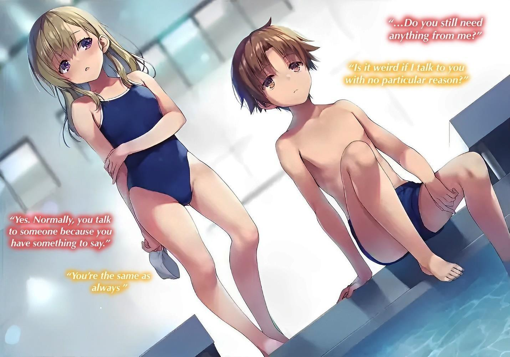
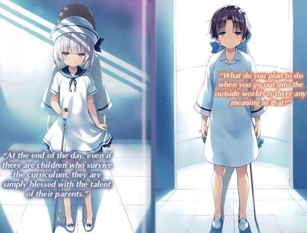
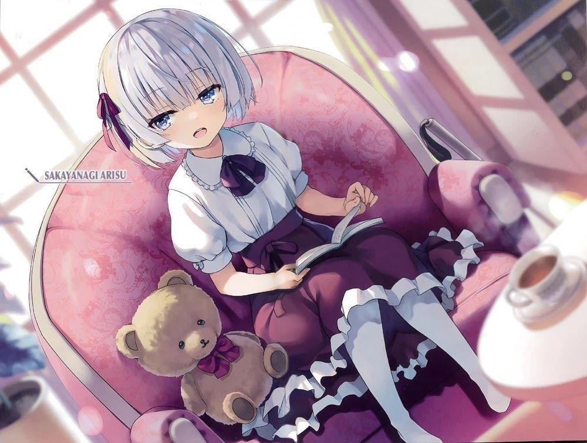
GLADHEIM
TRANSLATIONS
Youkoso Jitsuryoku Shijou Shugi no Kyoushitsu e Volumen 0
Nota del Traductor:
Obviamente este volumen 0 cronológicamente es el primero, sin embargo, sobre todo para los nuevos lectores, creo que es importante recalcar que si lo leen primero se pueden llevar algunos spoilers sobre todo de la etapa del segundo año.
Se recomienda leer después del Volumen 8 del Segundo Año. En este volumen 0 se narran los hechos que cuenta Kanzaki en su monólogo, la identidad y algunas relaciones entre estudiantes que también se revelan en el volumen 8, aquí también quedan de manifiesto. Así mismo, si se lee primero este volumen nos daríamos una idea de quienes son los estudiantes de la Habitación Blanca, principal misterio de los primeros volúmenes del arco de segundo año.
Por último, este volumen no trata de Ayanokouji Kiyotaka sino de Ayanokouji Atsuomi (Ayanokouji Papá) y de su lucha por construir la Habitación Blanca, a excepción de un capítulo, todos los demás son narrados desde su punto de vista.
Así que, si están aquí para ver a fondo la infancia de Kiyotaka, puede que queden decepcionados.
En fin, sobre advertencia no hay engaño.
MONÓLOGO DE AYANOKOUJI ATSUOMI
RIQUEZA, POBREZA. Disparidad económica.
Educación elevada, educación deficiente. Disparidad educativa.
Zonas urbanas y rurales. Disparidad regional.
Jóvenes desfavorecidos, ancianos privilegiados. Disparidad generacional.
Japón es una sociedad desigual. Estos son sólo algunos de los ejemplos que he mencionado, pero realmente representan la diferencia entre el cielo y el infierno.
Lo importante es recordar que no todas las realidades están inmóviles. Los pobres pueden ascender para convertirse en ricos, y los ricos pueden caer para convertirse en pobres. Por ejemplo, si no te gustan las disparidades regionales, puedes mudarte a la ciudad.
Aunque entendía la lógica, no tenía nada. Nací en el campo, extremadamente pobre y lamentablemente inculto. No estaba dotado de resistencia ni era muy trabajador.
Si tuviera que nombrar un aspecto que me hubiera convertido en un luchador fuerte, sería mi juventud. Sin embargo, no la aproveché al máximo y pasé gran parte de mi tiempo ocioso. Podría decirse que tuve una vida con un ritmo lento.
No me esperaba un futuro brillante y existía la posibilidad de que simplemente llevara una vida miserable. Pero abrí el futuro con mis propias manos.
Fue porque tenía algo más grandioso que los demás, es decir, una "ambición"
desenfrenada y en constante expansión.
Llegaré a lo más alto y me situaré en la cima de este país.
Con eso en mente, seguí viviendo mi vida hasta hoy. Esa ambición fue lo único que me sostuvo a lo largo de mi vida.
Cuando cumplí veinticinco años, me enfrenté a mi primera tribulación.
Ahorré tres millones de yenes trabajando a tiempo parcial. Con ello, me convertiría en político y miembro del parlamento japonés, y acumularía una enorme riqueza y prestigio.
Un sueño fugaz y pobre. Subestimé las elecciones y perdí miserablemente.
Hubiera sido una suerte si eso fuera todo, pero como ni siquiera alcancé el número de votos requerido, confiscaron los tres millones que me había esclavizado en reunir.
El gobierno no sólo intentaba resolver la pobreza, sino también crear un entorno político limpio, combatir el descenso de la natalidad, aumentar los salarios y luchar por el movimiento "NO A LA GUERRA".
Supuse que no sería difícil salir elegido si me limitaba a ir por ahí soltando despreocupadamente todas las bondades que se me ocurrían sin pensarlas demasiado. Sin embargo, es una idea superficial y estúpida.
A todo el mundo se le ocurren pensamientos así de superficiales.
Lo importante para ganar unas elecciones es a qué organización perteneces y a las órdenes de quién trabajas, y si sabes discernir entre enemigos y aliados mientras estás inmerso en un juego a largo plazo.
¿Qué pasó después? ¿Crees que caí?
Me afilié al partido gobernante, el Partido de los Ciudadanos, y empecé a dar mis primeros pasos como político.
Sí, dos años después, volví a presentarme a unas elecciones y gané. En dos años había conseguido llegar a una posición en la que era posible volcar toda mi vida, mi corazón y mi alma en la política.
Puede que esto me convirtiera en un ganador, pero para mí, salir elegido no era el objetivo.
Sobre todo, el mundo de la política no es tan fácil.
No, en cierto modo es el mundo más profundo y negro que existe. Por muy ambicioso que yo sea, no soy más que otro joven diputado sin respaldo ni poder.
La mayoría de las personas capaces de llegar al poder son de segunda o tercera generación, a quienes se les concedió el derecho a hacerlo al nacer. Hijos de grandes políticos ignorantes, tontos y sin conciencia del peligro que corren, que no dejan de repetir sus insípidos comentarios vacíos en la televisión, día y noche.
A veces, hasta han hecho la transición del mundo del espectáculo a la política, utilizando sólo su cara y el reconocimiento de su nombre. La mayoría de ellos no son más que mascotas, pero aún tienen más potencial que un "don nadie" como yo. Es irónico.
¿Cómo puedo hacerme un nombre como político? Mis opciones eran limitadas desde el principio.
Tuve que aceptar los trabajos sucios que nadie más quería hacer. Si fracasaba, mi carrera política se truncaría de inmediato y, en algunos casos, se presentarían cargos penales contra mí.
Al tomar la iniciativa en estas tareas, fui reforzando mi presencia en el partido.
Con el tiempo, se me conoció como la espada oculta de "Naoe-sensei", que unía a muchas facciones del Partido Ciudadano. No dudé en cometer cualquier tipo de maldad: prostituir a chicas menores de edad, sobornar y realizar actividades de espionaje para organizaciones hostiles.
Una vez que me confiaron este proyecto, los límites entre el bien y el mal se eliminaron en aras del éxito. Hubo momentos en los que me relacioné con la yakuza o bandas menores y recurrí a medios violentos.
No tenía tiempo para descansar y seguía desafiándome a mí mismo. En poco tiempo, fui ganando influencia dentro del partido y, a los 36 años, tenía la oportunidad de acceder al poder.
Pero... de aquí en adelante, para saltar al centro mismo del mundo político, necesitaría más logros y transgresiones.
Un recién nacido de un mes.
La primera vez que vi a mi hijo a través del cristal, él miraba fijamente al techo.
No me vino a la mente ningún sentimiento especial.
Si tuviera que decirlo, el único sentimiento que sentí fue el alivio de que hubiera llegado la llave para conmover a los de arriba.
Llevaba casi un año esperando impacientemente este momento.
―Chequeo médico completo.
―¿Algún problema?
―De momento no hay problemas. Los resultados del análisis de ADN
coinciden.
Tabuchi, que había completado todas las pruebas, dio su informe mientras miraba los resultados del examen detallado.
Ya veo. No podemos quedarnos atrapados en la fase preliminar. Como eso se ha aclarado, podemos decir que la primera fase se ha cumplido.
―Podríamos ponerte en contacto directo con ellos ahora.
―No es necesario. Empiecen el experimento inmediatamente, como han hecho con los niños anteriores.
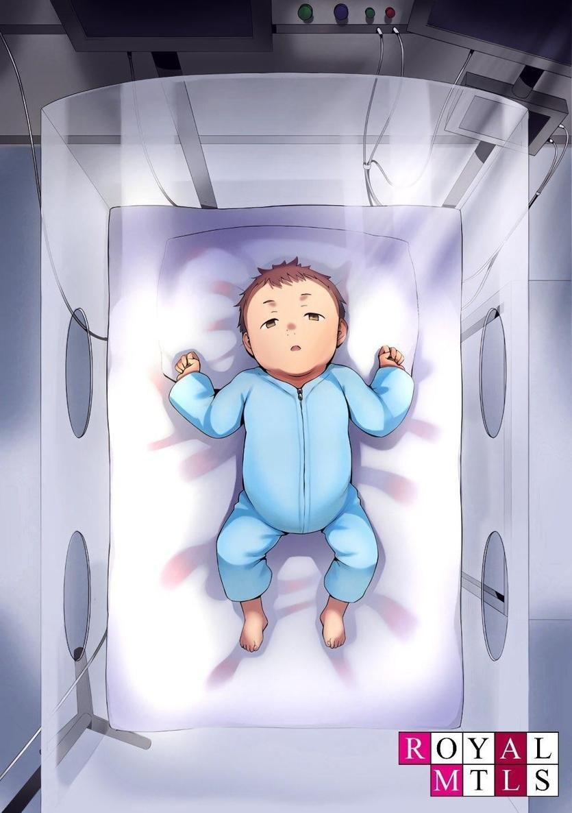
El proyecto de la Habitación Blanca ya está en su cuarta fase. No hay necesidad de perder el tiempo. Me detuve a mirar a mi hijo, que estaba a punto de ser trasladado fuera de la habitación según las instrucciones. Si lo pongo en la Habitación Blanca, no lo veré durante un tiempo, ¿verdad?
―Un momento.
Me dirigí hacia mi hijo, que estaba detrás del cristal que nos separaba. Al estar directamente frente a él, pude sentir de nuevo la pequeña vida cerca de mí.
Su cabeza no estaba asentada, así que deslicé la palma de la mano por detrás de su cuello y lo levanté con suavidad.
―Realmente eres el hijo de Sensei. Vas a recibir una educación rigurosa, pero estoy seguro de que obtendrás grandes resultados...
―¿De qué estás hablando? Prepárate para empezar a filmar.
―¿Qué...?
Tabuchi estaba atónito, como si no entendiera lo que intentaba decir.
―Voy a enviar a mi hijo, que es más importante para mí que mi propia vida, a la Habitación Blanca. Capta esa determinación y esa tensión en la cámara.
Será una importante herramienta de propaganda para usar en la próxima fiesta de recaudación.
Padres que no se interesan por sus hijos o padres que no quieren renunciar a sus hijos pero están dispuestos a cederlos para el futuro.
No hay que preguntarse cuál llamará más la atención de la galería.
―¿Qué...? Ah, sí ―Tabuchi sacó a toda prisa su celular y me tomó fotos y vídeos con el niño en brazos.
Después de un minuto más o menos, bajé al bebé.
―Llévatelo.
―Bien.
Aparté la mirada de mi hijo mientras lo trasladaban y empecé a prepararme para el acontecimiento que se avecinaba.
―De todos modos, ya están listos todos los preparativos necesarios.
Comunícame con Sakayanagi.
Ha pasado casi una década desde que entré en la política. Ostensiblemente, he estado riendo y tragando agua turbia, pero eso termina hoy.
Voy a empezar una vida para mí aquí. Usaré y cortaré todo lo que pueda, incluso a mis propios hijos, y llegaré a la cima. Naoe-sensei, que reina como el poder absoluto, no es más que un peldaño. Es un enemigo que eventualmente debe ser vencido y aplastado.
―Si no quieres morir, estás por tu cuenta Kiyotaka.
Seas un bebé o un adulto, al final, estás por tu cuenta. Tu situación puede ser la peor, pero por desgracia, la nuestra es similar. Si te hubieran criado como a mi familia, habría sido más bien negligencia. En ese sentido, podría decirse que sigo teniendo la suerte de haber tenido un buen comienzo.
Cerré los ojos en silencio, solo en la habitación donde desapareció el niño. Pero nunca se sabe lo que depara la vida.
Nunca pensé que tendría un hijo de mi propia sangre.
El punto de inflexión llegó unos cuatro años después de empezar a trabajar para Naoe-sensei.
Así fue.
Fue entonces cuando me enteré de la existencia del Proyecto Habitación Blanca.
INAUGURACIÓN DEL PROYECTO
RYOTEI[1] SASAGAWA. Era finales de enero y, aunque no nevaba, la temperatura estaba bajo cero. (Nota TL: ryotei 料 亭 : Restaurante tradicional japonés)[1]
Bajo el frío, llevaba ya una hora esperando la llegada del maestro.
―Hace frío, Ayanokouji-san... ¿Cuándo viene Naoe-sensei...?
Kamogawa, quejándose por tercera vez, exhaló entre sus manos para calentarse.
―Siempre es lo mismo. Para Naoe-sensei, la hora señalada es sólo una formalidad.
―¿Por casualidad, eso significa que en el peor de los casos llegará una o dos horas tarde?
Al parecer, eso era lo peor que este hombre podía imaginar.
―Qué tierno. Tendrás suerte si aparece por aquí hoy. Muchas veces no aparece.
―Oh, no... ¿Cuánto tiempo vas a esperar a alguien que podría no aparecer?
―Para siempre. A menos que tenga noticias suyas, esperaré aunque la tienda esté cerrada.
―Morirás, ¿Sabes?
Si te llamas a ti mismo miembro de la facción Naoe, deberías estar dispuesto a morir, pero estoy seguro de que a Naoe-sensei no le importan los fallecidos.
Somos meros intermediarios.
Más bien, son los que ya están esperando a Naoe-sensei en el ryotei los que no están tan entusiasmados con la idea.
―Pero... Es increíble que a alguien se le permita ser libre con el tiempo.
Normalmente me enfadaría.
―¿Libre con el tiempo? ¿De verdad lo crees?
―Sí, lo creo.
―Hasta llegar tarde es un arma para Naoe-sensei. Como en la historia de la isla Ganryujima y Musashi Miyamoto[2]. (TL Nota: Isla Ganryujima y Musashi Miyamoto: Esta historia se refiere a un duelo entre dos espadachines japoneses en el que Musashi Miyamoto llegó tres horas tarde)[2].
Por supuesto, él normalmente no usa un cuento tan viejo como estrategia. Es precisamente porque es Naoe-sensei que se le permite tomar medidas tan poco refinadas.
―La premisa básica es que el 80% de los que son rechazados de una reunión no tienen más remedio que llorar hasta quedarse dormidos.
Estas cifras son la prueba de que no hay mucha gente que pueda enfrentarse a Naoe-sensei.
Incluso el actual Primer Ministro no tiene más remedio que pedir ayuda constantemente a Naoe-sensei. No importa cuánto tengan que esperar, saludan a Naoe-sensei con una sonrisa.
―El otro 20%... ¿Qué pasa con ellos?
―¿De qué sirve escuchar al 20% restante de idiotas?
―Bueno, sólo para saber...
―Estaban tan irritados por haber sido plantados que me gritaron y exigieron que llamara a Naoe-sensei y le hiciera decirles cuánto tiempo les haría esperar.
Kamogawa, a mi lado, tragó saliva mientras se aclaraba la garganta.
Aunque llevaba poco tiempo en la política, conoce el horror de dar órdenes a Naoe-sensei. Pero cada vez que me enfrentaba a tales circunstancias, adoptaba una postura firme y les daba a todos la misma respuesta.
―'No puedo permitir que se lleven a Naoe-sensei fácilmente'. Los expulso así.
Los obligo a agachar la cabeza y a pedir otra cita o a no volver a dar la cara.
Ahora, otro 80% de la gente se inclinará de nuevo.
Aunque tienen veneno en el corazón, siguen dando prioridad a ver a Naoe-sensei. Es casi imposible tener una relación fluida con él cuando deciden hacerlo.
―Parece que Ayanokouji-san lo está pasando mal.
―Dicen que el trabajo duro tiene su recompensa, pero en realidad me han golpeado más de una o dos veces, con un cenicero y un palo de golf.
Como no pueden ponerle las manos encima a Naoe-sensei, no tienen más remedio que descargar su frustración conmigo. Pero recibir un puñetazo no significa que Naoe-sensei me vaya a mostrar gratitud.
―No lo puedo entender. Ayanokouji-san, ¿has estado repitiendo este tipo de cosas durante casi cuatro años?
―Es sencillo, pero no para todo el mundo. Pero cualquiera puede hacerlo si está dispuesto a morir por ello.
Por eso yo, que no tengo respaldo, ni educación, ni inteligencia, ni antecedentes familiares, tengo una oportunidad.
Pero este tipo no sabe nada.
Es dos años mayor que yo y un concejal de primer año.
―¿No te enseñó el senador Kamogawa la regla de hierro?
El hombre que está a mi lado es el tipo de político que más desprecio.
―Mi padre no me dijo nada de eso...
Típico político de segunda generación. Creció mimado y sigue sobreviviendo en la política.
Una sanguijuela aborrecible, pero sólo un elegido nacido en una clase privilegiada puede llegar a serlo.
El padre de Kamogawa, el senador Kamogawa Toshizou, partidario de Naoe-sensei desde hace mucho tiempo, es un veterano de más de 30 años en la política.
Naturalmente, nunca permitiría que su hijo experimentara la dura clase baja.
No es como yo, una pieza desechable que puede romperse pero que sigue siendo valorada como una de las partes que sostienen la columna vertebral de la facción Naoe.
―Lo único que me enseñaron es que si me callaba y seguía a Naoe-sensei, estaría a salvo como político. Me dijo que podría ser senador para siempre, que el sueldo sería estable y que con el tiempo conseguiría un puesto allí.
No tiene nada que quiera lograr como político, pero se convierte en uno sólo para sobrevivir.
Hay un cierto número de personas así, de segunda generación o no.
Es una mentalidad tonta y corrupta, pero estos tipos viven vidas inútilmente largas.
Son una bendición para los de arriba porque se les puede domesticar y conseguir un voto entre sus iguales sin rechistar.
―Estoy deseando salir de los rangos inferiores y recibir un trabajo cómodo.
Kamogawa miró al cielo nocturno mientras refunfuñaba y se quejaba.
―Yo también tengo hambre... En un día tan frío como este, el sake caliente es lo único que apetece.
¿Este tipo ni siquiera puede esperar en silencio?
―Basta, cállate un minuto, Kamogawa.
―Está bien charlar. No es como si sensei estuviera aquí. Cuéntame más sobre Naoe-sensei y Ayanokouji-san.
No me importó la parte de Naoe-sensei, pero lo que dijo después me llamó la atención.
―¿Te refieres a mí?
―Escuché rumores de que la mayoría de las personas que trabajan a las órdenes de Naoe-sensei se convierten pronto en inútiles, pero Ayanokouji-san es un prometedor recién llegado que es muy valorado. Me gustaría conocer el truco del éxito para trabajar a las órdenes de Naoe-sensei.
Kamogawa hablaba como si fuera un problema ajeno, creyéndose los rumores.
En ese momento sentí el impulso de darle un puñetazo, pero eso sólo me daría una sensación temporal de regocijo.
Cuatro años después, y sigo siendo un novato. Debería preocuparme más el hecho de que me traten así.
―Se acabó la charla. Gira la cabeza.
―¿Qué?
Inmediatamente ajusté mi postura ante el débil sonido de un taxi en la distancia.
Kamogawa comprendió lo que significaba y, tras aclararse la garganta, enderezó la espalda.
El taxi llegó lentamente frente al ryotei.
Poco después, otro sedán negro se detuvo ligeramente detrás del taxi.
Sin siquiera echar un vistazo, era obvio que se trataba de los guardaespaldas de Naoe-sensei.
Regresé rápidamente la mirada al taxi, pero la puerta no se abrió y Kamogawa ladeó la cabeza con curiosidad.
Pude ver a Naoe-sensei a través de la ventanilla, así que contuve a Kamogawa cuando estaba a punto de abalanzarse sobre él.
―No hagas nada que yo no quiera que hagas.
―Sí, pero...
En el asiento trasero del taxi, por lo que podía ver a través de la ventanilla, distinguí que un hombre y una mujer mantenían un contacto íntimo.
Si interfería, podría incurrir en una reprimenda innecesaria.
Sin embargo, no era habitual que Naoe-sensei estuviera acompañado por una mujer.
Y aunque fuera en un taxi en mitad de la noche, parecía un movimiento poco inteligente para un político. Tras un minuto de silencio en el asiento trasero del taxi, por fin se abrió la puerta.
―Hasta luego, sensei~.
Kamogawa comprendió por fin al oír el grito de la joven desde el asiento trasero.
Naoe-sensei, que siguió charlando con la mujer unos instantes más, salió lentamente del taxi.
Un hombre delgado se bajó al instante del asiento del copiloto del sedán que iba detrás de él.
Sin decir palabra, se quedó en silencio junto a Naoe-sensei.
Es un guardaespaldas con una cara nueva que no había visto nunca. Pero no hay tiempo para preocuparse.
―Gracias, Naoe-sensei.
―¡Oh, gracias!
¿Kamogawa estaba nervioso porque vio la escena con la mujer, o porque simplemente está delante de Naoe-sensei?
Aunque fuera lo segundo, era un tonto cuando actuaba de una forma que podía tomarse como lo primero.
Di medio paso delante del adefesio que era Kamogawa y le tapé la cara con el hombro.
Pero eso podía haber sido una preocupación innecesaria.
Naoe-sensei, que no tenía ninguna consideración por Kamogawa, dirigía su aguda mirada sólo al ryotei.
―¿Dónde está Asama?
Su traje y su postura, que me recordaban su avanzada edad, le hacían parecer joven al mismo tiempo.
―Lo está esperando. Déjeme mostrarle el lugar.
Eché una mirada al nervioso Kamogawa de atrás, indicándole que pagara el taxi, y conduje a Naoe-sensei al interior del ryotei.
En cuanto atravesamos la cortina, todos, desde la propietaria hasta el jefe de cocina, aparecieron apresuradamente e inclinaron la cabeza.
Naoe-sensei se quitó los zapatos sin cambiar de expresión mientras impregnaba la zona con su aura.
Pisando el suelo de madera, se dirigió a una sala privada situada en el extremo más alejado del restaurante.
Naoe Jinnosuke. Miembro del gobernante Partido de los Ciudadanos, ha desempeñado varios cargos, entre ellos el de ministro de Transporte y ministro de Economía, Comercio e Industria, y en la actualidad es secretario general del partido.
Aunque el cargo de secretario general está medio escalón por detrás del de vicepresidente, por no hablar del de primer ministro, en términos de importancia, el de secretario general es con mucho el cargo más importante.
Es el director general del partido, quien ostenta el poder real del mismo.
Aunque cumplirá sesenta y ocho años este año, no ha dado la menor señal de retirarse del servicio activo.
En el mundo de la política, donde no hay edad de jubilación, seguirá en su puesto actual otros diez o veinte años, a menos que su estado físico se convierta en un problema.
―Asama-sensei, traje a Naoe-sensei conmigo.
Más allá del shoji, Asama-sensei esperaba en seiza para dar la bienvenida a Naoe- sensei. Al ver a Naoe-sensei, se levantó e hizo una profunda reverencia.
(Nota TL: Shoji: Puerta corrediza japonesa)
Asama Hisashi. Tiene 71 años, tres más que Naoe-sensei.
Actualmente es viceministro del Ministerio de Tierra, Infraestructura, Transporte y Turismo, y es una figura destacada de la facción Naoe.
Para mí, incluso Asama-sensei está viviendo en las nubes.
Pero si Naoe-sensei aparece aquí, cambia instantáneamente de amo a esclavo.
Es una escena habitual que muestra a simple vista que existe tal diferencia de poder.
―Lo estábamos esperando, Naoe-sensei.
―Siento haberte hecho esperar, Asama. Estuve ocupado con el trabajo.
―Sé lo ocupado que está.
Incliné la cabeza, froté la frente contra el tatami y cerré el shoji en silencio para no interrumpir el diálogo.
A partir de este momento, no era aceptable escuchar la conversación entre dos políticos de renombre.
―Rápido, Naoe-sensei. Me gustaría preguntarle sobre ese asunto.
Sólo nos separaba una hoja de shoji.
El diablo me susurró una vez que siguiera espiando y obtuviera información útil.
O incluso podría poner micrófonos en el lugar.
Pero el mundo no es un lugar dulce.
Cualquier desvío quedaría pronto al descubierto, y mi vida política se vería truncada.
Me levanté, abandoné el lugar y me trasladé a otra habitación alejada.
En la sala privada que le habían preparado, Kamogawa estaba situado en el asiento inferior, con la mirada fija en el sake que tenía delante.
―Siento haberte hecho esperar.
―No hay problema. Empecemos ahora mismo.
―No bebas.
―Nunca he visto esto en un izakaya. ¿Qué es esta marca de sake? (Nota TL: izakaya ( 居 酒 屋 ): Un lugar para instalarse, tomar una copa y ponerse cómodo).
―¿Vas a hacerme oler el sake mientras me despido de Naoe-sensei y los demás?
―No se gana nada jugando descuidadamente con el alcohol.
―Oh, no...
Un deslumbrante restaurante de alta cocina. No lo culpo por sentirse molesto cuando le dijeron que no bebiera alcohol antes de cenar. De hecho, estuve a punto de caer en la tentación varias veces en el pasado.
Afortunadamente, pude presenciar el momento en que alguien que era mi mentor en aquel momento se enganchó al alcohol y fue reprendido y expulsado por ello, lo que condujo a mi abstinencia actual. He llegado a creer que el
"alcohol" para los que están en el poder es el sufrimiento de los que están por debajo de ellos.
No son sólo los parlamentarios de menor rango. Ellos mismos desprecian al pueblo.
Siempre están intoxicados por la satisfacción de su deseo de conquista, gobernando con reglas de su propia creación.
―Ayanokouji-sensei, tengo una cosa en mente...
Es un verdadero charlatán.
―¿Por qué siempre te sientas sobre tus rodillas? ¿Por qué no te encorvas en la mesa?
―Estoy acostumbrado. Tengo que sentarme sobre las rodillas durante horas delante de Naoe-sensei y los demás sin que me importe nada. Si no te acostumbras regularmente, tendrás problemas cuando llegue el momento.
Ni siquiera se nos permite hacer una declaración del tipo: '¿Puedo relajar las piernas?'.
No había otra opción que seguir sentado en el suelo hasta que se te necrosaban las piernas.
―Oh, Dios mío...
Kamogawa, que seguramente no confiaba en sentarse sobre sus caderas, se apresuró a sentarse de nuevo en su asiento.
Incluso un pequeño trozo de tofu de huevo servido en un plato pequeño habría costado una gran cantidad si se hubiera pedido solo.
Sin embargo, no había por qué estar agradecido. Agarré el pequeño plato de forma torpe y me lo metí en el estómago sin masticarlo.
―¡Qué desperdicio...!
Continúo comiendo, ignorando la mayor parte de la incesante charla de Kamogawa.
No me interesa lo caro que sea, lo fresco que parezca o de dónde proceda el plato.
Lo único que importa es que después tenga energía suficiente para seguir adelante.
―Voy al baño.
Me aparté de Kamogawa, me levanté con las piernas ligeramente entumecidas y salí de la habitación.
Después de ir al baño, estaba a punto de volver a la sala privada donde me esperaba Kamogawa cuando divisé las espaldas de unos hombres trajeados.
Entre ellos, había un hombre que destacaba entre la multitud.
Sin embargo, fue sólo por un momento, ya que dobló una esquina al final del pasillo y desapareció de mi vista.
―¿Qué fue eso?
Tuve la tentación de seguirlo y ver si era quien yo creía, pero me contuve.
Sin embargo, estaba seguro de que la figura era el senador Kijima. No era miembro de ninguna de las tres facciones principales: Naoe-sensei, Isomaru-sensei, y el Primer Ministro Miyako. Aunque pequeño en número, estaba en la cuarta facción del Partido Ciudadano, sin pertenecer a ninguna de las tres facciones principales.
Es tan prometedor que incluso se le considera el hombre más cercano al primer ministro entre la generación más joven.
No es habitual que coincidan en este mismo restaurante ryotei.
Es costumbre que los ryotei se pongan de acuerdo en secreto para no permitir un encuentro desafortunado.
¿Es posible que Naoe-sensei ya haya empezado a hacer movimientos de cara a las próximas elecciones?
PARTE 1.1
La reunión terminó aproximadamente una hora después de que Naoe-sensei entrara en la sala privada.
Después de despedir al senador Asama, Naoe-sensei nos llamó a Kamogawa y a mí a una sala privada.
Basándome en las tres tazas de carne de jabalí, así como en el número de pequeños cuencos de comida que había sobre la mesa, pude suponer que el senador Kijima se encontraba en esta habitación.
La comida estaba deliciosa, sin embargo, no hay señales de que tocaran los palillos, así que al parecer terminaron su comida sobre todo discutiendo. Es evidente que tomaron unas copas y se fueron a descansar.
―¿Tienes algo en mente?
Siento una tensión en el corazón, como si hubiera leído la más leve mirada que le dirigí.
―No, no es nada.
"Había alguien aquí, ¿no?". Era imposible que dijera algo así.
Supongo que era natural que supiera lo que me rondaba por la cabeza, pero no insistió en el asunto.
―Ayanokouji, ¿cuánto tiempo llevas trabajando para mí?
―Este es mi cuarto año bajo las órdenes de sensei.
―Así es. En primer lugar, sólo un puñado de personas pueden convertirse en políticos a los 20 años. Puedo decir sin lugar a dudas que eres el primero entre los "desposeídos" en subir la escalera del éxito.
Los desposeídos. Es uno de los términos acuñados por Naoe-sensei que se refiere a aquellos que no han sido bendecidos con un buen entorno. Como la gente de segunda o tercera generación, excluyendo a aquellos cuyos padres proceden del mundo de los negocios y tienen un fuerte respaldo, los cuales me desagradan.
No es exagerado decir que el hecho de que uno llegue o no a triunfar como político viene determinado por estas dos categorías: los "que tienen" o los "que no tienen".
En pocas palabras, es similar a una empresa dirigida por los miembros de una familia.
Los de fuera son de fuera, por mucho talento que tengan. A menos que se tenga mucho talento y suerte, la cima a la que se puede aspirar tiene un límite.
A los pobres no les espera un futuro brillante.
En otras palabras, el alcance de una persona como yo suele detenerse ahí en el mundo de la política. La única forma de llegar más lejos es encargar a mis hijos que lo transmitan a la segunda generación. Entonces, como resultado de una selección posterior, se me permitirá llegar a las altas esferas en algún momento de mi generación.
Sin embargo, como ya hay muchas segundas y terceras generaciones compitiendo por los pocos escaños disponibles, no les será fácil ascender en el mundo político aunque envíen a sus descendientes a la política de la misma manera. Los que se sienten primero en las sillas se relacionarán con las generaciones cuarta y quinta como titulares más fuertes.
―Le estoy verdaderamente agradecido, Naoe-sensei. Recogió a alguien como yo.
―Es gracias a tu habilidad. De hecho, me has ayudado de muchas maneras.
No tenía sentido intercambiar cumplidos. Pero era un camino inevitable para un político.
Siempre que Naoe-sensei elogia a alguien, algo inoportuno le espera.
―Pero tu habilidad todavía no es reconocida dentro del partido.
―Por supuesto. Soy muy consciente de ello.
Todo el crédito, grande o pequeño, será desviado por Naoe-sensei.
El único que entiende que esas hazañas originalmente me pertenecían es Naoe-sensei, que está justo delante de mí.
Especialmente cuando se trata de la oposición, estoy seguro de que lo mismo ocurre con lo desconocido.
―La discusión de hoy, como habrás adivinado, era sobre Isomaru.
Isomaru Youkou ha reinado en la política durante muchos años como número tres del Partido Cívico.
―Se está haciendo viejo, como yo. No hay muchas oportunidades de conseguir el puesto de primer ministro, ya sabes.
¿Era una discusión para contrarrestar la presencia rival de Isomaru-sensei?
―De todas formas, los miembros de la facción desconfían mucho de Isomaru. Sin duda es un rival al que no hay que subestimar, pero si me preguntas a mí, es un tipo fácil de entender. Para bien o para mal, es un hombre que sólo utiliza métodos anticuados.
Tras décadas de competencia amistosa en el mundo de la política, seguro que conocen los trucos del otro.
―No creo que Isomaru sea al que realmente tengamos que vigilar.
―Quiere decir...
―¿Conoces a Kijima?
Tal vez porque vi la espalda del que parecía ser el senador Kijima, mi cuerpo reaccionó involuntariamente.
Hoy, sólo he oído hablar de figuras importantes, incluyendo a Asama-sensei.
Los agudos ojos de Naoe-sensei, sin cambiar respecto a lo habitual, se posaron sobre mí.
―Lo he visto varias veces, pero nunca he tenido la oportunidad de hablar con él directamente.
―Creo que es el mayor enemigo del que debemos cuidarnos.
Aunque son miembros del mismo partido político, no duda en calificarlo de enemigo.
Esto demuestra que Naoe-sensei, que ha estado disfrutando de su propio poder, es muy cauteloso con Kijima-san.
Si Naoe-sensei e Isomaru-sensei son las sombras del Partido de los Ciudadanos, ocurre exactamente lo contrario con Kijima-san. Kijima-sensei es un hombre joven y poderoso que, bajo la luz, está siendo promovido como el cartel del Partido de los Ciudadanos, impulsando políticas depuradas a la vanguardia.
Aunque el número de miembros del partido que naturalmente le apoyan sigue aumentando, pasará un tiempo antes de que amenace a Naoe-sensei y a sus colegas.
Eso pensaba yo. Pero ahora parece que reconoce a Kijima más de lo que yo suponía. Me preguntaba si había crecido hasta el punto de ser una amenaza para Naoe-sensei.
Los tres jóvenes reunidos bajo el liderazgo del Primer Ministro Miyako son Naoe-sensei, número dos, Isomaru-sensei, número tres, y el joven Kijima-sensei, número cuatro. Están compitiendo seriamente por el puesto de primer ministro.
―¿Sabes cuál es el mayor factor en el ascenso de Kijima a su puesto actual?
―Estoy seguro de que tiene muchos logros, pero yo diría que lo más destacado es la existencia de la PEA.
Preparatoria de Educación Avanzada. Una institución creada para formar a jóvenes con futuro directamente bajo el gobierno.
Todavía no ha logrado mucho, pero se han depositado grandes expectativas en ella.
Es más correcto decir que el gobierno tiene grandes expectativas puestas en ella.
―La educación de los niños es inseparable del desarrollo de un país. La PEA es bien recibida por los simpatizantes. Me impresiona que hayan tenido una idea interesante, incluso para un enemigo.
Kamogawa escucha con el sudor en la frente, incapaz de interrumpir la conversación.
El aire acondicionado de la habitación está bastante caliente, pero no es irrazonable, dado el contenido de la conversación.
―Los jóvenes miembros del partido confían ciegamente en él.
Con su amplia exposición mediática, muchos de ellos ven el Partido Cívico a través de Kijima.
―Sólo quería asegurarme de que no estabas también del lado de Kijima...
―Debe estar bromeando. Sólo estaré bajo su cuidado.
Esto al menos no es una mentira.
Aunque la facción de Isomaru-sensei o Kijima-sensei dé un gran salto adelante en las próximas elecciones y Naoe-sensei sea privado de su puesto, tendrán que compartir el destino del barco que se hunde.
Pero, ¿cuál fue el propósito de cenar con Kijima-sensei, un oponente tan alarmante? Tengo curiosidad, pero no tengo tiempo para centrarme en eso ahora mismo.
―En realidad, hoy decidimos comenzar oficialmente el proyecto que hemos estado discutiendo en secreto ―Diciendo esto, Naoe-sensei suelta un sobre marrón tamaño A4 sobre la mesa―. Este proyecto es serio y podría afectar a mi vida política. Ahora que no sólo Isomaru, sino también Kijima, y los partidos de la oposición están subiendo poco a poco a la cima, por fin llegó el momento de ponerlo en marcha.
Naoe, que vive para que otro le rellene el vaso cuando esté vacío, se lo bebió todo de un trago.
La existencia del proyecto tendrá sin duda un gran impacto en las elecciones".
Así de importante es el contenido del sobre que tiene delante.
―La mayoría de mis ayudantes no duran ni seis meses antes de irse. O
pura incompetencia o no pueden seguir el ritmo de un trabajo inimaginablemente
duro. Pero tú llevas cuatro años conmigo, y no sólo no estás debilitándote, sino que cada día eres más fuerte. Me recuerdas a mi antiguo yo.
―Muchas gracias.
―Déjenme preguntarles. ¿Qué clase de político es superior? Kamogawa, respóndeme ―Le hizo esa pregunta.
―¿Qué?
No pudo guardar silencio ni dar una respuesta adecuada.
Un político muy bueno. Eso sería muy diferente según el punto de vista de los que le observaban.
―¿El que puede responder a los deseos del pueblo...?
Una respuesta, pero simple. Desde el punto de vista del pueblo, claro. Hasta a un niño se le habría ocurrido esa respuesta, pero Naoe-sensei asintió una vez y esta vez me miró a mí.
―¿Y tú, Ayanokouji?
Excelente o no, esa es la respuesta.
―Si me permite decirlo, creo que sería alguien como Naoe-sensei.
Al recibir los elogios, Naoe empezó a curvar los labios, pero rápidamente reanudé la conversación.
―Los malos políticos sirven tempura a los clientes que quieren sushi.
―¿Clientes? ¿Qué quieres decir?
―Un cliente es un cliente. A veces son el pueblo, a veces son políticos, a veces son otra cosa.
Los políticos no tratan con ningún grupo en particular.
Un político que no puede responder a las necesidades de un número indeterminado de clientes no es necesario.
―¿No tienes facilidad de palabra? ¿Qué quieres decir?
―Un buen político servirá buen sushi a los clientes que lo pidan.
Probablemente sólo el 30%... no, el 20% de los políticos pueden hacer esto...
Los políticos que tienen el apoyo de mucha gente entran naturalmente en esta categoría.
―¿No dirías que ya es un político muy bueno? Porque sirve a los clientes el sushi que quieren, y lo sirve bien, ¿no?
Ciertamente, este es el límite de lo que un buen político puede conseguir para una persona común. Pero no creo que eso sea lo que significa ser uno excelente.
―Si pretende ser un político superior, tiene que ser más que eso. Yo lo considero alguien capaz de inducir a la máxima satisfacción a los clientes que quieren sushi ofreciéndoles cuencos de curry y ternera.
A un político no le basta con responder obedientemente a las peticiones. Hay muchas situaciones en las que es necesario evitar causar insatisfacción, aunque a veces no se pueda responder a las peticiones. Incluso cuando se trata de un solo proyecto de ley, sólo hay dos opciones: aprobarlo o no aprobarlo.
Quienes no aprueben el proyecto de ley quedarán insatisfechos. Por eso tenemos que preparar una tercera opción que no sea ninguna de las dos y suprimir tanto el apoyo como la oposición.
El Naoe-sensei frente a mí ha demostrado esa habilidad muchas veces.
―Ya veo. Bonita manera de decirlo.
―Gracias.
Aquí, los ojos de Naoe-sensei se volvieron aún más intensos y afilados.
―Espero que algún día puedas poner en práctica esa idea con tus propias manos.
Algún día. Algún día, ¿eh? Ya han pasado cuatro años, pero en el mundo de la política eso no es nada.
Me pregunto cuántos años más tengo que seguir trabajando en el fondo antes de que llegue ese algún día.
―No te deprimas tanto. Eres capaz. Puedo verlo después de observarte durante cuatro años. Por eso lo que se exige a jóvenes como tú son resultados tangibles.
Dio un mordisco a su bocadillo con los palillos y luego giró la punta de éstos hacia el sobre.
―No creo que 'sólo hayan pasado cuatro años'. Ya han pasado cuatro años. Ya era hora de que te reconocieran el mérito de haberlo conseguido por ti mismo.
―¿Quiere decir que me dará esa oportunidad?
Una y otra vez, he preparado repetidamente el escenario para Naoe-sensei.
El mérito es sólo de Naoe-sensei, y la mala gestión es sólo mía. No es mera caridad que haya repetido semejante irracionalidad y absurdo.
El puño sobre mi regazo, naturalmente, se cerró con más fuerza.
―Puedes tomarlo así. Pero voy a asegurarme de que tenga éxito. ¿Estás preparado para ello?
“¿Le importa si miro dentro del sobre?” Era imposible que dijera algo así.
―Poco después de recibir mi posición a sus órdenes, una vez me dijo,
'Todo lo que uno hace está determinado por sus objetivos'.
No tenía forma de saberlo en ese momento, pero era una cita de un gran hombre.
Si fracaso, mis últimos cuatro años quedarán borrados en un instante.
―Pondré todo mi corazón y mi alma en esto.
Hice una profunda reverencia y acepté de buen grado hacerme cargo del proyecto.
―Si tienes éxito en este proyecto, la fama te seguirá de forma natural, ya sabes.
No me fío nada de él, pero nunca antes lo había escuchado decir algo tan sugerente.
Al menos es cierto que éste es un proyecto diferente y mucho más importante.
Es una oportunidad que recibí porque me he ganado su confianza. No la voy a desaprovechar.
―Míralo.
―Disculpe.
Levanté el sobre marrón que había sobre la mesa y saqué un montón de papeles de unos 5 mm de grosor.
La primera hoja se titula "Plan de desarrollo de recursos humanos (provisional)".
―El nivel de educación en Japón está bajando. Japón necesita ahora proporcionar educación no para los próximos cinco o diez años, sino para los próximos 20 o 30 años.
―Nunca había escuchado que le entusiasmara la educación.
―Se supone que los políticos deben centrarse en la educación. Aunque no les interese lo más mínimo, les dará votos dentro y fuera.
Este hombre realmente no quiere cambiar la educación en Japón. Sólo está formulando una estrategia para aumentar su poder y conseguir más apoyos.
El idiota que está a su lado se inquieta y se pregunta por los detalles del proyecto.
―Tú también puedes unirte, Kamogawa. Inténtalo con Ayanokouji.
―¡Oh, gracias!
Kamogawa se asomó algo forzado, sonriendo feliz.
No había necesidad de que este tipo me ayudara, pero si Naoe-sensei así lo decidía, no tenía elección. En pocas palabras, el plan de desarrollo de recursos
humanos consistía en proporcionar educación a los niños superdotados nada más nacer.
Cuando terminé de leerlo todo, hice que Kamogawa lo leyera de nuevo.
―¿Qué te parece? ¿Lo entiendes, Kamogawa?
―¿Una institución educativa bajo el control directo del gobierno, desde la infancia? Nunca he oído hablar de ello.
Las preguntas que brotaban de la cabeza de Kamogawa carecían de sentido.
―Si has oído hablar de ella, no puedes decir que sea una gran atracción,
¿verdad?
Sin necesidad de que le corrigiera, Naoe-sensei le dio una patada en el trasero.
No hay ningún problema con este proyecto
―Tienes que aprender a ser un poco más flexible, Kamogawa.
―Lo siento...
―Pero ya que eres tan principiante, me gustaría preguntarte algo. ¿Qué te parece este proyecto?
―Bueno... No sé qué decir.
La serpiente me miró fijamente, o mejor dicho, ni siquiera me miró, sino que se puso rígida.
Luego, con una expresión llorosa en el rostro, se volteó hacia mí en busca de ayuda.
―Naoe quiere saber qué opinas de este proyecto. No quiere tu aprobación superficial, puedes responder como quieras.
Si hacía algún comentario que hiciera quedar mal a Naoe-sensei, sólo conseguiría estropear su buen humor.
―Bueno, entonces... um, me preguntaba... ¿Habrá padres que envíen a sus hijos a una institución para ser educados desde la infancia? No me parece factible... Tendría que ser un secuestro, ¿no?
Al oír esto, Naoe-sensei me miró como poniéndome a prueba.
―Es una pregunta justa. ¿Puedes responderla, Ayanokouji?
Una respuesta inculta que podría ser aceptable para un novato, pero no para mí.
Tomé aire y me giré hacia Kamogawa.
―No importa. Cada año hay cientos de niños abandonados por sus padres nada más nacer, al menos que sepamos.
Conseguir bebés no es una tarea fácil.
―Los niños abandonados pueden recibir generosas ayudas del gobierno y una enseñanza adecuada sin poner en peligro sus vidas. Educación sin poner en peligro sus vidas. El proyecto también les facilita el acceso a la preparatoria y a la universidad.
―Exactamente. Sí, la respuesta es la misma, pero si el proceso que lleva a conseguir niños no es convencional, verás el proyecto desde una perspectiva muy distinta. Tendrás que estudiar mucho por el camino.
―Sí, señor.
―Dependiendo de cómo se desarrolle, podría conducir a un acercamiento a las madres.
Hay fácilmente más de cien mil procedimientos de aborto al año en este país con su tasa de natalidad en declive. Podría ser una sátira de una sociedad que no permite fácilmente la maternidad, y también podría servir de receptáculo."
Sonriendo, Naoe-sensei asintió y tomó otro sorbo de sake.
―Y si este plan funciona, por supuesto que el mundo político y empresarial estará muy interesado.
―¿Qué?
―Aparte de las vidas que se descartarán, también hay muchas vidas que no recibirán un trato justo, sobre todo las de la gente adinerada. ¿Hijos ilegítimos e hijos no reconocidos...? ¿Es eso cierto?
―Sí, hay mucha gente famosa que tiene hijos en secreto. Sin embargo, no pueden darles una educación adecuada por falta de apoyo externo. Y si el gobierno los apoya en secreto, estoy seguro de que cambiarán de actitud y esperarán lo mejor.
Poco a poco, la imagen completa de este proyecto empezó a emerger.
―Y al final, algunos de ellos querrán que sus queridos hijos tengan la mejor educación posible.
Esa es la idea que tiene Naoe-sensei de un proyecto de planificación de desarrollo de recursos humanos.
Recibe fondos de familias adineradas y se lleva a los niños que quieren mantener ocultos para educarlos. Luego los entrena minuciosamente para que, cuando lleguen a la mayoría de edad, se conviertan en miembros de la Facción Naoe, y los envía a cargos políticos. Y serán siervos obedientes que se han educado para ser niños superdotados. También serán niños que compartan la sangre de los hombres de negocios.
¿Es éste el comienzo de un plan con visión de futuro? Puede parecer arriesgado, pero si tiene éxito, las recompensas serán inconmensurables. Si nos negamos a retroceder en este punto, seremos inmediatamente retirados de la escalera por Naoe-sensei.
―Las personas en esta lista...
―Las personas en esta lista son genios que han sido desterrados del campo. Son difíciles de tratar.
Había unos diez documentos, cada uno con una biografía como un currículum.
―Estas son personas que abandonaron el escenario debido a problemas en economía, psicología y otros campos, a pesar de su capacidad para representar a Japón, o incluso al mundo.
Ya veo. Este proyecto de desarrollo de recursos humanos conlleva varios riesgos. Si se va a educar a los niños de forma semiobligatoria, naturalmente habrá oposición al proyecto. En ese sentido, no es probable que una figura prominente con autoridad quiera cooperar.
Por otro lado, si son conocidos por sus habilidades a pesar de sus problemas, resulta más fácil conseguir que acepten el proyecto ofreciéndoles dinero.
Puede que tengan muchos problemas con su personalidad, pero desde luego parecen competentes. Sin conocimientos ni experiencia, la educación sólo puede hacerse de forma difusa. Dicho esto, no sería realista atraer a personas como esos tutores y convertirlos en figuras destacadas en Japón. No es un trabajo fácil, me halaga decirlo.
―¿Recuerdas? Justo después de que entraras a trabajar para mí, hablamos de educación.
―Claro que sí. Mi filosofía de la educación es conseguir que los niños se interesen por la política desde una edad temprana, que aprendan sobre ella y que se conviertan en individuos con mentalidad política. Esto conducirá al futuro de Japón, y por eso pedí que se me permitiera estar bajo la tutela de Naoe-sensei.
―Pensé que era una tontería ingeniosa de un congresista novato nada más decírmelo, pero al final, yo mismo saqué la idea de esa declaración. En otras palabras, estás cualificado para participar. ¿Lo harás? Ayanokouji.
Estas no son palabras pidiendo confirmación. No era diferente de una coacción u orden. El requisito mínimo, pues, es que acepte la oferta con un "sí" rotundo desde el punto de vista moral, y esta vez no es diferente.
Es el mejor proyecto que sublima y encarna mi filosofía educativa.
―Por supuesto, aceptaré el proyecto.
―Se trata de un proyecto ultrasecreto, y no sólo en el partido de la oposición, sino también en el partido gobernante, no está en una fase en la que debamos informarles. Además, hay cuestiones éticas de por medio. Si sale a la luz a la mitad y te critican, se acabará tu vida política.
Solo terminará mi vida política, no la de Naoe-sensei, quien redactó este proyecto.
No, para ser precisos, resultará en que varias personas se ahorquen, incluyendo Kamogawa a mi lado.
―Haré todo lo que pueda. Sin embargo, tengo que pedirle un favor a Naoe-sensei.
―¿Qué?
Sé que puede parecer presuntuoso, pero me gustaría hablar ahora.
―Este proyecto será difícil de realizar para mí y Kamogawa solos. ¿Podría presentarme a alguien de su confianza?
―Por supuesto que lo haré. Hay un hombre llamado Sakayanagi que es muy conocido en el mundo político y empresarial. Es un joven no mucho mayor que tú, pero es educado y digno de confianza. Deberías darle una oportunidad.
He oído hablar de él antes, creo que es el viejo a cargo de la PEA... pero en cualquier caso, debe ser un hombre con el respaldo de Kijima-sensei.
―No lo dije lo suficientemente bien ―dijo―. El Sakayanagi que imaginas tiene un hijo. Ese es con el que te reunirás.
Ya veo. No debe estar directamente relacionado con Kijima-sensei.
―Entendido, señor.
―Y tengo algo importante que decirte, no esperes ningún apoyo financiero de mi parte.
―¿Qué? Un proyecto de esta magnitud va a costar mucho dinero.
Agarré a Kamogawa por los hombros y le impedí decir nada más.
―Va a requerir una cierta dosis de temeridad, pero... ¿podemos tomar prestado el nombre de Naoe-sensei?
―Eso tampoco es posible ahora mismo. No es buena idea dejar entrever que estoy involucrado.
La cara de Kamogawa, sabiendo que no podía conseguir refuerzos, palideció al ver la situación.
―Bueno, contaré contigo, Ayanokouji.
Estaba siendo muy poco razonable. Pero tenía que tragarme su temeridad para poder seguir adelante.
―Llevaré a cabo este proyecto con todo mi corazón.
Incluso si esto era sólo una idea, un proyecto que desecharía mañana, si eso es lo que Naoe-sensei quiere ahora, simplemente responderé a ello. Fuimos aconsejados y despedidos. Tomé la iniciativa de abrir la puerta corrediza de la habitación para despedir a Naoe-sensei.
Al final del pasillo, un recién llegado, un guardaespaldas, esperaba el regreso de Naoe-sensei.
―Ah, sí. ¿Era la primera vez que Ayanokouji se encontró con este hombre?
―Los guardaespaldas de sensei trabajan muy duro, así que no es raro que sean sustituidos.
El hombre frente a mí me mira con una sonrisa en su rostro todo el tiempo.
―¿Puedo presentarme?
Responde el guardaespaldas sin mostrar especial interés. Normalmente a los guardaespaldas no se les permite hacer ese tipo de comentarios, pero Naoe-sensei no se sintió ofendido. Su voz sonaba débil, pero Naoe-sensei pareció creérselo. Debía de ser algo más que un chico.
―Se llama Ayanokouji, y es un legislador moderadamente prometedor. No estaría de más saludarle.
Un hombre con una postura recta y hermosa se acercó a mí y me tendió la mano.
―Me llamo Tokinari Tsukishiro. Siento decirte que no soy guardaespaldas.
―Dices que no eres guardaespaldas... ¿Quién eres?
―Es bueno... es un todoterreno, por decirlo claramente. Si tienes algún problema, puedes contar con Tsukishiro. Puede que no sea mucho mayor que tú, pero es un hombre muy útil.
―¿Un todoterreno?
Como si me hubiera estado esperando, el hombre que se presentó como Tsukishiro me ofreció su tarjeta de presentación.
―Desde protección personal hasta recopilación de información, haré lo que necesites.
¿Así que es del tipo 'lo que necesites'? Qué tipo más turbio. Pero el hecho de que Naoe-sensei se pasee así con él significa que no hay duda de que a su manera es capaz.
―Me llamo Ayanokouji, y Naoe-sensei está cuidando muy bien de mí. Si hay algún inconveniente, agradecería mucho tu ayuda.
―No sólo soy miembro del Partido de los Ciudadanos, sino también del Partido de la Paz.
El Partido de la Paz es el primer partido de la oposición. Es una organización que siempre ha tenido una relación adversaria con el Partido de los Ciudadanos.
Justo antes de que yo me convirtiera en político, el Partido de la Paz casi ganó las elecciones en una sorpresa. Si no fuera por la orquestación de Naoe-sensei para el Partido de la Paz, la administración podría haber sido derrocada.
Si perteneces a un bando, eres hostil al otro. Eso es universal, independientemente de si eres político o no. ¿Pero ser amigo de ambos bandos?
Tsukishiro se alejó con Naoe-sensei, manteniendo una inquietante sonrisa en su rostro todo el tiempo. Metió a Naoe-sensei en el taxi que lo esperaba y siguió inclinando la cabeza hasta que el coche se perdió de vista.
―Hace frío. No creo que nadie esté mirando ya...
―Aun así, mantén la cabeza agachada al menos un minuto después de que el coche se pierda de vista. Y no aflojes ni parezcas cansado después de bajar la cabeza. Nunca se sabe dónde están los ojos.
Eso es exactamente lo que hace la gente del ryotei, incluso nos echan miradas furtivas. Si se enteran de que Naoe-sensei usaba un lenguaje soez nada más salir, se acabó.
―Pero, ¿por qué estaba Naoe-sensei hoy en un taxi? ¿Y por qué estaba intimando con una chica joven? Aunque ignores la diferencia de edad, eso es infidelidad.
―Es por eso que es un todo terreno, ¿no?
―¿Qué?
Por supuesto, no conozco los detalles. Pero si me atrevo a pensar en una razón, podría ser que el propio Naoe-sensei estuviera actuando como señuelo para atraer a alguien.
Es una posibilidad.
―Eso no es lo que debería preocuparnos. Concéntrate en el proyecto de desarrollo de recursos humanos.
Siempre es el caso que las cosas se están desarrollando horriblemente detrás de escena y de las que no sabemos nada.
―Es un gran proyecto, pero es algo escandaloso.
Es cierto que es un gran proyecto. Sin embargo, parece un desatino que Naoe-sensei dejara que Kamogawa también se enterara.
Este hombre es un chismoso y no tiene ninguna convicción. Eso está muy bien mientras el plan funcione, pero cuando no...
No, Naoe-sensei no es ciego a esas cosas. ¿Debería tomarlo como una señal de que se atrevió a tener a este hombre a su lado en caso de que yo fallara? No conozco los detalles, pero todo apunta a que tendré que empezar con un feo grillete encima.
ESFUERZO
A PESAR DE LAS PALABRAS DE UN GRAN POLÍTICO, los avances siguen siendo complicados.
El Plan de Desarrollo de Recursos Humanos está todavía en fase conceptual, y todo, incluida la recaudación de fondos, no ha hecho más que empezar, por así decirlo.
Salvo la "formación desde la infancia", que es un marco indispensable, el plan no es inmutable.
Tenemos que cambiar y responder con flexibilidad.
―...Este va a ser un proyecto complicado.
Puse los pies sobre el escritorio inundado de papeles y seguí mirando los documentos.
Un paso en falso y este proyecto será mal visto en lugar de apreciado.
Este es un centro para salvar niños, no para aprovecharse de ellos.
Esa es la impresión que debe crearse en la mente de muchos.
Pero eso será después de que el proyecto se haya puesto en marcha.
El primer paso ahora es reunir a los niños con los que se experimentará y el enorme presupuesto para el proyecto.
Además, necesitamos una forma de conseguir a los niños.
Marqué el número de 11 dígitos que había memorizado.
―Soy yo. Ponme al teléfono con Ohba, necesito un nuevo trabajo.
Primero, tengo que idear un procedimiento, sea bueno o malo, usando las piezas que tengo disponibles.
Luego, cuando Ohba conteste al otro lado del teléfono, le digo que estoy intentando encontrar la manera de conseguir un recién nacido y le pido que me diga qué hacer.
Pero sé que contactar con Ohba me llevará inevitablemente a tener que recurrir a métodos malévolos.
En medio de la conversación, sonó un timbre.
―Lo siento, te llamaré.
Puse fin a mi discusión con Ohba a mitad de frase y decidí atender a mi visitante.
―Buenos días, soy Kamogawa. ¿Está Ayanokouji-san?
―Entra, está abierto.
―Disculpe... yo.
En un rincón del destartalado despacho, apareció sombrío el rostro de Kamogawa.
―Vaya.
Tan pronto como abrí la puerta, me encontré con la actitud descaradamente grosera de Kamogawa.
Sin embargo, no intentó entrometerse, una reacción habitual entre los visitantes.
―Por casualidad, ¿vive Ayanokouji-san en esta oficina? Apesta un poco a habitado...
Con las latas de cerveza tiradas en el suelo a mis pies, las sábanas sin lavar en el sofá desgastado y la ropa desordenada por el suelo, hasta un niño podría llegar fácilmente a esa conclusión.
―¿Y qué?
―No, no es que tenga nada de malo, pero es que... No es como...
―¿No vale el salario anual del legislador?
El salario mensual de los miembros del Parlamento japonés supera con creces el millón de yenes. Sus primas son similares y suman más de 20 millones. En varias ocasiones, también cobran sueldos por horas.
―Kisarazu-san, que es tres años mayor que yo, presumía de haber firmado un contrato para el último piso de un bloque de pisos en el centro de la ciudad la semana después de convertirse en miembro del Parlamento japonés.
También declaró que logró que le aprobaran un préstamo que normalmente no habría podido conseguir.
―No se lo aprobaron porque es miembro del Parlamento japonés.
―¿Qué?
―Es cierto que los ingresos anuales del Parlamento japonés son elevados desde la perspectiva de las empresas comunes. Sin embargo, ya sean miembros de la Cámara de Representantes o de la Cámara de Consejeros, están sujetos a elecciones cada pocos años. Es imposible que los bancos presten incondicionalmente grandes cantidades de dinero a cargos tan inestables sólo por sus títulos.
―Pero Kisarazu-san dijo que se aprobó...
―La cantidad del préstamo, a qué banco y las conexiones... Puedo poner cualquier otra condición para que lo aprueben.
―Así que lo que dices es que... no podré conseguir que aprueben mi préstamo...
Es al revés. Es cierto que el Kamogawa que tengo delante está peor valorado que Kisarazu por sí mismo, pero el banco ve a su padre, Kamogawa Toshizou, a través de él.
Cuando se enteran de que busca un préstamo, los trabajadores de muchos bancos vienen a ver a Kamogawa. Incluso traen uno o dos pasteles.
―Tonterías.
―¿"Tonterías"? ¿Quién no querría vivir en un apartamento de lujo?
―Te lo digo por tu propio bien, no hagas lo que hizo Kisarazu.
No es de extrañar que un consejero codicioso de dinero usara una táctica tan estúpida.
―No estoy diciendo que no compres propiedades. Sólo digo que no juzgues mal el momento adecuado para hacerlo. El dinero es finito, pero hay infinitas posibilidades.
―Ya veo...
Kamogawa asintió con la cabeza como si lo entendiera.
―Supón que cien millones de yenes aparecieran delante de ti ahora mismo y pudieras tenerlos. ¿Qué harías?
―Ahorraría unos 90 millones y gastaría a lo grande 10 millones. Iría a cabarets y me compraría un coche. Quizá invertiría algo en acciones. Si tuviera 200 millones, me compraría un condominio.
En cierto sentido, se trata de una respuesta ejemplar, pero al igual que Kisarazu, no es más que un uso trivial del dinero.
―Quieres decir que no usarías el dinero de esa manera, Ayanokouji-san,
¿verdad? ¿Qué harías con él?
―Piensa por ti mismo.
―¿Qué? Dímelo, por favor.
100 millones. Si me llegara tanto dinero, me lo gastaría todo en cuestión de días.
Hay muchas maneras de conectar con el mundo de los negocios a través de sobornos y pagos, y muchas maneras de invertir en el futuro.
No hay tiempo para gastar dinero en una oficina o una casa cuando hasta los céntimos son útiles.
Los 100 millones invertidos por adelantado pueden volver a ti en unos años o unas décadas, transformados en una magnitud inimaginable de dinero.
Y si al final viene con el título del hombre más poderoso de este país, sería perfecto.
―Entonces, ¿qué estás haciendo aquí?
―Estoy aquí para ayudarte, como dijo Naoe-sensei.
―No necesito tu ayuda.
―Eso no sirve. Fui una de las personas que se enteró del proyecto. No me importa que Ayanokouji-san se lleve todo el mérito, pero también soy una de las personas que...
Kamogawa vive una vida torpe y de mierda, pero puedo entender su deseo de llevarse el mérito. Es cierto que es una rara oportunidad. Pero ser miembro del Parlamento japonés es una profesión en la que el concepto de descansos o días libres básicamente no existe. Son Tokubetsushoku a tiempo parcial. (Nota TL: Tokubetsushoku 特別職 ; Cargo especial de la administración pública japonesa) Cuando el Parlamento japonés está en sesión, tiene que participar en grupos de estudio de políticas en el Partido Cívico. La mayor parte de su horario se llena con reuniones de grupos de apoyo, atención a las visitas de los peticionarios, asuntos políticos y deberes oficiales.
―¿Serás de alguna ayuda?
―Daré la cara por ti. Después de todo, soy el hijo de Kamogawa Toshizou.
Tu padre no se ha hecho un nombre en el mundo de la política.
Sin embargo, no podemos ignorar el aviso de Naoe-sensei tan fácilmente,
¿verdad?
―Entonces puedes ser tan útil como desees. Tengo un trabajo para ti.
Los ojos de Kamogawa se iluminaron, ya que nunca antes se le había asignado un papel de importancia.
―¿Qué tipo de trabajo?
―Es esencial conseguir una instalación experimental para el proyecto. Te encargarás de seleccionar el lugar, el tamaño, el presupuesto y comprobar si puede estar aislado. Si sale bien, tendrás el siguiente trabajo. Quieres ser un buen concejal que Naoe-sensei reconozca, ¿no?
―Ya veo. Eso es desde luego algo que no se puede evitar, ¿no?
―Aunque no podamos alcanzar la escala de una preparatoria, aumentaremos el número de niños cada año. Esto significa que, naturalmente, se necesita un espacio razonable. También es importante mantener el anonimato.
Este proyecto no puede anunciarse con demasiada publicidad.
No podemos permitir que la prensa escriba sobre la peligrosa educación de bebés y niños pequeños.
―Desde el punto de vista presupuestario, es inevitable que sea en el campo, ¿no?
El rostro de Kamogawa cambió.
Es un hombre apático, pero no se conforma con que lo llamen trabajador de segunda generación. Denle el trabajo adecuado y las palabras de elogio adecuadas, y podría ser de alguna utilidad. No, espero tener razón.
―Está bien. Lo intentaré.
―Eso es bueno. Es la vez que mejor te he visto.
―¿Ah, sí?
Le lancé unos cuantos cumplidos, y su cara de bonachón volvió inmediatamente a su sitio.
―¿Qué vas a hacer ahora?
―Para preparar las instalaciones, el dinero es lo más importante. Voy a empezar a hacer los preparativos.
Si aplicamos las condiciones que hemos supuesto, la cantidad de dinero necesaria sólo para la puesta en marcha inicial será considerable.
Si tenemos en cuenta los recursos humanos, nos gustaría disponer de 500
millones.
Si queremos permitirnos una red de seguridad, necesitaremos más de 600-700
millones...
―Quieres decir que vas a hablar a la gente de este proyecto y conseguir que inviertan en él, ¿verdad?
―Claro que eso es lo que intento.
―¿No estarían encantados de dar a sus hijos una educación para superdotados?
Este tipo realmente no sabe lo que está haciendo.
¿Quién va a financiar un proyecto que todavía está en fase conceptual, apenas unos trozos de papel?
En primer lugar, la cantidad de dinero que estas personas adineradas están dispuestas a aportar no es algo fácil de conseguir.
Por supuesto, como político no puedes aceptar donaciones abiertamente, así que hay que seguir el procedimiento de hacer donaciones a organizaciones como las asociaciones de simpatizantes.
Hay un límite para el número de donaciones, pero es difícil encontrar un político que siga esa norma a rajatabla. Hay muchas formas de eludir las donaciones, y muchas lagunas para hacerlo.
Pero incluso en un trozo de papel como éste, si Naoe-sensei dice: 'Yo lo haré', saldrá mucho dinero de no se sabe dónde.
Como eso no está disponible, es imperativo encontrar primero un gran financiador.
Aunque no tenga el mismo poder carismático que Naoe-sensei, tenemos que hacer que lo piense para que invierta en el proyecto.
Si lo hace, no es imposible recaudar cerca de 500 millones de yenes.
Mandé a Kamogawa a trabajar como si lo estuviera expulsando de la oficina y saqué de mi mesa tres libretas de ahorro. Había depósitos de tres empresas, incluido un banco regional.
―Todos ellos son... algo menos de 10 millones.
No es mucho, pero supongo que tendré que arriesgarme con este dinero.
PARTE 2.1
Una zona residencial de lujo en Shirokane, Minato-ku.
En una esquina de la zona destaca una gran mansión histórica.
El exterior de la casa no parece viejo en lo más mínimo, como si hubiera sido renovado repetidamente con mucho dinero. Un simple político no podría vivir allí.
Hay varias cámaras de vigilancia instaladas en la entrada de la casa, lo que le confiere un ambiente misterioso.
Tras comprobar de reojo la magnífica placa con el nombre "Sakayanagi", pulsé el timbre y la primera persona que abrió la puerta fue un anciano que parecía ser un sirviente de la mansión.
Como ya había concertado una cita con él, me dejaron pasar sin problemas.
Los amplios tatamis, que olían a hierba de junco, no se veían dañados.
A simple vista era evidente que los tatamis se retapizaban con regularidad y que se había gastado mucho dinero en este aspecto.
Al adentrarnos más en la estancia, quedó al descubierto una habitación de estilo occidental, y me indicaron que me sentara en el sofá y esperara a la siguiente reunión.
Pensé en cómo debía comportarme con las personas que iba a conocer.
Elijo sentarme en el sofá y esperar sin vacilar.
Como alguien que trabaja para Naoe-sensei, que tiene un proyecto para el futuro, no tengo intención de hacerme el insignificante.
Mientras contemplo el vapor del té que acaba de llegar, aparece la persona a la que estaba esperando.
―Gracias por esperar.
La primera impresión que tuve al instante fue la de un hombre delgado y esbelto.
Tenía una voz tranquila y no tenía la actitud arrogante que tienen muchos ricos.
―Encantado de conocerlo. Me llamo Ayanokouji. Gracias por sacar tiempo de su apretada agenda para reunirse conmigo.
Su comportamiento era sencillo, pero con un mínimo de cortesía.
El hecho es que yo soy el intruso y el que hace la petición.
―Soy Sakayanagi. He oído hablar de usted varias veces a Naoe-sensei.
―Espero que no haya dicho nada malo.
―No, en absoluto. Dijo que tiene mucho talento. Y cuando me enteré de que tiene la misma edad que yo, sentí vergüenza.
Para un hombre que lleva caminando por la senda de los ganadores desde que nació, ¿por qué iban a importarle las personas que están por debajo de él? Si sólo está siendo modesto, le reconozco el mérito de ser un buen mentiroso.
―Muchas gracias. Pero escuché que usted también es bastante famoso.
En primer lugar, me gustaría confirmar la autenticidad de la humanidad y veracidad de Sakayanagi.
―No, todavía me queda mucho camino por recorrer. Mi padre era genial, pero eso es todo.
No aprovechó mis cumplidos y sonrió con amargura, como si estuviera preocupado.
Seguimos intercambiando palabras de tanteo durante un rato, pero su impresión no cambió. Como no daba muestras de querer poner fin a la conversación, pensé que sería mejor que interviniera yo.
―La razón por la que estoy aquí es porque recordé que Naoe-sensei me dijo que debía acudir a usted cuando tuviera un problema. Me avergüenza decir que vine a pedirle ayuda.
La gente rica no ve con buenos ojos esa forma de iniciar una conversación.
Esto se debe a que el dinero está en la raíz de la mayoría de sus problemas.
Quieren invertir, montar un negocio, etc., pero no tienen capital.
―¿En qué puedo ayudarle?
El rostro de Sakayanagi cambió ligeramente, aunque no parecía alarmado.
―Estoy pensando en poner en marcha un proyecto. Pero necesitaré mucho dinero para llevarlo a cabo.
―Ya veo. Entonces, ¿qué asunto tiene para mí...? No, creo que haya venido a pedirme un favor.
―No estoy pidiendo recibir dinero de usted, a quien no conozco de antes.
Sin embargo, me gustaría pedirle algo parecido. Me gustaría que hiciera de enlace entre el mundo de los negocios y yo.
Saqué un nuevo documento de una carpeta transparente que yo mismo había preparado y se lo presenté.
Sin embargo, Sakayanagi no lo tomó y siguió mirándome.
Aunque no puedo leer su expresión, supongo que sigue desconfiando de mí.
No, debe de ser así.
Aunque ha oído hablar de mí por mi nombre, para él soy un desconocido.
No soy un político, ni soy conocido por el público.
Si fuera un extraño para Sakayanagi, no le sería fácil leer mis archivos.
Es el destino del hombre rico meterse en problemas si se entera.
―Ya veo. No me está pidiendo un préstamo, ¿verdad?
Sí. No puedo simplemente irrumpir y pedirle que nos dé dinero. Por supuesto, la única razón de mi presencia aquí es conseguir que apruebe nuestro proyecto. Lo importante no es agachar la cabeza y pedir dinero, sino convencer a mucha gente para que invierta en el proyecto.
Sin embargo, si ni siquiera tengo la oportunidad de proponerlo, acabará siendo una teoría impracticable sobre la mesa.
―Queremos poner en marcha este proyecto para salvar la vida del mayor número posible de niños y proporcionarles una educación adecuada. Creo que podemos proporcionarles esas instalaciones con su ayuda. Soy uno de los muchos que quedaron fuertemente impresionados por la Preparatoria de Educación Avanzada que su padre construyó.
Niños, educación, vida.
Es inevitable que estas palabras se queden grabadas en la mente de Sakayanagi.
El padre de este hombre está a cargo de la educación preparatoria y es verdaderamente un líder que guía a los niños.
Cuando se trata de niños, él no permitirá ninguna laguna aquí donde ni siquiera los observe.
―Entonces, ¿no debería consultarlo con mi padre en vez de conmigo?
―Ese puede ser el curso de acción correcto, pero el mundo de la política no es tan simple. Kijima-sensei fue quien dio a conocer al mundo la existencia de la Preparatoria de Educación Avanzada. Su padre debe haber tenido una estrecha relación con él. Si ese es el caso, ¿cómo puedo yo, un miembro de la facción Naoe, un rival de Kijima-sensei, pedirle consejo?
―¿Alguna vez consideró la posibilidad de que yo pudiera estar en buenos términos con Kijima-sensei?
―Por supuesto que es posible, pero nunca he oído nada al respecto. Sólo pensé en arriesgarme.
Hay algunas mentiras en mi historia, pero la mayor parte es verdad. Aunque el padre de este hombre sea un individuo poderoso que sabe de lo que habla, no podemos decirle lo que planeamos, ya que es miembro de la facción Kijima.
―Déjeme preguntarle francamente. No quiere que Kijima-sensei conozca esta información, ¿verdad? ¿Es eso correcto?
―No lo niego.
―Si ese es el caso, entonces estoy un poco confundido. Ayanokouji-sensei no sabe si estoy del lado de Kijima-sensei, del lado de Naoe-sensei o neutral. ¿Está seguro de que está dispuesto a compartir este plan con nosotros?
Si reviso el material, obtendré información. No creo que sepa con quién está hablando.
―Eso es cierto. Si me dijera que es porque confía en mí, con quien lleva hablando sólo unos minutos, sería una broma de mal gusto.
Sakayanagi asintió sin disimular.
―Sin embargo, hay una cosa en la que creo como político, y es que confío plenamente en Naoe-sensei. Naoe-sensei conoce el peso de las palabras. Si usted fuera el tipo de persona que divulgaría esto a Kijima-sensei o a su propio padre, Naoe-sensei nunca me aconsejaría que recurriera a usted en un momento de necesidad.
―...Confía en Naoe-sensei, ¿verdad?
―La mayoría de los políticos se unirán a una facción u otra en un futuro próximo. No importa en qué facción esté, una vez que haya decidido apoyar a una persona en particular, sólo tiene que confiar en ella hasta el final. No creo que deba haber ni una pizca de duda en eso.
―Ya veo... Naoe-sensei lo tiene a su lado.
Dijo Sakayanagi alegremente y volvió a sentarse un poco más profundo.
―Como sabe, mi padre tiene una estrecha relación con Kijima-sensei. ¿Se ha preguntado alguna vez por mi relación con Naoe-sensei?
―Por supuesto, no es que no me lo haya preguntado ―dije.
―Respeto a mi padre y lo veo como mi objetivo al mismo tiempo. No sé si seguiré el mismo camino o uno diferente, pero quiero al menos explorar distintas posibilidades. Por eso estoy aprendiendo con Naoe-sensei, a quien se considera un buen oponente de Kijima-sensei. Mi padre no se opone, sino que me apoya en silencio.
―Parece muy abierto de mente que hasta sus enemigos estén de acuerdo en ayudar a difundir sus conocimientos. Y al mismo tiempo, parece confiar en que mantendrá la boca cerrada.
En una posición como la de este hombre, sería probable que siguiera los pasos de su padre.
Cuando tienes una relación con una organización hostil, tienes la oportunidad de obtener información sobre ellos, pero también tienes el riesgo de pasarles algo a ellos también.
Sin embargo, es cierto que Sakayanagi se ha ganado la confianza de Naoe-sensei, como demuestra lo bien que le cae.
―Por eso ahora estoy más convencido de ello. Espero que pueda revisarlo.
―Iba a pedirle que se marchara cuanto antes en función de lo que quisiera, pero ya no es el caso.
―Realmente aprecio su espíritu y su creencia. Voy a mirarlo.
Finalmente, Sakayanagi agarró el material y le echó un vistazo.
Después de leerlos, Sakayanagi murmuró sin pensar profundamente.
―Es cierto que cientos de niños son abandonados cada año en Japón. No acepto esa realidad, y no es malo que los políticos intenten hacer algo al respecto. De hecho, deberíamos aplaudirlo.
―¿Quiere decir que simpatiza con ellos?
―Por supuesto que simpatizo con ellos. Este es exactamente el tipo de asunto que debería estar en la agenda del gobierno, no de un ciudadano privado como yo... Espero que se ocupe de este asunto y trabaje en medidas para contrarrestarlo.
―Si pudiera hacerlo, lo haría. Pero la mecánica del país no es tan sencilla.
El problema del abandono de niños no se ha eliminado. Todavía hay niños en familias de madres solteras, padres solteros y familias pobres que no pueden recibir la educación que buscan, y el ciclo de la pobreza no muestra ningún indicio de detenerse; además, la disparidad en la sociedad sigue aumentando.
¿Es eso cierto?
―...Sí, es cierto.
―Si ve la televisión, sabrá que las madres que dan a luz en secreto en los baños de las estaciones de tren tienen que ser enterradas en la oscuridad. No es una historia poco común. La ley no está bien establecida y la situación no es aceptable, sólo puedo imaginar lo lamentable que debe ser para una madre acabar con la vida de su hijo por preocupación a la opinión pública. Por supuesto, hay quienes pueden ser implacables con los nacimientos no deseados, pero no todos quieren convertirse en criminales. Si hay un lugar generoso donde la gente pueda ayudar con los brazos abiertos, se minimizará el número de dolientes.
Si este proyecto llega a buen puerto, podría salvar la vida de 10, 20 y, con el tiempo, más de 100 niños. No, será más que eso.
―Estoy seguro de que usted, que está más cerca de nuestro bando, comprende que ser político no significa que todo salga como uno desea. Ya sea miembro del Parlamento japonés o concejal local, su título dice que promulga leyes, decide presupuestos y promulga decretos, pero nadie escucha a los políticos jóvenes mientras los que ostentan el poder real trabajan para sus propias agendas personales. O yo... No, ¿quiere que siga abandonando la vida de los niños hasta que lleve 20 o 30 años como político destacado y pueda opinar?
Sakayanagi, que está escuchando, se sentirá igual de culpable por su pasividad.
Lo subrayo con fuerza.
―Pero... sigue siendo congresista. Usted es quien debe enfrentarse al país y luchar contra él. ¿Cómo va a proceder si para empezar no pone esto en la agenda del país?
―Somos políticos y funcionarios, pero también somos Tokubetsushoku.
No pretendemos obtener beneficios, pero podemos movernos como queramos.
―¿Trabajan en privado para salvar a los niños?
―Creo que ahora que Naoe-sensei le está prestando atención, y ahora que empezó su carrera como político, la gente que le rodea escuchará su voz.
Por eso creo que hacer que construya una vía hacia el mundo de los negocios será un paso hacia la realización de este objetivo.
―Es cierto que, a diferencia de la gente normal, el color de los ojos de la gente cambia sólo porque eres político. Si lo que está escrito en este proyecto puede hacerse realidad, puede que haya gente que levante la mano...
Siendo la segunda generación de un gran padre, este hombre es al menos mucho más capaz que Kamogawa y otros.
Aunque muestra un lado bonachón, se niega a dar respuestas fáciles.
―Hay formas de recaudar fondos. Como dijo, puede trabajar por su cuenta,
¿no? Podemos apelar no sólo al mercado nacional, sino también al mundial, enviando mensajes por Internet.
―¿Quiere que recurra al hecho de que las leyes de nuestro país no están a la altura de los tiempos que corren? Sería una vergüenza para la reputación de Naoe-sensei, no para la mía. Este es un asunto que en este momento debe ser tratado con la más estricta confidencialidad. Por eso necesitamos la ayuda de gente del mundo de los negocios. Necesitamos su ayuda.
―...Estamos dispuestos a presentarle a gente del mundo de los negocios.
Pero si realmente funcionará o no es otra cuestión.
La gente no estará contenta si sólo se exponen los aspectos bonitos. Se mostrarán más bien recelosos.
―Entonces, ¿qué cree que deberíamos hacer?
―No mienta... exponga todos sus pensamientos y objetivos, Ayanokouji-san.
Si pudiéramos hacer eso, no tendríamos problemas.
―Entiendo que es difícil de comprender. Pero no pienso en beneficiarme para nada, me basta con poder salvar a los niños. No es que quiera ningún crédito, ¿creería usted a una persona así?
Sin duda, me partiría de risa si apareciera ante mí un individuo así.
―Quiere estatus y honor, quiere ganar dinero. Por eso salva niños. Es una forma brusca de decirlo, pero creo que muchos estarán más dispuestos a creerme si alguien dice esto. Y usted es miembro del Parlamento japonés. Si saben que esta es la base para llegar más alto, creo que algunos pensarán que recibirán un gran apoyo cuando finalmente se convierta en un pez gordo.
―...Efectivamente.
―Por supuesto, sería mejor para los niños que no existiera ningún interés propio, ése es sin duda el ideal, pero... ¿Qué busca y qué pretende conseguir con este proyecto?
―Estatus, honor y dinero: cosas indispensables que eventualmente querrá.
Es absolutamente necesario, como dice este hombre.
Pero hay una gran razón por la que me interesa este proyecto.
―Japón no puede competir con el resto del mundo tal y como está ahora.
Sin embargo, no podemos ponernos a la altura del mundo global si nos limitamos a observar cómo desarrollan sus recursos humanos los países más avanzados. Por eso queremos dar una educación profunda a nuestros hijos y criarlos para que sean genios capaces de competir con el mundo. En eso creemos. No nos limitamos a salvar vidas. Quiero convertir esas vidas en algo de gran valor en este mundo: ese es mi verdadero propósito.
Los rescates obligados y la educación: esto puede ser difícil de aceptar para el mundo.
―La educación de un niño se deja en manos de los padres. Usted cree que los niños cuyos padres estuvieron ausentes podrían ser criados y educados para sus ideales.
―No es por mí. Es por el futuro de Japón.
El Japón que se levantó tras la guerra y la burbuja económica se ha ido y ahora está en declive.
Japón ya ha sido ridiculizado como uno de los países todavía en vías de desarrollo, y debemos poner fin a esta situación.
―¿Qué piensa cuando sólo ve políticos ancianos? ¿Creería que estos ancianos, que tienen más de 70 u 80 años, tienen verdaderos sentimientos por Japón? Lo único que les importa es lo que pueden hacer mientras vivan. Puede que yo también cambie mi forma de pensar por una actitud tan problemática.
Pero no ahora. Ahora, como representante de la juventud, me preocupa el futuro y quiero salvarlo. Por eso debemos actuar cuanto antes.
Me encontré hablando apasionadamente.
¿Me dejé engañar por el pensamiento astuto de este hombre, o entraron en acción mis instintos de político?
―¿Sabe Naoe-sensei algo de esto?
―No. Todo esto es mi opinión personal.
No puedo confirmarlo.
Pero Sakayanagi pareció entender y asintió una vez después de mirarme a los ojos.
―Parece que la filosofía educativa de mi padre y mía y la suya son muy diferentes. Sin embargo, eso no es malo. De hecho, es uno de los enfoques más importantes. Es un caso importante para juzgar qué es lo correcto. La situación es muy similar a cómo estoy cerca de Naoe-sensei ahora mismo.
El padre del hombre está a cargo de la Preparatoria de Educación Avanzada.
Ciertamente es uno de los emprendimientos más recientes.
Pero como dice Sakayanagi, es muy diferente de mi política.
―Como desee, lo presentaré. Pero tengo una condición.
―¿Cuál sería?
―Cuando este proyecto llegue a buen puerto, por favor, déjeme observar cómo lo ejecuta.
―¿Es eso todo lo que quiere?
―Es muy importante para mí. Aprenderé mucho de usted.
―Se lo prometo. Una vez que la instalación esté realmente construida, será libre de ir y venir a su antojo. Lo único que le pido es que vea los resultados de su trabajo.
Es un pequeño precio a pagar por una conexión con el mundo de los negocios.
Además, también me interesan muchas cosas, como la estructura de la Preparatoria de Educación Avanzada.
También puedo ser capaz de encontrar alguna información sobre el rival de Naoe-sensei, Kijima-sensei.
La información es poder, ya sea para nuestros amigos o enemigos.
Pero me pregunto si será tan fácil.
El hombre que tengo delante es radiante de principio a fin, y aunque tiene algunas opiniones negativas, desde un primer momento lo veo de nuestro lado.
¿Hay alguna posibilidad de que haya algo más de lo que parece?
Que Naoe-sensei haya recomendado este proyecto no garantiza que no haya otra persona detrás.
Si lo que estamos tratando de hacer se filtra debido a este hombre...
Puede que me haya apresurado a conseguir el dinero, pero también puede que me haya excedido un poco.
Aunque he investigado a este hombre por adelantado, no pude examinarlo tan de cerca como de costumbre por falta de tiempo. Es peligroso apoyarse en la fe...
Pero constantemente tenemos que estar preparados para asumir este tipo de riesgo y lidiar con los resultados.
―Si lo desea, estaré encantado de cenar con usted pronto. Me encantaría saber más sobre su educación para la preparatoria.
―También esperaba saber de usted sobre política, además de este proyecto. Me encantaría quedar con usted.
La invitación a cenar y a otros eventos hace que una mera relación superficial parezca más realista.
Vamos a por el segundo round.
PARTE 2.2
Cuando me desperté, las manchas del cochambroso techo parecían temblar y agitarse.
―Debo de haber bebido demasiado estos días...
Mientras yacía aturdido, incapaz de reunir la energía necesaria para levantarme, la campanilla sonó tres veces a intervalos cortos.
Al darse cuenta de que la puerta no estaba cerrada, el visitante entró sin vacilar.
Kamogawa, de quien no se sabía nada desde hacía unas dos semanas, llegó al despacho jadeante.
―Ayanokouji-san, ¡despierta! Encontramos el lugar perfecto para ti.
―...No hagas demasiado ruido.
En combinación con mi falta de sueño, siento como si me estuviera gritando a través de un altavoz.
Con zumbidos en los oídos, no tengo más remedio que levantarme y recibir el informe de Kamogawa.
―Apestas a alcohol. Te envidio. ¿Dónde comiste tan bien?
―Beber alcohol es mi trabajo, es una lucha constante. No tengo el valor de pensar que es divertido.
Si crees que bebía con mujeres, eres un ingenuo.
Aunque te hagas político, no puedes comportarte como una persona importante, y tienes que inclinarte repetidamente y servir copas a tus superiores. No es diferente de la vida cotidiana de los hombres de negocios.
El informe de Kamogawa contiene un documento sobre la propiedad donde se llevará a cabo el proyecto.
―Saitama, ¿eh? Es tu ciudad natal, ¿no?
No era de extrañar; sería poco realista que se desarrollara en Tokio, con sus elevados precios del suelo.
―Sí. Antes había una fábrica de una empresa farmacéutica en lo profundo de las montañas, pero después de que se denunciara el problema de la contaminación hace unas décadas, las ventas bajaron y la empresa quebró hace un par de años. Sin embargo, la fábrica no se demolió y sigue en pie. El emplazamiento no es ni demasiado grande ni demasiado pequeño, y parece un lugar ideal para llevar a cabo el proyecto.
Puse los documentos sobre mi escritorio y utilicé la computadora para ver el mapa y confirmar la ubicación concreta.
En los tiempos que corren, está bien poder obtener la información que quieres en tiempo real estés donde estés.
La ubicación ideal está a más de una hora de la estación más cercana, y no hay servicio de autobús en la zona.
El sitio también incluye precios tanto de alquiler como de compra. Parece que se puede optar por alquilar la vivienda y comprarla al cabo de unos años, aunque el precio es un poco elevado.
Bueno, el intervalo y el precio pueden variar en función de la negociación.
―¿Pero no te están timando con 2,4 millones? Hay un lugar similar a 30
minutos de la estación por 2,5 millones. Creo que hay margen para negociar más.
―Creo que primero están explorando.
No es fácil para este lugar encontrar inquilinos, así que no debería ser difícil conseguir que quieran alquilarlo sin preguntar directamente por ello.
Si es un contrato a largo plazo, existe la posibilidad de que la otra parte acepte reducir sustancialmente el precio.
―¿No es un sitio bonito?
―Pareces muy entusiasmado. ¿Cuál es tu presupuesto estimado para obras de renovación, etc.?
―¡Aquí está!
Saca otro documento de su mochila y me lo tiende.
Parece que al menos tiene capacidad para pensar y actuar.
Por lo visto, se incluyeron todos los elementos mínimos necesarios para la construcción.
E incluso se hizo el modelado en 3D.
―¿También hiciste esto?
―Sí. Se lo pedí a un amigo mío que trabaja en el sector de la construcción.
Por supuesto, nunca le hablé de este proyecto... ¿Qué te parece?
―No está mal. Pero no hace falta más pintura. No voy a gastar dinero en embellecerlo.
―Eres muy meticuloso a la hora de recortar gastos, ¿verdad?
―Me aseguraré de que quede bien cuando consiga el dinero.
―Intentaré tenerlo en cuenta cuando lo arregle.
El primer paso es encarrilar el proyecto.
Pero también necesitamos resultados.
―Bien hecho por ahora. Me gustaría contactar con el dueño de esta propiedad lo antes posible.
―¿Y el intermediario? ¿Nos lo saltamos?
―No, como ya tenemos un intermediario, sería contraproducente intentar cualquier truco. Será mejor pasarlos a nuestro lado.
―Entendido.
Tenemos que seguir buscando al segundo y al tercer candidato, pero me gustaría tomar una decisión enseguida si es posible.
―Suponiendo que todo vaya bien... ¿Qué pasa con los niños? Aunque tengas el dinero, las instalaciones y los educadores preparados, ¿qué vas a hacer sin los niños?
Por supuesto, estamos trabajando en ese punto en paralelo.
―No te preocupes. Lo tenemos todo pensado.
―¿Cómo que lo tienes pensado? Por favor, dime exactamente qué tienes en mente. Soy parte del proyecto.
Le lancé una mirada fulminante a Kamogawa, que me observaba expectante.
―Hay algunas cosas en este mundo que es mejor ignorar. Si te enteras en un descuido, no podré ayudarte si ocurre algo. ¿Estás dispuesto a pasar años, si no décadas, en la cárcel?
―No. No... de ninguna manera...
No era una amenaza. De hecho, empecé a trabajar en secreto en un plan que me liberará en un santiamén si todo se filtra. No puedo dejar que Kamogawa se involucre en este asunto.
No es para proteger a Kamogawa, sino para protegerme a mí. Si este tipo es capturado por la policía, será imposible que pueda evadir un interrogatorio serio.
Y además, ellos tampoco se quedarán callados.
―Pero no te preocupes, hay muchas formas de conseguir niños.
Normalmente, los recién nacidos de padres no identificados son enviados a un orfanato o a un hogar infantil a través de un centro de orientación de menores.
Luego, son adoptados o encontrados por padres sustitutos.
Que la vida que sigue sea feliz o no, aunque el niño sea criado por sus propios padres, sólo depende de que se le proporcione o no un entorno favorable. Una agencia intermediaria no tiene nada de malo, siempre que disponga de los medios para proteger al recién nacido.
―Ojalá hubiera formas más fáciles y sencillas de conseguir niños, no es algo de lo que no pueda hablarte, pero sigue siendo difícil hacerlo ahora mismo.
Aunque fueras directo al respecto, desde su punto de vista seguirían siendo extraños... Y aunque supieran que eres político, no entregarían al niño fácilmente.
―¿De ese modo es?
Es cierto que las madres pueden estar dispuestas a entregar a sus recién nacidos si se les ofrece una protección generosa, el favor del gobierno y algunas otras palabras bonitas.
Sin embargo, debemos suponer que no será así.
―¿No hay forma de llevarse a los niños de un orfanato?
―En Japón no hay orfanatos. Para ser más exactos, se llaman Guarderías.
Y en el caso de los recién nacidos, que es lo que busco, se llaman hogares infantiles, no Guarderías. Pero es inevitable que también desconfíen de nosotros.
Es cuestión de vida.
―...Ya veo.
No es de extrañar que la gente en general no se preocupe por este tipo de cosas.
Hasta hoy, Kamogawa debió tener las manos llenas listando sitios potenciales.
―Por supuesto, vamos a intentar encontrar un hogar infantil ―dijo―. Pero sólo después de que pongamos en marcha la institución y la declaremos oficialmente un proyecto dirigido por el gobierno.
Pero al final, la verdadera misión será crear y proporcionar un lugar a los niños.
Compraremos al director del departamento de obstetricia y ginecología o, si eso no ocurre, abriremos una clínica de obstetricia y ginecología.
Encontrar un médico que venda su alma al diablo no es tan difícil.
Mostré a Kamogawa el plan concreto en la pantalla del ordenador mientras se lo explicaba.
Vamos a crear un lugar para las madres que no pueden cuidar de sus hijos.
Así, no hará falta que nadie interfiera.
El día de nacimiento desde el vientre de la madre se cuenta como día 0, y los bebés de menos de 28 días se llaman "recién nacidos", pero de recién nacidos a 3 meses se llevan en secreto. Las madres no se hacen responsables, sino que firman un contrato para no tener nada que ver con el niño.
Los niños son criados bajo estricta supervisión física hasta que cumplen seis meses, momento en el que son asignados a un programa educativo.
―¿Así que estás dispuesto a renunciar a una educación perfecta durante los primeros años?
―No seas ridículo. Les damos una educación completa desde el primer año, independientemente de si tienen dinero o no.
―Eres un ingenuo si crees que los logros a medias conmoverán al mundo político y empresarial, Kamogawa.
También educan a los suyos desde pequeños. Si no son capaces de mostrar una diferencia abrumadora en capacidad, la credibilidad de esta institución se tambaleará.
Los niños deben ser los mejores tanto en inteligencia como en capacidad física.
―Cuantos más ejemplos tengamos, mejor... ya sea una persona o veinte, los aceptaremos de todos modos.
No importa cuántas personas sean destruidas, mientras se oculte la realidad.
Si hay diez supervivientes, basta con fingir que había diez desde el principio.
Eso demuestra la competencia de la institución educativa.
―¿Pero cómo se puede educar a los niños? Ni siquiera hablan el idioma,
¿verdad?
―¿Has oído hablar alguna vez del lenguaje de signos para bebés?
―¿Signos para bebés? ¿Qué es eso?
―Como bien dices, los bebés ni siquiera saben hablar. El lenguaje de signos para bebés es un lenguaje diseñado para comunicarse mediante gestos.
El desarrollo cerebral y el crecimiento muscular son esenciales para aprender y manejar las palabras, pero las manos y los dedos se desarrollan mucho más rápido que eso.
Por supuesto, será difícil que el bebé entienda esos signos hasta que tenga unos seis meses.
―Jaja...
―Esto significa que los bebés son mucho más inteligentes de lo que pensamos los adultos. Si no se les enseña, lo único que pueden hacer es llorar, pero si aprenden los signos para bebés, pueden decir a los adultos por qué lloran.
Este proyecto va más allá.
Es la forma definitiva de aprendizaje precoz. Desde el momento en que un niño nace, se le da una educación completa.
Ése es el propósito de este proyecto.
PARTE 2.3
Nos aseguramos la oportunidad de ganar conexiones con el mundo de los negocios.
Sin embargo, no conseguiremos que nadie invierta dinero en nuestro proyecto si no tiene ni idea de lo que hacemos.
Desde que llegué a este mundo, lo más importante es prepararse con anticipación.
Una habitación en un edificio del centro de Kabukicho.
En esta noche en particular, estaba yo solo en este lugar.
Visito este club de cabaret dos o tres veces al mes cuando necesito pensar.
Aunque este negocio se está quedando obsoleto, sigue teniendo mucha demanda, sobre todo entre la gente mayor.
Son inseparables en el mundo de la política.
―¡Bienvenido, Ayanokouji-sama!
Un conocido chico vestido de negro me dio la bienvenida y me guió rápidamente al interior del restaurante.
―¿Está Mika?
―Sí, está trabajando. Me dijo que llegaría pronto. Resultó estar en lo cierto.
Por favor, venga por aquí.
Me llevaron a la sala VIP, al fondo del restaurante.
En la sala, ya había unas cuantas botellas y algunos aperitivos.
Está claro que los preparativos ya están en marcha incluso antes de llegar al restaurante.
―Por favor, espere un momento, señor.
El chico inclinó la cabeza y salió de la habitación.
Mientras me sentaba en silencio en el lujoso sofá, me invadió una oleada de agotamiento.
Ni siquiera tenía fuerzas para buscar mi bebida, así que me recosté contra el respaldo.
―Uf...
Suspiré profundamente, un poco sorprendido de mí mismo.
Últimamente no había dormido bien.
La presión del Proyecto de Desarrollo de Recursos Humanos del que de repente me pusieron a cargo y la gran responsabilidad que se esconde tras él.
Es un trabajo que pone en peligro mi vida y en el que no puedo permitirme fallar ni en lo más mínimo.
Tenemos una buena idea de dónde se ubicará el centro educativo, pero no disponemos de fondos suficientes para financiarlo ni hemos encontrado a los educadores adecuados. Además, necesitaremos mucha mano de obra para hacer funcionar la instalación.
También es necesario reunir a un grupo de personas que hablen bien e idear un sistema para evitar que filtren información al mundo exterior.
Naturalmente, para ello se necesita más dinero.
―Dinero, dinero, dinero o...
Sakayanagi ofreció la oportunidad de recibir financiación, pero todavía no se sabe qué ocurrirá realmente.
―No sé qué pasará...
Cerré los ojos, incapaz de soportar la somnolencia que se avecinaba.
Mordiendo la diferencia entre mi cuerpo y la dura tela de mi despacho, me tumbo a descansar. Me pregunto cuánto tiempo ha pasado desde entonces.
Un minuto, una hora.
Cuando abro los ojos y me despierto de improviso, veo un rostro que me mira de reojo.
Ojos y labios grandes y familiares.
La forma en que siempre me mira.
―¿Estás despierto?
―...¿Cuánto tiempo llevo dormido?
Me levanté del sofá y me serví un vaso de whisky para despertarme.
―Quizá 10 minutos. Debes de estar muy cansado.
Sólo 10 minutos. Pero me sentí un poco más ligero con esos 10 minutos.
―¿Quieres que te prepare un té o agua?
―No, me siento mejor cuando bebo algo así.
Mika asintió asombrada, añadió un poco más de alcohol y secó el agua del vaso de forma familiar.
―Tengo que pedirte un favor.
―¿Eso es lo primero por lo que te levantas a hablar? ¿Por qué no te olvidas del trabajo un momento?
―No, no lo creo.
El vaso en mi mano se agarra con naturalidad.
―Sé que tu trabajo es importante para ti.
―No hay línea entre el trabajo importante y el que no lo es. No se permite que nada quede sin importancia.
Para mí, incluso sacar castañas del fuego es una tarea importante.
―Es duro ser político. Por lo que veo en la televisión, se duermen en el Parlamento japonés, se les acusa de corrupción, de mujeriegos, etcétera. Hay muy pocos que parezcan hacer bien su trabajo.
Así es como se ve el mundo de la política para el ciudadano común, ¿eh?
Se supone que el partido en el poder y el partido de la oposición hacen su trabajo, que al parecer consiste en gritarse improperios como niños.
―Me parece bien. Mientras los de arriba tengan cordura, no hay sitio para mí.
Con tantos viejos políticos en el poder, puedo aprovechar los pocos puestos libres.
―Creo que serías un gran político, Atsuomi.
Dice, poniendo suavemente la palma de su mano en mi muslo.
―¿Cómo puede decir eso una mujer que no sabe nada de política?
―No sé nada de política, pero tengo buen ojo para los hombres.
Mika, a mi lado, se mudó a Tokio justo después de graduarse de la secundaria, y después de pasar de un trabajo a otro, se lanzó al mundo de los cabarets. Con su buen aspecto y su actitud desenvuelta, ascendió rápidamente al puesto número dos de este bar.
Me conoció cuando ella buscaba un restaurante para entretener a un miembro del Parlamento japonés, y entablamos una relación.
Fuimos amantes durante un tiempo, pero de eso hace ya mucho.
No rompimos la relación en su momento, no sólo por el aspecto físico de nuestra relación, sino también porque ella era una persona capaz en su campo.
Sabiendo utilizar sus armas, Mika mantenía estrechas relaciones con varios hombres que formaban parte del núcleo de los partidos gobernante y de la oposición. Mika es una mujer joven y guapa que sólo es capaz de mantener relaciones adultas que no perjudiquen a su familia. Los políticos tienen muchos secretos. Cuantos más secretos tiene uno, más quiere contarlos, y más pesados son.
Los políticos desconfían de las mujeres inteligentes. En cambio, son menos cautelosos con las mujeres que no son tan rápidas de luces.
Si una mujer responde con un "¿eh?" cómplice pero inconsciente cuando se divulga cualquier secreto, se fomentará la charla íntima. Si se pasa un poco de la raya y dice algo innecesario, no tiene que preocuparse si la otra persona no se acuerda.
Pero esta Mika es diferente. Ella no tiene conocimiento, pero tiene al menos un poco de intelecto.
Ella sabe que todas las declaraciones de los políticos valen dinero, y ella sabe cómo grabarlo de cualquier manera que pueda.
Y todo empezó cuando exigió el puesto de número uno y dinero a cambio de su ayuda.
Y no sólo para acabar con la número uno, sino también con la esperanza de que la destruyeran por completo. En respuesta al precio obvio, drogué y eliminé a la mujer que era la número uno en ese momento.
Estoy seguro de que ahora está en algún lugar ganando una pequeña fortuna tratando con clientes sucios.
Desde entonces, la relación se estrechó y ambas partes mantuvimos nuestro dominio mutuo.
―Me gustaría conocer a algunos de ellos.
Extiendo sobre la mesa las fotos de las siete personas que elegí del mundo de los negocios.
―¿Te suena alguna de estas caras o crees que puedes mover algunos hilos?
―No lo sé. No creo que ninguno de ellos se haya presentado en nuestro establecimiento... pero creo que vi a este tipo en uno de nuestros locales... Un momento, déjame comprobarlo. ¿Cómo se llama?
―Sonezaki.
Como para refrescarle la memoria, Mika llamó a alguna parte desde su celular.
―Oh, ¿hola, Sophia? Tengo una pregunta para ti... ¿Conoces a un cliente llamado Sonezaki-san?
Tras un rato de charla entre amigas, Mika terminó la llamada y asintió.
―Bingo. Había un gran cliente que estaba loco por Sophia.
―Bueno, eso es algo bueno. ¿No podemos usarlo a nuestro favor?
―¿Qué quieres que haga?
―Este Sonezaki está casado y tiene dos hijas en la secundaria. Es natural que un hombre rico juegue con mujeres, pero no querrá que su familia se entere de la aventura.
―Así de simple.
―En cuanto al resto de la gente, golpéalos tan fuerte como puedas.
De acuerdo.
―Y una cosa más. Me gustaría que también te acercaras a Sasada. Estos días, parece que se está metiendo en algún lío. Me gustaría hacerme con uno o dos de sus puntos débiles.
―...Sasada, ¿verdad? ¿Por qué?
La cara de Mika no ocultó su disgusto ante la mención del nombre de Sasada.
―No me gustan los imbéciles que me tocan sin permiso, ¿y a ti? ¿Están locos por ti?
―Incluso me ha ofrecido dinero si paso la noche con él.
―Eso está bien. Dale lo que quiere. Le sacaré más dinero del que espera.
Un arma que ningún hombre podría tener. Es una estrategia simple y efectiva.
―¿Cuánto me pagarás?
―Los resultados serán los que esperas. ¿Alguna vez te he hecho una promesa que no haya cumplido?
―De acuerdo. Esto no me gusta, pero haré que funcione.
―Y no olvides cuidar de Naoe-sensei. Piensa muy bien de ti.
―...No lo sé.
Por primera vez, la expresión de Mika se volvió oscura.
―Es un poco... difícil ver su verdadero corazón, no importa cuántas veces te acerques a él.
Agarró una toalla y empezó a doblarla al azar.
Este es un hábito al que Mika recurre para distraer su mente cuando está hablando de algo que no le gusta.
―A mis ojos es un anciano, pero tiene un aura que lo contradice.
―Como era de esperar. Eres igual que Naoe-sensei.
No te dejes engañar por su apariencia de viejo.
―Ten cuidado. No quiero que te traguen.
―No puedo decirte a cuántos tipos les he dado eso.
Saqué un puñado de billetes de la cartera y los puse desordenados sobre la mesa.
―Quédatelo.
―¿Ya te vas? Tengo tiempo.
―Lo siento, pero a mí no me sobra nada.
La bebida y las mujeres son sólo indulgencias, ni más ni menos.
Vendrán con el tiempo.
Lo importante ahora es ejecutar el proyecto a la perfección y hacerse un nombre en la facción Naoe.
PARTE 2.4
Unos meses después, estaba en mi despacho, mirando las fotos del edificio que se acababa de renovar.
Los suelos, los techos, las paredes y todo lo demás son blancos. La razón del esquema de color monocromático es dar la impresión de unas instalaciones limpias.
Pureza, inocencia, limpieza y santidad son algunas de las fuertes imágenes positivas que se relacionan con el color blanco. Muchos funcionarios del gobierno visitarán la escuela para inspeccionar la educación que se impartirá en ella.
Es una pequeña estrategia de imagen, pero es un elemento que no debe subestimarse.
―Buenos días, Ayanokouji-san.
―¡Oh!
Kamogawa y su ingeniero están en la obra de Saitama para una última comprobación, tablero en mano, para asegurarse de que todo está en orden. El trabajo parece haber llegado a su fin, y regresa a la oficina con una expresión de alivio en el rostro.
―Todo el trabajo está terminado ―dijo.
―Has hecho un buen trabajo. Por lo visto, la instalación quedó exactamente como la había imaginado.
―¿Pero cómo te las arreglaste para renovarlo tan bien con ese presupuesto? Normalmente habría costado casi el doble.
―Hay muchas constructoras buscando polvo constantemente cuando llamas a su puerta.
Si les susurras cosas dulces al oído junto con tus amenazas, cooperarán contigo sin importarles el beneficio.
―Ahora se está volviendo real, ¿no? El Proyecto de Desarrollo de Recursos Humanos.
―Sí, lo está.
―Eso es porque has sido capaz de hacer que la gente del mundo de los negocios coopere, Ayanokouji-san. Es todo un logro recaudar casi 400 millones de yenes en una noche.
Los 400 millones se invirtieron en los educadores, el terreno, los edificios y la construcción de la propia instalación.
La mayor parte ya no existe. Es difícil recaudar el dinero, pero no supone ningún esfuerzo gastarlo.
―Tienen una cantidad enfermiza de dinero, pero siempre están hambrientos de honor y fama. Si este proyecto tiene éxito, obtendrán eso a cambio. Por el aspecto del grupo, estoy seguro de que tienen muchos negocios como este entre manos.
Probablemente están invirtiendo en varios negocios al mismo tiempo, incluido el mío, y sólo piensan en obtener beneficios si ganan uno de ellos. Puede que algunos de ellos ya se hayan olvidado de que existo.
―¿Dices que no esperan nada?
―Por ahora está bien. Es arriesgado llamar demasiado la atención.
Sin embargo, es importante seguir avanzando hacia el futuro. Además de los profesores, debemos velar por los niños que recibirán la educación.
―Pero primero tenemos que idear un nombre para el centro que se encargará del Proyecto de Desarrollo de Recursos Humanos.
―¿Ah, sí? ¿Qué nombre le pondrán?
―La Habitación Blanca. El nombre enfatizará la imagen del blanco, que da sensación de pureza y se pondrá en primer plano.
―La Habitación Blanca... Bueno, es sencillo pero fácil de entender.
No importa quién lo vea, este lugar se establecerá como el nombre blanco y puro, como el nombre sugiere..
―Espero que gente como Naoe-sensei y muchos otros nos visiten pronto.
Kamogawa está animado, pero las cosas no van a ser tan fáciles.
―Déjame decirte algo importante, Kamogawa. El mundo de la política no es un simple binario de amigo o enemigo. Si tomas el camino fácil, estarás en serios problemas.
―¿Qué...?
Ladeó la cabeza con cara de tonto, como si no entendiera lo que quería decir.
―Escucha ―le dije―, todavía no estás preparado para esto.
Por muy bien que parezcan ir las cosas, sigo caminando sobre un puente que puede derrumbarse en cualquier momento.
Kamogawa aún no conoce el terror de caminar sobre ese puente.
―¿Qué vas a hacer después de esto?
―Tengo que reunirme y entrevistar a algunas personas hoy aquí. No podemos dirigir la Habitación Blanca nosotros solos.
Es imposible que unos aficionados eduquen a unos niños de improviso.
Kamogawa miró su reloj y bajó la cabeza, un poco decepcionado.
Debía de pensar que estaba estorbando, ya que la hora de la entrevista sería a las cuatro de la tarde, dentro de unos diez minutos.
―Tú también deberías estar allí ―le dije.
―No te importa, ¿verdad?
―Tú estás a cargo de la Habitación Blanca. Tienes derecho a saber con qué clase de persona estás tratando.
Con un brillo alegre en los ojos, Kamogawa se apresuró a empezar a limpiar.
Pronto, un minuto antes de las cuatro, llamaron a la puerta del despacho.
―Adelante.
Souya, un hombre vestido con una bata blanca de laboratorio, se acercó a mí con una ligera inclinación de cabeza.
―Nunca pensé que a un investigador descarriado como yo se le acercaría un profesor como usted ―dijo con una sonrisa irónica.
Intentó estrecharme la mano, pero bajé la vista y levanté la mirada.
―Aún no he dicho que vaya a contratarte.
El hombre que apareció, Souya, solía ser médico, pero le retiraron la licencia tras varios problemas de conducta. Después de eso, empezó a investigar el crecimiento humano y publicó un artículo sobre el tema. Aunque era muy apreciado por algunos, no ha podido volver a la palestra debido a su pasado.
―Kamogawa, si tienes alguna primera impresión de él, dilo.
―No me importa... ¿y a ti?
Kamogawa mantuvo la boca cerrada, tratando de no importunar, pero era fácil ver en su expresión que se estaba guardando lo que quería decir.
―Quiero oír tu opinión.
―Perdone, pero ¿por qué está aquí con bata blanca?
―No lo sé, no puedes venir aquí desnudo, ¿verdad?
―No, no es eso... Creo que es práctica común llevar traje a una entrevista.
Souya miró su propia ropa y asintió con cierta falta de convicción:
―Ya veo.
―¿No es un asunto trivial? Mi traje formal es una bata blanca, así que no veo ningún problema. Me tomarían más en serio con esto que con un traje.
Souya respondió sin rastro de disculpa.
―Ah, Ayanokouji-san... ¿Qué vas a hacer?
"¿Vas a contratar a un hombre como este?" Eso es lo que decían sus ojos.
Ciertamente tiene muchos problemas con su comportamiento y su atuendo, que no parece hecho para una entrevista de trabajo.
Pero ninguna de las dos cosas es necesaria para el tipo de persona que busca la Habitación Blanca.
―No soy médico titulado, pero me enorgullece decir que mi formación es impresionante.
―No me importan sus antecedentes.
Parece que primero hay que acabar con esta idea equivocada.
Entonces, por primera vez, la actitud indiferente de Souya se endureció ligeramente.
―Ya basta... Después de todo, tú también vas a criticar lo que hice, ¿no?
Dijiste que me entrevistarías independientemente de mis problemas pasados, así que vine aquí, pero creo que fue un error.
―No saques conclusiones precipitadas. Dije que no importa tu historial.
Me refiero a toda tu trayectoria profesional. En qué universidad te graduaste, en qué hospital trabajaste o qué delitos cometiste: nada de eso me importa.
Souya se detuvo justo cuando estaba a punto de levantarse de su asiento.
―Lo único que busco son tus pensamientos y habilidades actuales. Tenías un buen punto de vista y habilidad como médico, y una buena percepción de los seres humanos. ¿Sigues confiando en tu capacidad para hacerlo?
―Puedo decir la mayoría de las cosas mirando a una persona. Eso no ha cambiado.
Por primera vez, Souya mostró su rostro de investigador.
―Hace falta cierto valor y determinación para entrar en el mundo ilegal.
Eso es todo lo que quería ver aquí. No puedes juzgar realmente si es útil o no hasta que estás en el campo. No tenemos tiempo para ser tan selectivos con las personalidades ―dije.
―...Le ruego me disculpe.
Souya hizo una profunda reverencia, aunque yo no se lo pedí.
―Llevo unos años en paro... acabando con mis ahorros, y siempre me he sentido frustrado. Me he estado aislando del mundo exterior.
―Te lamentas de los errores que has cometido.
―¿Lamentar? No me arrepiento de nada. Todavía me revuelve el estómago por qué esa gente me vendió.
No cree haber hecho nada malo. Es propio de la naturaleza humana haber caído en las manos equivocadas.
Kamogawa, que ha llevado una vida seria y apacible, no debe ser un buen complemento para él.
―Te daré la oportunidad de volver a la vida. A partir de ahora, trabajarás para mí como antiguo médico e investigador, dirigiendo a los sujetos y ayudándoles a crecer. ¿Entendido?
Este hombre sin ningún otro lugar a donde ir no tiene nada de que quejarse, siempre y cuando se le emplee al mismo ritmo que antes.
―Gracias, señor. Me aseguraré de no decepcionarlo.
Le dije a Souya en el acto que lo contrataría y me fui.
―Me pregunto si es realmente seguro contratar a un tipo así... Estoy preocupado.
―Entiendo lo que dices... pero es más por nuestro propio bien.
―¿Es así?
―No es cercano a nadie, está obsesionado con el dinero y no busca el honor en el mundo exterior. Si le das dinero y un lugar donde trabajar, no te traicionará. Aquí es imposible entrar en contacto con forasteros y obtener beneficios de terceros. Por supuesto, existe la posibilidad de que nos amenace y exija salarios más altos, pero si actúa hasta ese punto, no tendremos que dudar a la hora de tratar con él. Debió de entenderlo cuando me conoció: no soy alguien con quien quieras enemistarte.
―Ya veo...
―No seremos capaces de sobrevivir si sólo nos preocupa ese hombre. No sólo Souya, sino todos los empleados potenciales también fueron despedidos por causar problemas a pesar de que eran buenos en lo que hacían.
No es una buena persona, pero es muy fiable.
Además, hemos preparado a profesionales en el campo de los estudios, como un ginecólogo-obstetra, un experto en ecología y un entrenador que ha formado a atletas olímpicos.
Por supuesto, esto es sólo el principio. A partir de aquí, ampliamos nuestro alcance y trajimos a genios de todo tipo de campos para que se centraran en la formación de los niños.
―¿Está bien no oírlo en profundidad? Será difícil determinar cuánto trabajo se puede hacer.
―Una explicación detallada es innecesaria. No sé nada de medicina ni de educación. Voy a hacerles hincapié en que siempre tengo confianza, y voy a contratar a los mejores que pueda conseguir a cualquier precio.
―¿Así que estás diciendo que la gente que viene a las entrevistas tiene...
casi garantizado que será aceptada?
―Eso es lo que estoy diciendo. Por eso no importa si estás allí o no.
En el sentido de dar presión, se puede ver que es algo útil.
No hay límite a la cantidad de conocimientos que puedo adquirir estudiando ahora.
Es mejor poner a un experto delante de un experto que tener a un aficionado metiendo las narices.
―Tanto si el tipo que viene a una entrevista es capaz como si no, puedes encontrar la respuesta dejando que compitan las personas que contratas.
Otro equipo de expertos analizará si la formación ha dado resultados. Si no encuentran ciertos resultados, serán decapitados sin piedad.
PARTE 2.5
―Oh, se acabó... Estoy más cansado de lo que pensaba.
Las entrevistas comenzaron a las 16:00, pero ya eran más de las 20:00 tras reunirse con un total de seis personas.
Kamogawa sentía un agotamiento abrumador.
No cabe duda de que todos y cada uno de ellos son profesionales en su campo.
Pero como seres humanos, todos resultaron tan inmaduros y nauseabundos.
Uno ni siquiera debería pensar en mantener una conversación decente con ellos.
Sería fácil contratar a todos los que están aquí hoy, pero...
―¿Qué vas a hacer?
―Contrataremos a Ishida y Souya, aunque tienen fuertes problemas de actitud. Luego a Tabuchi, que creo que es el que tiene más sensibilidad. El resto tienen problemas internos que superan sus habilidades, así que no voy a contratarlos esta vez."
―No me importa lo que haya dicho, pero su carrera y su forma de pensar eran geniales, ¿no? No lo entiendo...
Sin embargo, está por verse si el proyecto empezará a funcionar o no.
No estoy seguro de poder librarme de mi ansiedad. Aunque fueran competentes, no tuve la sensación de que fueran sobresalientes. ¿Realmente es esta la forma de ofrecer la mejor educación?
―Salgamos a cenar.
Pensar en ello no me va a ayudar, por el momento debería resetear mi cabeza.
―¡En tiempos como estos, salgamos y divirtámonos!
Invité a Kamogawa a cenar para cambiar de aires, y en cuanto me levanté de mi asiento, saqué el celular del bolsillo.
―Ayanokouji-san, ¿viste caer algo?
Dijo, tendiéndome un trozo de papel que había recogido del suelo.
Era una tarjeta de visita.
―Tsukishiro, ¿eh?
Según la presentación de Naoe-sensei, es contratista general...
―Oh, te dio su tarjeta, ¿no? Es un desastre.
―Puede que quiera comprobarlo y ver lo competente que es.
―Oh, ¿vas a llamarlo? Aunque tenía una sonrisa que daba miedo.
A pesar de su dudoso título, Naoe-sensei nunca dejaría que un inútil se le acercara. Puede que intente ponerme en contacto con él.
Intentaré llamar al número que aparece en la tarjeta de presentación de mi celular. Si no puedo establecer una conexión, puedo descartarlo como un callejón sin salida.
Eso fue lo que sentí. Tecleé el número, y después de unos cuantos timbres...
―Esperaba noticias tuyas, Ayanokouji-san.
Por el tono de su voz, el hombre que contestó al teléfono sin vacilar parecía ser Tsukishiro.
―¿Cómo sabías que era yo?
Nunca le di mi número, y era la primera vez que llamaba a Tsukishiro.
―Era natural que lo buscara previamente.
―Eso me molesta.
No me sorprende que averiguara mi número de teléfono, ya que es algo que se puede averiguar fácilmente preguntando por Naoe-sensei o su secretaria. Lo que no me gusta es que actuara como si supiera que lo estaba llamando.
―¿Qué te ha enseñado Naoe-sensei?
No creo que fuera sólo una presentación. Intuí que había un montaje oculto.
―Entiendo lo que quieres decir, pero no puedo responder a tu pregunta aquí.
―Me estás vigilando para asegurarte de que no la fastidie, ¿es eso lo que estás haciendo?
No puedes percibir la esencia de lo que está pasando o de lo que molesta a la otra persona sólo por su voz.
Pero, al mismo tiempo, sería un juicio peligroso.
Este hombre, Tsukishiro, no parece mostrar sus aperturas con facilidad, al menos en lo que a mi intuición se refiere.
―Si no te importa, ¿podemos vernos pronto? Puede que también cumpla tus expectativas.
Mientras pensaba qué hacer, Tsukishiro hizo una invitación.
―¿Qué expectativas tienes?
―Me llamaste porque tienes un problema, ¿verdad?
―Eres muy confiado, ¿no? Todavía no he dicho ni una palabra al respecto.
Si pones tus expectativas demasiado altas, puede que te arrepientas.
―Estoy listo ahora si me necesitas.
¿Ahora? Parece muy seguro. ¿O hay otra razón? Desconfío de una trampa, pero voy a tomarle la palabra.
―Entonces, ahora es el momento. No me digas que no puedes hacerlo.
―Por supuesto que no. ¿Qué hacemos? Puedo ir a verte. Estás en tu oficina, ¿no?
―Bastardo.
¿Incluso sabe que estoy en la oficina en este momento?
―Creo que nuestra conversación será más fluida si voy a ti. Te daré una hora más o menos.
―Como quieras.
Si él estaba convencido o no de que me pondría en contacto con él es otra cuestión, pero estoy seguro de que Tsukishiro estaba y está al tanto de mi entorno.
Este gran proyecto siempre se mantiene al tanto con Naoe-sensei en el centro.
―¿Qué pasa?
―Me encontraré con Tsukishiro ahora.
―Oh, ¿ahora? Pero voy a cenar contigo...
―Estás por tu cuenta. Me reuniré con él a solas.
Con un pie en el proyecto, Kamogawa es un cofre de información.
Su presencia es un estorbo para nosotros, ya que puede convertirse en nuestro enemigo.
PARTE 2.6
Ha pasado una hora desde entonces. Esperé fuera de la oficina para ver cómo aparecía.
Casi justo a tiempo, apareció un BMW negro.
―Iré al estacionamiento, por favor espera un momento.
Tsukishiro bajó la ventanilla del conductor, entró en el estacionamiento y regresó.
―No sabía que ibas a conducir tú.
―Básicamente, hago la mayor parte de mi trabajo solo. Y no me gusta que conduzcan otras personas. Es como poner tu vida en sus manos.
Pensé que exageraba, pero quizá hacer eso sirva para lo contrario de poner su vida en peligro. A veces pienso en lo que dijo Tsukishiro. Dejé pasar a Tsukishiro a mi despacho y lo senté en un lugar apropiado.
―Dijiste que podrías cumplir mis expectativas, ¿sabes lo que quiero?
Había una presencia inquietante en el aire junto a su constante sonrisa.
―Sí. Se trata del Proyecto de Desarrollo de Recursos Humanos, ¿no?
―Parece que conoces los detalles de todo, Naoe-sensei. Así que no tenías intención de confiarme el proyecto a mí solo desde el principio.
Ese día, pensé que Naoe-sensei nos confió el proyecto sólo a Kamogawa y a mí.
No, fue culpa mía por interpretarlo así. Era mi primer gran proyecto, y Naoe-sensei no podía permitirse cometer ningún error, así que era natural pensar que iba a contratar una póliza de seguros.
―Si me derrumbo, ¿te harás cargo de este proyecto y te encargarás de su ejecución?
―Puede que sí, puede que no.
Por supuesto, no me daría una respuesta directa.
La edad de este hombre no debe ser muy diferente de la mía, pero tiene pinta de tener mucha experiencia en este tipo de trabajos.
Si es así, no me extraña que permitiera a Tsukishiro supervisar este proyecto.
―No, no. Supongo que estarán pendientes de otro político que ocupe mi lugar.
Si Kamogawa y yo fracasamos, otro político se hará cargo del proyecto.
Y Tsukishiro siempre estará observando y recopilando el panorama general para informar a Naoe-sensei.
―Excelente. Acertaste a medias, Ayanokouji-san.
―¿Acertar a medias?
―Sí. Me encomendaron dos tareas, una de las cuales no difiere de lo que acabas de describir. La otra es asistir al político al que se le confió el Proyecto de Desarrollo de Recursos Humanos.
―¿Asistir?
―Un fuerte apoyo. Pero no parece complacerte.
Suena bien tener un ayudante, pero se supone que yo también debo encargarme de gestionar cualquier fallo.
―No lo entiendo. No creo que Naoe-sensei confíe en ti, no eres mucho mayor que yo.
―Es cierto que yo, como Ayanokouji-san, soy un hombre joven en el mundo de la política. Sin embargo, a los partidarios de los grandes políticos siempre se les valora aunque sean jóvenes, siempre que sean buenos en lo que hacen. En mi caso, trabajo con cualquiera, no sólo con políticos.
Tsukishiro ni siquiera intentó ocultar su excelencia.
No es que él sea demasiado cohibido. Está seguro de sí mismo basándose en su historial.
―Antes de pedirte que hagas un trabajo, hay algo que quiero confirmar.
―¿Qué es?
Saqué el periódico de esta mañana y señalé un artículo en un pequeño rincón.
―La ciudad de Oarai en la prefectura de Ibaraki. Se encontró un cadáver en el puerto local.
―No es tan raro. Cada segundo muere gente en todo Japón.
―Es un reportero local, pero conozco a ese hombre. Era un lobo solitario al que no le gustaba el mundo político, principalmente el gobernante Partido Ciudadano, y una vez se acercó a Naoe-sensei varias veces para una entrevista.
―¿Y? ¿Es eso relevante aquí y ahora?
―¿Tú hiciste esto, Tsukishiro?
―Estás haciendo preguntas muy directas, Ayanokouji-san. ¿Esperas que te diga que sí?
―Eso no es importante. Lo que quiero saber es si este reportero estaba o no sobre Naoe-sensei cuando se reunió contigo en el ryotei el otro día.
Tsukishiro no enarcó una ceja y bajó la vista hacia el artículo del periódico.
―Parece que estaba intentando escribir un artículo sensacionalista sobre Naoe-sensei. Tiene mujer e hijo, y le gustan las mujeres jóvenes. La imagen del Partido Ciudadano se vería inevitablemente empañada.
Sí, así es. Esta era la verdadera razón por la que este hombre estaba con Naoe-sensei en un ryotei el otro día. Siguió intencionalmente a Naoe-sensei e identificó y eliminó al reportero que lo seguía.
Por supuesto, nunca lo admitiría delante de mí... Apreté el puño y lo golpeé con fuerza contra la mesa.
―No es miedo, ¿verdad? Oh, no... No creo que sea ira, ¿Cierto?
continuó Tsukishiro, que ya analizaba mi comportamiento con interés.
Desde luego, el miedo, el asombro y el horror serían la respuesta natural a esta historia.
El tipo espeluznante que tengo delante podría haber acabado con una persona como parte de su trabajo.
Pero a Tsukishiro no le tengo ningún miedo.
―¿Por qué no me dieron ese trabajo... De ahí viene la ira, ¿no?
―Mi trabajo es hacer el trabajo sucio. Es lo que siempre he hecho.
Una palabra de sensei y estoy seguro de que puedo hacer un trabajo tan bueno como este hombre.
―Al menos no haría nada estúpido que les permitiera encontrar el cuerpo.
―Tengo entendido que eres muy cercano al clan Oba, Ayanokouji-san.
Nos conoces tan bien como nosotros a ti, ¿verdad?
―Entonces deberías haber sabido desde el principio que no tengo nada que temer de ti.
―El clan Oba no es una gran organización, pero tienen muchos ladrones.
Me imagino los problemas que te habrás tomado para establecer una relación amistosa con ellos. Pero un cuerpo no es un cuerpo a menos que se encuentre.
Una mera desaparición no habría enfriado los corazones de las innumerables ratas que vigilan a Naoe-sensei.
En otras palabras, no fue que fallara al ocultarlo, sino que dejó que su cadáver fuera encontrado a propósito...
Si Tsukishiro estuvo involucrado en la muerte del reportero local o no, ya no es relevante.
No creo que estirar el brazo para agarrarlo por el cuello y amenazarlo funcione.
El hecho de que lo intuya significa que su estrategia ya está funcionando.
―Siento oír eso, pero eso demuestra lo mucho que Naoe-sensei está poniendo en su Proyecto de Desarrollo de Recursos Humanos, y ya que decidió seleccionarte, él no quiso que cruzaras un puente peligroso sólo para hundir a un reportero. Aunque este incidente se convierta en un problema, sólo se culpará de él a alguien desconocido.
Este hombre es peligroso, pero es bueno, y habla rápido cuando sabe lo que hace.
Supongo que debo ser capaz de manejar al hombre que tengo delante para alcanzar las cumbres del éxito.
―No me gustan muchas cosas de ti, pero no se puede evitar.
―Esa es la respuesta correcta. Deberíamos mantener nuestros sentimientos personales al margen.
Más cháchara es una pérdida de tiempo.
Iré al grano.
―Justo ahora estaba entrevistando personal para la nueva institución.
Tenemos buenas perspectivas de encontrar un cierto número de personas, pero todavía nos falta un factor decisivo. Llevará tiempo volver a encontrar a alguien.
―¿Me pides que encuentre a alguien por ti? Y además rápido.
―Si sabes de alguno. Pero no busco un trabajo mediocre.
―No te preocupes, conozco a alguien lo suficientemente bueno como para convencer a Ayanokouji-san.
―¿Ah?
―Pero que te los presente o no es otra historia. ¿Me entiendes?
La mayor parte de este mundo son negocios.
Si te gustan o no, si tu relación es buena o mala, no tiene sentido.
― sé. ¿Cuánto?
No tenemos nada de qué quejarnos si recibimos algo a cambio de lo que pagamos.
―En teoría, el dinero es la mejor solución, pero yo tengo mi propia política.
Estoy dispuesto a sentarme a hablar con clientes potenciales. En primer lugar,
¿estarías dispuesto a hacerlo aquí?
―Es curioso. Hace unos minutos estaba haciendo una entrevista de trabajo, y ahora estoy en el lado receptor.
Vaya broma. Pero es una tontería desperdiciar una oportunidad por un poco de tiempo y orgullo.
―Está bien. Haz lo que quieras.
Seguiré el juego de Tsukishiro y veré si puedo usarlo.
―Muchas gracias.
Tsukishiro saca una carpeta transparente de color azul claro y extrae algunos papeles de ella. Me pregunto si todo estaba calculado para traernos a este punto.
―Ayanokouji Atsuomi, edad 31 años. Varón. Nacido en la ciudad de Aso, prefectura de Kumamoto.
―Espera un momento. ¿Por qué necesitas confirmar todo eso en una entrevista?
―Es importante.
Puede que no esté bromeando, pero su pálida sonrisa me da ganas de vomitar.
―Tú y yo somos iguales. O puede que ni siquiera seamos iguales. Ahora eres libre de decidir cuál es nuestra jerarquía, tú decides. Si prefieres maldecir para tus adentros, no dudes en decirlo en voz alta.
Sonríe, pero me pregunto hasta qué punto habla en serio.
Aunque yo ya tomé mi decisión.
―Sé que tenemos personalidades diferentes, aunque parecidas. No fui reservado en el pasado, pero aún así me contuve debido a mi posición bajo Naoe-sensei. A partir de ahora, déjame responderte sin reservas en el verdadero sentido de la palabra.
―Así está mejor.
Después de sonreír satisfecho, Tsukishiro comenzó a hablar de nuevo.
―He seguido tu carrera todo lo que he podido. Tu vida no ha sido fácil, y por lo visto tuviste una infancia pobre y necesitada.
No estoy seguro de cuánto investigó, pero creo que bastante.
Era muy probable que estuviera en contacto con personas que me conocieron de niño y de estudiante.
―También pude averiguar sobre tu historia familiar. Tengo entendido que tus padres te abandonaron cuando eras muy joven y tus abuelos paternos te criaron.
Por su forma de hablar, diría que soltar una pobre mentira tendrá el efecto contrario.
―No tuve padres, ni dinero, ni una casa decente... No puedo evitar que me juzguen así.
―¿No tenías una casa decente? ¿En qué tipo de lugar vivías?
―Una choza para aperos de labranza regentada por los adultos del barrio.
Tenía un tosco tejado de hojalata y no tenía electricidad ni gas. Nos bañábamos sólo una o dos veces por semana con agua caliente hervida en una estufa eléctrica.
No es un pasado del que sentirse orgulloso y, para otros, puede sonar bastante autocrítico.
Pero no soy pesimista sobre mi pasado.
Incluso creo que me dio una vida de determinación para llegar a lo más alto.
―Mi abuelo murió cuando yo estaba en la secundaria. Pero fue un momento decisivo. Recibimos una pequeña cantidad de dinero del seguro y mi abuela y yo pudimos comprar una vieja casa cercana y nos mudamos.
No era el tipo de casa en la que te gustaría vivir.
Sin embargo, recuerdo lo feliz que me hacía tener un castillo tan grande.
―¿Sigue viva tu abuela?
―No. Murió cuando yo tenía unos 20 años, creo.
―Eso es muy irresponsable por tu parte.
―No la vi morir, y eso no me importa. Estaba demasiado ocupado viviendo para mí mismo.
Recibí una llamada de un pariente lejano, pero no asistí al funeral. Sólo pagué los gastos mínimos y dejé que se ocuparan de todo.
Ni siquiera sé dónde está la tumba ni dónde están enterrados los restos de mi abuelo y los demás.
―Veo que después de lo duro que se esforzó en criarte, su final no fue bueno.
―Duro, ¿eh? No sé yo.
Claro que sé lo duro que es criar a un hijo, aunque criarme a mí fue diferente.
―Pero es cierto que todo fue en vano. El hijo que debía criarlo con todas sus fuerzas lo abandonó y desapareció, y el nieto que dejó ni siquiera intentó ayudarle. Durante décadas, vivieron en la pobreza y nunca se dieron el lujo de vivir en el regazo de la opulencia.
Si yo hubiera vivido como mi abuela, lo habría descrito como un infierno.
―Mirando ahora la situación objetivamente, ¿qué se siente? ¿Te duele?
―No. Nada ha cambiado. No es más que eso. Mi abuela llevó la vida de una perdedora y murió como una perdedora. Al menos, si me hubiera abandonado a mí, su nieto, y hubiera hecho buen uso del dinero del seguro de mi abuelo, habría tenido una vida algo mejor.
No tengo intención de llevar una vida tan miserable.
Puedo decir que ella era lo más parecido que tengo a un modelo a seguir.
―¿Cuándo decidiste hacerte político?
―Cuando era anfitrión, una mujer que vino como invitada me contó una historia... los políticos pueden hacer dinero y ganar poder.
De hecho, había muchos miembros del Parlamento japonés que actuaban en cabarets.
Empecé a envidiar a esa gente que jugaba con el dinero que se sacaba con la sangre del pueblo.
―Te presentaste a las elecciones por primera vez a los 25 años, pero el número de votos que recibiste fue desesperante, y fracasaste estrepitosamente con la pérdida de tu depósito.
Tsukishiro leyó mi perfil con sus averiguaciones.
―Anunciaste tu intención de volver a presentarte cuando se disolvió la Cámara de Representantes con 27 años, y Naoe-sensei te tomó cariño y te animó a presentarte por primera vez.
―Admito que fue el momento más desesperado de mi vida. Como antiguo anfitrión, utilicé a las mujeres para acercarme a Naoe-sensei. Por supuesto, eso por sí solo no me habría ganado su aprobación, pero me enorgullece decir que se creyó mi contacto persistente, mi entusiasmo y mi ambición.
Tsukishiro asintió con la cabeza, satisfecho, aunque yo esperaba que indagara más en el asunto.
―Muchas gracias por los detalles.
Cerrando el expediente, Tsukishiro se volteó para mirarme.
―Muy bien. Te acepto como cliente.
Diciendo esto, Tsukishiro sacó un nuevo expediente.
―¡Espera! ¿Vas a aceptarme como cliente sólo por esto?
―Puede que te falten algunos conocimientos, pero eso no es importante.
Estás bendecido. Puedes sustituir tu cerebro y tu cuerpo por cualquier otra alternativa. Lo importante son tus ideas. Tu ambición, teñida de maldad, que no puedes ocultar, es una cualidad muy buena en un político.
Miro el expediente que tengo delante.
―Estoy seguro de que lo encontrará un hombre muy capaz.
¿Sabía que me puse en contacto con él porque quería un investigador?
No, quizá Naoe-sensei me esté apoyando entre bastidores.
―¿Cuánto?
―No esta vez. Será mejor que le devuelvas el favor en el futuro con un gran pago. Puede que algún día lo hagas a lo grande. Esa es la razón principal por la que decidí aceptar el trabajo.
―No me hagas reír. ¿A cuántos políticos les has susurrado lo mismo?
Incluso este hombre, que afirmaba haber reconocido así mis cualidades, sólo decidió colaborar por mis antecedentes.
―Por supuesto, estoy seguro de que no se trata sólo de una o dos personas.
Simplemente lo admitió y se levantó.
―Cuanto más competente eres, más enemigos te haces en política. Hay mucho en juego y tu vida política está en peligro. Tu maldad y ambición pueden ser aplastadas por una fuerza más poderosa.
―No seré aplastado por una fuerza superior.
―Sé que no lo serás. Si te encuentras en una situación en la que te van a matar, no dudarás en llevártelos contigo. Una existencia así sobrevivirá.
Como novato en política, no puedo hacer nada sin el respaldo de Naoe-sensei.
Al salir de la oficina con Tsukishiro, un joven con bata blanca se me acercó.
―Es a él a quien buscas. Le dije que viniera a esta hora.
―¿Has estado planeando esto todo el tiempo?
―Por supuesto, no tenía intención de dejar que lo conocieras si no pasabas mi entrevista.
Tras decir esto, Tsukishiro hizo una reverencia y salió del despacho.
La hora de otra entrevista se añadió a mi agenda.
En su currículum, escribió un nombre bastante inusual: Suzukake Tanji.
―Hola.
―Tome asiento.
Tsukishiro, a pesar de ser alguien presentado por Naoe-sensei, es alguien con quien no puedo ser demasiado cuidadoso.
El contratante debe ser interrogado en detalle y verificado por cualquier problema.
El hombre que entró, llamado Suzukake Tanji, parecía un desaliñado hombre de mediana edad con su barba incipiente, pero era dos años más joven que yo. Se graduó en la Universidad de Tokio como el mejor de su clase y se fue a Estados Unidos, pero nunca consiguió ningún logro importante.
Era un hombre que no tenía ningún título, sino sólo la cabeza sobre los hombros, por así decirlo, pero sigo sin saber por qué Tsukishiro me recomendó a un hombre así.
―Tu currículum parece estar muy vacío, ¿qué hacías en el extranjero?
―Hacía lo que quería hacer.
―...¿Qué querías hacer?
―Bueno, muchas cosas.
―Eso no está muy claro. No estoy seguro de entender.
―Observar a la gente. (Nota TL : En esta frase no se utilizan los honoríficos que se esperarían al hablar educadamente)[8]
Da gusto ver a tanta gente hoy en día que ni siquiera sabe usar los honoríficos adecuados.
Has aprendido que es algo mejor que te hablen a la ligera que con honoríficos poco serios.
―Ahora dime por qué decidiste aceptar esta entrevista.
―Escuché que pagan bien. Necesito dinero para quedarme en el extranjero.
―El costo de vida es mucho más alto que en Japón, es comprensible.
Si tienes la capacidad, deberías quedarte a trabajar allí, pero a juzgar por la actitud de este hombre, no necesito interrogarlo sobre la dificultad de hacerlo.
―Yo también tengo una pregunta para ti...
―¿Cuál es?
―Antes de eso, tienes que dejar de usar esos asquerosos honoríficos.
Puedes mirarme como si fuera un insecto todo lo que quieras, pero si de verdad quieres el trabajo, necesito saber quién eres en realidad.
―...Ya veo. Está bien, ¿pero eso no significará que tendré que irme?
No tengo que vestir piel humana si eso es lo que quiere.
Se puso un poco erguido y cruzó las piernas.
―De momento no estás contratado, Suzukake. Mereces crédito por tu cerebro, al haberte graduado como el mejor de tu clase en todas las prestigiosas escuelas a las que asististe, pero no has hecho nada después de eso.
―Es que el escenario no estaba preparado para que pudiera dejar algo atrás.
Respondió, y luego continuó rápidamente.
―No busco fama ni un título, sino comprender el mecanismo humano.
Pensé que la política del Proyecto de Desarrollo de Recursos Humanos sería la oportunidad perfecta para responder a mis preguntas.
―No quieres un título, ¿eh? Si cumples nuestras expectativas, serás recompensado de una forma que no has podido conseguir de cara al público. Y
si el proyecto de la Habitación Blanca tiene éxito, podrás pedir el honor.
Le entregué los materiales sobre la Habitación Blanca, y Suzukake se puso inmediatamente a hojearlos.
Tengo que colgar muchas zanahorias para estos chicos que tengo delante y dejar que me muestren su talento sin remordimientos. Eso era lo que suponía, pero con los investigadores nunca se sabe.
Sus ojos se iluminaron como los de un niño, comprobó las instalaciones y el entorno, y empezó a murmurar sus esperanzas e ideales.
PARTE 2.7
Ese mismo día, visité la Habitación Blanca de Saitama, que había sido renovada, y estuve buscando imágenes y preocupándome por la selección de otros educadores. Entonces se me acercó Kamogawa.
―Gracias por tu tiempo, señor Ayanokouji. Lo importante es que los niños estén... ¿Están en marcha los preparativos?
―¿Cómo podríamos empezar el proyecto de otro modo? El esquema está casi completo.
―Oh, ooh, eso es genial... Por supuesto, no tienes que decirme qué contiene. No quiero que me descubran todavía.
El método de adquisición de los niños que no se puede expresar a Kamogawa.
Es decir, obtener los recién nacidos ilegalmente de los intermediarios del mercado negro utilizando el clan Oba.
Sin embargo, esto implica muchos riesgos. Por lo tanto, con el tiempo debemos cambiar a una forma más legítima de recolectar niños.
Todavía estamos en la fase de planificación, pero en un futuro próximo crearemos un sitio web y anunciaremos que seremos un lugar para cuidar a los niños de padres que no pueden criar a sus hijos no nacidos debido a circunstancias inevitables.
Sería ideal colaborar con ellos incluso antes del nacimiento del niño.
Hay mujeres que no pueden confiar en el sistema gubernamental y no pueden permitirse el costo del parto. Hay muchos casos de mujeres que dan a luz y mueren en secreto.
Por supuesto, es teóricamente posible, pero al mismo tiempo entraña un gran riesgo. Cuando llevas un niño en tu vientre, no eres realmente una madre en el verdadero sentido de la palabra. No puede dar a luz a un niño y, aunque lo hiciera, no sería capaz de criarlo. Pero en muchos casos, se convierten en madres en el momento en que conocen a sus hijos.
¿Y si hay un accidente mortal? Si demandan la devolución de su hijo, lo rastrearán hasta la Habitación Blanca. Eso tiene que evitarse.
Si se descubre, será más que una mancha en el nombre de Naoe-sensei.
Es imperativo que sólo aceptemos niños de quienes hayan dado a luz en otro lugar, que no sean responsables y que no puedan ser madres.
En la página de inicio, convendría poner una miríada de palabras bonitas e hipócritas.
"No quites una vida", "Aceptamos bebés de forma anónima", "Proporcionamos asesoramiento a los necesitados", "Cómo funciona el sistema de hogares adoptivos", etcétera. Todos son eslóganes que garantizan un futuro para ellas y sus hijos.
Cuando una madre visita el hospital, el primer paso es concertar una cita. No se les preguntará su nombre ni dónde viven, sino que simplemente se les pedirá que expongan las razones por las que no pueden criar a sus hijos libremente. Si el niño es
simplemente inaceptable, algunos permitirán de buen grado que el niño quede en régimen de adopción.
Si necesitan dinero, que se queden con una parte. Cuando no tengan más remedio que entregar al niño al hospital, deben dejar pasar una semana.
Después, algunos padres pueden arrepentirse de haber entregado a sus hijos.
De este modo, los niños no reconocidos son recogidos y enviados a la Habitación Blanca.
Mantenemos una conexión con cada madre con un nombre, por si nos piden que devolvamos al niño dos o tres años después.
Por supuesto, no se puede devolver a un niño que pusiste en adopción.
Tenemos que evitar que se nos dé publicidad cuando hacemos algo ilegal.
Estas son las razones por las que el tratamiento de los niños es extremadamente delicado y difícil.
―El problema va bastante más allá. Tenemos que considerar también la atención médica del niño que traen a la Habitación Blanca.
―¿Médica...?
―Los niños son frágiles. La más mínima nimiedad puede enfermarlos.
Pero como es difícil llevarlos al hospital, es esencial tener un médico que pueda tratarlos en la Habitación Blanca.
No cualquiera puede ser médico.
Hay algunos requisitos: el médico debe tener la licencia médica retirada. Deben ser flexibles en su forma de pensar. Debe ser lo más viejo posible, pero no demasiado. Debe ser capaz de recuperar su licencia médica si la situación lo requiere. Además, deben estar necesitados de dinero o no estar dispuestos a trabajar de forma legítima en el mundo exterior.
―Es... un conjunto de requisitos bastante difícil. No se ve bien...
―No me extraña que pienses así. Sin embargo, si buscas por todo Japón, encontrarás gente con antecedentes inesperados. En mi búsqueda, di con un antiguo médico que vive en lo más profundo de las montañas de Tottori. Tenía antecedentes por un accidente de tráfico en el que murieron dos universitarios que iban juntos en motocicleta.
Los accidentes son frecuentes. Mientras regresaba a casa tras un duro día de trabajo a altas horas de la noche, el médico, vencido por el sueño, empezó a girar a la derecha sin saber la distancia que le separaba de una motocicleta que iba en línea recta, y colisionaron. La policía y la ambulancia acudieron inmediatamente, pero no pudieron salvarlo. El médico, que tuvo la mala suerte de atropellar al hijo de un conocido terrateniente local, huyó a un lugar discreto para escapar de la atención del público.
―Han pasado diez años desde aquel incidente. Pudo volver a conseguir su licencia médica, pero se pasaba el día bebiendo.
―Bueno, está bien que hayamos encontrado a alguien así... Pero aunque es una buena noticia que lo hayan encontrado, ¿no hay motivos para preocuparse?
―Solía ser un tipo extravagante y derrochador. Eso es lo que buscamos.
Al menos uno. Tal vez otro más.
Necesitamos un médico que pueda cuidar de la salud de los niños.
PARTE 2.8
Tres meses después. Los preparativos para los niños estaban hechos y la operación estaba a punto de empezar.
Sin embargo, la última etapa consistía en finalizar el aspecto curricular con los educadores.
Los investigadores que aceptaron vivir y trabajar en la institución estaban a punto de reunirse en el laboratorio para debatir el tema.
Ishida, Souya, Suzukake y Tabuchi están sentados con batas blancas.
―A partir de ahora, ustedes cuatro se encargarán de educar a la primera generación de estudiantes de la Habitación Blanca. Es la primera vez que se ven en persona, pero ya han tenido muchas discusiones entre ustedes en reuniones en línea. No creo que esto nos impida trabajar juntos.
―Un momento. Tuvimos muchas discusiones, pero tenemos direcciones y políticas diferentes. ¿Cómo esperas que estemos coordinados?
Souya, el mayor del grupo, expresó enérgicamente su intención.
Ishida y Suzukake ni siquiera intentaban hacerse entender, y parecían seguros de no equivocarse en sus principios. No era de extrañar, ya que ocurría lo mismo en las reuniones online habituales.
Son el tipo de personas con las que podrías tener discusiones interminables sobre la dirección que quieren tomar, pero nunca se entenderán.
―¿Qué harías si tergiversara tus filosofías de enseñanza y te exigiera obediencia?
―No puedo hacer eso. En ese caso, abandonaré la reunión.
Ishida respondió inmediatamente.
―Yo también. Vine aquí sólo para ofrecerte mi educación ideal. Si no puedo hacerlo, no voy a trabajar.
Lo mismo ocurrió con Suzukake. Desde el principio, ni siquiera consideró ceder el rincón de su mente para comprometerse.
―¿Cómo te atreves a ser tan grosero con Ayanokouji-san? Sé que está pagando una cantidad razonable de dinero por la preparación.
Era, en efecto, una actitud grosera, y Kamogawa, que es un aficionado en el campo de la teoría educativa y ajeno a su determinación, seguramente no podía pasarlo por alto. Sin embargo, reprendí a Kamogawa.
―Dije algo que puede haberte confundido, pero no hay necesidad de sacar conclusiones precipitadas.
Tenemos un total de 15 niños listos y disponibles para usar ahora mismo.
Extendí 15 hojas de papel del tamaño de una tarjeta de presentación con el nombre, el sexo y la fecha de nacimiento de cada bebé en el reverso de su propio papel.
A continuación, barajé las tarjetas como si las mezclara adecuadamente y las puse sobre la mesa.
Ishida, Suzukake, Souya, cada uno de ustedes elegirá cinco cartas al azar de aquí y las tomará en su mano. Estos son los niños a los que educarán y de los que estarán a cargo. Enséñenles durante un cierto periodo de tiempo. Los tres grupos de estudiantes de primera generación de la Habitación Blanca serán dirigidos en paralelo por Tabuchi. Tabuchi aceptó de antemano supervisarlos a los tres por igual.
Tabuchi asintió y echó un vistazo a cada uno de los tres.
―Ya veo. Es una buena idea. Como no compartimos los mismos valores, es la única opción que tenemos.
La conclusión a la que llegué fue dejar que estos tres compitieran libremente.
Sería una tarea imposible pedir a estos genios, que tienen filosofías y creencias diferentes, que se alinearan desde el principio.
―Pero no podemos esperar que sigan así para siempre. El periodo de enseñanza es de tres años. Cuando los niños tengan los tres años, se les hará un examen exhaustivo, y el que lidere el grupo con mejores resultados será el líder oficial.
No hay motivo de preocupación, ya que nadie espera perder.
Ishida asintió con la cabeza, satisfecho, y tomó el papel, así que lo fulminé con la mirada y lo agarré del brazo.
―¿Qué?
―¿Qué? Si dices algo como que tu hijo no tiene la calidad adecuada después de perder, o si te quejas de la decisión y te niegas a acatarla, como sanción perderás el dinero de tres años que tienes inscrito en tu libreta. Además, perderás por completo tu posición no sólo de cara al público, sino también en los bajos fondos. No lo olvides nunca, ¿está bien?
Ishida, frente a mí, carraspeó firme y lentamente en respuesta a mis palabras.
―¿Ustedes dos también están de acuerdo?
―No tengo nada que objetar.
Souya parecía estar de acuerdo con mis palabras.
Sin embargo, sólo Suzukake mostró un rostro adusto.
―Si tienes alguna queja, dila ahora.
―Ya lo sé. Lo que me molesta es la parte de seguir al líder. No creo que vaya a perder, pero necesito saber qué harán si los sigo. ¿Quieren que siga a un líder que tiene principios diferentes? Si es así, no aceptaré el trabajo.
―No necesitamos un genio si se limita a obedecer todo. Y no tendría ningún mérito unir a tres excéntricos como ustedes. Le daré al líder la última palabra, pero si hay objeciones a la política educativa, discutiremos a fondo.
Para eso está Tabuchi.
―Es como el partido gobernante y el partido de la oposición ―dijo Kamogawa, impresionado, y con su típica actitud de estadista.
―...Entiendo.
Ishida recuperó la compostura sin perder la mirada confiada.
Esta es la mejor decisión por ahora, aunque retrase el plan.
Sólo el primer grupo de estudiantes será entrenado en tres grupos durante tres años, y luego se elegirán los líderes y se unificarán los grupos.
Es caro y menos eficaz, pero es una medida necesaria para unificar a los educadores.
Se creará una nueva política educativa y comenzará la formación de un nuevo grupo de alumnos cada año.
Nos veremos obligados a modificar varios planes en el camino, pero este es el mejor plan que podemos tomar ahora.
LANZAMIENTO
SUEÑOS. SE DICE que soñamos casi todos los días, pero que el hecho de que los recordemos o no está relacionado con la profundidad de nuestro sueño.
Teniendo en cuenta que el sueño está vívidamente grabado en mi mente, no debo de tener un sueño muy superficial. El sueño que tengo ahora ocurrió hace mucho tiempo, es cierto, cuando todavía era adolescente.
Recordaba cómo me sentí cuando ahorré dinero para comprar un Keicar usado.
El kilometraje superaba con creces los 100.000 kilómetros, y el interior estaba destartalado: el mantenimiento no iba como yo deseaba. No podía decir que fuera un coche cómodo, aun así, lo conducía con la sensación de que me había convertido en el sostén de la familia. (Nota del TL: KeiCar : Clasificación japonesa para los coches que se consideran "automóviles ligeros").
El tiempo que pasé solo conmigo y con el coche, sin hacer amigos ni amantes, fue insustituible.
Ha pasado mucho tiempo desde entonces. Ahora ya no conduzco yo. Ahora duermo en el asiento trasero. El profundo y suave confort del cuero auténtico. La cálida sensación que envuelve mi espalda. Todo ello ha cambiado a algo mucho más lujoso que el coche que solía conducir.
Pero, ¿por qué estoy lejos de alcanzar la emoción y la alegría que sentía en aquellos días?
―Ayanokouji-sensei, estamos a punto de llegar.
Al oír esta voz desde el asiento del conductor, abrí los ojos en silencio.
En completo contraste con el paisaje de la ciudad, estábamos a punto de entrar en una áspera carretera rodeada de montañas.
―Va a ser un poco accidentado desde aquí.
―Lo sé.
Ya han pasado tres años desde que Naoe-sensei me confió el Proyecto de Desarrollo de Recursos Humanos.
Al principio, me preguntaba qué iba a pasar, pero el proyecto, cuyo nombre oficial es Proyecto Habitación Blanca, empezó bien, en medio del secreto.
El número de personas del mundo empresarial que desean invertir en el proyecto aumenta día a día, y conseguimos crear un fondo de excedentes. Por supuesto, todo el dinero recaudado se destina ostensiblemente a la Habitación Blanca.
El conocimiento de la Habitación Blanca se ha convertido en una especie de estatus que sólo se aplica a los entendidos.
Una gran historia de inversión.
No ha habido muchas situaciones en el pasado que hayan generado tanta expectación a pesar de no haber producido todavía resultados.
Al igual que ciertas acciones, cuando el público se da cuenta de su rentabilidad, ya es demasiado tarde.
Sólo aquellos que invirtieron una gran cantidad de dinero en la empresa desde el momento en que todavía no había sido descubierta pueden tener éxito.
Incluso si no revelo el nombre de Naoe-sensei, los empresarios pueden anticipar automáticamente cuál va a ser mi próximo movimiento.
Esta corriente de acontecimientos estaba toda de mi lado.
El gobierno ya lo está consiguiendo, y la presencia de la alta educación no será un factor menor.
El gobierno acabará involucrándose en la Habitación Blanca, aunque le den publicidad.
Quienes se hayan adelantado pueden esperar una gran publicidad y el retorno de su inversión.
Aunque las cosas hayan ido bien hasta este punto, si la situación resulta decepcionante, los inversores darán la espalda sin dudarlo, y los que les llaman
"sensei-sensei" lanzarán simultáneamente improperios contra todos ellos.
Por eso es importante obtener resultados claros y constantes.
No podemos bajar la guardia en ningún momento.
Mientras me desplazaba, recibí otra llamada al celular de un nuevo empresario que quería invertir en el proyecto. A pesar de que todavía no se ha anunciado el valor real de los niños de la 1ª generación, una vez abierto el plazo de aceptación para la 2ª generación, empezaron a aparecer solicitantes uno tras otro...
Y eso a pesar de que ni siquiera les hemos contado cómo evoluciona la primera tanda de alumnos.
Por supuesto, se trataba de un movimiento estratégico, para inculcar que la educación de la Habitación Blanca iba bien, que tenía más éxito del que yo había imaginado y que había tantos solicitantes que quizá no todos fueran aceptados. Al distribuir en secreto esa información sobre la Habitación Blanca, estaba aumentando el valor de su existencia. Además, había gente que quería utilizar la Habitación Blanca de una forma distinta a la prevista. Se trata de la existencia de hijos ilegítimos, un problema inseparable de la gente adinerada.
Cuando una amante insiste en tener un bebé, hace que lo coloquen en la Habitación Blanca como condición para tenerlo. De este modo, la existencia del niño puede borrarse por completo de forma ostensible.
Una amante tiene constancia de haber dado a luz a un niño y puede mantener una conexión con su pareja.
Por supuesto, esto puede sonar escandaloso e incomprensible para mucha gente normal.
Pero como nos permitiría conseguir recursos humanos y fondos para la Habitación Blanca, no teníamos motivos para negarnos. Aceptamos la oferta con un "sí" rotundo e inmediatamente la añadimos a nuestra lista.
―Nunca aprenden, ¿verdad?
¿Tener dinero vuelve loca a la gente? Repiten fácilmente embarazos no deseados en un acto egoísta.
No me importa si los usan para tener bebés en secreto, pero la parte inferior de sus cuerpos... es repugnante.
Ahora, más del 30% de la segunda generación está formada por hijos ilegítimos que no pueden revelarse al público.
En otras palabras, el valor de la Habitación Blanca sigue en ese nivel tan bajo.
No basta con que el público confíe sus queridos hijos a la Habitación Blanca.
Los empresarios que ofrecen dinero y niños no saben mucho sobre el verdadero plan y, por supuesto, muchos de los miembros del personal no conocen el verdadero significado del experimento.
No dudarán de que el propósito del experimento es educar a los niños nacidos bajo estrellas desafortunadas y devolverlos a la sociedad después de haber sido criados de forma respetable.
―Eso es comprensible.
Yo mismo sigo inclinándome mucho más por ver a los niños como sujetos de experimentación.
Es un gran riesgo tomar ahora a los preciados niños de los ricos.
Cómo llenar esta discrepancia es también una cuestión que no podemos evitar en el futuro.
Independientemente de la situación, proporcionaremos una educación completa a todos los niños.
La Habitación Blanca acabará convirtiéndose en un centro aprobado por el gobierno, eso no es una quimera.
Con el tiempo, las instalaciones educativas de todo el mundo seguirán el modelo de la Habitación Blanca.
Naoe-sensei y yo lideraremos la construcción de ese puente, y tendremos una voz más fuerte en el partido.
Cuando el viejo Naoe-sensei se jubile, tendré un puesto enorme esperándome.
Poco a poco, voy avanzando, paso a paso.
Esta conciencia está empezando a germinar.
Trabajar en el Proyecto de Desarrollo de Recursos Humanos tan duro como pude desde el día en que Naoe-sensei me lo confió no fue un error. Este proyecto es una parte esencial de mi vida.
No hay duda de que se vislumbran brillantes esperanzas.
Aunque no está exento de incertidumbres.
Mientras trabajara en el proyecto de la Habitación Blanca, iba a tener que mantener forzosamente las distancias con el mundo político. Tienen un olfato muy agudo. Algunos de ellos ya debían de haberse dado cuenta de que yo estaba trabajando en un proyecto así entre bastidores. Hay muchos aliados, pero también muchos enemigos, y muchos de ellos intentan sonsacarme debilidades, ya que soy la mano derecha de Naoe-sensei.
Mantienen las distancias conmigo para averiguar si estoy de su lado o en su contra.
La Habitación Blanca es ahora la mitad de mí.
Pero por eso me aseguré de mantener fuertes mis conexiones con el mundo de los negocios.
En cualquier mundo es igual tener una póliza de seguros en caso de emergencias.
Si no puedes ampliar tus conexiones en el mundo político, debes reforzar tu posición en el mundo empresarial.
Esto es esencial porque el mundo político y el mundo empresarial son dos caras de la misma moneda.
Las conexiones con el mundo empresarial son cada día más fuertes, y yo he optado por ponerme tanto la máscara de político como la de hombre rico.
El dinero fluye a diestro y siniestro, y yo utilizo el que he reunido para consolidarme.
―Parece que Sakayanagi-sama acaba de llegar a la Habitación Blanca.
―Ya veo. No me importa lo repentino, pero date un poco de prisa.
―Sí, señor.
Aunque todavía queda tiempo hasta la reunión programada, sigue siendo un invitado, y no es buena idea hacerlo esperar.
PARTE 3.1
Atravesé la reja, dejé estacionado mi coche en la entrada principal y me dirigí rápidamente a la habitación de invitados.
Sakayanagi, que no se había sentado en el sofá sino que estaba de pie mirando por la ventana, se volteó hacia mí.
―Siento haberlo hecho esperar.
―No hay problema, Ayanokouji-sensei, llegué antes de lo esperado.
Sakayanagi, inclinándose cortésmente, se acercó a mí, sonriendo como de costumbre.
―Esperaba con impaciencia la inauguración de la Habitación Blanca hoy.
―Ya veo.
Durante los últimos tres años, más o menos, he estado en contacto frecuente con Sakayanagi.
Pensé que no me llevaría bien con él, que había nacido en un entorno privilegiado, pero aun así, nunca se sabe cómo se comporta la gente cuando comparte algunos objetivos comunes.
Quizá se debiera a que yo llevaba tiempo tratando con gente que siempre intentaba averiguar lo que había en el corazón del otro, pero ya no me resultaba doloroso encontrarme con Sakayanagi, que no tenía una cara oculta.
―Sigo sorprendido con la seguridad; no encaja con el lugar.
―Supongo que no se puede evitar. No podemos hacer público este lugar ahora. Hay mucha gente ahí fuera que busca desesperadamente escándalos sobre mí y Naoe-sensei.
Tal vez preocupado por esta respuesta, Sakayanagi sólo sonrió irónicamente.
―Usted fue quien más me ayudó con el proyecto de la Habitación Blanca.
Quería enseñárselo primero.
―Sólo quiero apoyar este proyecto, ya que salvará a más niños.
No me cabe duda de que para Sakayanagi, los niños que tiene delante son los que dirigirán Japón.
Para mí y Naoe-sensei, no es más que una carta para ascender en nuestra carrera, pero ya lo tuvimos en cuenta.
Sean cuales sean sus intenciones, este hombre lo aceptará mientras haya niños que salvar.
Es un buen hombre, pero nunca se sabe cuándo puede volverse contra ti.
Este hombre se distanciará de mí cuando se dé cuenta de que el futuro de estos niños no está garantizado.
―Le mostraré los alrededores.
―Por favor.
Primero llevé a Sakayanagi al laboratorio.
―Hoy es un día importante para establecer nuevas políticas para la Habitación Blanca, y me gustaría que viera crecer a los niños.
―Los niños que acoge ya tienen más de tres años, ¿no? Es pronto.
Algunos de los niños fueron vistos por el colaborador de Sakayanagi.
Debe haber algunas escenas que él recuerde.
―¿No tiene hijos?
Cuando conocí a Sakayanagi, este hombre ya llevaba varios años con su mujer.
Incluso ahora, no he oído que esté embarazada o que haya dado a luz a un niño.
―No es que no quiera tener hijos, es que no he tenido la oportunidad de hacerlo. Hemos hablado de dejar que la naturaleza siga su curso.
En otras palabras, si el marido, la mujer o ambos tienen algún problema, no mencionarán sus perspectivas de tener un hijo.
Si ambas partes están de acuerdo, tampoco sería una mala opción.
―Ya veo. Eso era innecesario, olvídelo.
―Yo también me lo he preguntado siempre, Ayanokouji-sensei, ¿se casará alguna vez?
―Lo consideraría si tuviera una pareja, pero por desgracia llevo soltero un tiempo.
―Una pareja es esencial para una larga carrera en la política. Espero que encuentre pronto a esa persona.
―Sí, yo también.
Amor, matrimonio, parto... No tengo tiempo para eso.
Dicen que tener a alguien que te proteja te hace más fuerte, pero por desgracia yo no lo creo.
Tener a alguien que te proteja es ser débil al mismo tiempo.
He visto demasiados políticos en el pasado que murieron por culpa de sus protectores.
PARTE 3.2
Había un poco de ruido cuando llegué al laboratorio.
Los estudiantes de Suzukake y los otros tres están a punto de hacer un examen exhaustivo.
―Gracias por esperar. Empecemos.
―Sí, señor.
Tabuchi, el único neutral en la sala, modera la sesión sin ningún sentimiento personal.
―Los dividimos en tres grupos de forma aislada y los sometimos a una educación exhaustiva durante tres años.
―Entre los tres investigadores, el que muestre más resultados será elegido como representante, ¿verdad?
Tras dar una breve explicación, Sakayanagi comprendió la situación.
―Sí.
―¿Ya tienen una predicción del resultado?
―No. Durante los últimos tres años, no he tenido casi nada que ver. Sólo he proporcionado el apoyo necesario sin interferencias de ningún profano. Ni siquiera sé quién va a exhibir lo que ha conseguido.
Durante los últimos tres años, he dejado que todo avanzara sin siquiera ver el proceso del proyecto.
No puedo decir que no habría interferido si me hubiera enterado sobre la marcha".
Cuando respondí con sinceridad, Sakayanagi aplaudió sorprendido.
―Debió de hacer falta mucho valor para dejarlo completamente en manos del equipo de campo, ¿verdad? La mayoría de los supervisores no pueden confiar en que sus subordinados hagan su trabajo, y tienden a pasar por encima de ellos.
Los que gastan dinero tienden a tener esos malos pensamientos.
―Después de todo, estoy trabajando con el dinero de otros. Si hubiera sido dinero ganado con mi sangre y mi sudor, quizá lo habría criticado más. Los únicos que sufren si el dinero se va por el desagüe son los inversores.
Por eso pude esperar sentado durante tres años.
―Pero aún así. Si fracasamos, es probable que lo pierdan todo. Es lo mismo para los propietarios de negocios ordinarios. Consiguen un gran préstamo del banco y luchan por la fortuna de la empresa. Es el dinero del banco, pero también puede decirse que es el dinero personal del presidente.
En el sentido de que son responsables de la empresa, no son tan diferentes de un supervisor.
―Nunca ha cambiado su costumbre de alabar rápidamente a los demás,
¿verdad?
―Es mi naturaleza. Siempre hay algo bueno en los demás, y mi trabajo es verlo.
Le respondí sin dudar que lo que había dicho era un verdadero cumplido.
Esto es lo que hace que este hombre sea fácil de controlar, lo que me gusta de él, y lo que no me gusta de él.
Unos niños entraron en la habitación a través del cristal del espejo mágico.
Los niños, cada uno con una placa en la que figuraba su respectivo investigador, tomaron asiento en silencio.
―A los tres años, están casi listos para un poco de conversación, ¿verdad?
Es comprensible que esto no le suene a Sakayanagi, que no tiene hijos propios.
―Empiezan a mostrar señales de comprensión, inteligencia, ego e incluso cierta destreza manual. El desarrollo más obvio, a primera vista, puede ser el aspecto motor -en general, se manifiesta al ponerse de pie sobre una pierna, caminar de puntillas y subir escaleras sin problemas.
―Creo que es lo suficientemente grande como para ser capaz de hacer eso...
Con una mirada tensa en su rostro, Sakayanagi miró a los niños.
―¡Comiencen!
A su orden, los niños dieron la vuelta a sus papeles y tomaron sus bolígrafos al mismo tiempo.
―¿Esto... es un examen?
Nadie se levanta de sus asientos, y están más concentrados y atentos que los niños de primaria que corretean por el barrio.
―¿Qué están probando en los niños?
―Es un examen de aritmética. Aquí está.
Recibo el papel que trae Tabuchi, y Sakayanagi y yo lo miramos por primera vez.
Los problemas van desde sumas y restas hasta multiplicaciones y divisiones.
―Son el tipo de problemas en los que deberían trabajar los alumnos de primaria, ¿verdad? Increíble...
Mientras Sakayanagi estaba impresionado, Tabuchi respondió con calma.
―El mundo es muy grande. Hay niños considerados superdotados que pueden resolver problemas más difíciles. Son, sin duda, prodigios genéticos.
―Pero los niños de aquí no son superdotados...
―En efecto, no lo son. No son especiales. Todos los niños, que no muestran ningún sesgo en su capacidad, han adquirido la habilidad de resolver problemas.
La confusión de los niños ante los problemas difíciles no es muy distinta de la de los alumnos que se presentan a los exámenes de selectividad.
La primera incomodidad que sentí al observar a los tres grupos fue que los grupos de Ishida y Souya eran tan parecidos en sus actitudes y reacciones ante el examen que no podía notar la diferencia al mezclarlos, mientras que el grupo de Suzukake no se movía ni un milímetro.
El seguimiento de la cámara en tiempo real mostró que las respuestas de los niños no eran apresuradas, alteradas o angustiosas en absoluto, a pesar de que algunas de sus respuestas eran erróneas.
Independientemente de si este hecho es bueno o malo, Ishida y los demás estaban claramente molestos.
―¿Qué clase de educación creó niños tan inhumanos...?
Los murmullos de Souya eran los de un investigador.
―Mi primera tarea fue hacer que mis hijos desarrollaran una mente madura. Me aseguré de que, aunque no pudieran resolver un problema, pudieran continuar con calma, objetividad y sin pánico. Castigaba sin piedad a los niños que no podían hacerlo.
Lejos de tener la reacción de un niño, eran como robots sin emociones.
―¿Castigos corporales para niños de 3 años?
―No, es de cuando eran recién nacidos. Y no quiero que lo llames castigo corporal, Souya. Es mi educación.
Al oír esas palabras, Sakayanagi parecía más incómodo que nadie.
El porcentaje total de respuestas correctas de Suzukake era claramente superior al de los niños de Ishida y Souya, aunque sería un gran problema si no fuera acompañado de resultados.
―La concentración de esos niños se acerca a la de los adultos. Están tan absortos en su trabajo que si los llamaras de cerca, es posible que no se dieran cuenta enseguida.
Después de conocer bien las capacidades académicas de casi todos los participantes, Suzukake puso música en la sala. El sonido fuerte y fuera de lugar hizo que los niños de la sala se detuvieran y empezaran a mirar a su alrededor.
Sin embargo, los niños a los que Suzukake daba clase no reaccionaron exageradamente al sonido, como él presumía, y siguieron concentrándose únicamente en resolver los problemas.
―¿Cómo es posible?
Ishida también estaba sorprendido por la educación de Suzukake.
―Educación. Los niños tienen miedo a ser castigados de diversas formas.
Dolor físico, dolor mental, lo que consideres efectivo. Llévalos al límite de su terror, y los miedos acabarán desapareciendo. No en el sentido metafórico, sino en el real. Todavía estamos en el proceso de hacer eso.
―Con el debido respeto, eso es incuestionablemente un castigo corporal.
Las habilidades que se adquieren haciendo esto no tienen ningún sentido. No creo que su política educativa sea la correcta.
Desde luego, no se puede decir que no haya ningún problema. No es de extrañar que Sakayanagi se enfade.
―No tengo derecho a interferir, pero no debe aprobar la forma de hacer las cosas de Suzukake-san.
―Lo siento, Sakayanagi, pero no quiero la opinión de un extraño.
Mantenga la boca cerrada.
―Pero... a pesar de la educación de Ishida-san y Souya-san, ha conseguido mucho.
Parece que los grupos de Ishida y Souya estaban creciendo más naturalmente como seres humanos.
Pero, ¿llegarán a ser genios en el verdadero sentido de la palabra?
Aunque crecieran y se convirtieran en seres humanos excelentes hasta cierto punto, es muy poco probable que puedan competir con estudiantes dotados naturalmente y convertirse en genios en ciertos campos.
Por otro lado, la educación de Suzukake parece tener tanto grandes riesgos como grandes beneficios.
―Sólo me importan los resultados. No me importa el proceso.
―A eso me refiero exactamente. Decidí trabajar para ustedes porque pensé que me dejarían ser libre en el verdadero sentido de la palabra. Dijo que sólo le importan los resultados.
A diferencia de Sakayanagi, que expresó su desagrado, Ishida y Souya eran muy listos.
No decían que no sintieran nada por los niños, pero sus caras de investigadores eran más sustanciales que sus sentimientos hacia ellos.
Miraban a los niños que Suzukake había creado con un brillo en los ojos.
Tras las pruebas académicas, el siguiente paso era comprobar su desarrollo motor.
―Los tres tienen filosofías educativas muy diferentes, así que les dije que expresaran las habilidades que habían adquirido a su manera, a diferencia de lo que ocurre en el aspecto del estudio, donde he estandarizado los métodos de prueba.
Los niños educados por Ishida utilizaban con destreza sus pequeñas manos para realizar manualidades.
Los alumnos de Souya mostraban movimiento con las barras y el gimnasio de la jungla.
Pero eran los niños educados por Suzukake los que más asombraban también en el aspecto físico.
No se trataba sólo de su destreza y agilidad física. También eran capaces de desarrollar una gran variedad de habilidades, como tocar el piano.
―Es un niño de 3 años tocando... increíble.
Por supuesto, era obvio a oídos de cualquiera que sus habilidades distaban mucho de ser profesionales.
Pero ni siquiera un adulto con poca práctica podría tocar así de bien.
Al final, lo importante no es si sabes tocar el piano o no.
―¿Cuántas cosas les has enseñado en sólo tres años, Suzukake-san...?
―Mi método educativo está muy por encima de la capacidad de aprendizaje de una persona normal. Si no tienes talento para aprender en poco tiempo, serás castigado sin cesar. Al cerebro naturalmente no le gusta y obliga al niño a madurar antes de tiempo. Las personas con cerebros tan pequeños como el suyo tienen un potencial ilimitado.
Esa es la diferencia a los tres años de esta educación. Por no hablar de a los 5
años, 10 años, 15 años y 20 años.
Me pregunto cuánta ventaja tendremos. A mí mismo se me puso la carne de gallina al ver estos resultados. En general, el grupo educado por Suzukake fue el mejor con diferencia.
Ishida y Souya miraban fijamente los datos de Suzukake, olvidándose de ocultar sus caras de frustración.
―Lo hiciste bien. Demostraste lo que puedes hacer.
―Gracias. Sin embargo, no creo que hubiera una gran diferencia de habilidad entre ellos dos y yo. Estoy bastante impresionado de lo bien que lo han hecho con una educación sencilla.
―Tú también alabas a la gente, Suzukake.
―Los hechos son los hechos. Y como puedes ver, hay algo de lo que mis hijos inevitablemente carecen.
―Emociones, ¿verdad?
―Sí. Ishida-san y Souya-san han criado a sus hijos con emociones humanas. Eso es normal. Pero yo las eliminé por completo. Pensé que al no permitir que floreciera la capacidad de comunicarse a través del diálogo, podría elevar el nivel del potencial humano.
Todo contra lo que se competía era sólo en lo que respecta al cerebro y al cuerpo.
Para Suzukake, la victoria ya estaba a la vista desde el principio.
―Si me pones como líder, francamente hablando, existe el peligro de que la primera generación se convierta en incomparable y sin personalidad. Pero creo que podemos crear a las personas más fuertes.
Después de tres años de investigación real, Suzukake estaba claramente convencido de este punto.
―Ishida y Souya, ¿qué piensan de las emociones?
―No se puede negar que el factor de inhumanidad aumentará, pero... como investigador, creo que me gustaría ver al ser humano más fuerte desarrollado por tus manos, las de Suzukake-shi. (Nota del TL: Shi : Honorífico poco común, utilizado normalmente en entornos empresariales) Souya asintió con la cabeza.
Con Suzukake como líder, empezaremos a trabajar en el plan de estudios para la segunda generación.
―Estarás a cargo del plan de estudios para la segunda generación y de qué tipo de política de entrenamiento adoptaremos.
―Gracias.
Suzukake hizo una profunda reverencia y estrechó la mano de Ishida y los demás.
―Yo...
Sakayanagi se dio la vuelta para marcharse.
―Sé que no te gusta. Pero esto también es una forma de educación.
Sakayanagi salió de la habitación sin mirar atrás.
A partir de ahora, quizá se sacrifiquen bastantes niños para la investigación, pero está bien. Es un pequeño precio a pagar cuando el resultado final es un ser humano perfecto. El objetivo es entrenar a 100 personas y hacer que 100
personas sean perfectas.
Ese es el objetivo final de la Habitación Blanca. Ahora es el momento de ver hasta dónde podemos llegar.
En este sentido, es alentador contar con alguien como Suzukake, capaz de investigar sin temor. Y con el apoyo de personas que poseen algo de sentido común, como Ishida y otros, también es posible evitar las deserciones.
Parece que ya hemos pasado la etapa en la que necesitamos hablar de cualquier otra cosa.
Ahora es mi trabajo evitar que esto se haga público en la medida de lo posible.
Debo seguir proporcionándoles un lugar para que investiguen sin vacilar.
PARTE 3.3
Al cabo de una hora más o menos, me senté con Sakayanagi.
¿Qué le parecieron los resultados de hoy a alguien ajeno a la Habitación Blanca?
Ni que decir tiene que esta era una oportunidad única para averiguarlo.
―Permítame que le pregunte una vez más lo que piensa. Por supuesto, no tiene que contenerse.
―¿Es así? Llevo todo el día pensando en ello mientras veo crecer a esos niños.
La razón de ser de la Habitación Blanca, la utilidad de la Habitación Blanca.
Me pregunto si Sakayanagi pudo sentir esto de primera mano.
―Los niños que vi hoy distaban mucho de los niños comunes de tres años que conozco, por no hablar de los niños educados por Suzukake-san, e incluso los niños educados por Ishida-san y Souya-san son probablemente mejores que el 90% de los niños de este mundo.
La característica de Sakayanagi, alabar primero el análisis, permanece inalterable.
―No es fácil llevar a un niño a este nivel, aunque sea la progenie superdotada de una familia adinerada ―dice.
―Pero con su forma de hablar, ¿no cree que puedan competir con el 10%
restante?
―¿No es eso lo que usted mismo, Ayanokouji-sensei, ha experimentado de primera mano?
―...
Está casi demostrado que estos niños que sólo han crecido hasta los tres años tienen una inteligencia y unas capacidades físicas más desarrolladas que la media de otros niños.
Se han conseguido algunos resultados.
Sin embargo, el mundo sigue siendo escéptico, y yo tengo la sensación de que este éxito no bastará para disiparlo.
Si me preguntaran si son tan buenos o mejores que los niños "superdotados" de 3 años, diría que están en el gris.
Esperar a que los niños de la primera generación alcancen la edad de cuatro o cinco años no debería ser decisivo.
―Pero pensé que esto era suficiente para mí. Si podemos dar a los niños que corren el riesgo de no recibir la educación que buscan - si podemos darles
esta educación completa - podemos darles las habilidades suficientes para poder entrar en el mundo.
Sakayanagi, que no tenía ni idea de cómo era realmente la Habitación Blanca, lo resumió así.
―Por eso me preocupaba un poco Suzukake-san como líder. Para los niños... No, las emociones son esenciales para todos los humanos. No podemos existir si perdemos alguna de ellas. Si puede corregírmelo, no dudaré en continuar con mi apoyo y ayuda.
―Ya veo. Sabía que diría eso. ¿Pero de verdad cree que eso convencerá a los inversores actuales y a los del mundo de los negocios que aún no conoce?
No todo el mundo piensa sólo en los niños como usted. Hay grandes intereses en la Habitación Blanca.
―¿Está diciendo que necesitamos una educación más rigurosa?
―Sí, desde luego. Cualquiera con cierto dinero puede producir alumnos brillantes. Basta con poner a su lado a un profesor licenciado en una universidad de prestigio y traer a un entrenador que haya producido atletas olímpicos. Si se sigue educando a los niños superdotados desde una edad temprana, normalmente se pueden mejorar sus habilidades hasta cierto punto. No tiene sentido tener una Habitación Blanca que sólo produce el mismo nivel de resultados. No vale para nada.
¿Quién invertiría decenas o cientos de millones en una Habitación Blanca así?
―Lo que se necesita es una capacidad excepcional. Cerebros que vayan más allá de las mejores universidades japonesas y consigan los mejores puestos en las universidades más prestigiosas del mundo, y capacidades físicas que superen a las de los atletas olímpicos. Crearemos una persona que tenga la fortaleza física y mental para enfrentarse a los líderes mundiales. Ese es el tipo de poder que necesitamos en la Habitación Blanca.
―¿No es ese tipo de caridad un poco excesiva? No todos los niños que no tienen padres o que fueron abandonados por ellos buscan ese poder. Basta con darles la capacidad de vivir y adaptarse a la sociedad.
―Entiendo lo que quiere decir. Su opinión ya es suficiente como referencia.
―...Ayanokouji-sensei, ¿es cierto lo que me ha dicho?
―Por supuesto. Trabajo para ayudar a los niños desfavorecidos. Ya sabe que mis ambiciones están ahí, pero ni más ni menos.
Sakayanagi, que me había estado mirando dubitativo, inclinó la cabeza disculpándose.
―Entonces no tengo nada más que decirle. Le insto a que dé a sus alumnos una educación cariñosa que los ponga en primer lugar. Si lo hace, llegará el día en que el pueblo reconozca a la Habitación Blanca.
Con esas palabras, Sakayanagi abandonó el despacho, aunque aparentemente poco convencido.
―Sakayanagi eres un ingenuo, eso no es bueno.
El mundo no es tan dulce como para aceptar sólo ese idealismo.
Lo que se requiere no es un resultado razonable, sino el mejor resultado. Pero lo que tenemos todavía no es suficiente. Necesitamos un empujón más. No hay garantía de que los
resultados actuales por sí solos mantengan a los inversores asintiendo con la cabeza para siempre. Necesitamos algo que les dé un fuerte empujón...
Necesitamos un factor decisivo.
Pero imponer ahora una educación más rigurosa a nuestros alumnos no producirá resultados inmediatos.
Tres años... No, llevará cinco años... al menos ese tiempo.
Necesitamos crear poder de persuasión.
¿Qué debemos hacer...
¿Cómo podemos conseguir que el mundo empresarial invierta más dinero en poco tiempo?
Piensa, piensa...
Esta Habitación Blanca puede cambiar el mundo.
Quiero que mis palabras tengan peso.
Peso...
―Ya veo.
Recuerdo lo que dijo Naoe-sensei. Sin sacrificio propio, no hay éxito real.
No importa con cuánto entusiasmo hable sobre el éxito o el fracaso de la educación, mis palabras nunca tendrán un peso real. El mundo de los negocios tampoco confía en la Habitación Blanca.
¿Por qué?
Naturalmente, en la Habitación Blanca se trata de educar a los demás. Yo no me arriesgo. No es más que una prolongación de mi tiempo libre.
Necesito poder demostrar que puedo confiar sin miedo a la Habitación Blanca a mi precioso hijo.
Sólo tengo que hacer una cosa para conseguirlo. Agarré el celular y llamé a alguien.
―¿Hola?
La persona en cuestión, que probablemente seguía durmiendo, contestó al teléfono con voz somnolienta.
―Tengo que pedirte un favor.
PARTE 3.4
Una luz roja brilló en la oscuridad, seguida inmediatamente por una columna de humo.
Vi una silueta emerger de la puesta de sol y me incorporé.
―Perdona. ¿Te desperté?
―No te preocupes, es hora de volver.
El plan era salir a las once de la noche, pero la cita había cambiado.
―Un día ajetreado para un político, ¿verdad? No puedo creer que te hagan trabajar hasta tan tarde.
―Es más fácil moverse de noche que de día.
La marca de cigarrillos de Mika cambia cada vez que la veo.
Esta era la forma habitual de Mika de demostrar que estaba enamorada de cada nuevo hombre con el que se acostaba.
―¿Cuánto tiempo vas a seguir haciendo este trabajo?
―Bueno, no puede ser para siempre... He envejecido mucho desde que conocí a Atsuomi.
Las mujeres son todo frescura. Con el paso del tiempo, año tras año, pierden su frescura y se pudren. El mundo tiende a no reconocerlo y, de hecho, odia reconocerlo, pero sólo triunfarán las que lo entiendan.
No sólo utilizan su juventud como arma, sino que también tienen otra arma a su alcance.
―Mi consejo para ti: es hora de salir del juego.
―Me sorprende un poco oír eso de ti, Atsuomi.
Tras una sonrisa divertida, Mika se levantó de la cama, todavía con toda la ropa puesta.
―Bueno, yo también pensé que era hora de seguir adelante. Pero no tengo una visión de futuro. No me veo casándome con alguien y teniendo una familia feliz. No me veo teniendo hijos, haciendo amigas mamás o enviando a mis hijos a la escuela primaria... No puedo evitar reírme de mí misma.
―Lo harás bien.
―No sé. Rara vez caigo bien a la gente de mi mismo sexo. Puede que me cueste más de lo que crees. Pero... creo que daré el paso. Me has hecho ganar mucho dinero y me permites soñar.
La riqueza de Mika debería ser suficiente para una vida decente.
Pero esta mujer consiguió su dinero a una edad temprana.
Debe estar más que asustada para bajar su nivel de vida.
―Por último, quiero confiarte un gran trabajo.
―...¿Qué?
Saqué un certificado de matrimonio y lo puse sobre la mesa.
―¿Eh? ¿Qué es esto?
―Quiero que te cases conmigo.
―¿Me estás tomando el pelo?
―Por supuesto que no bromeo.
―Atsuomi...
Mika se acercó, con los ojos ligeramente llorosos... soltó una pequeña risa.
―¿Qué es lo que quieres? No eres el tipo de chico que me elegiría a mí,
¿verdad?
―¿No me ves como un hombre que quiere un matrimonio puro con la mujer que ama?
―En absoluto.
―Así es. Es un tipo de matrimonio muy diferente al que tú quieres, un matrimonio de talla única.
Tengo un futuro que alcanzar. Y necesito a alguien como ella para hacerlo realidad.
―¿Qué quieres decir?
―Tengo un nuevo rompecabezas. Y voy a necesitar tu ayuda para resolverlo.
―Explícamelo de una manera que pueda entender.
―Un niño. Un niño de mi propia sangre. Será un paso importante en mi ascenso al poder.
Mika se sorprendió, pero pronto se dio cuenta de lo que quería decir.
―¿Quieres decir... que quieres que tenga un hijo?
―Sí. Por supuesto, te pagaré lo suficiente para que merezca la pena.
―Un momento. ¿Por qué yo? Hay muchas mujeres dispuestas a tener un bebé si tú estás dispuesto a pagarlo.
―Eso es cierto si se trata sólo del dinero, pero tú eres conveniente en muchos sentidos. Tienes algunos contactos en el mundo de los negocios y eres una buena mentirosa. Lo importante es la capacidad de engañar a la gente. Si la gente descubre que una mujer desconocida dio a luz a mi hijo, no importará.
También tienes que hacer de buena esposa.
―Lo entiendo... ¿Pero por cuánto tiempo? ¿Cuánto tiempo me vas a obligar a hacer el papel de buena esposa?
―No te preocupes. Anunciaré el embarazo y celebraré la ceremonia cuando llegue el momento. Te dejaré marchar en cuanto tengamos al bebé.
Ella lo entendió, pero aún no podía hacerse a la idea de la situación.
―Hay una razón más por la que te elegí. Tus orígenes son claramente inferiores a los valores de la sociedad en general. Tu madre es una mujer sin educación del mizu-shoubai. Tu hermana también. Es una familia que se ha casado y divorciado repetidamente y vive una vida sin valor. (Nota TL : mizu-shoubai : se refiere a los que trabajan en negocios que sirven alcohol o trabajo sexual)
―Vaya, ¿no es un poco grosero...? Aunque es verdad.
Un hijo superior de una madre superior no es más que un diamante en bruto.
―Mi trabajo consiste en pulir una piedra en bruto que se encuentra a un lado del camino para que brille como una piedra preciosa. La puliré para que una simple piedra se valore más que un diamante.
―Así que por eso...
―Como dije antes, nunca es buena idea engañar a todos los que te rodean. Es fácil conseguir que una mujer incompetente sea una sustituta, pero es difícil ocultar el tufillo a artimaña. No puedes engañar a la gente de negocios; a los que tienen un olfato agudo.
Tienes que pasar por los canales adecuados para conseguir que tu precioso hijo aparezca en el programa.
En este sentido, Mika sería una elección natural para muchas personas que conocen mi vinculación con el proyecto.
―Puedes elegir el método que quieras. Lo ideal es que puedas tener un bebé en un plazo de entre un año y un año y medio.
Al colocar a mi hijo en la Habitación Blanca, estoy demostrando todavía más la existencia de la misma.
Es un plan verdaderamente revolucionario.
UNA INSTALACIÓN EXPERIMENTAL SIN PRECEDENTES
MIKA HIZO UNA SEÑAL DE ADMIRACIÓN al mirar los fajos de billetes dispuestos sobre la mesa blanca.
―Hay cincuenta millones. Hice que los pagaran en efectivo, como tú querías. No se podrá rastrear hasta ti.
Le dije a Mika sin hacer contacto visual.
La cantidad excluye todos los gastos ocasionados durante el embarazo, como el parto y la hospitalización.
―Los políticos realmente tienen dinero en abundancia y todo a su disposición, ¿verdad? ¿Te ha sido fácil conseguir 50 millones?
dijo sarcásticamente Mika, vestida con un traje que probablemente no estaba acostumbrada a llevar.
―El dinero es importante, pero me sobra para vivir. El mundo está de nuestro lado.
Mika se rio de mí mientras hablaba con naturalidad.
―El hecho de que haya nacido tu hijo no afecta lo más mínimo a tu corazón, ¿verdad?
―¿Me vas a decir que ahora despiertas a la maternidad?
―De ninguna manera. Si lo hubiera hecho, no habría regalado al niño.
Para mí, todo el proceso de concebir y dar a luz a ese niño es un trabajo. Ni más ni menos.
Me alivió oír eso.
Pude ver en sus ojos que decía la verdad; no era la superioridad de Mika la que hablaba.
―Supongo que tuve razón al elegirte.
―Bueno, no sé si el trabajo merece la pena. Casi me arrepiento cuando me empezó a crecer la barriga y las náuseas matutinas empeoraron. Vine aquí a quejarme o algo, pero cuando vi todo este dinero delante de mí, ya no me importó.
Incluso para Mika, que había estado recibiendo un salario mensual de bastante más de un millón de yenes, una suma global de 50 millones es una historia diferente. No quiero oír sus quejas. Cuando se trata de gestación subrogada, etc., he pagado más del doble de lo que se paga en el mercado, aunque se estime en un nivel alto.
―Normalmente, tendríamos que pagar casi la mitad de esto al gobierno.
―Así es... Tienes que ganar unos 100 millones para ahorrar 50 ¿verdad?
No puedo evitar pensar que estás loco si tienes que pagar casi la mitad en impuestos".
Tocando la superficie del fajo de billetes, Mika se rio un poco.
―¿Alguna vez has pagado bien los impuestos?
Se dice que muchas personas con profesiones similares a la de Mika no pagan impuestos.
―Ahora que lo pienso, casi no me acuerdo. Bueno, quizá los pague cuando empiece un nuevo trabajo, ¿quién sabe? En fin, ¿cómo estás estos días, Atsuomi? ¿Algún cambio?
―Lo siento, pero estoy ocupado y no quiero hablar mucho. Sigamos con lo que tenemos que hacer ―Saqué el contrato y se lo tendí a Mika―. Si vas a aceptar el dinero, escríbelo. Tienes los derechos del niño hasta que firmes aquí.
―Te preocupas demasiado. No te preocupes, sólo tuve un bebé por el dinero. No me arrepiento.
Desde el principio, Mika no tuvo intención de rechazar el dinero que le ofrecían, y volvió a expresar su voluntad de aceptarlo.
―Pase lo que pase, nunca podré identificarme como una madre en mi vida.
Esto puede haber sonado insistente, pero es muy importante.
Si Mika, que está familiarizada con los bajos fondos, intenta recuperar al niño, no se puede negar la posibilidad de que la existencia de la Habitación Blanca quede al descubierto.
―Lo sé. Tampoco le hables de mí.
―No lo haré. No tengo por qué hacerlo.
―¿Puedes decirme qué va a pasar con él?
No le he dicho nada a Mika sobre la Habitación Blanca.
Es comprensible que esté preocupada por lo que le va a pasar.
―Eso no es asunto tuyo. Una vez completado el trato, hemos terminado.
―Sí, sí.
Mika firmó el contrato como si entendiera que no había nada más que hacer.
―¿Esto está bien?
A juzgar por la presión de la escritura, no había ninguna duda.
Supongo que no estaba nada preocupada si estaba tan segura.
Mika dio instrucciones de llevar el maletín que contenía el dinero al maletero de su coche.
Era un poco arriesgado llevar una cantidad tan grande de dinero en efectivo, pero Mika y yo acordamos evitar transferir el dinero a través de un banco.
―Bueno, me voy.
Esa fue la última vez que vi a Mika y la última vez que nos hablamos.
Cuando estaba a punto de irme sin decir una palabra, Mika dio unos pasos antes de detenerse.
―...¿No quieres preguntarme qué voy a hacer ahora?
No pude leer su expresión.
Sin embargo, pude distinguir que había un atisbo de emoción en su voz.
―No me interesa. Eres libre de irte con ese anfitrión o volar al extranjero con el dinero.
Se sorprendió un poco, pero luego sonrió como si lo hubiera entendido.
―¿Lo sabías? ¿Sabías lo mío con él?
―Aunque yo no investigue, la gente de mi entorno lo hará por su cuenta.
―¿Desde cuándo lo sabes?
―Antes de pedirte matrimonio y tener un hijo.
―¿No sospechas si realmente es tu hijo?
Mika entrecerró los ojos como si estuviera jugando una mala pasada.
―Ni siquiera vale la pena sospechar. Podrías haber predicho que te haría un examen postnatal, y si por casualidad estuvieras embarazada de otra persona, perderías tu recompensa. Es una elección imposible.
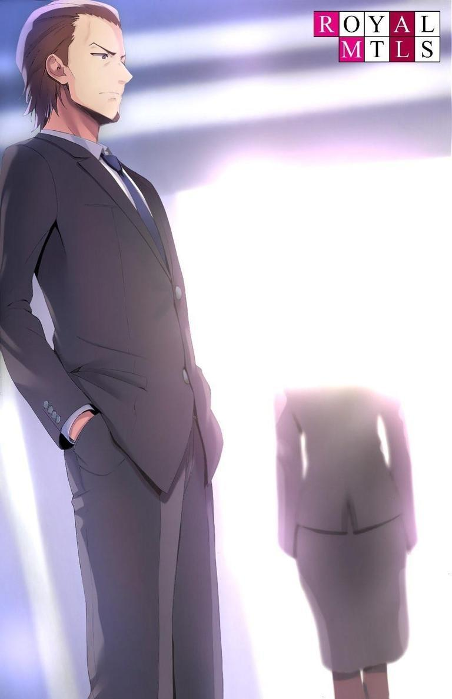
―Hmm, sí, en efecto.
―Pero hiciste un buen trabajo conteniéndote. Debo elogiarte por mantener al mínimo tus encuentros secretos con él durante nuestra vida de casados, y por ser tan cuidadosa de que el anfitrión nunca se enterara.
Aunque no sé si el anfitrión realmente quiere hacer feliz a Mika.
Como mínimo, la fortuna de Mika, incluidos los 50 millones, debería superar los 200 millones.
En cinco o diez años, hasta que se acabe el dinero, tiene garantizada una vida feliz con su anfitrión.
―Atsuomi... ¿Alguna vez pensaste que te gustaría?
―Harás cualquier cosa por ti y por dinero. Eso es lo que más aprecio de ti.
―Creo que no estás entendiendo... No, estoy segura de que esa es toda la respuesta.
Nunca he tenido sentimientos especiales por Mika.
Y al mismo tiempo, esta mujer tampoco siente nada por mí.
Todas estas palabras de simpatía son un acto para quedar bien.
A ella le gustan los hombres jóvenes, guapos y bien hablados que se valoran a sí mismos y a su dinero por encima de todo.
Esa es Mika.
―Adiós, Atsuomi.
―Espera. Este es mi regalo para ti.
Tres millones además de los honorarios que preparé originalmente.
Le di el dinero de consolación, un "regalo de despedida", a Mika.
―No tienes que ir tan lejos, no voy a vender esto a una revista semanal.
Yo también he hecho muchas cosas malas contigo.
Mika tiene muchas cosas que no quiere que salgan a la luz.
―Por supuesto. Por eso este es un regalo puro, abierto y honesto. No tienes que aceptarlo si no lo quieres.
Alargué la mano y retiré el dinero, pero Mika me detuvo con una carcajada.
―No hay razón para no tener el dinero para construir tu propia casa
―dijo―. Me han dicho que los terrenos son cada vez más caros hoy en día.
―No sabes las razones de fondo por las que suben los precios del suelo,
¿verdad?
―No lo sé. No me interesa. Sólo me interesa el dinero.
―Eso es propio de ti. Pasará un tiempo antes de que puedas casarte oficialmente con alguien.
―Eso es porque se supone que soy tu esposa en este país.
Es necesario que nos establezcamos públicamente como marido y mujer.
―No por mucho tiempo. Si puedes esperar dos años más, entonces puedes hacer lo que quieras.
Para ello, ya le di los papeles de divorcio llenos, sólo excluyendo las fechas para mí y Mika respectivamente.
―Una última cosa, si tienes un nombre elegido, lo registraré con ese nombre.
Ya han pasado once días desde el nacimiento del niño, y a menos que se tomen medidas adicionales, sólo quedan tres días.
―Ni siquiera tengo derechos sobre el niño, ¿pero me dejas decidir a mí?
―Un nombre es sólo un símbolo. No importa quién le ponga nombre al niño, lo que hay dentro de un ser humano es lo mismo.
Tras una breve pausa, Mika pronunció el nombre del niño.
―Entonces Kiyotaka.
―Muy buena sugerencia, así eres tú.
Me sorprendió un poco este giro inesperado de los acontecimientos.
―Sólo pensé que éste sería el nombre que recordarías ―dijo ella.
―Me parece bien. Lo aceptaré.
―Realmente eres una persona muy tranquila y sensata, ¿verdad? Sería normal que la gente perdiera los estribos en esta situación. Nombrar a un anfitrión del que estoy enamorada... Eso es una locura.
Mika comenzó a alejarse. Esta vez no se detuvo.
―Adios Atsuomi, mi tiempo contigo ha sido una valiosa experiencia para mí. Para bien o para mal.
Después de que Mika se fuera, escribí "Kiyotaka" en la lista.
Con tanto dinero en el bolsillo, no debería tener ni una sola queja.
Entregué a mi hijo como representante de la Habitación Blanca.
Si puedo hacer un historial, puedo decir que el dinero fue un pequeño precio a pagar.
Mientras Kiyotaka sea útil durante al menos 5 años, no importa si se quiebra después.
No hace falta que el hijo de uno sea excelente.
―Era una señora bastante agradable, Ayanokouji-san.
Tsukishiro, que esperaba en la habitación contigua, se mostró con una sonrisa como de costumbre.
―Tú también lo pasaste mal, ¿verdad? Te he hecho jugar a los detectives.
―Soy un comodín, ya lo sabes. ¿Pero estás seguro de que puedes confiar en ella? Podrías considerar deshacerte de ella si es necesario. Puede que se quede callada mientras tenga dinero, pero por su aspecto, se le acabará en unos años. O, ¿podría huir con la gran suma de dinero?
Sí, con la gente nunca se sabe.
En el futuro, cuando ella pierda el dinero, Mika puede aparecer frente a mí otra vez.
Pero espero que sea lo suficientemente lista para no hacerlo.
Por muy sucia y despreciable que sea tu alma, no es agradable morir por nada.
―Siempre es una buena idea hacer el primer movimiento, pero depende.
La desaparición de Mika crea otros riesgos. Por ahora, necesitamos que sea madre.
Está claro que no estoy apegado al niño debido a las circunstancias. Si esto es revelado por la persona que fue mi esposa, mi credibilidad en el mundo de los negocios se perderá de golpe.
―Tienes razón. Es como dices.
―En unos días, el niño estará en mis manos una vez terminadas las pruebas y comenzará los experimentos como alumno de cuarta generación.
―Parece que a tu hijo le espera una vida dura, como a ti.
Esas palabras suenan a lástima, pero Tsukishiro no tiene esos sentimientos.
PARTE 4.1
El día que llegó Kiyotaka, reuní a Suzukake y a los demás investigadores.
―Ayanokouji-sensei, este es el plan de estudios para los alumnos de cuarta generación que empezarán este año.
Tabuchi manejaba una computadora con ojeras.
Miré los materiales proyectados en la gran pantalla mientras él me los explicaba.
Cuando Suzukake fue elegido para dirigir a los alumnos de la segunda generación, creó un plan de estudios con 10 niveles de dificultad.
Esta vez, los alumnos de la cuarta generación tendrán un nivel de dificultad 4.
―La tasa de abandono de los de cinco años, los de primera generación, es del 14%; la de los de segunda, los de dos, es del 6%; y la de los de tercera, los de uno, es actualmente del 6%. Se prevé que más del 20% de los niños de segunda generación abandonarán los estudios antes de los 5 años, y más del 25% de los niños de tercera generación lo harán en el futuro. Hemos ido subiendo el nivel de dificultad por etapas, pero vamos a dar un paso más para la cuarta generación.
Cuanto mayor sea el nivel de dificultad exigido a los niños, naturalmente más estricta será la línea de aprobados. En concreto, el plan de estudios de Suzukake está estructurado de tal forma que el nivel de dificultad aumenta drásticamente una vez que los niños alcanzan los seis años, cuando sus bases se han solidificado.
No sería de extrañar que la tasa de abandono escolar de la primera generación también aumentara rápidamente en el futuro.
―De hecho, ¿cuánto cambiará si se sigue aumentando el nivel de dificultad?
―Sólo tenemos tres referencias de datos, pero aunque comparemos las capacidades de la primera y la tercera generación a la misma edad, los alumnos de menor rendimiento aumentaron un 11% y los de mayor rendimiento un 37%, respectivamente. Esto demuestra que el método educativo propuesto por Suzukake está relacionado con la mejora de las capacidades humanas.
Hasta ahora, la investigación parece ir bien.
Si seguimos educando a nuestros alumnos de la forma correcta, con el tiempo seremos capaces de producir niños incomparables con la primera generación.
Sin embargo, tardaremos muchos años en conseguirlo.
―También se han producido algunos cambios significativos. Como ejemplo típico, analizamos las secuelas del abandono escolar y descubrimos que hay algunos problemas. Uno es la bajísima capacidad de adaptación a la sociedad. La razón ya está clara: se debe al hecho de que han vivido el 99% del
tiempo sólo en la Habitación Blanca. En concreto, los estudiantes de primera generación sólo entendían el mundo exterior a través de las representaciones fragmentadas de los materiales y las imágenes. Les sería imposible imaginar y dibujar paisajes urbanos en su mente. Las generaciones segunda y tercera mostraron cierta mejoría cuando empezaron a aprender mediante el uso de imágenes, pero carecían de los conocimientos cotidianos que deben tener los niños japoneses. Las máquinas expendedoras, las calles, los centros comerciales, las tiendas y los supermercados de la ciudad y su falta de reconocimiento a través de la experiencia práctica causaron una gran incomodidad a los extraños. Pueden recordarlos con palabras y letras, pero sin experiencia real, es imposible una respuesta natural.
―¿Y? ¿Cuál es la solución?
―Sería más fácil si pudiéramos sacarlos de la Habitación Blanca, o para decirlo más sencillamente, tener algún tipo de actividad extracurricular, pero por supuesto, eso no va a suceder. Cuanta más gente tengamos fuera de la Habitación Blanca, más corremos el riesgo de que el público conozca las instalaciones, y el impacto que eso tiene en los niños pequeños es inconmensurable.
Ishida continuó su explicación y sacó un par de grandes gafas.
―Ahí es donde entra en juego la consola virtual. Usando la RV, los niños podrán viajar, aprender y memorizar en cualquier lugar, en casa o en el extranjero.
Souya siguió en concordancia.
―La idea de Ishida-san no es mala. Es genial que puedan comprender virtualmente el sentido común mínimo que deben aprender. Aunque sea en un espacio virtual, se puede imprimir como experiencia al pasear por un mundo perfectamente reproducido. La estructura es la misma cuando salimos al mundo exterior, así que creo que nuestra capacidad de adaptación será mucho mejor que antes.
Es un pequeño precio a pagar por unas instalaciones en las que no hay que salir al exterior.
Estuve de acuerdo y aprobé el presupuesto adicional.
―El contenido del plan de estudios parece estar bien.
Tabuchi asintió satisfecho, e Ishida y Souya se levantaron también.
―No me importa si usamos la consola virtual. Pueden intentar lo que quieran. Pero me gustaría tener un plan de estudios diferente para esta cuarta generación.
―¿'Diferente', señor? ¿Qué cambios quieres que haga?
Miré a Suzukake, que había estado sentado en silencio.
―Vamos a adoptar el plan de estudios Beta.
Le dije, y los investigadores se tensaron.
―...¿Eh? ¿Qué... acabas de decir?
Suzukake fue probablemente el más sorprendido de todos.
―Dije que vamos a adoptar el plan de estudios Beta. No me hagas repetirlo.
Suzukake creó un plan de estudios con 10 niveles de dificultad.
En comparación con los estudiantes de tercera generación, es natural que el plan de estudios sea más riguroso y exhaustivo al nacer, pero el nivel de dificultad aumenta significativamente después de los seis años, cuando se están construyendo los cimientos. Incluso yo, que no sé mucho de educación, juzgué que el plan de estudios Beta era inviable a la luz de las limitaciones de los niños de la primera generación y descarté el plan de estudios Beta.
―Ya les expliqué en su momento que creamos un plan de estudios con 10
niveles de dificultad, pero que el Beta era una dimensión diferente que nunca se alcanzaría. En efecto, considerábamos que el quinto o sexto nivel era el límite del desarrollo humano.
―Estoy seguro de ello. Es imposible siquiera comparar los currículos de segunda y tercera generación con el currículo Beta. El currículo actual hasta la
tercera generación no es fácil de seguir, y los resultados no son nada destacables. En una situación así, sacar el plan de estudios Beta sólo logrará destruir el material de muestra...
―Sé que en investigación es necesario aumentar la dificultad poco a poco.
Pero lleva tiempo subir las escaleras peldaño a peldaño. Me gustaría ver los límites humanos esta vez en la Habitación Blanca. No me importa si todos se retiran.
―De todas las veces... ¿con tu hijo aquí?
―Mi hijo es el que recibirá la educación más rigurosa. Esta es una gran oportunidad. Si podemos crear aunque sea un éxito en el plan de estudios Beta, dará lugar a futuras investigaciones.
―...¿Pero qué tipo de críticas recibiré de nuestros partidarios?
―Por eso dije que adoptaría el plan de estudios Beta para la generación de mi hijo. Es por el bien de la investigación. Siéntete libre de decírmelo, y no me importa si muere.
Todos, incluidos Ishida y los demás, se quedaron atónitos y sin habla.
―De verdad... ¿Estás seguro de que quieres hacerlo?
Como investigador, Ishida podía ser excéntrico, pero no se había apartado del camino de la humanidad.
Por eso se mostró tan agresivo conmigo, pero debió darse cuenta de que era mi decisión.
―Sí. A los próximos alumnos de quinta generación se les asignará el plan de estudios de nivel cuatro que se suponía que se asignaría a los alumnos de cuarta generación. La cuarta generación es la única excepción. No podemos implementar fácilmente un plan de estudios inhumano cuando no hay futuro a la vista.
No sería demasiado tarde para cambiar el plan de estudios cuando se conozcan los resultados de la cuarta generación.
―Preparé una muestra razonable de niños para esta única sesión.
Les enseño la lista de los niños que formarán parte de la cuarta generación, que había mantenido en secreto hasta ese momento.
―¡Son 74 en total! Es más del doble de niños que en la tercera generación.
―Casi todos ellos fueron recogidos de los 'desposeídos' para que puedan ser usados y desechados.
El grupo Ohba y los intermediarios del mercado negro relacionados con ellos no son baratos, pero una muestra grande siempre es mejor que una pequeña.
Espero que esta gente haya entendido lo serio que hablo. En realidad, sin embargo, sólo unos pocos de los "desposeídos" son hijos de empresarios.
Deben estar soñando con un gran crecimiento en un entorno duro. Aceptaron la oferta sin ninguna responsabilidad. Sin embargo, no diré a los investigadores cuáles de los niños pertenecen a familias de empresarios. No quiero que eso se involucre de ninguna manera.
Suzukake, que había estado escuchando en silencio, se acercó a Ishida y a los demás que se resistían a unirse a la reunión.
―Yo mismo he llegado a comprender muchas cosas desde que empecé a trabajar con Ishida-san y los demás. Hay ciertas líneas que uno no debe cruzar como ser humano, hasta el punto de que me arrepiento de haber creado el plan de estudios Beta. Sólo puedo ver los resultados del colapso, pero aun así, mientras Ayanokouji-sensei insista en hacerlo, estamos obligados a llevarlo a cabo.
―¡Pero...!
―Como dijo Ayanokouji-sensei, este es un caso especial. También es una gran oportunidad para rechazar el temerario plan de estudios que yo mismo he creado.
Suzukake ha crecido mucho en los últimos años mientras continúa siendo un líder.
Chocan constantemente entre ellos por el contenido de sus investigaciones, pero al final, Ishida y los demás asienten con la cabeza, reconociendo el entusiasmo y la determinación de Suzukake.
―Es mi responsabilidad ser el único con el corazón roto, y me implicaré a fondo en la educación de los estudiantes de la cuarta generación.
Como representante de la Habitación Blanca, yo mismo debería estar allí para presenciar los resultados.
―...Entiendo lo que dices. Por supuesto, seguiré tus instrucciones. Pero primero, ¿puedo hacer una sugerencia sobre cómo lidiar con los desertores?
―¿Qué quieres decir?
―Para ser claros, las habilidades de los niños desertores superan con creces las de la gente común. Yo diría que es un buen logro. Es demasiado bueno para tirarlo a la basura...
―¿A qué nivel de éxito te refieres? ¿Crees que nuestro objetivo es entrar en una universidad superior o ganar alguna competición al azar?
―No, eso no es...
―Eso está bien en la superficie. Pero el verdadero objetivo es completamente diferente. Proteger este país del mundo, hacer este país fuerte y crear gente que tenga el poder de gobernarlo.
No hay forma de crear meros estudiantes de honor que puedan tener éxito cuando se les envía a la política.
Lo que se necesita es la capacidad de superar a los demás.
Una persona con una férrea e inquebrantable voluntad de acero.
Sólo aquellos descritos por otros como monstruos pueden abrirse paso en este corrupto mundo político actual.
―Los desertores conocidos son cuidadosamente atendidos y devueltos a sus padres. Mientras tengan habilidades extraordinarias, estarán algo satisfechos.
―...¿Y qué pasa con los niños sin nombre?
―Según lo planeado, se les envía a las instalaciones que hemos creado y se les deja en libertad. Por supuesto, se les entrenará para que no hablen de la Habitación Blanca.
―Sin embargo, les será muy difícil independizarse e integrarse en la sociedad.
―¿Y qué? Nosotros los educamos. Puede que tengan problemas, pero siguen siendo mejores que sus compañeros. Tienen todas las posibilidades de superarlos. ¿Tienes algún problema con eso?
Tabuchi es el único investigador que cree firmemente en la idea general, y es el único que se resiste a ella.
Por eso tenemos que hacerle una advertencia firme.
―Cállate y sigue mis órdenes. Si alguien desobedece mis órdenes, le cortaré el paso sin piedad, aunque seas tú. ¿Está claro?
―Sí, señor. Disculpe, señor.
Sonó un celular. Era Sakayanagi.
―Voy a estar fuera de la oficina un rato... Continuaremos nuestra discusión, incluyendo cómo abordar el plan de estudios Beta.
Salí al pasillo y contesté el teléfono mientras la puerta se cerraba tras de mí.
―Ayanokouji-sensei...
―¿Qué pasa, Sakayanagi? Parece muy sombrío.
―No quería ponerme en contacto con usted así, pero me he enterado de que nació su hijo.
―Siento no haber estado en contacto. Las cosas han estado un poco agitadas.
―... ¿Está seguro de que está bien con esto? ¿Su hijo tan esperado?
―Esto es lo que tenía en mente cuando decidí crear la Habitación Blanca.
No creo que un hombre que educa a bebés abandonados pueda tener una familia como es debido.
―Pero eso es un poco exagerado, ¿no? Los bebés de la institución proceden de entornos desafortunados, ya que fueron abandonados. Están bastante contentos de poder crecer en la Habitación Blanca sin problemas. Pero su hijo es diferente. Merece el amor de su padre y de su madre.
―Ya tomé mi decisión.
Al otro lado de la línea, Sakayanagi jadeó.
―Siento hacer esto por teléfono, pero tengo que pedirle una cosa.
―¿Una propuesta...?
―Pronto va a tener un hijo. Estoy listo para aceptar a su hijo si lo necesita.
―No soy tan fuerte como usted. No puedo ser tan fuerte como usted. Por el bien de nuestro hijo no nacido, mi mujer y yo lo criaremos con todo el amor que podamos reunir.
―Ya veo. Sabía que diría eso.
Si es Sakayanagi, se criará un niño excelente con una educación legítima.
¿Será ése uno de los logros que personalmente espero?
HISTORIAS DE NIÑOS INOCENTES
EL COLOR. El color que se extendía por mi campo de visión.
Lo primero que recuerdo es igualmente blanco.
Como su nombre indica, la Habitación Blanca es una instalación basada en el color blanco.
El techo no es una excepción.
En mi primer recuerdo estaba mirando fijamente ese techo blanco.
Antes de mostrar ningún interés en mirar fijamente o jugar con las yemas de los dedos, simplemente me preguntaba qué era ese techo blanco.
Día tras día, pasaba más y más tiempo mirando el techo.
Al principio, lloré. Lloré porque extrañaba a la gente, y luego supe que nadie iba a venir a ayudarme.
Ahora que lo recuerdo, fue instinto, no lógica.
Es lo primero que aprende un recién nacido, que ni siquiera sabe hablar, cuando acepta su entorno.
Después me di cuenta de la existencia de mis dedos.
Me pasaba todo el día mirando, chupando y lamiendo mis deditos en el vacío, y nada más.
El alimento necesario para la vida nos lo traían los fríos adultos.
Esto no es diferente en caso de enfermedad.
El tratamiento se llevaba a cabo sin vacilar, y la vida cotidiana volvía como si nada hubiera pasado.
Nadie entró en pánico, nadie se preocupó, nadie se alegró.
Con el tiempo, aprendes. Te das cuenta de que aquí te cuidan con esmero.
Los seres humanos tienen sentimientos de alegría, ira, pena y placer.
Pero ninguno de ellos sirve de mucho en esta instalación.
Los niños, con sus cerebros aún sin desarrollar, lo aprendieron pronto.
No es de extrañar. Tanto si te ríes como si lloras, te enfadas o te entristeces, los instructores no estaban allí para ayudarte.
La única vez que podía avanzar era cuando conseguía algo.
La primera vez que recuerdo que reconocí la comunicación como un lenguaje fue cuando tenía dos años.
El instructor estaba sentado frente a mí y yo frente a él.
No había nada en medio: el instructor me tendía las dos manos abiertas.
Poco después, el instructor colocó un pequeño osito de gominola en su mano derecha de forma muy llamativa.
Para los niños que vivían en este centro, este tentempié era una rareza.
La dulzura de la que normalmente carecían. De niño, yo no era una excepción; recuerdo tener los mismos antojos que cualquier otro.
―Adivina dónde está la gominola y podrás comértela.
El adulto que sostenía una gominola en la mano derecha me la tendió.
Su expresión era severa y casi inexpresiva.
Por otro lado, el niño que estaba frente a él -yo, Ayanokouji Kiyotaka- también carecía de emoción.
Ambos teníamos el mismo rostro inexpresivo, pero yo estaba en un estado natural mientras que el instructor intentaba conscientemente guardar silencio.
Y los otros niños también carecían de emociones de forma natural.
Pude percibir que los otros niños eran muy conscientes de que las emociones pueden ser un obstáculo. Había uno contra uno entre adultos que ocultaban sus emociones y niños que las tenían mínimas.
―Te daré una oportunidad hasta que falles tres veces.
Murmuró para sí el instructor delante de mí.
―...
Sigo sin entender el lenguaje de los adultos, el significado de cada sílaba de esas palabras.
Fallar, oportunidad... Ninguna de estas palabras puede ser entendida realmente por un niño de dos años.
Sin embargo, pueden sentir instintivamente a qué se apela.
Yo podía sentir lo que se me pedía.
Toqué su mano derecha, tal como había visto.
Sin dudarlo, el instructor abrió su mano derecha y me dio un pequeño osito de gominola.
Al mismo tiempo, otros niños intentaban adivinar dónde estaba la gominola.
Todos los instructores agarraron la gominola con la mano derecha y todos respondieron correctamente.
―¡Siguiente!
Esta vez, sostuvo la gominola en la mano derecha, pero inmediatamente después volvió a ponerla en la mano izquierda y me la ofreció.
Por supuesto, toqué la mano izquierda sin dudarlo. Otra respuesta correcta.
Este sencillo proceso se repitió dos veces más, obteniendo un total de cuatro gominolas.
Aunque no eran muy dulces, constituían un valioso tentempié en esta Habitación Blanca y eran bien recibidas por los niños. Recuerdo que yo, sin excepción, disfrutaba del sabor de estas gominolas.
―Siguiente.
Quinta vez. Esta vez, el instructor cruzó los brazos a la espalda, agarró un osito de gominola y me lo tendió.
La fuerza de su agarre y la posición de cada mano eran casi iguales.
La expresión del instructor no cambió, ni tampoco su mirada.
En este caso, no había forma de juzgar objetivamente cuál de las manos del instructor agarraba la gominola.
La probabilidad era de 50/50 en cualquiera de los dos casos.
En ese caso, la eficiencia del tiempo era la prioridad.
Toqué al azar la mano derecha; estaba vacía. Los demás niños se dividieron en dos grupos, y aunque la proporción de niños que eligieron la mano derecha fue un poco mayor que la izquierda, no había una razón clara para ello. Sin embargo, como era de esperar, todos los instructores sostenían el osito de gominola en la mano izquierda.
―Siguiente.
El instructor volvió a esconder la mano detrás de la espalda, la apretó y luego extendió los brazos.
Me pregunté si seguiría haciéndonos adivinar el 50/50.
No tenía sentido elegir ninguna de las dos, pero me atreví a elegir la izquierda.
No-.
Tras pensarlo un instante, decidí no responder inmediatamente y observar lo que había a mi alrededor.
Los niños estaban tan concentrados en el instructor y en las gominolas que tenían delante que no prestaron atención a lo que les rodeaba.
Esta vez, la mayoría de los niños señalaron la mano izquierda, pero la respuesta correcta fue la mano derecha.
Entonces, el instructor que tenía delante seguramente sostenía la gominola en la mano derecha.
Señalé su mano derecha y, tras una breve pausa, se abrió para revelar un osito de gominola verde.
―Siguiente.
No te elogiaban por adivinarlo correctamente, pero al menos te permitían comerte la gominola.
Pasé la gominola por la punta de la lengua y volví a concentrarme. El instructor volvió a agarrar la gominola por la espalda.
Extendió cada una de sus manos al mismo tiempo.
Por supuesto, esta vez observé mi entorno de la misma manera...
Cuando todos los niños terminaron de señalar, no había señal de que los instructores abrieran las manos.
―Tú eres el último.
Esto significaba que no abrirían las manos hasta que todos los niños hubieran dado sus respuestas.
Como no había ningún indicio, seguí señalando su mano derecha.
Todos a la vez, los instructores abrieron la palma de la mano indicada.
Sin embargo, todos erraron. Tanto los niños que señalaron su mano derecha como los que señalaron su mano izquierda lo hicieron mal.
En este punto, muchos niños fallaron tres veces y no tendrían otra oportunidad.
Sólo me quedaba a mí una oportunidad.
―Siguiente.
Al igual que en las dos ocasiones anteriores, la gominola estaba agarrada a la espalda del instructor. No había forma de saber en qué mano estaba desde fuera y no había señales de que las manos se abrieran después de que los pocos niños que quedaban terminaran de jugar.
En este caso, daba igual utilizar la mano derecha o la izquierda.
Me pregunté si esto era realmente cierto.
...O...
Una última oportunidad.
Si no se sostenía con ninguna de las dos manos, entonces...
El instructor no dijo en qué mano estaba la gominola.
Sólo nos pidió que señaláramos dónde estaba la gominola.
Así que era posible que estuvieran escondidos en otro lugar que no fuera la mano izquierda o la derecha.
Dejé que ese pensamiento infantil pasara por mi mente y señalé hacia atrás sin tocar ninguna de las dos manos.
―...
No contestó y se quedó mirando mis movimientos.
―¿Por qué señalas hacia atrás?
―Goma, mano, no.
Respondí de una forma que demostraba que aún no controlaba perfectamente el idioma.
Sin decir una palabra, el instructor abrió las dos manos al mismo tiempo.
Entonces, encontré un pequeño osito de gominola en su mano derecha.
―Qué lástima. La mano derecha es la correcta.
A continuación, el instructor se metió la pequeña gominola en la boca.
Uno de los dos niños restantes respondió correctamente a la pregunta de la mano derecha y recibió una gominola.
―Te daré una oportunidad más, sólo por el gusto de hacerlo.
Sacó un osito de gominola y lo sujetó con las manos a la espalda, como si fuera a repetir el proceso, y sacó los brazos.
Pensé que tenía las manos vacías al esconderlas detrás de la espalda, pero en realidad las tenía en la mano derecha. Entonces, ¿simplemente me perdí el 50/50, y nunca estuvo escondido desde el principio de este juego?
¿O, después de esconderlo dos veces, lo sostuvo en su mano derecha, anticipando que lo leeríamos de esa manera? La posibilidad de que ambas manos estuvieran vacías es más probable que la posibilidad de que sostuvieran algo. El otro niño que quedaba señaló la mano izquierda del instructor.
¿Qué es lo correcto...?
¿Era la mano derecha, la izquierda, o estaba escondida detrás?
―Detrás.
Después de pensarlo, me la jugué. Rechacé las manos derecha e izquierda, juzgando que ambas estaban vacías.
El instructor abrió las manos. En su mano izquierda había un pequeño osito de gominola.
―Lástima. Otro fallo. ¿Estás decepcionado?
Es verdad, estaba decepcionado.
Asentí ligeramente.
No era porque quisiera ositos de gominola.
Era más bien frustración por haberme equivocado.
―Supongo que este chico es diferente.
Los adultos se reunieron alrededor y susurraron entre ellos.
Mi mente de dos años no podía comprender el significado de las palabras complicadas, así que sólo las recuerdo como una lista de palabras.
―Todos los niños, a excepción de Kiyotaka, intentaban sinceramente adivinarlo todo entre izquierda o derecha. Pero él observaba las opciones de los que lo rodeaban y era claramente consciente de la posibilidad de una tercera opción, que era la de que la gominola estuviera escondida a nuestras espaldas.
Es más, incluso después de demostrar que no estaba escondida a mis espaldas, no abandonó la posibilidad. Esto no es el pensamiento de un niño de dos años.
―Le estás dando demasiadas vueltas a esto, ¿verdad?
―Pero en todas las pruebas que he hecho, éste es claramente el único niño que piensa diferente; es el único que tiene un punto de vista distinto.
En medio de estos pensamientos incomprensibles, las palabras de los instructores quedaron grabadas en mi memoria.
Pensé que, en el futuro, podría sacar alguna pista de esta conversación.
Cuando fuera mayor, podría abrir los cajones de mis recuerdos.
―...La forma en que me mira es espeluznante. Me pregunto si siquiera entiende de lo que estamos hablando.
―De ninguna manera... Tiene dos años. Es imposible que entienda más que lo mínimo de lo que estamos diciendo.
―Es verdad, pero...
Sonó un timbre que anunciaba el final de la prueba.
Los adultos se miraron, ordenaron a los niños que se mantuvieran a la espera y se marcharon.
Ante este escenario familiar, los niños los despidieron sin que ninguno llorara.
Cualquier temor a quedarnos solos desapareció hace tiempo.
No había ayuda para nosotros.
Esto fue algo que aprendimos dentro de nuestros huesos a la edad de dos años.
PARTE 5.1
Otro fragmento de memoria que desenterrar.
En el proceso de borrar recuerdos innecesarios, hay cosas que vienen a la mente.
―Siéntate y di tu nombre.
Di tu nombre-.
El cerebro recibió la instrucción, y rápidamente transmitió la señal a la garganta.
―Kiyotaka.
Era un símbolo. Una secuencia de letras.
Un elemento importante para distinguir a los humanos.
A todos los estudiantes de la Habitación Blanca nos enseñaron nombres como una de las formas de identificar a los individuos. Sin embargo, cuando éramos jóvenes, no nos decían nuestros apellidos, y todos los instructores nos llamaban por nuestros nombres de pila.
Aunque en aquel momento no tenía forma de saberlo, se creaba un inconveniente al enseñarnos nuestros apellidos. Parece ser que era una norma basada en el temor de que pudiera llevar a la identificación de los niños en el futuro.
Cuando los niños tenían cuatro años, empezaba a implantarse un nuevo plan de estudios, uno tras otro.
―Ahora bien, comencemos la prueba.
La más importante era una prueba escrita.
Todos los alumnos enderezaron la postura y se enfrentaron a las hojas de examen.
La prueba consistía en cinco sistemas de escritura: hiragana, katakana, el alfabeto*, números y kanji simple. (TL Nota: alfabeto アルファベット : Se refiere al alfabeto latín)
Como ya habíamos pasado un año entero aprendiendo a leer y escribir a los tres años, no había ninguna vacilación en los movimientos de las yemas de los dedos al sujetar el bolígrafo.
Los alumnos eran penalizados si no alcanzaban un determinado nivel de rendimiento en un tiempo limitado.
Además, los alumnos debían tener buena letra.
Aunque tu letra fuera buena, no recibirías ningún punto si te equivocabas en la respuesta, pero si escribías mal con prisas, te restaban puntos, así que debíamos tener cuidado. Nadie en este centro nos preguntó si podíamos resolver los problemas a los que nos enfrentamos.
Esto sólo es cierto porque los únicos niños que quedaban eran los que eran capaces de resolverlos…
Los que no pudieron fueron abandonados a los tres años.
Nuestro grupo, llamado la cuarta generación, tenía un total de 74 alumnos en los primeros años.
Sin embargo, como ya se mencionó, los que se consideraban incapaces a los tres años ya habían abandonado la Habitación Blanca.
Por lo tanto, los 61 compartíamos entonces casi todo el tiempo juntos, excluida la hora de acostarse.
La prueba escrita duraba 30 minutos, pero había tiempo suficiente para completarla en aproximadamente la mitad o dos tercios del tiempo límite si resolvíamos las preguntas sin vacilar.
Esto fue así en todos los exámenes escritos anteriores celebrados en la Habitación Blanca.
Resolver la ecuación y pasar a la siguiente. Determina la respuesta y anótala.
Al mismo tiempo, repasa la pregunta anterior para ver si cometiste algún error.
Cuando terminé, levanté la mano derecha hacia arriba.
Tras indicar que había terminado, di la vuelta al papel.
Obtener una puntuación perfecta en el examen escrito era el requisito mínimo.
Al mismo tiempo, se te exigía que escribieras con pulcritud y rapidez.
Este era el séptimo examen escrito desde que cumplí cuatro años, y he obtenido el primer puesto cuatro veces seguidas. La primera vez que hice el examen escrito, quedé en el puesto 24, la segunda en el 15 y la tercera en el 7. No tuve un buen comienzo.
Tardé un tiempo en entender cómo funcionaban los exámenes escritos, su lógica y su eficacia.
Una vez que lo supe resolver, no me han superado, y yo mismo he ido mejorando mi seguridad aún más.
La diferencia entre el segundo clasificado y yo se iba ampliando con cada examen escrito, y ahora la diferencia era de unos cinco minutos.
Independientemente de si obtenía una puntuación perfecta o el primer puesto, nadie me alababa.
Cuando todos terminaron, pasamos a la siguiente parte del plan de estudios.
―Ahora empezaremos Judo. Todos por favor cámbiense y sigan al instructor a otra sala.
Artes marciales. Este fue otro plan de estudios añadido cuando cumplimos cuatro años, al igual que el examen escrito.
Ya me habían enseñado judo durante cuatro meses.
Mientras nos entrenaban en lo básico, progresamos a la etapa donde teníamos que pelear en combate real.
―¡Haa!
Mi visión tembló y sentí un fuerte dolor en la espalda.
En el enfrentamiento con el instructor, a los niños siempre se les hacía probar esta amargura.
Yo no era una excepción.
―¡Levántate!
El implacable golpe contra el suelo, que te impedía respirar, no te permitía descansar.
Si no me levantaba inmediatamente, me reprendían una y otra vez.
A continuación, unos brazos mucho más gruesos que los míos se abalanzaron sobre mí.
Volví a caer al suelo de golpe y traté desesperadamente de agarrarme, pero no pude absorber el daño.
Mientras me tiraban al suelo, por todas partes ocurrían hechos similares.
Todos los niños lloraban y sollozaban mientras los golpeaban.
―¡No puedo... no puedo levantarme...!
Como pidiendo perdón, Mikuru se aferró débilmente a la pierna del instructor.
―¡Aún así, levántate!
La chica se vio obligada a levantarse mientras el instructor se sacudía sus manos a la fuerza, pero su cuerpo parecía inmovilizado.
El hecho de que es una chica no se tenía en cuenta aquí.
―¡Te dije que te levantaras!
La niña fue pateada, dio vueltas y vueltas en el suelo, y roció vómito por todas partes.
Por supuesto, los adultos no estaban pateando en serio.
Sin embargo, era obvio para todos que la fuerza de la patada fue increíblemente fuerte.
―¡Me importa un carajo, aunque seas una niña! ¡Ya lo sabes!
La mente promedio tendría una fuerte resistencia a lastimar tanto a un niño.
Pero los instructores que fueron llamados a la Habitación Blanca no son ordinarios.
Son la clase de gente que no tiene reparos en enviar a mujeres y niños al borde de la muerte.
―¡Nadie llorará si desapareces! Levántate y enfréntate a ellos tú sola.
Mikuru, convulsa y desconcentrada, apoyó las manos en el suelo e intentó levantarse.
―¡Sí! ¡Eso es! ¡Muestra algo de espíritu!
―¡Uh, uuh... Ugh... gh...!
Pero la patada anterior que recibió Mikuru fue crítica, y se desplomó y perdió el conocimiento.
―¡Maldita sea! ¡Maldita cobarde! ¡Sácala de aquí! ¡Fuera de mi camino!
El instructor, que había estado dando pasos irritantes, gritó enfadado mientras sacaba a Mikuru de la habitación a la fuerza.
¿Crees que una escena así es trágica?
Si es así, deberías cambiar tu forma de pensar.
Esto es sólo el principio. Las reacciones excesivas como las de Mikuru iban disminuyendo día a día, e incluso la expresión de dolor se iba desvaneciendo.
Incluso los instintos humanos eran eliminados por el cerebro como funciones superfluas.
Era natural ser derribado. Era natural tener dificultades para respirar. Era natural hacerse daño hasta el punto de sollozar. E incluso pensar en ello era un desperdicio.
La única forma de salir de la situación era seguir intentando reducir el número de veces que te lanzan dentro del límite de tiempo.
Por supuesto, la situación más idónea era derrotar al oponente.
Pero el oponente era muy superior en fuerza, tamaño y habilidad.
Ni que decir tiene que no era fácil salvar la distancia entre adultos y niños.
Tras verse obligados a luchar intensamente y sin aliento, todos se levantaron maltrechos y magullados.
Tras una intensa educación por parte de nuestros instructores, al final del día nos vimos obligados a participar en un combate cuerpo a cuerpo con otros tres.
Los niños nunca parecen cansados.
Aprendí que cualquier presa que pareciera débil estaba condenada a ser cazada por los fuertes.
Mi récord era de 144 peleas, 127 victorias y 17 derrotas. Y yo estaba actualmente en una racha ganadora de 64 peleas.
Los combates se rotaban entre oponentes masculinos y femeninos, pero Shiro estaba frente a mí, esperando en silencio la señal para empezar.
Shiro tenía un récord abrumadoramente bueno de 135 victorias y 9 derrotas.
He luchado contra Shiro dos veces, ganando una y perdiendo otra.
Perdí mi primer combate Randori, pero no había perdido desde la primera rotación; (Nota del TL: randori 乱取り : Básicamente un combate de judo 1v3) Sin embargo, entre los otros estudiantes, Shiro tenía las mejores habilidades de judo.
Como era un oponente formidable, podía agudizar todavía más su sensibilidad.
Shiro siempre había sido agresivo y había tomado la iniciativa en sus combates contra los demás, pero hoy, en su tercer combate, parecía estar adoptando una actitud de espera, con el objetivo de crear contraataques.
Esto fue algo que agradecí, ya que quería ganar experiencia atacando a un oponente fuerte.
―¡Comiencen!
Al anuncio del instructor, luchamos unos contra otros hasta el amargo final con la derrota a cuestas.
Ganásemos o perdiésemos, pasábamos a la siguiente lección como si nada.
El kárate es un arte marcial que comenzó algo más tarde.
Aquí, los alumnos recibían golpes más directos de los instructores que en el judo.
Es probable que la variedad de artes marciales vuelva a aumentar al llegar a los cinco o seis años.
Esa fue la inferencia común entre todos los niños.
PARTE 5.2
Cuando yo tenía cinco años, el número de niños se había reducido todavía más, hasta unos 50 en un momento dado.
Nadie se preocupaba. No había tiempo para preocuparse.
Aquí, lo único que quieren es nuestra capacidad.
No había final.
No, si había un final, estaba infinitamente lejos.
Una vez que te tambaleas, nunca serás capaz de recuperarte de nuevo.
¿Crees que esto es extraordinario?
Yo no lo creo. Esto era la vida cotidiana para mí.
Un día, cuando el número de personas del grupo ya había disminuido considerablemente, cenamos juntos.
La comida estaba servida con todos los presentes. Durante la comida, el instructor abandonó la mesa y los niños se quedaron solos. Sin embargo, nunca tuvimos una conversación directa.
Todo el tiempo, sólo he oído sus voces a través del instructor.
¿Por qué no hablamos entre nosotros?
No estaba prohibido por los instructores.
No teníamos conversaciones porque, en primer lugar, no había necesidad de hablar.
Conocíamos los nombres de los demás a través de los instructores, sabíamos lo bueno que era cada uno en sus estudios y sabíamos lo atlético que era cada uno de nosotros. Todas nuestras habilidades internas estaban al descubierto.
No había comida que gustara o disgustara.
La regla de comer sólo lo que se servía se aplicaba a todos los niños.
En otras palabras, no era necesario dialogar sobre las comidas.
No había sensación de compañerismo entre los alumnos.
La presencia de los demás, que ni ayuda ni estorba, no se diferencia en nada del paisaje que nos rodea.
―No me gusta...
Oí susurrar a una chica llamada Yuki, que siempre se sentaba delante de mí.
No era un comportamiento problemático, ya que no teníamos prohibido hablar durante la comida. Era sólo que nadie hablaba porque nadie sentía la necesidad de hacerlo.
Este fue el primer cambio en el precedente.
Pensé que dejaría de hablar porque nadie respondía, pero Yuki no lo hizo.
―¿Te gusta, Kiyotaka?
Me preguntó si me gustaban o no las zanahorias que tenía delante.
Responder o no responder.
Para empezar, nunca había pensado en el concepto de que me gustaran o no las zanahorias.
Sólo las consideraba como uno de los nutrientes que debemos consumir.
El principal nutriente de las zanahorias es el betacaroteno.
Tiene la capacidad de transformarse en vitamina A cuando entra en el organismo.
Es eficaz para prevenir el envejecimiento celular y mantener sanas la piel y las mucosas. También es muy importante para la inmunidad contra los virus.
―¿Te gustan las zanahorias?
―A mí tampoco me gustan.
La respuesta no fue mía, sino de Shiro, que estaba sentado a mi izquierda.
Yuki lo miró sorprendida.
Mientras me distraía con el diálogo entre ambos, comprobé la cámara de vigilancia.
Por supuesto, los instructores vigilaban nuestras comidas a diario. Era imposible que no hubieran captado el sonido. Como no hubo respuesta de los instructores, y no nos criticaron ni nada por el estilo, este tipo de conversación debe estar permitido.
Sin embargo, nunca nos han pedido que dialoguemos entre nosotros.
Mientras no hubiera ningún mérito en molestarse en entablar un diálogo, no había necesidad de seguir a los dos y responder.
Aun así... lo pensé un momento.
O te gustan las zanahorias o no te gustan.
...La respuesta era: No las odio.
Después de la comida, siempre me ha costado un poco. Nunca aprendí a matar el tiempo.
Simplemente sentarme y esperar era la opción más fácil y la única que tenía.
Sin embargo, Yuki no era así, y después de cenar, se paseaba sola por la habitación.
Pensé que era un derroche de energía caminar, pero guardé silencio y la observé.
Dio unas tres vueltas por la pequeña habitación cuando pasó justo por delante de mí.
―¡Wa...!
Yuki casi tropezó y cayó delante de mí.
Instantáneamente estiré mi brazo y evité que se cayera.
―Es extraño caerse en medio de la nada, ¿verdad?
Después de analizar la situación, Yuki abrió los ojos y puso cara de sorpresa.
―¿O es sólo cansancio? A mí no me lo parece.
No entendía por qué se había caído.
Y parecía que a Yuki le pasaba lo mismo.
―Sí. No estoy cansada, pero me caí. Raro, ¿verdad?
Cuando ella dijo esto, una mirada apareció en su cara que yo nunca había visto antes.
Era la primera expresión creada por sus músculos faciales, el músculo orbicular de los ojos y los arrugados músculos de las cejas.
Nunca había visto una expresión semejante en los rostros de los demás alumnos o de los adultos.
La niña pareció comprender mi asombro.
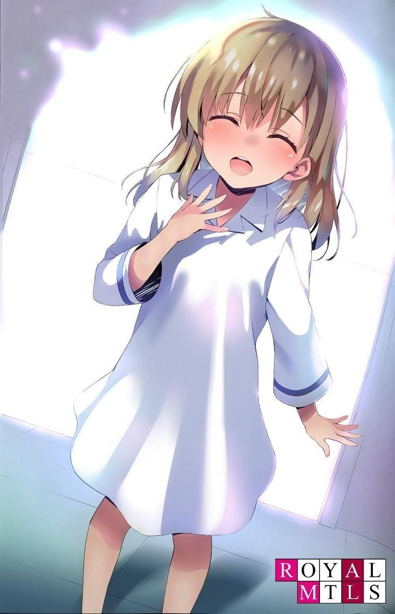
―Eso... Ahora mismo, yo...
Puedes ver la confusión y el desconcierto en su cara.
Puedo ver por qué.
Nunca aprendí eso. Nunca me enseñaron esa mirada.
Pero la conozco.
No tardé en darme cuenta de que era una sonrisa.
Era un instinto con el que nacemos, o quizá incluso antes de nacer.
Quizá por eso podía expresarla sin tener que aprenderla.
PARTE 5.3
A los niños de la Habitación Blanca no se les enseñan muchas de las reglas necesarias para sobrevivir en este mundo.
Sin embargo, había algunas normas estrictas.
Esto no cambió ni siquiera en la última mitad de nuestro quinto año.
7:00 AM.
―Es hora de levantarse.
El cronómetro sonó sin un segundo de retraso, acompañado de una voz indiferente que anunciaba la hora, y los niños de la pequeña habitación empezaron a despertarse.
Antes de levantarnos de la cama, un miembro del personal entraba en la habitación y nos quitaba los electrodos que llevábamos pegados al cuerpo.
Luego se levantaba e inmediatamente comprobaba nuestro estado de salud.
La ajetreada y mundana rutina diaria se desarrollaba ante nosotros.
Después de comprobar si había algún cambio en la estatura, el peso, etc., íbamos al baño a orinar.
Se tomaban muestras de orina una vez al mes y, al mismo tiempo, se extraía una pequeña cantidad de sangre.
Tras el examen, los miembros del personal abandonaban el edificio sin intercambiar saludos.
A continuación nos rehidrataban y calentaban con 30 minutos de entrenamiento básico.
Después de llevar registros físicos diarios, como mediciones de la fuerza de agarre, todo el mundo entraba en la sala de entrenamiento al mismo tiempo y completaba la cuota asignada a cada sexo. No había opción de qué pasaría si no se alcanzaba la cuota.
Las cuotas debían ser cumplidas por todos porque era un hecho que todos las cumplirían.
Los que no lo hicieran no podrían pisar esta sala a partir de mañana.
Para cuando se cumplieran estos pasos, serían las 8 de la mañana.
En aquella época, el desayuno estaba más orientado a la nutrición y era más eficaz que en mi primera infancia, con suplementos y alimentación bloqueada.
Comer bien o no comer bien.
Me gustara o no.
Era tan irrelevante como siempre.
Consumir los alimentos en el orden en que se servían.
Eso era todo.
Después de la comida, empezaba el plan de estudios del día.
Los campos de estudio eran diversos, desde japonés y matemáticas hasta economía y ciencias políticas. El programa del día se repetía hasta el mediodía, con pequeños descansos.
El almuerzo era igual que el desayuno, y el plan de estudios se reanudaba por la tarde.
Después de estudiar sentados en nuestros pupitres hasta las 17:00, empezaba el entrenamiento físico.
Todo terminaba a las 19:00.
Durante este tiempo, no hablamos ni una sola palabra por nuestra voluntad.
Después de la cena, el baño y los exámenes físicos, serían las 9:00 PM.
Esta sería la primera vez que celebramos lo que se llama una "reunión", un momento de conversación para repasar el día.
Los niños estaban solos en un pequeño espacio sin profesores presentes.
Pero no tenían libertad para hablar de cualquier tema.
¿Cómo se sintieron y cómo afrontaron los estudios de hoy?
Era el momento de que los alumnos organizaran y examinaran sus sentimientos y respuestas a los estudios del día.
Los adultos no se involucraban a menos que reconocieran que se trataba de una conversación privada innecesaria.
Hasta se permitía el silencio, independientemente de las ganancias o pérdidas, siempre que se respetaran las normas.
El tiempo establecido era de sólo 30 minutos, pero yo siempre me limitaba a escuchar lo que se decía y nunca tuve ganas de hablar activamente. Aunque se permitía a los niños hablar entre ellos, sus conversaciones eran escuchadas por los adultos.
Incluso este diálogo formaba parte del plan de estudios.
Sin embargo, no se daba ninguna cuota especial.
Al mismo tiempo, puede ser una medida para sacar los verdaderos sentimientos de los niños.
Si fijáramos una cuota, de forma natural se convertiría en un diálogo con ese fin.
A las 21.30, nos mandaban a todos a nuestras habitaciones.
Teníamos que ir al baño y tumbarnos en la cama antes de las 22.00 horas.
Nos ponían electrodos y nos apagaban la luz.
Siempre se exigían revisiones médicas.
Todos los días, 365 días al año, siempre había tiempo para comprobar el desarrollo de la jornada.
Este era el final del día.
Desde que nos levantábamos hasta que nos acostábamos, ésta era la política educativa.
Nuestro horario estaba fijado con precisión de minutos.
Un día en la Habitación Blanca.
Un mundo que no cambia año tras año.
PARTE 5.4
Cada pocos meses o años, llegaba una época de grandes cambios.
Era cuando algunos de los niños empezaban a tener problemas para seguir el plan de estudios.
El nivel de estudio aumentaba dos o tres niveles de dificultad, y poco a poco empezaban a quedarse atrás.
Estaba claro que, aunque pasaran el mismo tiempo aprendiendo, había diferencias entre los individuos.
Cuando se les enseñó por primera vez a sumar.
La primera vez que se les enseñó a multiplicar.
Empezaron igual, pero luego otros se dieron cuenta de que eran superiores a los demás.
Por el camino, pueden retroceder y llegar al siguiente paso, pero a menudo el niño que va notablemente retrasado tropieza en el siguiente escalón.
Estoy seguro de que los adultos no ven con buenos ojos que los niños se vayan retirando.
Sin embargo, no pueden mantener indefinidamente en el mismo sitio a los niños que no siguen el programa.
Dejar a un niño que no sigue el ritmo crea disonancia, y si se intenta acomodar al niño que no sigue el ritmo, se pierde el ritmo de los demás, que van por delante.
Se pierde la siguiente oportunidad de aprendizaje.
Por eso es necesario disminuir gradualmente el número de niños.
―Quedan 10 minutos.
Antes de que muchos niños abandonaran, una de las muchas pruebas era un plan de estudios escrito especial de alta dificultad.
En el transcurso del estudio diario repetido, me di cuenta de algo: el nivel de dificultad de esta prueba escrita especial se elevaba en función de la puntuación máxima. En otras palabras, una puntuación perfecta se movía hacia arriba en la escala, por lo que un niño con una puntuación baja anterior lo tendría más difícil en la siguiente prueba.
Por otra parte, si la puntuación máxima era inferior a la puntuación perfecta, el límite máximo también bajaba.
Por muy difíciles que fueran las preguntas, no había lugar para pequeños errores de cálculo, omisiones por descuido o excusas.
Por eso los niños comprobaban repetidamente sus respuestas incluso después de resolver todos los problemas a tiempo.
Se aferraban desesperadamente a sus hojas de examen, porque un solo error significaba el final de la prueba.
Mientras otros a mi alrededor estaban ocupados, yo seguía mirando al frente de la habitación con un bolígrafo en la mano. Fingía que seguía haciendo el examen.
En realidad, ya había terminado de responder a todas las preguntas y estaba pasando el tiempo restante ociosamente.
No me preocupaba la posibilidad de equivocarme.
Porque sabía que no cometí ningún error.
Las preguntas del examen y las respuestas que escribí estaban grabadas en mi mente palabra por palabra.
―Faltan 5 minutos.
Con el anuncio, el sonido del roce a mi alrededor se hizo más intenso.
Se oye el sonido de la presión de las gomas de borrar cada vez más fuerte desde el asiento de al lado, como si estuvieran impacientes.
La dificultad de este examen aumentó varios niveles con respecto al examen anterior.
Durante la clase de matemáticas, cuando los alumnos estaban resolviendo problemas como las condiciones de igualdad de las medias aditivas y sinérgicas, ocurrió algo insólito.
Me quedaba casi la mitad de los 30 minutos para responder al problema final y me quedé mirando al frente de la clase el resto del tiempo, esperando la señal para terminar.
De repente, un hombre, representante de la Habitación Blanca, entró en la sala con gesto adusto.
No era raro que un adulto apareciera a mitad de un examen, cuando una persona que no era capaz de seguir el ritmo del examen hiperventila y se desploma, o tiene un ataque o convulsiones.
Hasta ahora, no había notado ninguna señal de tales afecciones.
O, muy raramente, un niño se concentra tanto en resolver los problemas que hace trampas imprudentemente.
Pero pronto supe que era yo, entre todas las personas, el objetivo del adulto.
Se detuvo un poco a mi izquierda, miró la hoja del examen y luego me miró a mí.
―Kiyotaka.
Levanté la vista cuando pronunció mi nombre.
―Recuérdalo bien. Una persona que tiene poder y no lo usa es un tonto.
Por supuesto que sabían lo que estaba haciendo.
―Sal de la habitación.
Seguí al hombre fuera de la habitación.
―¿Qué demonios estás haciendo, Kiyotaka?
―¿Qué quiere decir?
―¿“Qué quiere decir”? No entiendes lo que te pregunto, ¿verdad?
Me llevaron a una pequeña sala privada donde me hicieron sentar.
―Veo que completaste todas las preguntas.
―Sí.
―¿Estás seguro de que vas a obtener una puntuación perfecta?
―No.
―Por supuesto que no.
Las preguntas del examen estaban deliberadamente limitadas a 80 puntos.
―¿Por qué te contuviste?
―No me dijo que no me contuviera.
Sabía que no iba a quedarme atrás sólo porque no obtuviera una puntuación perfecta.
―Te das cuenta de que ya estás liderando este trimestre, ¿verdad?
―Sí.
―Entonces sólo hay una razón para que te hayas contenido ―El hombre me señaló y dijo―: Porque te diste cuenta de cómo funciona este plan de estudios. Si obtienes una puntuación perfecta, el plan de estudios para la cuarta generación será más difícil. Naturalmente, aumentará el número de abandonos.
¿Es eso lo que querías evitar?
Esa era la suposición correcta.
―Seguramente no desarrollaste un sentido de camaradería con los chicos.
Ya veo. Así que esa es la conclusión a la que llegaron los adultos.
―¿Eso es lo que parece?
―Sí, eso es lo que veo.
―¿Y cómo se sintió Ayanokouji-sensei al respecto?
Me interesaba su respuesta.
―Contenerte para ayudar a tus compañeros no le ayuda en nada.
¿Es eso realmente cierto? me pregunté.
―Se equivoca.
Lo negué.
―Entonces intenta convencerme.
Cuando me lo ordenaron, puse en palabras mis propios pensamientos.
―En primer lugar, nunca he reconocido a los niños que me rodean como mis amigos.
―Entonces, ¿por qué no intentaste obtener una puntuación perfecta?
―Los instructores ya sabían que esta vez obtendría una puntuación perfecta. No hace falta escribir las respuestas en un papel cada vez. Es más eficiente en tiempo dejarlo en blanco.
Usar energía innecesaria no era más que un desperdicio.
―Es arrogancia. El conocimiento se desvanece con el tiempo. Por eso siempre haces lo posible por recordar. Aunque tengas la capacidad de obtener una puntuación perfecta, cometer errores y recordar mal puede ocurrir. Tienes que mostrarme lo mejor de ti en todo momento.
―No cometeré ningún error.
―Esa es una afirmación audaz.
―Y esa no es la única razón por la que me contengo.
―¿Qué?
―Sé que si no me hubiera contenido, el porcentaje de niños que abandonarían la escuela sería mucho mayor que ahora. Así que, si corto por lo sano, estamos sustituyendo un mundo en el que los chicos que normalmente habrían desertado siguen aquí.
―Sí. Eso se llama camaradería.
―No, no lo es. Yo lo veo como una pérdida de experiencia, una pérdida de contacto con los niños que van a marcharse.
Los instructores se miraron con cara de interrogación.
El cerebro ávido de conocimientos quiere tanto analizar patrones como buscar respuestas.
―Es fácil descartarlos a estas alturas. Pero todavía estoy en la fase de aprendizaje. Quiero saber qué puedo ver y sentir de los débiles.
―Entonces, ¿crees que es demasiado pronto para que los descarten?
Asentí. Pronto la mayoría de los chicos de por aquí no podrán seguir el ritmo.
―¿Crees que tu plan está por encima del nuestro? Nos corresponde a nosotros decidir quién se retira.
―Claro que es su decisión. Así es la Habitación Blanca.
Era inútil intentar aplastar a este hombre con la lógica.
Lo único que importaba era que nunca hubo una regla contra contenerse.
Pero no sería fácil añadir una regla contra los atajos.
Aunque obtuviera una nota de cero, el instructor, que es un tercero, será quien me juzgue por haberme contenido.
No suspenderán el examen por eso. Sin embargo, eso tampoco significa que el instructor pueda tratar a una persona que obtuvo una puntuación de 0 como si hubiera sacado un 100.
―¿Te parece bien? Si piensa así, veamos qué pasa.
―¿Qué piensas, Suzukake?
―Estoy de acuerdo con Ishida-san. Si hace algo que no hemos pensado, me alegraré mucho.
El hombre guardó silencio un rato y luego dejó de mirarme.
―Haz lo que quieras. Pero no olvides lo que te dije.
No utilizar el propio poder es una tontería.
Fuera cierto o no, decidí recordarlo como un momento de interés.
Al mismo tiempo, sin embargo, asomaba otra emoción.
Empezaba a sentir que este hombre no me gustaba.
Empecé a entender un poco más cómo se sentía Yuki cuando decía que no le gustaban las zanahorias.
Justo cuando me llevaban de vuelta a las habitaciones para sentarme, sonó el timbre.
Todos a la vez, los niños colocaron los bolígrafos en sus pupitres.
Esa era la norma.
Pero hubo un sonido que no desapareció después de que sonara el timbre: el de un bolígrafo crujiendo sobre un trozo de papel.
No era raro.
Un chico continuó su examen respirando con dificultad y sollozando.
Su actitud no cambió ni siquiera cuando se abrió la puerta y entraron los adultos.
Le agarraron por la fuerza del brazo derecho.
―¡No! ¡Suéltame! ¡No! ¡Todavía puedo resolverlo! ¡Puedo hacerlo! ¡W-waah, waah! ¡No quiero irme!
Además de la presión excesiva, se dio cuenta de su derrota y roció su jugo gástrico por todo el papel del examen.
El vómito se esparció desde el cuello de los instructores hasta su ropa, pero a los adultos no les importó, sujetaron al niño por ambos lados y lo arrastraron sin importarles su resistencia. Los niños carecían de emociones, con la única excepción de cuando flaqueaban. En este caso, el inevitable final despierta sus instintos de supervivencia y pierden la racionalidad. Algunos de los niños se miraron entre sí, pero la mayoría miró al frente sin hacer nada.
―¡Uwaaaaah! ¡Uwaaaaaaaaaahhhhhh!
Un grito nunca antes escuchado reverberó por la habitación y atravesó la puerta automática.
En cuanto lo sacaron, la puerta se cerró y volvió el silencio.
Realmente no saben nada, ¿verdad?
Pueden obtener cualquier cantidad de puntos en este plan de estudios en particular y no retirarse nunca.
Si ni siquiera son capaces de reconocerlo, es inevitable que caigan.
PARTE 5.5
No tenía gustos ni aversiones.
No sólo se aplicaba a la comida, el plan de estudios tampoco era diferente.
Música (piano, violín, etc.), caligrafía, ceremonia del té y otras actividades culturales tradicionales.
Lo único que no me entusiasmaba era la modificación del plan de estudios, que se introdujo después de que yo cumpliera seis años. Se introdujo una clase de media jornada que se impartía sólo una o dos veces al mes. Era una clase llamada "viaje" en la que se utilizaba una consola virtual.
Todos los niños nos levantábamos al mismo tiempo y nos poníamos unas gafas grandes.
Nuestra visión se volvía negra, pero pronto se iluminaba la pantalla y aparecía el programa, que comenzaba al cabo de unos instantes.
―El plan de estudios se centrará ahora en Japón, mientras que en el pasado estudiamos ciudades americanas como Nueva York y Hawai. Primero, empezaremos con el transporte público.
Esta era la premisa básica del curso. Presentaba un mundo que no era sólo una Habitación Blanca.
Todavía era tiempo de aprendizaje, y a los niños se les dijo desde el principio que no saldrían de este lugar hasta que fueran adultos.
La consola virtual reproducía el mismo paisaje exterior en 360 grados con tal calidad que podía confundirse con el real, y el sonido se combinaba con las imágenes para crear sensación de presencia. Incluso se reproducía a la gente que pasaba, mostrando a un hombre de negocios con traje, un anciano con bastón, una mujer mayor intentando subir a un taxi y otras escenas callejeras.
Por supuesto, también había niños, pero a diferencia de la realidad exterior, no parecían estar jugando o divirtiéndose lo más mínimo, sino que mostraban movimientos inorgánicos, como de máquina.
Aprendimos la historia y la estructura del mundo para que un día, cuando salgamos al mundo exterior, podamos adaptarnos a él sin problemas.
Yo sabía que era necesario, pero tenía un problema con esta forma de aprender.
Una de las razones por las que no me gustaba era porque iba acompañada de una indescriptible sensación de incomodidad.
Es lo que comúnmente se describe como cinetosis 3D.
Es posible que el cerebro lo perciba erróneamente como una alucinación si el equilibrio entre la percepción visual y los canales semicirculares es incorrecto.
No hay forma de detener el mareo sólo con la energía individual, y la única manera es dejar que el cerebro aprenda con el tiempo.
No era tan difícil como para que fuera imposible continuar, pero era la razón por la que no me gustaba.
Por supuesto, la consola virtual no sólo se utilizaba como dispositivo para percibir visualmente el mundo exterior, sino también como herramienta para entrenar la observación y la perspicacia.
Se nos pedía que detectáramos puntos no naturales en las vistas que se desplegaban en diversos lugares.
Si lo que señalábamos era erróneo o no se podía encontrar el punto artificial en sí, los instructores nos orientaban implacablemente.
Los métodos de orientación variaban, pero principalmente consistían en los que causaban dolor a los mismos alumnos.
Por eso utilizábamos nuestros ojos para observar minuciosamente, sin escatimar ni un parpadeo.
Cuanto más temíamos por nuestras vidas, más se agudizaban nuestros sentidos y empezábamos a ver cosas que antes no podíamos ver.
―A continuación, vamos a dar un paseo por Tokio en la consola virtual.
Mientras paseábamos virtualmente por Tokio, la pantalla se oscureció de repente.
Las voces de los instructores que estaba escuchando se detuvieron, y me vi envuelto en el silencio.
―Que todo el mundo se quite las gafas.
La voz procedía del interior de la sala, no del micrófono, y todos seguimos la instrucción a la vez.
―Hay un problema con el equipo. Se acabó la clase de consola virtual de hoy. Todavía tenemos menos de media hora antes del siguiente plan de estudios, así que por favor, quédense aquí.
Con esas instrucciones, las gafas en las manos de todos fueron retiradas.
―Preparados...
Muchos de los chicos se quedaron de pie, aparentemente con la intención de pasar el tiempo.
Al final, parece que el problema del equipo no pudo resolverse con la suficiente rapidez, y los instructores decidieron pasar a otro plan de estudios.
Los niños, por supuesto, se pusieron rápidamente en fila y dirigieron su atención a la siguiente parte del programa.
―Vamos a leer los nombres uno por uno. La primera persona cuyo nombre se diga se moverá con el instructor.
Con estas indicaciones, sonaron los tres primeros nombres.
Al final, fui el último en ser llamado. Obedecí, y el instructor caminó despacio y me invitó a entrar en la sala privada.
No había otros niños en la sala, y era un mano a mano con el instructor.
En el centro de la habitación había una pequeña mesa y dos sillas tubulares.
―Vamos, siéntate.
dijo el instructor, dando un golpecito en la mesa y ordenándome que me sentara inmediatamente.
Me senté frente al instructor y las cinco cartas que tenía en las manos se colocaron sobre la mesa.
Cada carta tenía un símbolo diferente.
De izquierda a derecha mostraba un círculo, un cuadrado, una cruz, una estrella y una ola.
―Voy a poner en práctica lo que te voy a pedir que hagas. Fíjate bien.
El instructor se puso frente a mí, y tomó la iniciativa de dar la vuelta a todas las cartas.
Como los dorsos de las cinco cartas mostraban el mismo patrón, era imposible saber qué carta tenía qué marca cuando las cartas se barajaban en ese estado.
¿Me estaba pidiendo que adivinara y le mostrara una carta concreta de entre ellas?
Eso fue lo que pensé, pero...
Las cinco cartas se reorganizaron.
―Se te darán sólo 10 segundos cada vez.
―...Cuadrado.
El instructor volteó la carta de la izquierda.
Salió una estrella.
El instructor siguió volteando las cartas, indicando los símbolos.
―Círculo, estrella, cruz, ola...
Las cartas segunda a quinta eran una ola, un cuadrado, una cruz y un círculo, respectivamente.
Sólo la cuarta, una cruz, coincidía y, por tanto, era correcta. El porcentaje de respuestas correctas fue del 20%.
―Esta es una ronda, y se repetirá diez veces. Observa atentamente.
Cinco aciertos, diez veces. Eran 50 veces en total.
Se repitió lo mismo sin vacilar.
El porcentaje final de respuestas correctas fue de alrededor del 30%, con 15
respuestas correctas de 50.
―Entonces, ahora es tu turno, Kiyotaka.
―Sí.
Tomé asiento en lugar del instructor, que se levantó de su silla.
¿Cuál era el propósito de esta práctica?
No creo que fuera para desarrollar habilidades psíquicas.
En otras palabras, ¿entrenar la intuición?
No, era difícil pensar en eso como un entrenamiento legítimo o realista.
Las cinco cartas eran mezcladas por el instructor.
Al mezclar las cartas, el instructor siempre las barajaba por encima.
¿Era sólo un hábito o era intencionado?
Era imposible juzgarlo, pero era fácil descartarlo por carecer de sentido.
Me preguntaba qué significado tendría.
El material de la mesa hacía que pareciera fluido y fácil barajar mientras estaba sobre ella.
¿Debería atreverme a barajar por encima?
Otra cosa que me molestó fue que el instructor no siempre alineaba las cartas desde la misma posición.
A veces empezaba por el extremo izquierdo, a veces por el centro, luego por el extremo derecho y luego por el izquierdo.
No me pareció que hubiera ningún tipo de reglas por lo que vi de las 10 veces.
Esto no podía descartarse como un hábito.
En el otro lado de la tarjeta, no percibí ninguna diferencia aunque la mirara detenidamente.
En otras palabras, no creía que ni el instructor ni yo pudiéramos distinguir entre ambas.
Sin embargo, había una gran diferencia entre el instructor y yo.
Es decir, si podemos o no tocar las cartas.
Al mezclar las cartas, al distribuirlas, al darles la vuelta, sólo el instructor hacía todos los movimientos.
¿Y si el instructor no quería que se percibiera?
Era sólo porque el instructor podía ver la carta, cuya respuesta debería ser invisible para él.
Pero aunque pudiera verla, seguía sin poder tocarla.
No tenía prohibido alargar la mano y tocarla, pero ¿sería ése el movimiento adecuado?
Ahora estaba claro que no se trataba sólo de un ejercicio de intuición.
Entonces, una posible regla general era...
Se colocaron cinco cartas y comenzó el recuento de 10 segundos.
Para aumentar el porcentaje de respuestas correctas aunque fuera en un 1%, había que decidirse por la primera marca llamativa.
―Una estrella...
Respondí, y el instructor dio la vuelta a la tarjeta situada más a la izquierda con una expresión inmutable en el rostro.
―Es una estrella.
Sigue siendo sólo una quinta parte correcta.
―Ola, cuadrado, cruz, círculo.
El instructor pasó de la segunda tarjeta a la quinta.
Las marcas se dieron la vuelta y coincidían justo con lo que había dicho, por lo que eran correctas.
―Todavía te faltan nueve.
―Sí.
Después de cinco respuestas correctas, me convencí de una regla.
Entonces el resto fue fácil.
Entonces pasé a jugar las 9 rondas restantes. Adiviné las 45 cartas.
―100% correcto...
Cuando terminé de recoger las 50 cartas anteriores, el instructor me miró.
En sus ojos, vi una emoción que antes no estaba allí.
―No me había dado cuenta de que me estabas observando desde la primera fase.
El instructor mostró la primera práctica. Si todo lo que tuviera que hacer fuera explicar las reglas, sólo habría tenido que mostrar el mismo contenido repetitivo una o como mucho dos veces.
Sin embargo, el instructor repasó en silencio todos los ejercicios hasta diez veces, independientemente de que tuvieran éxito o no.
Esto significaba que no era una mera explicación de las reglas.
Ocultaban el hecho de que se trataba de una prueba de memoria para ver si era capaz de darme cuenta lo antes posible.
―Y encima, una memoria perfecta. Es difícil de creer...
―Me pregunto si también los habrás tenido memorizados, todos ordenados igual que la primera vez.
―...De ninguna manera. Sólo recordaba los cinco símbolos basándome en los pequeños rayones de las tarjetas que no podía ver, y la única razón por la que pude alinearlos de la misma forma que la primera vez fue que recibí instrucciones del intercomunicador en mi oído.
―Así que por eso se instalaron las cámaras en el techo.
―...Tú también eras consciente de ello.
―Sabía que era extraño porque parecía que ese tipo me hablaba.
Cuando entré en la sala, se me acercó un hombre que me hizo sentir que dirigía mi mirada hacia cierta parte de la sala.
Tampoco era natural que el instructor me instara a que me diera prisa y me sentara.
Si por alguna razón quería proceder rápidamente con el plan de estudios, podría haberlo hecho más rápido apresurándome incluso antes de que entrara en la sala, o mostrándome las prácticas.
―Eres el primero en aprobar este plan de estudios a la primera... Puedes volver.
―Con permiso.
Teniendo en cuenta que era una alternativa a mi temario menos favorito, la consola virtual, podría decir que era muchas veces más ameno.
PARTE 5.6
Dentro de la Habitación Blanca, había salas dedicadas a varios planes de estudios.
Una de ellas era una piscina climatizada donde se podía nadar durante todo el año.
Se consideraba que la natación desempeñaba un papel muy importante en el desarrollo de las aptitudes físicas.
La natación también era ideal para los cuerpos inmaduros de los niños por su bajo impacto en el cuerpo mismo. El tiempo que los niños pasaban en contacto con el agua les servía para aliviar el estrés.
La natación se enseñaba durante dos horas seguidas, con una clase de 30
minutos al principio, un descanso de 10 minutos después y 30 minutos de natación competitiva con carreras y tiempos objetivo.
Después, los niños disponían de 30 minutos de tiempo libre.
Podían nadar en el agua o tomarse un descanso.
Yo siempre tenía la costumbre de pasar los 30 minutos restantes junto a la piscina, observando a los niños.
―Sabía que te encontraría aquí. Hoy volviste a batir un nuevo récord.
―Todavía no alcanzo el tiempo que marcó el instructor.
―Somos niños. Ellos son adultos. No es extraño que no podamos alcanzarlo. Sólo es un poco frustrante que ya no pueda vencer a Kiyotaka.
Hasta hace unas semanas, Yuki era la nadadora más rápida, independientemente de cómo nadara.
―Una vez que me superaste, la brecha entre nuestros récords se ha ido ampliando. ¿Cómo puedes nadar tan bien? Estoy practicando igual de duro...
―Aguantar la respiración.
―¿Qué?
―Tu forma es perfecta cuando estás nadando, pero es cuando tomas aire cuando tu forma falla. Si mejoras tu forma, puedes mejorar tu tiempo un poco más.
―Sí, ya veo... Mi instructor no me lo indicó.
―Los instructores de natación no te lo dicen todo. Creo que te mentalizan de que tienes que descubrirlo por tú mismo.
No es que no me haya dado cuenta.
―No sólo te ves a ti mismo, sino que incluso eres capaz de ver lo que te rodea. Yo no tengo ese lujo.
―A mí me pasa lo mismo, solo me aguanto un poco.
Muchos de ellos, sobre todo los nuevos en el plan de estudios, se estaban quedando atrás.
Sin los fundamentos, uno se concentra demasiado en memorizar para obtener resultados.
En cambio, gente como Yuki y Shiro solían obtener buenos resultados a la primera.
Eran capaces de captar rápidamente los fundamentos aunque no los conocieran.
Supongo que se podría llamar sentido común. Esa era la diferencia.
Pero yo no los envidiaba.
En muchos planes de estudios se ha demostrado que se puede recuperar la diferencia aprendiendo y consolidando lo básico, independientemente del desfase inicial.
No pasaba nada si no eras bueno al principio. El primer paso era consolidar lo básico y aprender a aplicarlo a ti mismo.
Yuki se quedó quieta y no se alejó. Siguió mirándome.
―...¿Todavía necesitas algo?
―¿Es extraño que hable contigo sin un propósito?
―Sí, es raro. Normalmente, me hablas si necesitas algo.
―Eres el mismo de siempre.
No la miré y empecé a pensar en Yuki.
Últimamente, habla cada vez más.
Y habla de una forma diferente a la original.
Me habla cada vez más a menudo, incluso cuando no tiene nada que decirme.
¿Por qué hace esas cosas tan ineficaces?
No es un mal sujeto de observación.
Además, ahora no sería reprendida ya que no había instructores observando y escuchando cerca.
Por supuesto, no podíamos negar que estábamos siendo observados, pero no íbamos a ser culpados por ello.
―¿Puedo hacerte una pregunta?
―Sí...
Yuki, desconcertada, no esperaba una respuesta así.
―¿Cómo es que se te da tan bien conversar?
―¿Qué? ¿Cómo es que soy tan buena conversando? No lo sé.
―Al menos eres mejor que yo. Es que no tengo ganas de hablar.
―Yo tampoco estoy muy motivada, pero... Es que... no sé...
No sabía de qué estaba hablando, ¿pero estaba dispuesta a hablar de ello? Eso era lo que no entendía.
―¿Entonces cómo puedes reírte? Antes te reíste.
―¿Por qué? ...tampoco lo sé.
―¿No lo entiendes? Aunque estés cambiando, ¿no lo sabes?
―Porque ahora no puedo reír.
Claro que Yuki se rió antes, pero no recuerdo haberla visto reír desde entonces.
¿Se rió sólo una vez por pura casualidad?
¿Las emociones se forman por esas casualidades?
―No lo sé, pero creo que puedo volver a reír cuando estoy cerca de ti, Kiyotaka.
―No lo entiendo.
¿Era posible que no pudiéramos sentir la emoción que crea la risa a menos que estuviéramos cerca de cierta persona?
No, tal vez ella tenía razón.
Cuando los instructores mostraban su enfado, la mayor parte iba dirigida a otra persona.
Las sonrisas también se dirigen a otra persona.
No es difícil de entender.
Miré a Yuki.
―...¿Qué?
Intenté sonreír.
Tal y como pensaba, no sabía cómo sonreír.
Ni siquiera aprendí lo básico de la ira, la tristeza y la alegría.
Sin lo básico, no puedes hacer nada.
―Nada.
Si no lo hemos aprendido, entonces no necesitamos sentirlo.
Ya había dejado de pensar en esto.
PARTE 5.7
Los niños están diseñados para olvidar la mayoría de sus recuerdos de la primera infancia, como cuando tienen uno o dos años.
Esto se llama amnesia infantil.
Los recuerdos más jóvenes que se pueden evocar con detalle suelen ser los de alrededor de los tres años.
Sin embargo, no es cierto que los bebés no puedan recordar nada.
Algunos de ellos pueden recordar detalles de su primera infancia.
La única prueba de que esto era cierto es que el niño que tengo ante mis ojos lo recuerda bien.
―...Es perfecto .
Para él, sólo estaba rememorando sus recuerdos y poniéndolos en palabras.
Pero eso es algo que ningún ser humano normal podría hacer jamás.
Un experimento con ositos de gominola a los dos años y el plan de estudios que siguió.
Kiyotaka seleccionaba y almacenaba los recuerdos necesarios.
Yo mismo recuerdo vívidamente haberlo descartado como una fantasía infantil.
Después de escuchar los últimos siete años de la vida de Kiyotaka, Tabuchi y los demás, que estaban delante de mí, estaban muy emocionados.
―Si publica los resultados de esta investigación, pondrá la conferencia patas arriba... Su hijo presenta unos resultados que están a un nivel diferente de todos los demás niños que lo precedieron.
―Tabuchi, no me importa si es mi hijo o no. Sólo dime en pocas palabras lo genial que es.
―Sí, señor. Se ha demostrado que los bebés son capaces de aprender y recordar mientras todavía están en el vientre de su madre. Sin embargo, se creía comúnmente que la capacidad de aprender durante la infancia es muy inmadura e inestable y que los recuerdos no se pueden almacenar. O bien, los recuerdos se conservan, pero a medida que se desarrollan, quedan enterrados en las profundidades y no se pueden recuperar. Se pensaba que era una cosa o la otra. Sin embargo, tu hijo... No, Kiyotaka puede recuperarlos sin dificultad.
―¿Cómo lo hace eso superior?
―Por ejemplo... si tomamos sólo los tres años entre los cero y los tres años, tenemos una ventaja de memoria de 1.095 días. Por supuesto, no es tan simple, pero el secreto de su abrumadora capacidad de aprendizaje también está relacionado con esto.
Así que, aunque empezara a la par de los demás niños, había una gran diferencia de capacidad a los tres años.
―¡Es un genio, eso seguro!
Era propio de un investigador hablar con una mirada de emoción insaciable.
Sin embargo, no podemos simplemente regocijarnos con esto.
La Habitación Blanca no tiene sentido si sólo se refiere a una sola palabra como
"genio".
―Por desgracia, ni yo ni la madre de Kiyotaka somos muy brillantes. En ese sentido, no está directamente relacionado con la herencia.
―Pero no podemos descartar la posibilidad de que sea una mutación,
¿verdad?
―Eso es... Estoy de acuerdo. Todavía no lo sabemos todo sobre los genes.
―¿Saben qué? No estamos aquí para encontrar genios desde el momento en que nacen. Recuerden, el objetivo es sacar lo mejor incluso del ADN más pobre.
El hecho de que exista una entidad así es algo bueno en sí mismo.
Pero deseaba que no fuera mi hijo.
Un externo pensaría que yo mismo le di a mi hijo una educación especial.
Es lamentable que la mayoría de los hijos de mis compañeros, que pasaron por el mismo plan de estudios, hayan resultado ser unos inútiles pedazos de chatarra.
Di la orden y devolví a Kiyotaka a la cuarta generación.
Tengo planes para mostrarle a Sakayanagi, que había sido invitado, el estado actual del experimento.
―Tengo una sugerencia sobre cómo aprovechar su talento; ¿qué tal si hacemos que las generaciones que no son la cuarta conozcan su existencia? La competición les ayudará a mejorar. Sería especialmente emocionante para los chicos que compiten por el primer puesto en sus respectivos cursos.
Desde luego, no hay nada malo en tener grandes ambiciones. No es de extrañar que tener una mentalidad limitada mientras se está en el entorno superior haga dudar del margen de crecimiento de uno mismo.
Muchos investigadores, entre ellos Ishida y sus colegas, coincidieron con esta opinión.
Sin embargo, Suzukake expresó una opinión negativa.
―No es mala idea. Estoy de acuerdo en que es importante tener un objetivo. Pero no tiene sentido si el objetivo es inalcanzable. Así de grande es la brecha entre Kiyotaka y el resto de los chicos.
―...Tienes razón.
―Es importante hacerles creer que pueden ser capaces de alcanzarlo aunque les parezca una meta muy alta. Debemos controlar la información que
revelamos y que parezca menos capaz de lo que realmente es. Los chicos de arriba seguirán dudando de su existencia, pero puedes mostrarles pruebas de su existencia real para que sólo puedan entenderlo a través de escenas indirectas.
Así que el resto seguirá luchando automáticamente en un mundo de rivalidad y no de comunión.
―Puedes hacer lo que quieras, pero, por favor, no favorezcas a Kiyotaka y sigue educando a los alumnos restantes de la cuarta generación como siempre has hecho.
―¿Aunque siga aumentando el número de deserciones?
―No me importa aunque Kiyotaka se retire. Si podemos ver los resultados de nuestros esfuerzos, podremos determinar una línea de defensa en caso de que en el futuro nazcan más estudiantes con talento.
No debemos contentarnos con los resultados inmediatos, sino aspirar a cotas aún mayores.
Si mi hijo se hunde en el proceso, quizá pueda ganarse alguna simpatía desde fuera.
Daremos a conocer nuestro entusiasmo por este proyecto.
―Los alumnos de la cuarta generación están recibiendo el plan de estudios Beta, pero hay motivos de preocupación. El resultado final de esta rigurosa educación es que madurarán mentalmente demasiado rápido.
Cuando Suzukake respondió, Tabuchi comenzó inmediatamente a ofrecer explicaciones adicionales.
―Quizá para cuando lleguen a la edad de estudiantes de secundaria y preparatoria, alcancen la edad mental de 20 años... No, me temo que para cuando alcancen la edad de estudiantes de secundaria y preparatoria, habrán alcanzado la edad mental de casi 30 años. La diferencia entre eso y su ignorancia del mundo puede, por otra parte, hacer que parezcan terriblemente infantiles.
Demasiados extremos también son un problema.
―Hace falta un enfoque diferente en alguna parte para que puedan aprender y crecer por voluntad propia. Pero eso sería una gran apuesta que podría ser cambiada por fuertes influencias externas y podría disminuir significativamente el valor de la obra como forma de arte.
La cara de Suzukake, que hasta ahora había estado al frente del proyecto, era dura y pesada.
Así de preocupado estaba por las posibilidades que se avecinaban.
―Disculpe, señor, pero Sakayanagi-sama ya fue llevado a la sala de observación como estaba previsto. ¿Qué debo hacer ahora?
Ya era hora de que viniera...
―Deja que se quede un rato. Y que el plan de estudios que le muestres sea soso, como estaba previsto. Si le enseñas algo demasiado estimulante, lo rechazará.
Me levanté de mi asiento y me dirigí a la sala de observación en lugar de ir inmediatamente a ver a Sakayanagi.
Encendí el audio de la cámara de vigilancia que captaba la sala de observación.
Básicamente, Sakayanagi está en una posición neutral, pero podría pasarse al bando contrario en cualquier momento.
Aunque es poco probable, no podemos descartar la posibilidad de que esté aquí para explorar la Habitación Blanca.
En primer lugar, veamos qué tan probable es el riesgo.
A través de la pantalla, pude ver a Sakayanagi y a una chica que parecía ser su hija en sus brazos.
Ambos parecían estar observando a los estudiantes de la Habitación Blanca a través del espejo mágico.
―Míralos, Arisu... Estos son los niños que un día pueden llevar el futuro de Japón.
Parece que no fue idea de su padre ofrecerle una visita guiada.
Miraban el vidrio con las manos como si lo devoraran.
No se cansaban de hacerlo, ni siquiera durante cinco o diez minutos.
―¿Qué te pasa, Arisu? No es habitual que estés tan interesada.
―Es un experimento para crear genios artificialmente. No puedo evitar estar interesada.
―...Un comentario poco infantil, como de costumbre...
No vi ninguna artificialidad entre el padre y la hija.
―Sólo creo que hay muchos problemas con este experimento.
―¿Qué quieres decir con eso?
―Quiero decir que hay muchos problemas humanitarios en este experimento, y es probable que sea criticado desde todos los lados.
―Jajajaja...
No puedo creer que sea una niña pequeña. Es tan tranquila y tiene los mismos ojos y sensibilidad que un adulto.
―No creo que sea posible crear artificialmente un genio. Aunque alguien salga de estas instalaciones, ¿podemos decir realmente que es fruto de la experimentación?
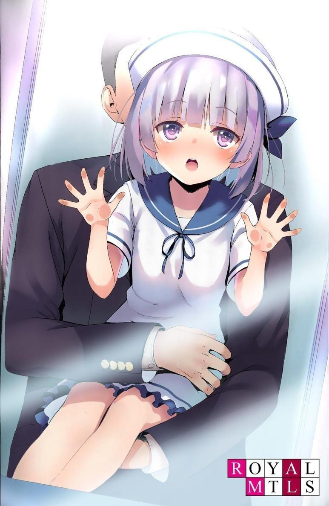
Iba a ir a verlo después de tomar algunas decisiones, pero me interesaba el punto de vista de su hija, Sakayanagi Arisu.
No todos los días se escuchaba la valoración de un niño sobre la Habitación Blanca.
―¿Qué te hace pensar eso?
―Porque creo que, al final, los niños que llegaron a la cima fueron los que tenían el mejor ADN.
―Ya veo. Es cierto que el plan de estudios al que se someten estos niños es muy riguroso. Es posible que los niños que sobrevivan sean los que eran buenos desde el principio. Realmente eres brillante, como ella. Y tu personalidad también es parecida.
―Me alegro. Que me comparen con mi madre es el mayor cumplido.
Como ella misma señaló, es difícil precisar dónde está la línea que separa la genialidad de la mediocridad.
Precisamente los genes y el ambiente son esenciales en el proceso de desarrollo humano.
Es cierto que no todos los niños que recibieron el "ambiente de la habitación blanca" eran necesariamente superiores en la etapa prenatal.
―Al fin y al cabo, algunos niños sobreviven al plan de estudios, pero sólo porque sus padres son superdotados.
Sakayanagi parecía realmente perplejo ante una pregunta que ni siquiera un adulto podría responder de inmediato.
―Bueno, no lo sé. Quizá sea cierto, quizá no. Pero no puedo descartar la posibilidad de que los niños de aquí estén destinados al futuro.
Explicó, pero su hija no parecía interesada.
La niña miraba al alumno de la Habitación Blanca con más intensidad que antes.
―...Ese chico ha estado manejando todas las tareas con calma y sin esfuerzo desde hace unos minutos.
―Ah, es el hijo de sensei, ¿no? Si no recuerdo mal, su nombre es...
Ayanokouji... Kiyotaka-kun.
Parece que ya se dio cuenta de la singularidad de Kiyotaka.
―Si es hijo de sensei, tendrá un buen ADN, ¿verdad?
―No sé. No se licenció en una gran universidad ni fue un deportista destacado, su mujer era una persona normal y ninguno de sus abuelos tenía talento, pero era más ambicioso que nadie y tenía un espíritu de lucha indomable. Por eso llegó a ser tan grande. Tanto que, en un momento dado, incluso intentó dirigir un país.
―Entonces, ¿no es el sujeto más adecuado para este experimento?
―Supongo... Sería el niño ideal. Pero... no puedo evitar sentir lástima por él.
―¿Por qué?
―Ha estado en esta institución desde el momento en que nació. Lo primero que vio no fue a su madre ni a su padre, sino el techo blanco de esta institución. Si hubiera desertado antes, podría haber vivido con sensei. O quizá es el hecho de que siga aquí lo que hace que siga gozando del favor de sensei...
Si es así, es muy probable que el objetivo final de esta institución sea criar a todos los niños que educan como genios. Pero ahora mismo, todavía está en fase experimental. Es una batalla que se acabará planteando dentro de 50 o 100
años. Los niños no están aquí para demostrar su talento cuando crezcan, sino para vivir para los niños del futuro. Supervivientes y fracasados son sólo una muestra.
―Padre, ¿te disgusta esta instalación?
Arisu dijo lo que me hubiera gustado para llegar al meollo de la cuestión.
Dependiendo de su respuesta aquí, había muchas cosas que considerar...
―...No sé... Puede que no sea capaz de apoyarlos honestamente. ¿Y si los niños criados aquí crecen para ser mejores que los demás? Si esta instalación se convierte en la norma, creo que eso sólo traerá el comienzo de la desgracia.
En particular, no pude ver ninguna conexión con Kijima.
Sólo una respuesta típica de una buena persona como Sakayanagi sigue apareciendo.
―No te preocupes, te lo explicaré... Demostraré que la creación de un genio no viene determinada por la educación, sino en el momento de nacer.
―Estoy seguro de que tienes razón. Cuento contigo Arisu.
Sakayanagi palmeó alegremente la cabeza de su hija, al parecer sin tener segundas intenciones.
―Por cierto, padre, voy a aprender a jugar al ajedrez.
Apagué la cámara y salí de la habitación.
―Supongo que no había necesidad de preocuparse.
Sin embargo, debemos ser cautelosos.
Ahora que se acerca la hora del anuncio, nunca se sabe lo que puede pasar.
PARTE 5.8
Una y otra vez, repetí el mismo día.
Repetía los días de aprendizaje que parecían interminables.
En un mundo en el que apenas había descansos, los alumnos de la cuarta generación seguíamos repitiendo el plan de estudios.
No había nada más que decir.
Por muy complicado y difícil que se pusiera, lo que teníamos que hacer seguía siendo lo mismo.
Mañana, pasado mañana, pasado pasado mañana y el día después. Una y otra vez, lo repetía.
El día siguiente llegó de golpe.
Aprendimos algo nuevo.
Absorber. Si no absorbías, no sobrevivías.
Una vez que te tachaban de fracasado, no había forma de remediarlo.
Y lo que ayer era normal, hoy podía no serlo.
Sonó el timbre.
Los niños siguieron las normas y colocaron los bolígrafos en sus pupitres.
Era el final del currículo escrito de alto riesgo.
Se recogen las hojas de examen y comienza inmediatamente la calificación.
Mientras tanto, los niños se sentaban en silencio en sus asientos y esperaban los resultados.
Sin embargo, solían conocerse antes de que se entregaran.
Todos los niños que permanecían aquí sabían lo bien que habían respondido a las preguntas.
La niña del asiento delantero temblaba ligeramente.
La miraba sin comprender, esperando el momento oportuno.
Uno de los instructores entró y se acercó a la niña temblorosa.
―Descalificada.
Anunció el instructor delante de la niña... con el mismo tono tranquilo de siempre.
Una vez más, otro estudiante quedaba descalificado.
El número de estudiantes de cuarta generación que quedaban se había reducido a sólo cuatro, y ahora uno de esos asientos desaparecía.
―Oh no...
En la Habitación Blanca, el fracaso en las fases de entrenamiento y estudio nunca era un problema.
No importaba cuánto progresaras hasta llegar al examen, sacar un diez o un cinco en los demás exámenes era irrelevante. El instructor se limitaba a mantener el proceso de aprendizaje sin parar.
Era el examen final el que lo decidía todo: si reprobabas o no.
Si no alcanzabas el nivel exigido, te consideraban incapaz y te daban de baja del plan de estudios.
―Levántate.
No se incluían palabras extra, frases cortas era todo lo que importaba.
―Yo... no quiero...
Lo último que querría hacer sería responder a esa demanda.
Si lo que decía era correcto, el resultado de Yuki estaba a sólo cinco puntos del aprobado.
Para el observador casual, pueden parecer sólo cinco puntos, pero en la Habitación Blanca, no había redención aunque faltara un punto.
Esto era cierto para muchos alumnos contra los que he entrenado.
Los niños que no alcanzaban el aprobado una vez solían ser menos capaces de aprender más adelante.
Esto está demostrado. En otras palabras, aunque ignoremos la situación aquí y la dejemos pasar hasta el próximo examen ordinario, seguirá sin ser capaz de salir de la situación en la que es la próxima candidata principal a abandonar la Habitación Blanca.
En otras palabras, no está cualificada para permanecer en la cuarta generación una vez que vea que ha dado con su techo.
―Hay que eliminar las manzanas podridas. Cualquier obstáculo se convertirá en una carga para nuestro crecimiento.
Supongo que no tenían intención de dedicar más tiempo a esto.
Uno de los instructores agarró el brazo de Yuki.
―No... ¡Lo odio!
Apartándole el brazo, Yuki corrió hacia mí mientras seguía agitada.
―¡Kiyotaka, sálvame! No quiero desaparecer.
Derramando lágrimas, Yuki suplicó ayuda.
Miré al instructor que se me acercaba lentamente, pero no cambié mi postura indiferente.
―Es imposible.
―¡...!
―No puedo ayudarte. No, no voy a hacerlo.
―¡Por favor! ¡La próxima vez lo haré lo mejor que pueda! ¡La próxima vez!
―¿La próxima? ¿Por qué no lo intentaste antes? Sabes que no hay próxima vez.
―¡Bueno, eso es...!
Si no puedes trabajar duro ahora, no podrás hacerlo la próxima vez.
Continuar es imposible, al igual que sólo hay una vida.
―Pero aún así... ¡Puedo hacerlo, puedo hacerlo...!
Mira lo que he conseguido hasta ahora. ¿De eso se trata?
Los instructores nos tenían rodeados a Yuki y a mí.
―¿Huh?
Hice una señal a los instructores que se acercaban para que se detuvieran y me volteé hacia Yuki.
―Es cierto que has seguido el plan de estudios excepto el examen escrito.
Sin embargo, tus notas no dejaban de bajar año tras año y nunca mejoraban. En otras palabras, aquí es donde están tus límites.
Aunque se salvara y se quedara, sería decisión del instructor, no de la niña que quiere salvarse. Sólo podía asumir que Yuki estaba cometiendo un error al aferrarse a mí de esta manera.
―¡Ven aquí!
―¡No! ¡No! ¡Por favor! ¡Por favor, déjame intentarlo de nuevo!
Alzando la voz, Yuki mostró una peculiar resistencia a los instructores.
No era un comportamiento inusual entre los expulsados, pero aun así, el comportamiento de Yuki era un poco diferente de lo que habíamos visto antes.
―Conoces muy bien las reglas de la Habitación Blanca. ¿Por qué estás tan alterada?
Los alumnos de la Habitación Blanca, incluido yo mismo, no entendíamos la situación.
Los instructores, sin embargo, sabían muy bien por qué Yuki se resistía tanto.
Pero nunca dijeron la razón.
Agarraron a Yuki por los brazos y la apartaron a la fuerza de mí.
―¡Ayúdame! ¡Kiyotaka!
Ella gritaba mi nombre una y otra vez, chillando y suplicando ayuda.
―¡Ayuda! ¡Ayuda...!
Me tendió la mano mientras se desplomaba en el suelo, implorando mi ayuda.
¿Ayuda?
La chica frente a mí ya había sido descalificada.
Los descalificados dejan esta habitación.
Y nunca regresan.
No hay excepciones.
Entonces, ¿por qué ella necesitaba pedir ayuda?
Era una pérdida de esfuerzo, una pérdida de tiempo.
―¡Por favor, no quiero irme!
Dos adultos, que no podían soportar que ella todavía no hubiera salido de la habitación, entraron en ella a toda prisa.
Los instructores agarraron a la niña y la sacaron a rastras.
―¡No! ¡No! ¡No! ¡Ayúdame!
Una persona más no consiguió alcanzar su objetivo y fue eliminada.
Seguro que los niños restantes miraban a Yuki con los mismos ojos fríos que yo.
O tal vez tenían miedo de ser los siguientes.
En cualquier caso.
Lo único que me importaba era ser el último en pie.
Desde el principio, he vivido en este mundo confiando sólo en esos sentimientos.
Vivía en ese mundo blanco. Un grito que viene de aprender juntos durante años, como una familia, o tal vez algo de una dimensión completamente diferente, como el afecto hacia el sexo opuesto, ¿eh?
Ser arrastrado fuera de aquí es una negación de todo lo que somos.
Por lo tanto, todos repitieron sus estudios en un tiempo limitado para que esto no sucediera.
Es sólo que...
―Por favor, esperen.
Murmuré en voz baja a los instructores.
―¿Quién dijo que podías hablar? No te saldrás con la tuya la próxima vez que abras la boca sin permiso.
―Entonces está bien si no me dejan salirme con la mía, pero por favor escúchenme.
Inmediatamente después de que salieran esas palabras, el instructor se calló, se acercó a mí y me dio una patada sin dudarlo.
―No te di permiso para hablar.
―Yuki no se encontraba bien antes del mediodía. Parecía inquieta durante el examen, y creo que no pudo demostrar su habilidad en otras áreas...
Cuando estaba a punto de continuar, me agarró por el pecho como para interrumpirme todavía más.
―También es responsabilidad suya mantenerse en buenas condiciones.
¿Crees que eso es una excusa ahora? No vi nada malo en ella esta mañana.
―Así es. Pero sería diferente si hubiera sido inesperado.
―¿Inesperado?
El instructor se dio la vuelta y miró a los otros instructores que rodeaban a la Yuki caída.
―...Hay hemorragia.
Los adultos parecieron darse cuenta por sus observaciones de que Yuki estaba en un estado inusual.
― ¿Hemorragia? ¿Se lastimó en alguna parte...? No, ¿es eso?
―Sí. Normalmente, lo más temprano que esto podría ocurrir es alrededor de los 9 años, pero tan temprano es excepcional. Seguramente se debe al estrés, diferente al de los demás alumnos de la clase, causado por la dificultad del curso. Además, según parece, tiene fiebre, así que no es de extrañar que esté repentinamente enferma.
―Ve al consultorio médico. Veremos si está descalificada o no cuando la examinemos más a fondo.
Con esas palabras, el instructor ordenó a Yuki y la sacó de la habitación.
Mientras se marchaban, Yuki me miró a través de sus lágrimas, pero no la miré a los ojos.
―Bien observado. Eso es lo que diría, pero nos habríamos dado cuenta justo después de esto sin que tuvieras que señalarlo. Tus comentarios no autorizados siguen siendo un problema.
―¿Así que me castigarán?
Los castigos, como el corporal, venían después de violar normas ajenas al plan de estudios.
Pero eso era todo.
Sabía que no podían tomar medidas tan brutales, como la expulsión.
―¿Crees que estoy bromeando?
―Si se va a quedar vigilándome, será mejor que me vigile más de cerca.
―...¡Tú!
Demasiado tarde. El instructor, cerrando el puño derecho y revelando su intención asesina, se abalanzó sobre mí, pero lo esquivé.
―¡Alto!
El instructor trató de replicar, pero otro se apresuró a detenerlo.
El instructor intentó replicar, pero otro instructor se apresuró a detenerlo.
―¡No dejes que los comentarios del chico te afecten, recién llegado!
―¡...!
Había algunos instructores que no tenían experiencia, pero con este nuevo instructor, él cometerá más errores a partir de ahora".
Por eso hay que darlo a conocer a estas alturas.
Si iban a utilizarlo, necesitaban entrenarlo mejor. Si decidían que era inútil, necesitaban deshacerse de él.
Al final, después de aquel día, Yuki nunca volvió.
PARTE 5.9
Desaparecieron más estudiantes de cuarta generación, y sólo quedamos dos en la habitación. Shiro y yo.
Habían pasado varios meses desde que los dos fuimos los últimos en quedarnos solos.
No nos hablamos ni una sola vez durante ese tiempo, y cada día era sólo silencio.
Pero no me importaba. Hasta me parecía mejor.
Sin la charla de Yuki, podía centrarme más en mi propio aprendizaje.
Ese día era la primera clase de judo en unos días.
Debido al plan de estudios reforzado, ciertas actividades sólo se ofrecen una vez cada pocos días.
Aun así, tanto Shiro como yo estábamos mejorando nuestras habilidades.
Aunque las competiciones eran diferentes, nuestro entrenamiento nos permitía familiarizarnos con nuestras habilidades y podíamos aplicarlas a muchas artes marciales.
―Ustedes dos van a continuar con sus sesiones habituales de sparring.
Yo estaré fuera de la sala un rato.
El instructor que actuaba como árbitro abandonó la habitación a toda prisa, como si lo hubieran llamado.
Nos quedamos solos y comenzamos nuestro Randori como se nos indicó. Nos agarramos al judogi del otro.
Shiro y yo habíamos hecho lo mismo docenas y cientos de veces.
―¿Podemos hablar?
El silencio de los últimos meses se rompió cuando Shiro me susurró al oído.
Pensé que era un ataque mental, pero dejó de moverse por completo.
―Han pasado muchos, muchos años desde la última vez que te gané en Judo, ¿verdad?
―Así es.
Llevaba ganando desde el segundo round después de perder mi primer combate.
―Boxeo, Karate, Jeet Kune Do... es lo mismo para todo. Ganaré la primera o las dos primeras peleas, pero una vez que cambias las tornas, no puedo hacer nada. Eres realmente genial.
¿Por qué diría eso en medio de una pelea como esta?
―Tengo una cosa que decirte.
―...¿Qué?
Escuché el murmullo, que continuaba a una distancia tan cercana que los adultos no podían captarlo.
―Decidí abandonar estas instalaciones.
―Sólo los marginados salen de aquí.
―Así que voy a desertar y salir de aquí. Si nos fijamos en los desertores y los adultos que tienen que tratar con ellos, te puedes imaginar qué tipo de caminos toman. Al menos no me matarán.
―¿Qué vas a hacer ahí fuera? ¿Tiene algún sentido?
―Sí. Quiero libertad.
―Libertad?
―Quiero ser libre. Quiero tener amigos. ¿No es normal sentirse así? Mira a tu alrededor. Sólo estamos tú y yo. Vamos a estar así más de diez años.
No entendía lo que Shiro quería decir.
¿Por qué iba a querer eso?
―¿No te importa el mundo exterior? ¿O eres capaz de soportar este dolor ante todo?
Nunca había tenido ese interés o dudas.
―Conocimiento de una parte y este pequeño espacio: ¿estás satisfecho con eso?
―Al menos no me quejo.
Definitivamente estoy creciendo cada día en la Habitación Blanca.
¿No quería saber hasta dónde podía crecer y cuáles eran sus límites?
No se puede obtener este tipo de educación en el mundo exterior. Esto significa que perderás eficacia en la superación personal.
―...Eres raro. Quiero ver el mundo real, no el virtual.
Hablando objetivamente, había visto a muchos niños hartos de sus vidas restringidas, pero nunca se me ocurrió la idea de abandonar los estudios porque no podía soportarlo más.
―Me convencí cuando Yuki se marchó. Incluso la envidiaba.
―Ya veo.
Si esa fue la respuesta que dio Shiro, entonces no tenía nada que decir.
―Pensé que eras como yo. Pensé que algún día querrías salir al mundo.
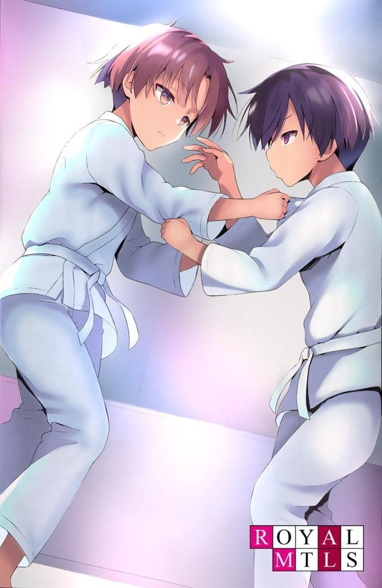
―Lo siento, pero nunca pensé eso.
―...Ya veo. Iba a pedirte que te fueras conmigo...
Estaba seguro de que los adultos que lo vigilaban no lo sabían tan bien como yo.
No sabían que Shiro tenía tantos sentimientos hacia este lugar.
Entre los administradores existía la idea de que los niños no podían saber lo que no les contábamos. Pero la realidad era que había otras personas, como la que tenía delante, que deseaban abandonar la Habitación Blanca lo antes posible.
No sabía si este descubrimiento significaba algo mientras yo fuera el último en pie.
―Voy a adelantarme y volveré a verte alguna vez, Kiyotaka.
No respondí a sus palabras.
Sólo sentí su extraordinaria determinación. También sentí una determinación que nunca antes había sentido, una determinación para derrotarme en esta batalla. El oponente que tenía delante no era un rival fácil comparado con un adulto mediocre. Y sin embargo...
―¡KUK!
El ataque de Shiro fue repelido, y conseguí un golpe limpio.
No podía perder contra un oponente que había aprendido de los mismos errores que yo había cometido.
Si él ejercía un poder de 120, yo ejercía 130.
Si él ejercía 140, yo ejercía 150.
No me importaba la comodidad de la Habitación Blanca ni la libertad del exterior.
Lo importante era que todavía había mucho que aprender aquí.
Mientras pudiera mejorar, no debía evitarlo.
En otras palabras, mi curiosidad intelectual me decía que me quedara en esta Habitación Blanca.
―¡Eso es!
Aunque no había ningún juez cerca, siempre estábamos siendo observados desde otra habitación en el segundo piso, detrás del cristal.
Shiro golpeó contra el tatami y nos informaron de que el combate estaba decidido.
―Después de todo, volví a perder. Debería haberme acordado de cuando gané.
Apoyó el brazo en la frente, sin aliento, y habló de sus recuerdos desvanecidos.
―Fueron cinco años de siempre perder. Supongo que me di cuenta de que no podía ganar si me quedaba aquí…
―¿De verdad vas a irte?
―Sí. Dejaré la Habitación Blanca cuando llegue el momento.
No iba a cambiar de opinión.
No lo entendía. Dejar la Habitación Blanca era morir, sin importar la forma que adoptara.
Yo no podía pensar así.
Pero Shiro debía tener sus propios pensamientos.
Si quería suicidarse, yo no se lo impediría.
―Adiós, Shiro.
―Adiós, Kiyotaka.
Esta fue la última conversación entre Shiro y yo.
PARTE 5.10
No mucho después, Shiro se fue. El único otro estudiante se había ido.
A partir de este momento, mi memoria se volvió más monótona.
No había nadie con quien hablar de verdad. Algunos días, dependiendo del plan de estudios, no abría la boca más que para tragarme la comida.
Pero incluso después de estar solo, lo que hacía no cambió.
Si algo había cambiado eran las artes marciales en general.
Hasta ahora, había estado compitiendo con los mismos alumnos de la Habitación Blanca, pero ahora que ya no estaban conmigo, todos mis oponentes se habían convertido en adultos.
Cuando cumplí nueve años, ya había derrotado a todos los instructores que me enseñaron todo lo que sabía sobre artes marciales.
Probablemente por eso los instructores tenían prisa por reunirse en la habitación.
―Kiyotaka, ahora vas a luchar contra varias personas en un combate real.
Esta es la culminación de todo lo que has aprendido hasta ahora. Se te permite utilizar cualquier medio necesario.
―Sí.
―Además, no te contengas en lo más mínimo. Puedes hacerlo con la intención de matarlos.
―¿Eso significa que realmente puedo matarlos?
―A menos que te detengamos, puedes creernos. Ten mucho cuidado.
―Sí.
Estaba en una gran sala de entrenamiento y entró un grupo de adultos con traje.
Nunca los había visto antes.
Cuando me vieron, pusieron cara de tontos y empezaron a reírse.
―Pensé que era una broma cuando dijeron que teníamos que luchar en serio contra este chico.
Era evidente que eran diferentes de los adultos a los que había visto enseñar técnicas de lucha.
Sus movimientos no eran fluidos, sino bruscos y enérgicos.
Eran oponentes capaces de librar combates irregulares en una batalla cuesta arriba en lugar de en un campo de batalla igualado.
A diferencia de antes, la fuerza física pura no era rival para ellos. La diferencia de masa muscular es obvia.
Son la clase de tipos contra los que, en una pelea cara a cara, no tendrías ninguna posibilidad de ganar 100 de cada 100 veces.
―Sí, es ridículo, pero no hay que andarse con rodeos. Estamos hablando de gente que paga esa cantidad de dinero sólo para someter a un chico. Uno pensaría que tiene habilidades inusuales.
Fue uno de los hombres que parecía tener cierto prestigio entre los presentes el que habló.
―Escucha, ven a nosotros con la intención de matarnos. No, intenta matarnos. Con tanto espíritu y determinación, si no vienes hacia mí con una idea general de qué hacer, me dará un poco de pena darte una paliza.
El hombre que parecía ser el líder del grupo me indicó que lo hiciera.
Iba a hacerlo. Ya tenía mis órdenes.
―Te daremos algunas armas si las necesitas.
Dijo y puso sus zapatos en el suelo.
El sonido de metal raspando contra metal resonó en el suelo.
―No las necesito.
―...¿Quieres hacerlo con tus propias manos?
―Sí.
―Probablemente no estés bromeando pero... yo también hablo en serio.
Sólo elige una.
―Señor, ¿es una orden?
Me volteé hacia el instructor, que me miraba desde arriba y le pedí órdenes.
―Es una orden. Haz lo que te dice. Seguro que ya te enseñaron a usarlas todas.
Entonces obedeceré.
Miré en la bolsa.
―Bastón, pistola aturdidora, cuchillo... lo que quieras.
Ya los había visto, los había tenido en las manos y había aprendido a usarlos en cursos anteriores.
Para matar simplemente, me quedaría con el cuchillo, pero quería más alcance.
―Voy a tomar este.
Sin dudarlo, me acerqué al bastón y lo agarré.
El bastón medía unos 30 centímetros de largo.
―¿Sabes usarlo?
―Lo balanceas y crece hasta unos 80 centímetros. Golpeas con él,
¿verdad?
―Así es.
Para ganar, debo golpear con precisión los puntos débiles del cuerpo humano.
Probablemente él nunca había luchado contra un luchador de mi estatura.
Tenía que aprovechar el hecho de que era pequeño y bajo, lo que dificultaba enfrentarse a mí.
Al cabo de unos minutos, cuando el último adulto cayó con la pierna destrozada por el bastón, lo levanté. Lo golpeé en el cráneo y lo dejé inconsciente de un solo golpe.
Si eso no hubiera funcionado, le habría asestado un segundo golpe que le destrozaría el cráneo.
―¡Alto! ¡Alto!
Oí una voz que resonaba en la habitación, dejé de moverme y lancé el bastón ligeramente a lo lejos.
Los adultos entraron corriendo en la habitación y ayudaron a levantarse a los caídos.
―Dios mío... Tenemos que llevarlo a la enfermería de inmediato.
El equipo médico, que vio su estado y se dio cuenta de que estaba gravemente herido, lo sacó en camilla.
―¿Qué demonios estabas haciendo, Kiyotaka?
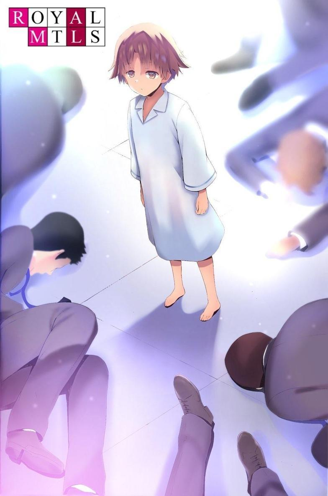
―Me ordenaron matarlo.
Para asegurarme, hasta pregunté de nuevo para confirmar si realmente estaba bien.
―¿Cuál es el problema con eso?
Los instructores estaban atónitos por la situación, pero poco después, la puerta de la habitación se abrió.
―¡Ayanokouji-sensei!
―Ustedes encárguense de estos chicos. Me gustaría tener una reunión con Kiyotaka. Sígueme.
Las órdenes eran absolutas.
Lo seguí sin pensarlo dos veces.
Normalmente, había varios instructores a mi lado, pero hoy parecía ser sólo uno.
―Como seguro ya sabes, estoy a cargo de la Habitación Blanca y soy tu padre.
―Sé quién es.
―Nunca he afirmado ser tu padre, pero ¿cuándo te enteraste de eso?
―Lo recuerdo de cuando tenía cuatro años... cuando lo oí hablar con los instructores.
―Ya veo. Eres un estudiante de cuarta generación y seguiste dominando.
Y cuando te diste cuenta, eras el único que quedaba, perfeccionando silenciosamente el plan de estudios... No, sigues superándolo.
Para mí, la existencia de un padre no era nada especial.
Era sólo un hecho. Ni más ni menos.
―Tú eres especial para mí.
―...
―La Habitación Blanca lleva poco tiempo funcionando, unos catorce o quince años, pero aun así, no veo la posibilidad de que nazca un genio como tú en los próximos años, ni mucho menos. Por supuesto, con cada periodo sucesivo, van reduciendo sus deficiencias y superando sus problemas paso a paso...
Daba la impresión de que me estaban elogiando.
Al igual que la charla sobre ser mi padre, estos eran simplemente hechos.
―Ya puedes volver.
―Con permiso.
¿Cuál era el significado de esa conversación?
Tal vez tenía algo que ver con el dispositivo conectado a mi brazo.
Como para confirmarlo, el hombre dijo.
―¿Cómo fue todo?
―Durante el combate y durante la conversación con Ayanokouji-sensei, no hubo ni la más mínima alteración en el pulso de Kiyotaka.
―Su pulso no se alteró a pesar de que dije que era especial, o... No, creo que es seguro decir que sus emociones humanas han dejado de funcionar por completo.
―Es tanto una fortaleza como una debilidad indeleble para Kiyotaka.
―Ishida tiene razón. Las emociones tienen poca prioridad, pero siguen siendo esenciales. Incluso la mitad de lo que queda en una persona normal es suficiente, pero en el caso de Kiyotaka, casi no queda nada. Es apto y no apto al mismo tiempo para ser educador, político o cualquier otro uso.
Los dos hablaban de varias cosas delante de mí, sin ocultar nada.
Me pregunté si esto formaba parte del plan de estudios.
No importaba lo que se alabara y lo que se criticara.
Lo único que importaba era si me rendía o no.
―Tal vez sea imposible que aprenda a sentir emociones en el entorno de la Habitación Blanca, ¿no?
―Sí, pero puede utilizar las mentiras en su beneficio cuando sea necesario.
Puede que no tenga muchas emociones, pero domina el arte de fingir ser algo que no es.
―Ese es el problema. Es demasiado tarde para que aprenda a expresar sus emociones ahora en la Habitación Blanca. Entonces no nos queda más remedio que cambiar drásticamente el entorno.
―...No lo entiendo.
―¿No lo entiendes?
―Hemos educado a muchos niños desde la primera generación hasta la decimotercera que está actualmente en curso. El nivel de dificultad del plan de estudios ha sido muy diferente, pero está claro que Ayanokouji Kiyotaka es diferente. Esto no es porque sea el hijo de Ayanokouji-sensei, sino porque es una anomalía.
―En efecto, eso es cierto. No importa lo duro que sea el entorno, antes o después Kiyotaka demostró su capacidad de adaptación. Todos los niños tienen una meseta, pero ¿por qué Kiyotaka es el único que no la tiene? ¿Por qué cuanto más le enseñas, más lo absorbe todo como si se lo tragara?
―No sé... Es fácil decir que es una herencia genética, pero la Habitación Blanca nunca estará realmente completa sin una investigación a fondo de lo que está pasando.
―Si consigo un suministro constante de gente tan buena o mejor que este chico, mi ideal se hará realidad. Imagínatelo. No abandones la idea hasta que la entiendas. Para eso te pagan.
Continué mi educación. Lo que me esperaba al final de todo y lo que había más allá de la búsqueda del conocimiento.
Eso era todo lo que quería saber.
DESESPERANZA Y FORMA DE VIDA
TOKIO ESTUVO INUSUALMENTE AZOTADO por una fuerte nevada.
El jardín que se veía desde la ventana del pasillo se iluminó con el paisaje de una noche nevada.
Kamogawa y yo nos pusimos en marcha y nos dirigimos al lugar acordado antes que los demás.
Por el camino, Kamogawa se detuvo y contempló el paisaje nevado.
―¿Te acuerdas? Hace más de diez años, cuando esperábamos a Naoe-sensei bajo el frío.
―Sí, parece que fue hace sólo unos días.
―Ese día, Ayanokouji-san se hizo cargo del Proyecto de la Habitación Blanca y me nombró a mí también. Ha sido un trabajo muy duro, pero lo conseguimos.
Es cierto. Hay más de un secreto que no puedes contar a la gente y que debes llevarte a la tumba.
―Has crecido mucho. Veo que aprendiste los rudimentos de la política.
―Gracias, Naoe-sensei, Ayanokouji-san... No, trabajar bajo Ayanokouji-sensei ha sido un gran paso adelante para mí. Lo único que lamento es no poder informar a mi padre, que falleció el año pasado...
El padre de Kamogawa falleció el año pasado por estas fechas tras sufrir un ataque al corazón.
El objetivo de Kamogawa había sido informarle directamente de la publicación del Proyecto Habitación Blanca.
El Estado debe proporcionar instituciones que acojan y eduquen a los niños.
La Preparatoria de Educación Avanzada es ahora pionera, pero irá más allá.
Una institución que salve la vida de niños por nacer.
Una institución que educa a los niños y produce genios.
El Proyecto Habitación Blanca es lo que el mundo necesitará sin duda en el futuro.
Vidas tiradas por el retrete. Vidas segadas por el aborto. Vidas asesinadas por el abandono.
Bajo el liderazgo del gobierno, eliminaremos todos estos problemas.
Es un plan que también ayudará a resolver el problema del descenso de la natalidad.
―Vamos a lograr resultados que alcanzarán los cielos. No te conformes ahora, Kamogawa.
―Sí, señor.
Hoy es un día especial. Las cosas cambiaron desde el momento en que estábamos esperando a Naoe-sensei en el frío.
El experimento de la Habitación Blanca venía produciendo resultados de manera constante, a pesar de sus numerosos contratiempos.
Por fin, era el día en que informaría detalladamente a Naoe-sensei y saldría al escenario.
El primer paso para ver la luz del día estaba a punto de comenzar.
Esto era algo que no podría haberse hecho sin mucho trabajo duro y perseverancia.
Se suponía que primero debíamos tomar asiento y esperar a que Naoe-sensei apareciera en la sección superior.
Sabía que era de buena educación esperar fuera, pero esa era la orden de Naoe-sensei. En otras palabras, lo interpreté como una muestra de aprecio por mi duro trabajo.
―Con el anuncio de este proyecto, Naoe-sensei finalmente está en la cima del país.
―¿Primer ministro, eh...?
Ahora estaba completamente preparado para las próximas elecciones.
―No sólo será el primer ministro. No sólo será honrado en primera plana, sino que será una o dos veces más poderoso que los anteriores primeros ministros.
En el sentido más estricto de la palabra, será el hombre en la cima de este país.
No suelo ponerme nervioso, pero notaba que los latidos de mi corazón se aceleraban ligeramente.
Me jugaba la vida política en este proyecto.
Soñé una y otra vez con el día en que daría sus frutos.
―Naoe-sensei está aquí.
Después de unos largos, pero cortos 30 minutos, llegó la noticia de la llegada de Naoe-sensei.
―Llegó antes de lo que esperaba.
Llegó sólo diez minutos tarde de la hora acordada.
Había planeado esperar una o dos horas sin preocuparme de que llegara tarde, pero me sorprendió.
―¿Así de interesado está Naoe-sensei en ti?
advertí ligeramente a Kamogawa mientras hablaba alegremente.
A partir de ese momento, dejamos a un lado nuestros sentimientos relajados y comenzamos una discusión seria con Naoe-sensei.
Antes de que se abriera el shoji, nos sentamos de rodillas e inclinamos la cabeza, frotando la frente contra el suelo.
Oí los pasos dignos y silenciosos de Naoe-sensei.
―Siento haberlos hecho esperar.
Naoe-sensei apareció y se disculpó por su tardanza.
No pude evitar sentir un extraño tirón en mi interior cuando dijo esas palabras.
―No, señor, por supuesto que no. Gracias por venir hasta aquí hoy con el frío que hace.
Al decir esto, me sacudí los pensamientos innecesarios de la cabeza.
No debía preocuparme por ello.
Definitivamente estaba subiendo las escaleras para cumplir mis ambiciones.
―Sólo levanten la cabeza. No estamos llegando a ninguna parte.
―Sí...
Kamogawa y yo levantamos la cabeza y rápidamente alcanzamos nuestros vasos para servirle una cerveza a Naoe-sensei.
Pero Naoe-sensei nos detuvo.
―Antes de que lo hagan, necesito hablar con ustedes ―dijo.
―¿Cómo dijo?
Kamogawa se apartó rápidamente y volvió a escuchar lo que Sensei tenía que decir.
―Tengo que decirles unas cuantas cosas. Empecemos por eso.
Tras una ligera pausa, Naoe-sensei murmuró como si recordara algo que había olvidado.
―En cuanto a las próximas elecciones, decidí no presentarme.
―...¿Eh?
Por un momento, no entendí lo que dijo Naoe-sensei, y por primera vez, di una respuesta tonta.
Supongo que le pasó lo mismo a Kamogawa, que estaba sentado a mi lado.
El zumbido de mis oídos era intenso en el silencio.
―Sensei... Es una especie de broma, ¿no?
Las palabras salieron con naturalidad de la boca de Kamogawa más que como una confirmación.
Yo habría dicho lo mismo aunque él no se hubiera tomado la libertad de decirlo.
―Es cierto. Pasado mañana, cuando se anuncien los candidatos, votaré por Kijima.
¿Kijima? ¿Por qué Naoe-sensei elige a Kijima-sensei?
No importa lo prometedor que fuera, Naoe-sensei estaba en mejor posición que Kijima-sensei.
―Espere un minuto. ¡Usted ha hecho muchos preparativos para este momento...!
Mientras me inclinaba hacia delante, no podía contener mis emociones.
Sabía que convertirse en el primer ministro no lo era todo.
De hecho, el Naoe-sensei que estaba frente a mí tuvo sus oportunidades en el pasado, pero siguió siendo un manipulador en la sombra durante muchos años sin aferrarse a su puesto.
Aun así, era una conclusión inevitable que él sería el primer ministro esta vez.
De hecho, si no se presentaba a la oficina del primer ministro... estaría prácticamente renunciando a ocupar ese puesto.
Una vez que Kijima-sensei asumiera el cargo, seguramente se aferraría a él.
La facción de Naoe-sensei empezaría a perder su poder de cohesión y él nunca tendría la oportunidad de volver a ser primer ministro.
Considerando el hecho de que hubiera retirado su posición, uno no puede evitar pensar que algo malo había sucedido.
Y eso podría tener un gran impacto en la Habitación Blanca.
Tenía que comprobarlo porque lo sabía instintivamente.
Lo que más me sorprendió fue que fue a Kijima-sensei a quien Naoe-sensei decidió apoyar.
―Oh, ese Kijima-sensei... Es un claro adversario suyo... ¿Verdad?
Kamogawa no pudo evitar mencionar el nombre.
El número de candidatos del Partido de los Ciudadanos para las elecciones se había reducido a tres, tanto dentro como fuera del Gobierno y en los medios de comunicación.
El candidato principal era Naoe-sensei, que estaba justo delante de mí, y los segundos eran Isomaru-sensei, su rival, y Kijima-sensei, que llegó un poco más tarde. Estos tres eran los únicos candidatos que tenían el pase para convertirse en primer ministro, y Naoe-sensei era sin duda el candidato número uno.
―No tenía intención de nombrarlo primer ministro, pero ya no es así ―dijo.
―¿Cree que no podrá conseguir votos...?
―Así son las cosas. Los votos para mí, Isomaru y Kijima estaban bien repartidos entre el Partido de los Ciudadanos, pero ahora parece que algunos de los partidos de la oposición han decidido destruirme. He calculado que no conseguiré ni 20 o 30 votos.
Después de probar todas las estrategias, Naoe-sensei tenía una sonrisa resignada en la cara.
―Aunque lo haga bien, si fracaso, perderé gran parte de mi atractivo. En ese caso, no tendré más remedio que apoyarlo en lugar de presentarme a las elecciones protegiendo mi posición actual, ¿no? Todavía es joven, pero tiene impulso y poder. He buscado minuciosamente escándalos, pero no apareció ni una mota de polvo.
Un político sin mujeres, sin dinero y sin nada que ocultar.
Era capaz de utilizar sus habilidades como siempre había hecho.
―Pero en ese caso, ¿no sería mejor recomendar a Isomaru-sensei?
Puede que sea un rival dentro del mismo partido, pero también debe ser un viejo conocido. No creo que haya necesidad de recomendar a Kijima-sensei, que es difícil de manejar...
Él no estaría pensando tan infantilmente como para no dejar que sus colegas tengan el crédito donde es debido.
Si decidiera que es correcto para él estar bajo Isomaru-sensei, no habría necesidad de dudar.
―Ya sabes que es mejor estar bajo las órdenes de Kijima, ¿verdad? Si intentamos entrar a la fuerza en el barco de Isomaru, hay muchas posibilidades de que caigamos juntos. Hay muchas voces de nuestra facción diciendo que Kijima es la mejor opción entre los dos.
Incluso Naoe-sensei temía a la deserción si intentaba entrar a la fuerza en el bando de Isomaru-sensei.
No tenía ni idea de que lo habían presionado hasta ese punto.
Pensé que había estado en la escena política, pero al parecer ni siquiera yo había estado expuesto al otro lado de la historia.
―Oh, es demasiado pronto para rendirse, Naoe-sensei. Tenemos el proyecto de la Habitación Blanca.
―Basta, Kamogawa.
Kamogawa intentó replicar, pero lo contuve con fuerza.
―Si ya tomó esa decisión, entonces la acataremos. Pero sabe que el proyecto de la Habitación Blanca es un asunto diferente, ¿verdad?
El apoyo de Naoe-sensei a Kijima-sensei fue prometido, por supuesto. En otras palabras, debería ser un hecho que recibiría casi el mismo puesto que antes.
Podríamos concluir con seguridad que no tendría tanto impacto.
Sin embargo...
―Por eso vine a verte hoy. Lo siento por todo el trabajo que has hecho por mí durante estos años, pero voy a tener que pedirte que te quedes quieto durante un tiempo.
Dijo lo que menos quería oír, y el sudor frío empezó a brotar de mí.
―...¿Qué quiere decir, Naoe-sensei?
Aunque empezaba a entender la situación, no podía admitirlo.
―Ya sabes lo que quiero decir. Sé lo que vas a decir, pero todo eso sólo ocurrirá si puedo mantener mi posición. Lo entiendes, ¿verdad?
―...Por supuesto.
―Claro, me prometieron extraoficialmente mi próximo puesto. Pero no es un bastión que se haya ganado. Es el último baluarte que defendí ante la derrota en la guerra de facciones. No podemos promover el Proyecto de la Habitación Blanca, que tiene el potencial de generar controversia.
Si Naoe-sensei hiciera una mala jugada, el bando de Kijima-sensei no se quedaría callado.
Era obvio que seríamos sospechosos de tratar de ganar más centralidad tomando el crédito. La lógica es bastante comprensible.
―Ayanokouji, eres un hombre excelente.
―...Muchas gracias.
―Sabes muy bien que no te juzgo sólo por tu formación académica, ya que te rescaté de entre los 'desposeídos'.
―En el mundo de la política, tanto ahora como en el pasado, se requiere un nivel específico de formación académica, y si no fuera por su forma de pensar, no habría utilizado a un hombre como yo.
Naoe-sensei asintió y tomó aire.
―Para bien o para mal, la gente que lleva mucho tiempo en política son todos imitadores de lo que hace la gente que les rodea; son gente incompetente a la que sólo les sirve su formación académica. Llegan a pensar que basta con mantener el título de político y unos ingresos elevados. Los políticos que aspiran a ser justos o pretenden ser villanos son igualmente engatusados.
Naoe-sensei alargó la mano hacia su vaso vacío, pero la retiró rápidamente.
―Pero Kijima nunca ha cambiado. Se toma en serio la política.
Me pregunté si Naoe-sensei había elogiado alguna vez a su oponente de una forma tan directa.
Ya no pensaba en la batalla una vez terminada.
―Siento lo mismo por ti. Eres igual, sólo que de otra manera.
―...Sí. Mis creencias y principios nunca cambiarán.
―Ser el mejor del país... Ese es tu objetivo, ¿no?
―Sí.
―No tengo ninguna duda. Pero eso significaría que tenemos que vencer a Kijima. Él es una persona complicada, ¿no?
―Lo es. Tiene ambición. Pero si Naoe-sensei apoya a Kijima-sensei, déjame seguir su ejemplo. De ahora en adelante, por el bien de Naoe-sensei y Kijima-sensei-
―-Como dije antes, será mejor que pases desapercibido por un tiempo.
Oh, ¿es así?
Tenía un mal presentimiento sobre esto.
Supongo que resultó ser cierto.
―...No lo entiendo.
―Te has convertido en una monstruosidad para Kijima. Él ha escuchado acerca de todas las cosas elegantes que has estado haciendo con la comunidad
empresarial en los últimos años. ¿Lo entiendes? No puedo tener a un tipo así trabajando para mí.
―Eso es justo lo que me dijo que hiciera. Construir una instalación más allá de una preparatoria, cambiar este país... ¿No nos dijo que lo hiciéramos a conciencia?
La cara de Naoe-sensei cambió.
―Llevas bastante tiempo dirigiendo la Habitación Blanca y has amasado bastante dinero. Tienes profundas conexiones con los Yakuza y te estás convirtiendo en algo más que un político. Ah, ¿no tengo razón?. ¿Te dije que fueras tan lejos? Andas haciendo todo ese alboroto para protegerte. ¿Sabes cuántas veces he tenido que apagar fuegos en la sombra en los últimos años?
Su tono de voz cambió y, antes de que me diera cuenta, empezaron a volar fuertes reprimendas.
―Entonces... ¿Qué va a hacer con el proyecto de la Habitación Blanca?
―Ya se acabó. Es un nuevo comienzo.
―No puede decirme eso... Es un nuevo comienzo...
La expresión de Kamogawa, que antes todavía era medio alegre, se había convertido en una de desesperación.
Permanecía tan firme como una estatua de Buda, pero era innegable que seguía teniendo una expresión sombría.
El proyecto de la Habitación Blanca: ¿un nuevo comienzo?
¿Sabía él cuánto esfuerzo puse en el proyecto?
No podía dejar que aquello se redujera a una sola frase: un nuevo comienzo.
...No, siempre había sido así.
Con una sola palabra de Naoe-sensei, cualquier caso podía moverse a la derecha o a la izquierda.
No había nada especial en ello.
Si mostrábamos algún tipo de desafío aquí, sólo ofenderíamos a Naoe-sensei.
Él era irrespetuoso con nosotros, los jóvenes, y por eso se dirigió a nosotros de esta manera.
Si no actuábamos con madurez y calma, nos atraparían desprevenidos.
Si te echaban por engreído, nunca volverías a tener la oportunidad de ser útil.
Tenía suficiente dinero para ser la envidia de los demás.
Incluso si Naoe-sensei me descartaba, era posible que no tuviera problemas para vivir mi vida.
Pero como político... Nunca podría volver.
Entonces mi ambición no se realizará.
―Así son las cosas. Sin resentimientos.
Así es como termina todo.
Parece que Naoe-sensei no tiene intención de tomarse su tiempo para comer aquí.
Así que al final, ni siquiera me importó sostener mi vaso.
―Cuando Kijima reconozca que no tienes colmillos, te traeré de nuevo.
Está bien.
Sobrevivir como político.
Desechar la Habitación Blanca y empezar de nuevo.
Era mi única opción.
Lo sé.
Lo sé.
Lo sé.
―No sea ridículo.
Esta vez, no pude mostrarme tan calmado e inteligente como suelo ser.
No podría haberlo hecho.
¿Sabía lo duro que trabajé para este proyecto?
¿Más de una década de duro trabajo para hacerlo realidad sólo para acabar renunciando a todo?
No dejaré que todo se eche a perder.
―La Habitación Blanca ha recibido muchos fondos y sigue funcionando.
No hay forma de retirarla ahora.
―¿Oh? ¿Con quién estás hablando, Ayanokouji?
Era tan prepotente que costaba creer que sólo fuera un anciano.
No se sintió intimidado ni ofendido por mis bravatas, sino que simplemente dirigió sus oscuros ojos hacia mí.
Para Naoe, que llevaba décadas en política, este tipo de cosas eran algo habitual.
Pero sería lo mismo si me retirara ahora.
Ya que había tensado el arco, no había marcha atrás.
―Te dije que volvieras a la mesa de dibujo. Inclínate y retuércete para deshacer tus errores. Si no puedes hacerlo, cuélgate.
―¿Me lo dice ahora?
―¿Qué demonios esperas que diga?
―No estoy convencido.
―No me importa si estás de acuerdo conmigo o no, dije que lo cancelo.
―Entonces, ¿qué pasa conmigo? Sólo he estado bajo su tutela, y he renunciado a muchos beneficios por este proyecto. Aunque conserve mi título de político, es inútil si no puedo hacer nada.
―Tienes que tener paciencia durante unos años. Cuando se acabe, te pasaré al siguiente trabajo.
¿Podía creerlo?
No podía creerlo.
―Bajo sus instrucciones, he estado trabajando únicamente en este proyecto... Esto... ¡No puedo permitir que este absurdo continúe...!
Sólo podía lamentarme.
No pude evitar lamentarme.
―Sé cómo te sientes. Pero sabes que no es así. Así funciona este mundo.
Y te di todo mi apoyo. Te ayudé a ser reelegido para que pudieras seguir adelante con tu proyecto. Así es como fuiste reelegido con el menor esfuerzo.
¿No es cierto?
Era cierto que había confiado a Naoe-sensei toda la campaña que normalmente se requeriría.
Y tenía una deuda de gratitud con él por haber conseguido que me eligieran.
Pero si cambiaba la situación a estas alturas, ese favor por sí solo no sería suficiente.
―Estoy agradecido por eso. Pero...
―Si te aferras demasiado a un proyecto, perderás el equilibrio.
¿Por qué me aferraba tanto?
Quizá Kamogawa, que se encogía a mi lado, no tenía ni idea.
No es que odiara que el proyecto de la Habitación Blanca fuera a fracasar, ni que siguiera obsesionado con él. Era porque sabía lo que me deparaba el futuro.
Para Naoe-sensei, "yo" se convirtió en algo a desechar.
Dijo que me daría otra oportunidad y me dejaría sin nada que hacer hasta el momento de las elecciones, pero cuando llegaran las mismas, me arrojaría sin ningún apoyo.
¿Cuántas veces he visto a políticos eliminados ante mis ojos de la misma manera?
En otras palabras, mi destino como político estaba sellado en cuanto la Habitación Blanca se presentó como un nuevo comienzo.
Mi instinto era resistir al menos hasta el final, y opté por luchar.
―Así que soy el único que tiene que cubrir mis huellas... ¿Quiere decir que soy el único que puede enfangarse?
―Aún eres joven. A diferencia de mí, tendrás muchas más oportunidades.
Pero para mí, es ahora o nunca. No puedo echarme atrás ahora. Voy a morir como un político.
―Sensei...
―No te estoy pidiendo que dejes la política. Sólo te pido que guardes silencio.
―No me va a eliminar, ¿verdad?
―Por supuesto que no. No voy a hacerte daño. Kijima fue muy duro contigo, pero también parecía tenerte en alta estima. Si te quedas quieto durante un tiempo, llegará tu momento. Entonces, te pediré que me demuestres lo que sabes hacer.
Supongo que todo terminó...
―-Entiendo.
―De acuerdo, está bien.
―Tiene razón, el proyecto de la Habitación Blanca se acabó. Mañana empezaré a trabajar en la limpieza ―Hice una profunda reverencia―. Gracias por su cooperación.
El Naoe-sensei que estaba en frente ya había perdido todo interés en mí.
Si yo era capaz o no era irrelevante. Simplemente ya no se aprovechará de mí.
Me desconectaron junto con el proyecto.
PARTE 6.1
―...Maldición.
En la habitación de donde Naoe había desaparecido, sólo quedaba Kamogawa llorando y la comida estaba fría.
―¡No bromees conmigo!
Grité mis inexplicables pensamientos.
―Me vas a echar una mano un día de estos, ¿eh? No me hagas reír...
Una vez que abandonas la política, se acabó.
En cuanto intentes volver, te aplastarán.
―¿Qué nos va a pasar ahora? ¿Es el fin de todo? No lo sé...
¿Debería haberle pegado primero...?
No, no habría significado nada para mí si le hubiera dado un puñetazo a Naoe allí mismo y hubiera disfrutado del placer momentáneo de hacerlo.
Me encerrarían inmediatamente y perdería no sólo mi identidad política, sino todo lo que he hecho.
En una pelea entre niños, bastaba con mostrar la fuerza de uno dándose puñetazos.
Pero en este mundo, la fuerza de los brazos es sólo una de las muchas armas, y en eso son débiles.
Naoe, que no parecía más que un anciano, tenía una miríada de armas.
―No creas que puedes salirte con la tuya usándolas todas convenientemente, Naoe...
Golpeé con el puño el tatami con toda la fuerza que pude reunir y dejé salir mi frustración.
Al final, sólo me utilizaron y me descartaron.
En el mundo de la política, una vez que caes, es imposible levantarse. Hay mucho en juego, y ahí se acaba todo.
―¿Estoy acabado?
Aunque lo pusiera en palabras, nunca sentiría la realidad de ello.
¿Tenía él idea de cuánto he sufrido para cambiar este país, para llegar a la cima de este país? ¿Cuánta humillación, ostracismo y desprecio he sufrido?
Ese hombre ya no me servía para nada.
Pero si intentaba dar un nuevo paso, me aplastaría.
Naoe y yo éramos dos caras de la misma moneda. Si lo destruyes a él por el frente, automáticamente me destruyes a mí por el otro lado. Hasta que él se retire o hasta que muera, yo estaba completamente bloqueado para volver.
Entonces... Si él muere, significa que tendré la oportunidad de volver a moverme.
¿Debería llamar a Ohba para que se encargue de Naoe?
―Soy un idiota...
Si hago semejante petición, Ohba simplemente me cortará.
Ni siquiera necesito pensar en qué lado le beneficiaría más.
―Kamogawa... tendrás que empezar de nuevo mañana.
―Esa es... Esa es la única manera... ¿Qué vas a hacer, Ayanokouji-sensei?
No vas a ignorar la orden de Naoe-sensei, ¿verdad?
―... De todos modos estoy acabado. Detener mi resistencia ahora no cambiará la forma en que me tratan. Dejaré la política y seguiré dirigiendo la Habitación Blanca.
―¡Espera un momento! ¡Te respeto, Ayanokouji-sensei! ¡Creo que superarás a Naoe-sensei algún día, algún día! ¡Por favor, no me digas que renuncias!
―Este es el curso de acción. No puedo revocarlo por mi propia voluntad.
Pero tú todavía puedes sobrevivir. Todavía tienes la influencia de tu padre.
Continúa luchando bajo las órdenes de Naoe como político.
―¡Ayanokouji-sensei...!
―No renunciaré a la Habitación Blanca ni a la política.
Esa era la única manera.
―No importa lo poderoso que sea Naoe, no puede ganar contra su esperanza de vida. Morirá antes que nosotros.
Si tiene que tomar mucho tiempo, que así sea.
Lo dejaré disfrutar su corta vida política al máximo.
Pero cuando se acabe...
Me reí y le di una palmada en el hombro a Kamogawa.
―No es sólo Kijima. Cuando vuelva a la política, haré que su hijo también se haga humo.
―Jajaja. Cuando lo dices, no parece una broma.
Las mejillas de Kamogawa se relajaron mientras se secaba las lágrimas.
PARTE 6.2
Después de meter a Kamogawa en un taxi y llevarlo a casa, empecé a caminar sola por la oscura carretera nevada.
Ahora estaba solo, y necesitaba refrescar mi acalorada cabeza.
Tenía que pensar en el futuro. Necesitaba saberlo todo y aclarar mi mente antes de hacerlo. Llamé a aquel hombre por el celular.
Era tarde en la noche, pero estaba seguro de que la llamada entraría.
―Tsukishiro, contéstame. ¿Por qué Naoe renunció a su puesto para unirse a Kijima?
―Es curioso preguntar eso teniendo en cuenta que tú me llamaste.
―Lo sabes todo, ¿verdad?
―Naoe-sensei siempre se ha enorgullecido de ser el mejor político. Pero ahora entiende que Kijima-sensei es más que eso.
―Tonterías.
―Aunque los dos tenemos filosofías muy diferentes, tenemos más en común de lo que crees.
―Entonces... ¿Crees que lo voy a creer?
―Tu participación en la Habitación Blanca no es algo que Kijima-sensei aprecie.
―¿De qué estás hablando? Ese tipo tiene la PEA. Incluso podríamos hacer de la Habitación Blanca su segunda maniobra.
―La PEA es ciertamente una de sus principales operaciones. Pero al mismo tiempo, estuvo trabajando en un nuevo plan similar oculto entre bastidores. En otras palabras, su segunda maniobra ya está en marcha. No le hubiera convenido que ese plan saliera a la luz pública.
―...Por eso Naoe me quitó de en medio, ¿eh...?
―No sé en qué momento se enteró de esto, pero Kijima-sensei se enteró de la Habitación Blanca... Puedo decir que tuvo una discusión con Naoe-sensei
y una de las contrapartidas por cancelarlo fue que le prometieron un puesto en el futuro.
No me había dado cuenta de que Kijima también estaba pensando en un plan muy similar al de la Habitación Blanca.
―Eso no es todo. Fuiste mucho más capaz de lo que Naoe-sensei imaginó.
En los últimos años, él confió mucho en ti, pero ¿no pensaste que también tenías muchas demandas irrazonables?
―...Sí.
―Eso es quizá porque te tenía miedo. Por el camino, llegaron a esperar tu caída en lugar de sacarte provecho. Pero no fracasaste. No, no fallaste ni una sola vez. Te las arreglaste para cubrir tus huellas y mantuviste un perfil bajo.
Naoe-sensei no te elevó a la cima. Él esperaba que tu hijo fuera su mano derecha para apoyarlo cuando se convirtiera en un hombre lo suficientemente poderoso para liderar el país en el futuro. El ojo de Naoe para ver por encima de todo sólo había hecho un cálculo erróneo. Tu ambición sin límites, eso no parecía entenderlo.
En diez años, ni siquiera Naoe sería capaz de aplastarme.
Así que tomó medidas para evitar que eso ocurriera.
¿Cerrar la Habitación Blanca fue un regalo para mi hijo, o una bomba para mí que podría destruirlo?
―¿Te satisfizo mi respuesta?
―¿Por qué fuiste tan sincero conmigo?
―Yo no estaría hablando contigo si fueras el que va a ser destruido aquí.
Pero mi instinto me dice lo contrario. Volverás al escenario con más poder. Por eso te lo dije.
―Una sabia decisión. Pero claro, vas a jugar limpio pase lo que pase, ¿no?
―Esa es una pregunta tonta.
Este tipo no sólo está de mi lado. Podía estar del lado de cualquiera en cualquier momento.
Si me encontraba incompetente, me apartaría instantáneamente.
―Puedes vender mi información a Naoe o a quien quieras. A cambio, yo recibiré información de ti. Es mejor para ambos si podemos vigilarnos mutuamente en todo momento.
―Estoy de acuerdo.
―Vamos a ser amigos durante mucho tiempo, Tsukishiro.
―Eso espero. Ayanokouji-sensei.
Diciendo esto, Tsukishiro colgó el teléfono.
Sí, yo no iba a parar aquí.
Voy a prepararme a fondo y acumular fuerzas para proteger mi propia vida en el futuro.
Y al mismo tiempo, construiré mi ejército en la Habitación Blanca.
200 metros de altura, 50 pisos sobre el suelo.
Un banquete en la planta media de uno de los hoteles más altos y prestigiosos de Tokio. Llegué un poco antes de la hora prevista y estuve pensando en el ascensor mientras empezaba a ascender.
Costaría unos 3.000.000 de yenes una fiesta privada de tres horas, sólo para servir comida a unas 60 personas.
Podría parecer un gasto pequeño, pero teniendo en cuenta la sombría situación financiera, no era barato.
Las fiestas se celebraban todos los años desde que el local empezó a funcionar, y la escala de las fiestas ha ido aumentando gradualmente.
Había que recaudar más dinero que nunca.
Desde que Naoe me aisló, la mayoría de los simpatizantes adinerados me dieron la espalda.
El hecho de que me quedara en 60 simpatizantes, frente a los 200 que solía tener, era una prueba de ello.
Necesito dinero. Necesito recaudar cientos de millones de dólares.
Todo lo que se necesitaba hoy aquí era capacidad propia.
Mis ojos se encontraron con mi reflejo en la pared de cristal del enorme ascensor.
Me estaba haciendo muy viejo.
Mirando hacia atrás, podía reflexionar tranquilamente sobre mi edad.
Era un milagro que hubiera podido mantener en funcionamiento la Habitación Blanca.
Pero todavía me queda mucho camino por recorrer.
Ha pasado tiempo desde que me expulsaron de la política, pero el fuego de mis propias ambiciones no se extinguió, sino que arde con más fuerza que nunca.
Llegué a la planta a la que quería ir, bajé del ascensor y me dirigí a la sala de espera.
Perdí mi título de político y ahora me tratan como a un ex político.
En circunstancias normales, mi poder coercitivo habría disminuido mucho.
Sin embargo, mi título como jefe de operaciones de la Habitación Blanca aumentó constantemente mi poder.
De lo contrario, esos supuestos ricos no estarían aquí.
―Ayanokouji-sensei, ya era hora.
―Ah.
Tengo muchos pensamientos sobre el asunto, pero la primera prioridad es resolver la cuestión financiera.
Cuanto mayor es el tamaño de la Habitación Blanca, más cuesta mantenerla.
Para cubrir estos costes, necesitamos generar el dinero para las necesidades, no dinero para tirar a la basura.
―Siento haberte hecho esperar.
―Te estás poniendo inquieto. ¿Cuántas veces tienes que ir al baño?
Tabuchi volvió a la sala de espera, se sentó en una silla y empezó a mover la pierna izquierda arriba y abajo con pequeños pasos.
―¿Cuándo vas a dejar este hábito tuyo?
―Lo siento, pero si no aprovecho esta oportunidad... estoy preocupado.
Sin duda, un déficit de fondos pondría el proyecto de la Habitación Blanca al borde de un gran callejón sin salida.
Sería mejor que sólo fuera una pausa temporal, pero sería fatal acabar con la educación de nuestros alumnos.
Sería como criar polluelos y que luego murieran de una enfermedad.
―Escucha, Tabuchi. No podemos dar la espalda al hecho de que no hay salida. Pero por eso tenemos que dar un fuerte paso adelante sin mirar atrás.
Piensa en lo que pasa después de caer.
Tabuchi me miró mientras disminuía la velocidad de su tembloroso pie izquierdo.
―Eres muy fuerte, Ayanokouji-sensei.
―Teniendo en cuenta todo lo que he pasado, no importa... Naoe me utilizó, el Proyecto de la Habitación Blanca se canceló y perdí mi título de político...
Y sin embargo, nunca dejé de avanzar.
Me enorgullecía el hecho de haber estado recorriendo el camino del infierno toda mi vida, algo que no podía revelar a los demás.
Aparte de gente como Naoe y Kijima, la situación llegó a un punto en el que ya no era fácil para un simple político conseguir una audiencia conmigo.
Puede que hubiera perdido mi título de político, pero no cabía duda de que me había superado a mí mismo.
Noté que las piernas de Tabuchi habían dejado de temblar y que tenía los puños cerrados.
Tenía que demostrar a la gente que creía en la Habitación Blanca sobre lo que yo era capaz de hacer, no puedo dejar que se arrepientan.
―¿Crees que tienes alguna oportunidad en la batalla de hoy?
―Por supuesto. ¿Sabes cuál es el arma más fácil y poderosa que cualquiera puede usar?
―...¿Qué? ¿Existe algo así?
―Sí, existe. Por supuesto, es una arriesgada espada de doble filo. Se llama mentira.
―¿Una mentira...?
―Algunas personas han ascendido en el mundo político usando la fuerza de una mentira. Así de poderosa puede ser una.
Por supuesto, una mentira sólo tenía sentido si la usabas bien.
―Haremos pleno uso de esta arma. Tabuchi, este es el momento de la verdad en la Habitación Blanca.
―...¡Sí!
PARTE 6.3
Lo primero que hicieron los ricos fue vestirse con sus mejores ropas y competir en su apariencia exterior.
Luego pasaron a la competición para exhibir sus casas, coches y empresas.
Pero luego acababan en lugares inesperados.
Normalmente, a estas fiestas sólo asistían adultos, y rara vez se veía a niños.
Sin embargo, cuando se trataba de la cúpula del mundo empresarial, ocurría lo contrario y el número de niños asistentes aumentaba de inmediato.
Esto se debía a que se esperaba que los niños se conocieran en el futuro.
Empresas que cooperaban entre sí. Empresas que eran rivales.
No siempre era malo que sus sucesores se vieran cara a cara de antemano, independientemente de sus cargos.
Sobre todo, cuanto más valoraban los padres a sus hijos, más a menudo los traían.
Los padres allí presentes jugaban sus exclusivas cartas como si estuvieran presumiendo de sus preciados juguetes.
Por eso la Habitación Blanca fue aceptada por el mundo de los negocios.
―Huh...
Irónico, ¿verdad? Aprendí todo esto de Naoe.
Puede que ahora sea un enemigo detestado, pero su poder era innegablemente de primera categoría y genuino.
La fiesta acababa de empezar. En primer lugar, saludé a todos mientras mostraba mi cara ante todo el salón.
―Ha pasado mucho tiempo, Ayanokouji-sensei.
Un hombre con un llamativo color de pelo, impropio de su rostro de mediana edad, se acercó a mí con actitud alegre.
Rápidamente cambié a mi cara de negocios, me di la vuelta y le ofrecí mi mano derecha.
―Ha pasado tiempo, presidente Amasawa. Le envié una invitación, pero temía que no viniera.
―Siento no haber podido venir el año pasado. Mi hija tenía muchas ganas de pasar su cumpleaños en Hawai. He estado tan ocupado con el trabajo que no encontraba tiempo. Así que acabamos comprando una casa en Hawai y desde entonces estamos allí.
―Me alegra saber que su trabajo y su vida personal van bien.
Debería ser un poco mayor que yo, pero de un modo desagradable, no lo sentí así.
Iba vestido con una marca preferida por los jóvenes y calzaba unas sandalias que no se ajustaban a la ocasión.
Con ese tipo de atuendo, que ni siquiera podía considerarse dentro del código de vestimenta, no era de extrañar que lo rechazaran en la puerta si lo saludaba un desconocido.
Él no era normal. Intentaba demostrar que era una persona única y original.
No me gustaba nada la ropa de este hombre ni su forma de pensar, pero no podía guardarle rencor porque era una de las personas que había donado una gran suma de dinero a la Habitación Blanca.
El año pasado no asistió a la fiesta, pero pudo ofrecer fondos para ella.
Era una persona bienvenida y debía ser tratada con atención.
―Parece que ya no es un político, sin embargo, a mí no me lo parece.
Usted es un político malvado se mire por donde se mire.
Sonrió agradablemente mientras me acariciaba el hombro con la palma de la mano.
―¿Así que me tratará igual que a los políticos?
―Por supuesto que lo haré. Le tengo en alta estima, ¿sabe?
Mientras manteníamos esta tonta conversación, pensaba en lo que Amasawa me dijo desde el principio.
Este hombre está casado, pero era obvio que la novia con la que pasaba el tiempo en Hawai no es su cónyuge.
―Disculpe.
Amasawa, que había estado sonriendo, me llevó hacia la ventana.
―En realidad, tengo que pedirle un favor, Ayanokouji-sensei.
―¿Me va a pedir algo? ¿Qué pasa?
―Bueno, mi novia en Hawai está embarazada. Quiere tener el bebé en Japón y no me hace caso.
―Felicidades, pero eso es un gran problema, ¿no?
―¿Verdad? Mi mujer también sospecha que la engaño, y si se entera de que tengo una aventura en secreto, habrá muchos problemas.
Si iba a meterse en líos, para empezar no debería haberse casado, pero ese era otro tema, ¿no?
―Mi novia no puede criar a un niño, pero también tiene miedo de que corte los lazos con ella. Si no, no habría insistido en tener el bebé en Japón, siendo una fanática de Hawai.
Se encogió de hombros con fastidio, pero no parecía tener mucha prisa.
―Estoy pensando en darle al bebé una educación en la Habitación Blanca... ¿Qué opina?
― ¿Le parecería bien?
―Sí. Ella quiere que tenga un bebé con ella, ese es el objetivo. No tiene intención de ser madre y criar a un hijo.
Desde nuestro punto de vista, veíamos con buenos ojos la idea de tener más niños sin correr riesgos.
Sin embargo, había una serie de cosas que debían confirmarse.
―Usted ya colocó a su hija en la Habitación Blanca.
―¿Sería un problema añadir otro hijo?
―Por supuesto que no, si es necesario. Pero, ¿le parece bien?
―No importa. Ella conserva al bebé y yo meto al niño en la Habitación Blanca. Todos contentos.
Para este hombre, la Habitación Blanca era sólo una guardería conveniente o algo así.
También es algo bueno para nosotros. No podríamos desear nada mejor.
―Sabe de qué se trata esta fiesta, ¿no?
―Sí, lo sé. Por supuesto que la financiaremos, me aseguraré de ello. ¿No?
Levantó un dedo.
―Le daré 100 millones este año, el doble de lo que le di el año pasado. Es un pequeño precio a pagar por la seguridad.
(Nota TL: La forma de escribir 100 millones aquí es usando el número 1 con el Kanji japonés 億 , de ahí lo de "Levantó un dedo")
―Gracias. ¿Sabe cuándo nacerá el bebé?
―Oh, un momento. Le notificaré los detalles por mensaje de texto.
Conseguí el hospital y la fecha del parto en mi celular y llamé a alguien para hacer los arreglos.
―Pues bien, me pondré en contacto con usted sin demora.
―Gracias.
Asentí satisfecho y tomé dos copas de champán de un chico que caminaba cerca.
―Brindo por la felicidad de mi hijo recién nacido ―dijo.
Inclinó la copa, la hizo chocar y se bebió el champán de un trago.
―Por cierto, presidente Amasawa, ya conoce las normas de la Habitación Blanca. A menos que haya una razón especial, es básicamente imposible que vea al niño. Sólo podrá verlos regularmente cuando sean mayores de edad o cuando abandonen la Habitación Blanca.
―Sí, sí. Eso ya lo había oído antes.
― ¿Está seguro de eso? No hay excepciones, ni siquiera para las madres.
―Por supuesto. Seguro que lo entenderá si le envía fotos con regularidad.
No me importaba cómo consiguiera el dinero, pero tenemos nuestras propias reglas para actuar.
Había una cosa más de la que tenía que asegurarme.
―Presidente Amasawa... Sé que ha pasado mucho tiempo desde que asumimos la custodia de su primera hija, pero todavía no nos ha visitado ni una sola vez para ver cómo está. ¿Ha pensado en lo que hará en el futuro?
Era relativamente raro que un padre que confiaba su hija a la Habitación Blanca ni siquiera la visitara para comprobar sus progresos.
La mayoría viene a ver cómo están sus hijos.
―En primer lugar, es un bebé que se hizo en una probeta, así que ni siquiera siento que sea mi propia hija.
Amasawa dice con desinterés que esto no es más que una prolongación de su tiempo libre.
Varios niños fueron colocados en la Habitación Blanca.
Algunos eran bebés de probeta como la niña de Amasawa, otros eran hermanos en los que uno de ellos se criaba por separado, y a otros se les hacía una prueba para ver qué tal se educaban en la Habitación Blanca.
Teníamos que ser conscientes de sus circunstancias y sentimientos, y tratar siempre de controlarlos de forma que no ofendieran a los niños.
―Así que se lo dejo todo a usted a partir de ahora.
―Hasta ahora, su hija ha crecido hasta convertirse en la segunda mejor entre los alumnos de quinta generación. Mientras no abandone los estudios, nos será de alguna utilidad.
―Por supuesto. Puede hacer lo que quiera con ella.
Volvió a ponerme la mano en el hombro de un modo familiar y empezó a canturrear de buen humor.
Algunas personas que amasaban miles y miles de millones de dólares en activos pensaban que la vida de sus hijos no valía nada.
Aunque eran muy pocos, Amasawa era uno de ellos.
No creía que su hija tuviera ningún estatus y sólo se preocupaba de sí mismo.
Puede que en el futuro haya una oportunidad de quitarle otro hijo a Amasawa de esta manera.
―Bueno, ahora me voy a casa. Quiero disfrutar de Japón por primera vez en mucho tiempo.
―Lo despediré.
Dejé a Amasawa, que estaba de buen humor, con mis hombres y lo despedí allí mismo.
Tenía ganas de tomarme un descanso, pero no había tiempo para descansar.
PARTE 6.4
Saludé a las figuras importantes con las que tenía que hablar a toda prisa.
Como resultado, conseguí hablar con varios presidentes desde Amasawa y obtener nuevos préstamos.
Todavía no habíamos alcanzado nuestro objetivo extraoficial, pero yo diría que habíamos empezado con el pie derecho.
La fiesta llevaba ya una hora.
Aquí decidí tomarme un breve descanso por primera vez.
Tenía la mandíbula un poco cansada de tanto hablar.
Pero no perdí el tiempo ni siquiera estando quieto.
Era importante vigilar el ambiente y estar siempre atento a las señales de vida.
Cuando me acerqué a buscar un vaso de vino de un camarero, sentí un ligero sobresalto por los pies.
Un niño que corría en mi dirección chocó conmigo y salió corriendo sin disculparse.
Me pregunté adónde iba con tanta prisa y me fijé en él en la esquina del vestíbulo.
Parecía que había varios niños agrupados allí.
La mayoría de los padres se conocían de varias fiestas, así que no era de extrañar que todos los niños a los que se había llevado a la fiesta estuvieran relacionados entre ellos.
Aunque los niños estaban algo separados de los padres, sus voces agudas resonaban a menudo en la habitación, sobre todo cuando gritaban.
Cada vez se acumulaban más gritos. No había forma de detener a un grupo así una vez formado.
Me acerqué para advertirles, pero me di cuenta de que no estaban jugando entre ellos.
Eran todos varones, incluido el chico que llegó corriendo al lugar. Tres de los cinco chicos estaban rodeando a otro niño, gritándole y acusándolo de algo. El restante miraba desde lejos, pero no había miedo en su expresión. Me detuve porque temía que los niños se dieran cuenta de que estaba escuchando su situación si me acercaba más.
Todos parecían tener la misma edad que Kiyotaka. No tengo contacto con niños normales, así que era interesante compararlos con los niños de la Habitación Blanca.
Cuando me acerqué lentamente a los niños, pude ver que no hablaban de forma amistosa.
La mayoría de los niños no saben cuándo y dónde es el momento adecuado para pelearse y empiezan fácilmente los conflictos.
Normalmente por cosas sin importancia.
―¿De verdad conseguiste el autógrafo de Kazuya?
El chico que se apresuró a llegar parecía ser el líder del grupo, y se acercó al grupo con sus amigos y familiares detrás.
―...Sí, lo conseguí.
Contestó mientras desviaba la mirada.
A primera vista, no parecía que estuviera diciendo la verdad.
―Eso es mentira. Cuando conocí a Kazuya, me dijo que no suele firmar autógrafos.
―En serio... Seguro que sí...
―¿Dónde conseguiste que te lo firmara?
―Vino a mi casa.
― ¿Fue a tu casa? ¿Cómo? Eso es mentira. Kazuya me dijo que fui el primer chico al que firmó un autógrafo fuera del estadio.
―Lo hizo de verdad. Me firmó un balón de fútbol...
La conversación parecía versar sobre si alguna vez habían conseguido un autógrafo de un futbolista japonés llamado Kazuya que juega en el extranjero.
Los tres, incluido el líder, sospechaban de un niño de aspecto tímido.
El comportamiento suspicaz del niño sospechoso debió de ser percibido por el resto de los chicos.
Por lo visto, una mentira barata contada para presumir lo llevó a un aprieto.
―Entonces votemos por mayoría si creemos que miente o no.
Inmediatamente, los tres niños levantaron las manos al unísono mientras se reían.
El chico que había estado observando la conversación no levantó la mano, así que por supuesto le preguntaron por su postura al respecto.
―¿De qué lado estás, Ryuuji?
El líder del grupo, un chico que llamaba a los demás por su nombre de pila, preguntó por su opinión.
―... No me importa. No necesito elegir un bando.
―¿Qué quieres decir con que no te importa? Te pregunto si también crees que miente.
―Si soy objetivo, creo que está mintiendo. Será mejor que te disculpes cuanto antes.
El niño llamado Ryuuji decidió que el otro chico mentía y le instó a disculparse.
La diferencia de personas en el grupo hacía menos ventajoso que uno lo encubriera.
Es cierto que lo mejor sería disculparse en ese mismo momento, pero eso no es tan fácil para los seres humanos.
―No estoy mintiendo...
Ryuuji suspiró exasperado ante la obstinada negativa del niño a admitir que era mentira.
―¿Por qué no lo perdonan de una vez? Es obvio que miente, así que no hay necesidad de seguir con esto.
―¿Qué? Voy a pedirle a mi padre que cierre la empresa de tus padres si sigues comportándote como si fueras importante, ¿de acuerdo?
Alardeaba del poder de sus padres como si fuera suyo y actuaba como un rey...
―Nogi-kun, si te burlas de mí, te meterás en un buen lío.
¿Nogi? La Farmacéutica Nogi, ¿eh?
Ellos son uno de los más poderosos y consumados de todos los individuos ricos que estaban asistiendo aquí hoy.
Fue una afirmación ridícula, pero es cierto que su padre tiene cierto poder.
Parece haber fracasado estrepitosamente en la educación de sus hijos.
―Entonces, ¿cómo puedes estar satisfecho? ¿Qué quieres de Fuji?
Los tres -Ryuuji, Fuji y Nogi- conocían los grupos de cada uno.
(Nota del TL: grupos se escribe con la palabra prestada グループ pero parece referirse a las empresas que poseen sus padres).
―Ponte de rodillas, ponte de rodillas. Te perdonaré si te pones de rodillas y me dices que sientes haber mentido.
Eso sí que fue un cliché. No creo que el presidente Nogi sea el tipo de persona que normalmente obligaría a la gente a ponerse de rodillas, pero era comprensible que un niño dijera algo así.
―Como ya dije, no hice algo así como decir una mentira.
―Entonces muéstrame pruebas. Si no puedes darme pruebas o te niegas a arrodillarte, te daré una paliza.
Nogi, cada vez más frustrado, se humedeció los labios.
―Será mejor que te pongas de rodillas cuanto antes.
Ryuuji mantuvo su actitud, animándolo a disculparse, pero Fuji movió la cabeza de un lado a otro.
Siguió insistiendo en que consiguió el autógrafo, aunque estaba llorando.
Parece que llegó el momento.
No podía dejar que esto siguiera así, aunque sólo fuera una pelea de niños prolongada.
Si la situación se volvía sangrienta, el nombre del presidente Nogi quedaría manchado.
Pero la situación empezó a cambiar de repente.
―Fuji no está mintiendo. Al menos, eso creo.
Cuando ya se pensaba que la conclusión estaba decidida, apareció un sexto niño.
Los cuatro, incluido el pasivo Ryuuji, ya habían decidido que mentía.
La aparición del que insistía en que no mentía, por supuesto, acabó con ese estado mental.
―¿Qué te pasa? Quienquiera que seas, ¿estás defendiendo a este tipo?
―¿Crees que hay alguna ventaja para Fuji en seguir mintiendo frente a ustedes, los tipos de aspecto fuerte?
El chico insistió en que era extraño que fuera tan testarudo.
―No sé si es tu amigo o no, pero sólo intentas encubrirlo, ¿no? Eres un mentiroso.
―No lo estoy encubriendo sin razón. Sólo pensé que era verdad.
El niño se paró frente a los tres con una actitud indiferente.
―Ishigami...
―Lo siento, Fuji. Me quedé atrapado mientras hablaba con papá.
―¿Qué?
Un niño llamado Ishigami acarició suavemente el brazo del niño que lloraba y se encaró con Nogi y los demás.
Pero aquí fue donde el salvador inesperadamente fue confrontado.
―Lo siento, Ishigami, pero creo que Fuji miente.
―¿Qué te hace pensar que miente?
―No hay pruebas que demuestren que miente, pero tampoco hay pruebas de que diga la verdad. En ese caso, sólo podemos juzgarlo por su actitud.
―¿Juzgar por su actitud? No creo que sea posible emitir un juicio imparcial cuando estás rodeado de gente así y te ves obligado a admitir a medias una mentira. Sólo tomas decisiones basadas en el flujo de la situación.
―Pero Nogi dijo que Kazuya no suele firmar autógrafos. Dijo que él fue el primero.
―¿Es así?
―Sí, así es. Eso es lo que dijo Kazuya cuando me lo firmó, idiota.
―Pero no tienes ninguna prueba de que lo que dices sea cierto, ¿verdad?
―¿Qué? Mira esto. ¡Aquí tienes una foto mía con Kazuya!
Nogi mostró la pantalla de su celular.
―¿Y? Ésta fue tomada hace dos meses. ¿No podría haber conseguido Fuji su autógrafo después de eso? Y como tienes la foto, debe de ser verdad que conseguiste que te la firmara, pero no es lo mismo que demostrar que no suele firmar cosas, ¿no? ¿No mentías porque querías presumir de que te dieron un trato especial?
Le confrontó con la prueba, pero parece que eso le dio la oportunidad de aprovecharse de Nogi.
―¡No mentí! ¡Te voy a patear el culo!
―Basta, Ishigami. ¿Por qué haces esa objeción sin sentido? El otro día ni siquiera discutiste cuando te metiste con un chico de tu grado en la escuela intensiva. Sólo discúlpate y las cosas irán en paz.
―Sólo lo hice porque yo era el único implicado. Si te enfadas cada vez que alguien de un nivel inferior dice algo, lo pasarás mal. Pero si tu amigo tiene problemas, es otra historia.
El contenido de esta conversación, en varios momentos, mostraba que Ishigami era un niño con mucho talento.
Probablemente por eso este chico Ryuuji le devolvió la mordida.
―¿Qué hace tu padre? Es mejor que nosotros, ¿no?
Por supuesto, no era asunto mío, pero el presidente Ishigami no es el presidente de una gran empresa.
―El poder paterno no tiene nada que ver. ¿Qué hay de tu propia habilidad?
Pero en cuanto a la educación y el talento de sus hijos, está por encima de los demás.
O llevan muy buenos genes o son fruto de su educación.
―¡Te voy a dar una paliza!
exhaló Nogi, moviendo su brazo derecho en un amplio gesto.
―Espera un momento.
Ishigami, que estaba a punto de ser golpeado por Nogi, interrumpió.
Uno pensaría que se disculparía asustado, pero no fue así.
―Cuando golpeas a alguien, debes agarrarlo primero por el pecho para que no pueda huir. Si fallas tu golpe, puedes caerte y acabar no luciendo muy bien, ¿verdad?
―¿Qué...?
El chico se quedó helado, con los puños cerrados.
―No estoy orgulloso de ello, pero nunca he estado en una pelea. Sin embargo, al menos puedo huir de ti, lo que significa que acabaremos corriendo por aquí gritándonos entre nosotros. Sabes que cuanto más importante sea tu padre, más vergüenza vas a traer a su nombre. ¿Estoy en lo cierto?
El salón de fiestas estaba lleno de risas y sonaba música elegante a todo volumen.
Aunque, cuando un niño grita, es inevitable que se haga notar.
―Escucha, si vas a golpearme, será mejor que primero agarres esta zona con la mano izquierda. Así es como lo hacen en la tele y en los dramas cuando pegan a la gente.
Nogi le siguió el juego y lo agarró por el cuello con la mano izquierda.
Los niños restantes rodearon a Ishigami para que no pudiera escapar.
―¡Te daré lo que quieres!
Nogi, a corta distancia, amenazó a Ishigami.
Luego volvió a levantar el puño.
―¡Ahora no puedes escapar!
―¡Y tú tampoco!
―¿Qué...?
Inmediatamente después de decir esto, Ishigami agarró con ambas manos los brazos que lo sujetaban.
Se agarró a su cara y no le soltó las manos.
Luego dirigió su atención hacia un adulto en la distancia.
Me miró un momento, pero luego apartó la vista y llamó a otro adulto.
―¡Por favor, ayúdenme! ¡¡Que alguien me ayude!!
―¡Eh!
Los adultos se giraron ante el grito serio y miraron a Ishigami, que estaba agarrado por el cuello y rodeado por tres niños que estaban a punto de darle una paliza. Era irrelevante si tenían razón o no.
Lo único que venía a la mente era la escena de un grupo de chicos que superaba en número a otro, dispuesto a cometer actos violentos.
El nombre de Nogi era poderoso, pero claro, ahora no tenía otro lugar que en las divagaciones de los niños.
―¡¿Qué están haciendo?!
Nogi y los demás huyeron como si fueran conejos. Los tres que quedaban eran Fuji, Ryuuji e Ishigami, que estaba llorando.
―Kanzaki-kun... podrías haber hecho algo con esos tipos.
―...Odio los problemas. Y pegarles no iba a arreglarlo.
―No digo que debías pegarles. Digo que deberías haberlos dejado hablar.
Entiendo que es más fácil dejarlo pasar, pero al no hacer nada, existe la posibilidad de que se vuelva todavía más problemático, sobre todo con alguien que intenta ejercer el poder paterno.
―Pero mentía, ¿no?
Ryuuji preguntó por la verdad.
Ishigami no necesitó responder a la pregunta. La expresión de Fuji reveló la respuesta.
―Hay veces que quiero seguir mintiendo ―dijo.
―No lo entiendo... Es una mentira sin ningún mérito.
―Si Fuji hubiera sido amigo tuyo, Kanzaki-kun, ¿lo habrías ayudado? ¿O
también lo abandonarías?
―...Yo...
―Al menos yo ayudaría a mi querido amigo si estuviera en problemas.
Cueste lo que cueste.
Comparados con los niños infantiles, o mejor dicho, propios de su edad, Ryuuji e Ishigami parecían capaces de hacer juicios relativamente tranquilos. Sin embargo, su forma de pensar era diferente.
Ishigami parece haberlo hecho mejor en esta ocasión, pero también es cierto que cruzó un puente peligroso.
Si Fuji hubiera admitido que mintió y se hubiera disculpado, como dijo Ryuuji, Nogi y los demás podrían haberlo perdonado antes. Por supuesto, debe estar preparado para que se rían de él.
―Ayanokouji-sensei... Me disculpo por el retraso.
Estaba a punto de terminar de observar a los niños cuando Sakayanagi vino caminando hacia mí, ligeramente sin aliento.
―¿Llegó, Sakayanagi?
―Claro que vine. Aunque hayamos empezado a ir en direcciones diferentes, mi respeto por usted no ha cambiado.
Con eso, estreché suavemente la mano de Sakayanagi, a quien no veía desde hacía mucho tiempo.
La fiesta de bienvenida comenzó cuando los adultos empezaron a moverse, y también hubo movimiento por parte de los niños.
―Buenas noches, Kanzaki-kun.
―¿Acabas de llegar, Sakayanagi?
―Hola. Lo siento, ya tengo que irme, Kanzaki-kun. Nos vemos en la escuela.
―...Oh.
―Tienes un aspecto bastante sombrío, ¿qué te pasa?
Ryuuji contestó que estaba bien y se alejó como si quisiera escapar de la situación.
―Su hija ha crecido mucho en el poco tiempo que he estado lejos de usted,
¿verdad?
―Como padre, a menudo me desconciertan sus muchas precocidades
―dijo.
Aunque ella se ve inteligente, también tengo la impresión de que lleva mucho tiempo lidiando con la enfermedad, su discapacidad de nacimiento.
En un momento dado, lo invité a inscribirla en la Habitación Blanca, pero hizo bien en rechazarme.
El centro exige, como mínimo, que esté por encima de la media en todos los aspectos.
―Sé que es un problema para usted en su posición ser demasiado cercano a mí, pero le agradezco mucho que haya venido.
―Gracias, Ayanokouji-sensei.
Sonriendo felizmente, Sakayanagi tomó a su hija para saludar a los demás.
―De todos modos.
Me acerqué al chico, Ishigami, que me miraba desde la distancia.
―¿Qué quieres de mí?
―Lo mismo para usted. Me anduvo mirando. ¿Qué quiere de mí?
―¿Te diste cuenta?
No creía que tuviera tiempo de mirar a su alrededor en aquella situación.
―Hay algo que quiero preguntarte. ¿Por qué no me llamaste cuando pediste ayuda a un adulto?
―Fui consciente de que oyó la petición de ayuda de Fuji desde el principio, pero permaneció en silencio. No podía garantizar que estuviera de mi lado.
No se podía negar que si me hubiera dado la vuelta mientras ofrecía ayuda, el niño podría haber recibido una paliza mientras tanto. Así que, en ese momento, faltando menos de unos segundos para que le hubieran dado una paliza, Ishigami eligió a un adulto que seguramente ayudaría a Fuji.
―¡Eh, Kyou! ¡Espero que no estés dando problemas a Ayanokouji-sensei!
Con voz de pánico, apareció el presidente del Grupo Ishigami.
―Creía que eras un niño muy inteligente. Eres el hijo del Presidente Ishigami, ¿verdad?
Gorou Ishigami, que ya tenía más de 60 años, seguía siendo el presidente del Grupo Ishigami, pero su poder seguía siendo fuerte. No tenía hijos con su ex mujer... ¿Era un hijo concebido de otra esposa con la que se casó tras su fallecimiento?
―Ve a cenar allí.
―De acuerdo, padre.
Haciendo una ligera reverencia, el hijo del Presidente Ishigami se marchó.
―Espero que nuestro Kyou no le haya causado ningún problema, ¿verdad?
―Me impresionó bastante.
―Está bien, pero como ya es mayorcito para ser... mi nieto, no me hace mucha gracia.
Es comprensible que le tenga tanto cariño.
Pero lo que más aprecié fue su calma.
―Parece que le ha dado una buena educación.
―Gracias, señor.
Era muy superior a mí en cuanto a posición, pero sus modales son amables y educados.
Si crece adecuadamente, el grupo Ishigami será sucedido por ese niño, y será posible una sólida transición generacional.
La única preocupación es su edad.
Tomará el relevo como muy pronto a los veinte años. Si va a proceder con cautela, tendría que tener más de 30 años. Para entonces, el Presidente Ishigami tendría más de 90 años.
―Piensa volver a la política en algún momento, ¿verdad, presidente Ishigami?
―Por supuesto que pienso hacerlo.
―Entonces, ¿tendrá algún día a su hijo a su lado?
―¿Mi hijo... a mi lado?
Pensó que estaba bromeando, pero no pudo ver ningún engaño en mi expresión.
―Sí. Parece que le interesa la política. Como padre, intento comprender los sentimientos de mi hijo en la medida de lo posible, ya que él no suele prestar mucha atención a las cosas.
Sonrió, arrugando las mejillas al decir que estaba más que contento de que siguiera sus pasos.
―Si de mayor quiere dedicarse a la política, entonces le daré la bienvenida.
Eran sólo unos comentarios, pero pude ver un atisbo de talento en el chico.
Sin embargo, si es apto o no para la política es harina de otro costal.
PARTE 6.5
Las tres horas de fiesta se reducen a los últimos 30 minutos.
La fiesta también incluyó un reencuentro con Sakayanagi.
También fue bueno saber que había gente que esperaba mi regreso a la política.
―¡Ayanokouji-sensei! ¿Puedo tener un momento de su tiempo?
―¿Usted es...?
―Soy Tomohiro Kanzaki de Ingenieros Kanzaki. Es un gran honor conocerlo.
―¿Es usted el Presidente Kanzaki? Es un placer conocerlo también.
Recuerdo que cuando se lanzó el proyecto de la Habitación Blanca y se transmitieron los detalles del proyecto a algunos conglomerados, uno de ellos estaba dispuesto a invertir en el proyecto.
Sin embargo, como la empresa no tenía mucha historia como compañía establecida y tenía poca relación con el mundo político, acabamos rechazando la oferta por nuestras propias razones. Dos años después, sin embargo, la misma empresa recaudó una pequeña cantidad de dinero para el proyecto sin ninguna interferencia ni orientación de terceros.
―Este es mi hijo, Ryuuji ―dijo―, Saluda, Ryuuji.
―...Me Ilamo Kanzaki Ryuuji.
El niño apartó la mirada de mí y me saludó en voz baja.
Ya veo... el niño de antes.
―Parece ser un chico brillante.
―Estoy muy orgulloso de él. Quiero que llegue a ser literato y artista marcial, así que le enseño todo lo que puedo en academias, clases particulares, etc. Por no hablar del karate y judo.
―Tenía la corazonada de que le apasionaba la educación, presidente Kanzaki.
―En cuanto al karate, hace poco el instructor principal le elogió por tener la capacidad de ser cinturón negro en este momento de su entrenamiento.
―Bueno, parece que ha crecido bien.
Pero si lo que decía era cierto, había algo que no cuadraba.
Desvié suavemente mi atención del presidente y decidí hablar con Ryuuji en su lugar.
―Me gustaría hacerte una pregunta... Antes viste a otro chico metiéndose en problemas, pero no intentaste ayudarlo de ninguna forma concreta.
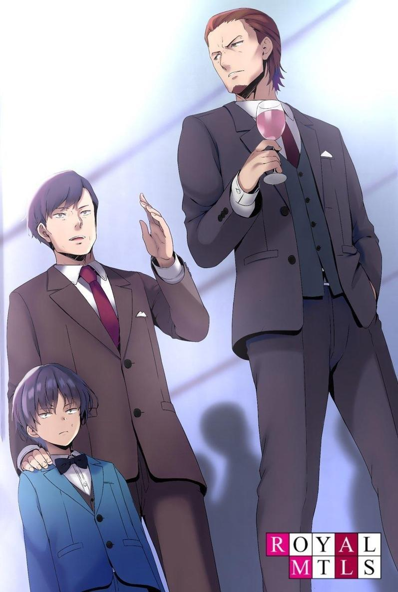
―...Eso fue...
―Por supuesto, te superaban en número, pero el Presidente Kanzaki me dijo que eres muy bueno en lo que haces. Podrías haber ideado cualquier forma de enfrentarte a ellos, ¿no?
Fingiendo ignorar las circunstancias, le hice esta pregunta.
―No era de mi incumbencia.
Apartó la mirada con torpeza.
―Es cierto que no fuiste tú quien inició el conflicto. Pero si hubieras ayudado, la otra persona estaría en deuda contigo. Una deuda de la que potencialmente podrías hacer uso en el futuro.
―...
―Si no tienes el poder para ayudar, puedes huir o ignorarlo. Pero si tienes el poder y no lo usas, eres un tonto.
(TL Nota: Esta cita está tomada directamente del monólogo de Kanzaki en SA Vol8)
No tenía ningún interés en este niño, pero hablé apasionadamente y puse mi mano sobre la cabeza del chico.
―Piensa mucho, preocúpate mucho y conviértete en un buen adulto. Sé un hombre que pueda ayudar a los demás. Apoya a tu padre y, con el tiempo, tú mismo podrás dirigir la empresa.
Si predicara esto delante del presidente Kanzaki, no podría ser grosero conmigo y le costaría retirar su inversión. No hay nada mejor que sacar todo el dinero que puedas.
―...Muchas gracias por su tiempo... Veré lo que puedo hacer.
Impresionado por mis palabras, inclinó alegremente la cabeza, algo muy distinto a su expresión rígida del principio de nuestra conversación.
PARTE 6.6
Al terminar la fiesta, entré en la sala de espera y me recosté en la silla, sin molestarme en ocultar mi cansancio.
―Siento tener este aspecto. Estaba tan agitado que perdí los nervios.
―No se preocupe. Seguro que no ha dormido bien en los últimos días.
―Parece que ha visto dentro de mí.
―No tiene miedo de ponerse al límite, ¿verdad, Ayanokouji-sensei?
Además, este es un momento de gran crisis para la Habitación Blanca.
Esperaba que mantuviera la calma hasta el final, sin importar la situación. Estoy realmente asombrado de su fuerza mental.
Hice un leve gesto a Sakayanagi y le dije que se dejara de cumplidos.
―Dígame por qué vino aquí. Estoy seguro de que no vino sólo a despedirse.
―Hablé con mi padre y accedió a dejarme ser el presidente de la Preparatoria de Educación Avanzada en un futuro cercano.
―¿Oh? Por fin sube al escenario. Lo ha visto todo, y su elección final es seguir los pasos de su padre. No es un final muy interesante, pero es justo como usted, Sakayanagi.
―Muchas gracias. Estoy agradecido de haber podido estudiar bajo su tutela durante tantos años, Ayanokouji-sensei.
No parecía contento, pero supongo que era por lo que le iba a decir a continuación.
Ahora que resultaba ser el sucesor, no era necesario especular sobre los motivos.
―Sería muy problemático para el presidente de una preparatoria que se supiera que estaba cooperando con un hombre como yo. Es un buen momento para romper la relación.
―Aunque tenemos puntos de vista diferentes, lo tengo en la más alta estima, Ayanokouji-sensei... Me sorprendió mucho cuando desafió a Naoe-sensei, pero me hizo darme cuenta de lo genuina que es su pasión por la Habitación Blanca. Por eso... Es una pena que tengamos que mantener las distancias.
Era una frase un poco cliché, pero es el tipo de cosa que diría Sakayanagi.
―No estoy obsesionado con la Habitación Blanca. No tengo nada. Sólo sé que si no me hubiera resistido a Naoe, él me lo habría arrebatado todo. Incluso si sobrevivía como político, no habría esperanza para mi carrera. Japón está demasiado atado al sistema de antigüedad. No importa lo capaz que seas, si eres joven, serás eliminado. O si intentas forzar tu salida, intentarán cortarte las alas. Pero si mira alrededor del mundo, verá que cada vez es más común que gente de veinte años ocupe puestos importantes y algunos de treinta estén en la cima de sus países.
Por mucho que intente contenerme, mi ambición es inagotable.
―¿Cómo podemos dejar por más tiempo el mundo de la política en manos de un puñado de viejos locos a los que les queda poco tiempo de vida? Piensan que basta con asegurarse el tiempo que les queda para vivir el resto de sus vidas. Están dispuestos a renunciar a la carne y la sangre de su país para protegerse durante los próximos 10 o 20 años. Entonces, ¿qué ocurrirá dentro de 30 años? ¿Y dentro de 40 años?
Japón será devorado por otras naciones, y no quedará nada que salvar.
Si considero que la gente es competente, la contrataré y la utilizaré.
Por supuesto, habrá muchos ambiciosos que vendrán a aprovecharse de mí mientras duermo o gente que hará cosas en la oscuridad bajo las órdenes de otro, pero mientras sean competentes, los utilizaré.
De lo contrario, la sangre corrupta del mundo político no será reemplazada y permanecerá estancada para siempre.
Luchar por la posición de uno mismo no hace ningún bien a la nación.
―De hecho, eso es lo que yo también me pregunto... Sólo se está cualificado para ser el jefe de un país cuando se tienen sesenta o setenta años.
Puedo entender que desconfíe de eso.
―Haremos que la Habitación Blanca sea firme y decidida, y luego enviaremos suficiente gente para reescribir el sistema organizativo de este país.
Vamos a revisar el sistema desde cero.
Puede que se burlen de mí por considerarlo una quimera, pero al final lo conseguiré.
―Es un gran plan. Puede llevar más de 10 o 20 años completarlo.
―Lo sé. Puede que haga falta más que mi generación para cambiarlo todo.
Para ello, necesitaremos a alguien que se haga cargo de la Habitación Blanca.
También es importante crear 'educadores' que puedan crear seres humanos más perfectos que los que tenemos ahora.
Algunos de los niños ya rinden por encima de las posibilidades del plan de estudios de Suzukake.
―Pero sigo prefiriendo estar al frente de la próxima generación, si es posible. Mi ambición nunca ha decaído. Una vez que un hombre asciende a un gran poder, es imposible que vuelva al punto de partida. Mientras Naoe-sensei esté en el Partido Cívico, mi puesto nunca será ocupado.
―Según tengo entendido, la oposición se ha dirigido a usted varias veces.
―Es una persona bien informada, ¿verdad? Sin duda sabe muchas cosas.
Estoy seguro de que a los partidos de la oposición les encantaría tenerme. Pero si me uno al partido, sólo me utilizarán. A menos que las cosas cambien, tengo que esperar. Ahí es donde mi lucha comienza. Tengo que reunir la fuerza de los niños para que los estudiantes de la Habitación Blanca sean elegidos. Para entonces, mis obstáculos -mis superiores- estarán muertos o retirados.
―Es una historia realmente desalentadora, ¿verdad?
Creo firmemente en mis propios éxitos y fracasos a través de mis experiencias.
Es decir, no imito a la gente exitosa.
Si se pudiera tener éxito imitando a la gente exitosa, nadie tendría problemas.
Entonces, ¿qué hay que hacer? No hagas lo que hace la gente que no tiene éxito.
La mayoría de la gente de este mundo no tiene éxito. Obsérvalos e intenta no cometer el mismo error.
Esto no es lo mismo que imitar a los que tienen éxito. Creo que es un punto de vista muy importante y lo he puesto en práctica.
―Buena suerte, Sakayanagi... Volveré a verlo algún día.
Le di la mano a Sakayanagi y me despedí.
Tras despedir a Sakayanagi en la entrada, contemplé en silencio el paisaje urbano.
En este mundo, hay una frase: "méritos y deméritos".
Significa "logro y transgresión". Es una palabra útil que engloba tanto lo bueno como lo malo.
La frase "méritos y deméritos" se utiliza a menudo y es apropiada para muchos políticos famosos.
En la superficie, logran diversas reformas, pero en la sombra no hacen más que engordar enormemente sus bolsillos.
El problema es que estos logros y transgresiones no son iguales.
A los ojos de los demás, cinco transgresiones son más importantes que diez logros.
En otras palabras, si salvas a diez personas pero dejas morir a cinco, eres malvado.
Eso es lo que dirían las masas.
Salva a diez personas y no permitas que nadie sea infeliz.
Salva a cien personas y no permitas que nadie sea infeliz.
Si salvas a mil personas pero haces infeliz a una, eres malvado.
Esta es la psicología de las masas.
Por supuesto, unos pocos dirán: " Salvaste a mil personas, así que deberías estar dispuesto a sacrificarte un poco".
Pero aquí hay otro truco.
Es que los que critican a los demás son muy ruidosos.
Cuando alrededor del 10% de la población expresa sus quejas, los medios de comunicación recogen las voces críticas con alegría.
Esto crea la ilusión de que todo el país te critica.
Ese sentimiento de querer criticar a alguien en lugar de alabarlo atrae la atención de la gente.
MIRANDO AL FUTURO
―HOY ES 11 DE MARZO. Grabado por Suzukake Tanji.
Suzukake puso la cámara de su celular en modo video y la colocó sobre su escritorio.
Giró el objetivo para mirarse a sí mismo.
―Llevo mucho tiempo dirigiendo la educación en la Habitación Blanca.
Ese día, Suzukake decidió dejar en silencio sus pensamientos sobre su investigación almacenados en su celular.
―Pero la Habitación Blanca estará estancada por un tiempo después de hoy. No sé nada de política, pero parece que un político llamado Naoe ha estado tratando de impedir el regreso de Ayanokouji-sensei. Vaya problema. Pero decidí ver el lado positivo. Hace mucho tiempo que no estoy de vacaciones; quizá el estancamiento no sea algo malo.
Tomando aire, Suzukake apagó el monitor de la computadora.
―Los humanos son realmente interesantes. Como ocurre con todos los niños, aprenden cosas que no se les enseñan. Me di cuenta de ello en la educación de las cuatro primeras generaciones e introduje un plan de estudios sobre comunicación a partir de la quinta generación. Por supuesto, esto dio lugar a algunas ineficiencias. Como resultado del desarrollo de las emociones, la tasa de aumento de la capacidad disminuyó. A pesar de ello, el nivel de dificultad del plan de estudios supera ligeramente el de las generaciones anteriores, por lo que los alumnos de la quinta generación en adelante tienen mejores capacidades que los de la tercera.
El castigo debe darse, y las emociones deben considerarse simplemente un extra.
Suzukake no había cambiado su enfoque.
―De los diez niveles de dificultad que elaboramos, el plan de estudios que preparamos para la quinta generación es el nivel de dificultad cuatro, y para la sexta generación, el nivel de dificultad cinco. Este es quizá el límite. El sexto nivel que aplicamos a la séptima generación ya provocó que todos ellos abandonaran el programa. Con el tiempo, estos niños se convertirán en adultos ideales. Serán capaces de integrarse en el mundo como unos de los mejores del mundo.
Suzukake guardó silencio un momento.
―Supongo que podremos averiguar todo esto buscando en los archivos.
Aunque, la razón por la que decidí documentar esto hoy es para recordar el calor de la carrera. La Habitación Blanca ya ha visto a muchos niños aprender y luego desertar, pero aun así ese niño... Ayanokouji Kiyotaka es una gran existencia.
Ese niño tiene una extraña habilidad para aprender, adaptarse y aplicarse. Su talento sigue asombrándome cada día, y su reputación no deja de crecer... Los investigadores de la Habitación Blanca creen que pueden entrenar a ese niño del mismo modo que a los demás, pero en mi opinión, él es la excepción. Es incluso más único en este entorno distorsionado. Una verdadera mutación.
A través del plan de estudios Beta de su propia creación, se creó el producto de la educación más exigente y completa.
―No... ni siquiera sé si puedo llamarlo producto. En cualquier caso, no hay forma de reproducirlo. Pero incluso Kiyotaka fue imperfecto desde el principio.
Ya fuera en los estudios, en el karate o en el boxeo, los primeros resultados que nos mostró fueron más bien mediocres y ordinarios. Esa es la diferencia. Es extremadamente bueno absorbiendo poder y sublimándolo en su propia habilidad. Una vez que terminó de aprender lo básico, empezó a desarrollar las habilidades para enfrentarse a lo que se le presentaba por primera vez, utilizando su extraordinaria capacidad para aplicar lo aprendido.
Cuando cerró los ojos, la imagen de Kiyotaka permaneció grabada a fuego en la parte posterior de sus párpados.
―Al octavo año, los niños que quedaban se redujeron a cinco. Teniendo en cuenta que al principio había 74 niños, la tasa de abandono superaba el 93%.
La tasa media de abandono del primer al tercer año fue del 27%, y del 30% a partir del quinto. El plan de estudios era temerario. A estas alturas, temía que todos hubieran abandonado a mitad del noveno año. No... más bien esperaba que abandonaran. En el caso de que hubiera un niño que pudiera quedarse y seguir un plan de estudios que ningún ser humano debería seguir jamás... Ese niño ya no sería humano, sería un monstruo. Eso no puede existir. Como para que esa realidad existiera, cuando llegó la nueva primavera, sólo quedaba un niño. Pero aquí está el problema. Ese único niño que queda no mostró ningún signo de desertar después de 10, 11, 12 años. Al contrario, ha llegado a superarnos a nosotros, investigadores y líderes. Los adultos con conocimientos superficiales abandonaron la Habitación Blanca en menos de lo que canta un gallo. El propósito original de la Habitación Blanca era continuar la educación hasta la edad adulta, pero la idea de seis años más... No puedo hacerlo. Ese niño se nos pasará en un futuro próximo. Esto no es una corazonada, es una certeza. Y al mismo tiempo, no sé por qué es posible. ¿Es producto de mi programa de estudios o de una mutación genética? No puedo demostrar por qué no desertó y siguió sobreviviendo. Me está volviendo loco.
Entonces, ¿cómo debe considerarse la existencia de la Habitación Blanca y de Kiyotaka en el futuro?
La decisión final la tomará Ayanokouji Atsuomi, el director de esta instalación, pero el debate entre los investigadores estará muy dividido.
―La cuestión de si es posible o no crear genios artificiales sigue sin respuesta, pero se ha demostrado que es posible crear personas brillantes a través de la Habitación Blanca. Sin embargo, siempre hay un techo para las capacidades de cada niño.
Suzukake miró la taza vacía que, hasta hacía unos minutos, contenía té sencha.
Abrió el tapón de la flamante agua mineral y se puso tanto la taza como el tapón en la mano.
―Este es el tamaño del talento del educador ―dijo Suzukake―. Este pequeño tapón es, por así decirlo, el límite del talento de un educador ordinario.
La copa mucho más grande, comparada con este tapón, puede entenderse fácilmente como el talento de los educadores de la Habitación Blanca. Los niños
que reciben educación elevaron sus propios límites de acuerdo con los límites del talento de los educadores. Si una persona normal tiene el tamaño de un tapón, la educación aquí le permite desarrollar su talento hasta el tamaño de esta taza.
Vertió agua mineral fresca en la taza.
―Una vez que llegas al límite, básicamente no hay espacio para seguir creciendo. El agua se desborda y no hay nueva información que absorber... No, ésa no es la expresión correcta. Cada vez que absorbemos nuevos conocimientos, perdemos un poco de nuestro antiguo talento, y ni siquiera nos damos cuenta de que está ocurriendo.
Suzukake suspiró mientras observaba cómo el agua fluía sobre el escritorio y se dispersaba.
―Nos esperan muchos problemas. En primer lugar, sólo hay un número limitado de personas con el talento del tamaño de esta taza. En segundo lugar, aunque tengan el talento, no necesariamente tienen las habilidades para enseñarlo. En tercer lugar, no siempre es posible obtener talentos de la misma magnitud entre educadores y alumnos. El límite superior es el tamaño de una taza, pero algunos individuos suelen ser una o dos veces más pequeños que ella. Por supuesto, hay casos de niños que son una o dos tallas más grandes que el límite superior, pero la probabilidad es menor que en el primer caso. Y
luego la parte más importante. La parte más importante es que los genios de este mundo no se limitan al tamaño de una taza. Tienen más talento que esta botella de agua mineral. No hay nadie que tenga tanto talento y a la vez tenga talento para educar. Y aunque lo tuvieran, probablemente los niños nunca llegarían a ser más grandes que la taza.
Lo mismo se puede decir de los datos de estudios anteriores.
―Una educación generosa que cuida a los niños, o exactamente lo contrario: una educación estricta. En cualquier caso, ambas muestran que el potencial de un niño tiene un límite.
El objetivo de la Habitación Blanca es crear genios a partir de gente normal y entrenarlos para ser competitivos en el mundo.
―Es posible crear intencionalmente personas que estén en el 10%
superior de la humanidad. En este sentido, la Habitación Blanca es una institución que puede producir resultados sólidos. Pero puede que no sea capaz de crear personas que estén en el 0,01% superior para competir con el resto del mundo.
Una verdadera sensación de fracaso como investigador.
Suzukake lo sintió profundamente cuando pensó en la existencia de Ayanokouji Kiyotaka.
―or el momento, no puedo ver el límite superior del talento en ese niño.
Absorbe tanto como se le enseña. Podría decirse que nació siendo un genio, o que fue el resultado de su educación en la Habitación Blanca. Ambas cosas me parecen correctas e incorrectas. Si Kiyotaka no hubiera sido educado en la Habitación Blanca, probablemente se habría limitado a ser una persona razonablemente competente. Si le hubiera faltado alguno de los dos componentes, no habría sido como es ahora... Y... Si Kiyotaka continúa su educación en la Habitación Blanca, es obvio que será un recurso para elevar el techo de talento de las nuevas generaciones. Si Kiyotaka se pusiera en mi lugar y educara a estos niños, crecerían más como botellas de plástico que como vasos. Me encantaría que eso ocurriera.
Ángeles y demonios se preguntaban en su mente.
Si lo enviara como líder para dirigir Japón, en lugar de ser un simple educador en la pequeña Habitación Blanca, ¿cuánto lograría?
¿Cuál es la elección más significativa para Japón y para el futuro?
Él no era el juez final, pero se preguntaba qué elección haría Ayanokouji-sensei.
―Voy a verlo todo, y voy a estar involucrado en la educación de la Habitación Blanca por el resto de mi vida, independientemente de lo que él elija hacer.
Nunca se había divertido tanto, y se sentía lleno de plenitud, a diferencia de cuando se vio obligado a huir de Japón y marcharse al extranjero.
―Por muy bueno que sea Ayanokouji Kiyotaka, queda la duda de si es o no un verdadero genio. Emocionalmente, está muy por debajo de la media, y no sabe lo que la mayoría de la gente. Puede que aprenda memorizando, pero aún está por ver el efecto negativo que eso tendrá en él. Es defectuoso.
Mientras continuaba, Suzukake cogió su móvil y detuvo la grabación.
―Me pregunto si ese niño que he creado será... feliz al final de su vida...
Como investigador, Suzukake sintió una fuerte reticencia a grabar semejantes comentarios.
PARTE E.1
Era un día en que los cerezos estaban en plena floración. Dejé Saitama y regresé a Tokio por primera vez en varios meses.
En lugar de mi casa de Meguro-ku, donde me había instalado hacía varios años, me dirigí a mi oficina, que hacía mucho tiempo que no visitaba.
―¿Cuánto tiempo ha pasado desde la última vez que vine aquí...?
Miré por la ventanilla de mi coche el edificio que pronto sería demolido y di mis órdenes.
Me detuve en el borde de la carretera, encendí las luces intermitentes y me bajé.
Llevaba mucho tiempo alejado de la política, pero se acercaba la hora de mi regreso.
Naoe, el intermediario que ha estado acechando en las sombras de Kijima, tenía ahora más de 80 años y había estado sufriendo una grave enfermedad. Había vuelto a la política, aparentemente curado de su enfermedad, pero en realidad su vida pendía de un hilo.
La prueba estaba en el sabotaje de la Habitación Blanca y la incesante presión del bando de Naoe sobre sus partidarios en la sombra. Decidió que tenía que deshacerse de mí antes de que su propia vida se extinguiera.
Fue un golpe que la Habitación Blanca se suspendiera temporalmente, pero cambié de opinión, pensando que me daría el tiempo suficiente para preparar un resurgimiento de la situación.
―Me estoy haciendo viejo, lo mismo va para Naoe.
Pronto comenzará de nuevo mi batalla por los cargos políticos.
Las señales y las premoniciones... Kamogawa, a quien no había visto desde aquel día en que hablé con Naoe en el ryotei, se presentó en mi puerta como para felicitarme.
―Ha pasado mucho tiempo, Ayanokouji-sensei. No esperaba que vinieras hasta aquí a recogerme.
―No te preocupes por eso. ¿Cómo te va por ahí?
Habíamos estado hablando por teléfono, pero en los últimos años, mi contacto cara a cara con él se había vuelto todavía más raro que con Sakayanagi. Debía tener cuidado de no hacer nada que me pusiera en el punto de mira de Naoe.
―Gracias a ti, estoy bien. ¿Va todo bien para ti también, Sensei?
―Tú eres a quien deberían llamar 'sensei', ya que te siguen eligiendo.
Cuando mencioné esto en broma, Kamogawa respondió con una cara muy seria.
―Es cierto que ahora no eres político, pero has traído a mucha gente adinerada y diriges la Habitación Blanca, una conocida institución educativa. Los rumores no cesan.
Desde luego, he sobrevivido a los tiempos difíciles.
Aunque me exiliaron del mundo político, ahora he acogido a mucha gente de negocios en la Habitación Blanca, y he tomado un camino que no podría haber imaginado como mi propia fortuna.
Aunque mi título de político ya no existía, más gente me llamaba "Sensei" que nunca antes.
―He oído en la Habitación Blanca que su hijo es bastante brillante.
―¿Es irónico? He estado tanto en el radar que tuve que cerrarla temporalmente.
Kamogawa rio amargamente, pero seguía teniendo la misma mirada de antes.
No, parecía haber madurado una o dos veces más que antes.
―Creo que ya lo sabes. Como ya te habrás dado cuenta, Naoe-sensei está moviendo los hilos en la sombra. No creo que vaya a revelar la Habitación Blanca al público ya que se quemaría él también, pero está empezando a utilizar todo tipo de métodos para intentar deshacerse de ella.
―Si no fuera idea suya, ya la habrían cerrado. Parece que se lo está poniendo muy difícil en ese sentido. ¿Cuál es su próximo movimiento?
―De momento no lo sé. He conseguido aferrarme a la facción de Naoe-sensei, pero solía trabajar a tu lado, Ayanokouji-sensei, así que no confía en mí.
Sería difícil traspasar las defensas de Naoe aunque intentara obligar a Kamogawa a sondear.
Más bien, es más importante mantenerlo oculto dentro de la facción.
―Es que... su salud parece haberse deteriorado mucho últimamente.
Kamogawa murmuró en voz baja a mi lado.
―Es un poco frustrante no poder enterrarlo con mis propias manos, pero supongo que es mejor dejar que la enfermedad lo entierre.
Por eso Naoe es un oponente en el mundo político que no muestra ninguna apertura de la que puedas aprovecharte.
Y dada su edad, muy pronto estará en el punto de mira.
―Finalmente, tu regreso será pronto, ¿no?
―Sí. Pero aunque él desaparezca, eso no me facilitará llegar a la cima del mundo político. No, de hecho, será mucho más difícil que antes.
Pensaba que Naoe-sensei era uno de los nombres más grandes de la política, pero creo que el presidente Kijima, que está controlando bien la política, será aún más grande que eso.
Si sigue así, pronto batirá el récord de mayor permanencia en el cargo.
Aún tiene sesenta años. La era de Kijima continuará durante otros 10 o 20 años.
Como hombre joven, yo mismo estoy envejeciendo constantemente.
Esta será mi última oportunidad de hacer algo.
―Por eso voy a asegurarme de estar en el lugar adecuado en el momento adecuado.
Una pausa temporal en la Habitación Blanca.
Sean seis meses o cinco años, no se sabe cuánto durará, pero lo último que quiero es que se haga pública. Pero sería un alivio saber que el bando de Naoe está en la misma página.
Seguro que está tramando e intrigando para enterrar de algún modo el asunto en la oscuridad.
Llegó el coche y Tabuchi abrió la puerta del asiento trasero.
Kamogawa subió lentamente al asiento del copiloto.
―Tabuchi, ¿qué hay de los preparativos?
―Como estaba previsto, los niños serán supervisados y atendidos por un orfanato temporal.
―Bien.
―Y tu hijo... ¿estás seguro de esto?
―No voy a darle un trato preferencial sólo porque sea mi hijo. Pero al menos mientras sea el mejor de los mejores en la Habitación Blanca, tiene derecho a ello, hasta el punto de que me hace dudar, pero en cierto modo, eso también tiene sentido.
Nos dirigimos a nuestro destino y esperamos a que Kiyotaka salga de la clínica.
―A pesar de todo, es una clínica de asesoramiento... ¿le pasó algo a Kiyotaka-kun?
―No. Lo envié allí porque había alguien que realmente quería conocer a Kiyotaka. Es una petición de un hombre que tiene una considerable cantidad de dinero invertida en la Habitación Blanca, así que no tuve elección.
―Quieren verlo, ¿eh?
―Es superficial. Creen que es una forma de cerrar la herida, pero no se dan cuenta de que es contraproducente.
Ishida, que salió primero de la clínica, se unió a mí.
―¿Cuándo fue la última vez que viste a Kiyotaka?
―Bueno, han pasado unos cinco o seis años desde la última vez que vi a su hijo. Tengo muchas ganas de ver cómo ha crecido.
―...¿Te hace ilusión?
Ishida, que acababa de subir a bordo, se quedó mirando a Kamogawa con cara de sospecha.
―¿Qué? ¿dije algo raro?
―Esa cosa es un monstruo. No es algo que debas mirar con tanta despreocupación.
―¿Un monstruo? Es su hijo, señor. No debería haber dicho eso...
―Ishida es uno de los que ha estado velando por Kiyotaka desde el momento en que nació.
Podía decirlo como quisiera.
Estaba más cualificado que yo, que sólo estaba emparentado con Kiyotaka por sangre.
Lo habían entrenado hasta tal grado de perfección que era casi inimaginable que fuera un joven a punto de entrar en el tercer año de secundaria.
Sin embargo, a cambio le faltaban muchas cosas.
Esta era quizá una de las razones por las que Ishida lo llamaba monstruo.
Kamogawa frunció el ceño ante la falta de contención de Ishida y miró por la ventana.
PARTE E.2
Llevo más de 14 años viviendo en la Habitación Blanca y he completado lo que comúnmente se conoce como el segundo año de secundaria. El mundo real exterior es diferente del mundo virtual, pero me encontré aceptándolo más cómodamente de lo que pensaba.
No estaba claro si se debía al plan de estudios o a algún otro factor.
Mientras esperaba en una sala vacía, siguiendo las instrucciones del Dr. Ishida, se me acercó un hombre.
―Siento haberte hecho esperar, Ayanokouji Kiyotaka-kun. Gracias por venir hoy.
―¿Quién es usted?
Nunca lo había visto antes.
Su rostro tranquilo hacía difícil creer que fuera de la Habitación Blanca.
Lo que más me llamó la atención fue que llevaba un jarrón de flores en la mano.
Esto tampoco lo había visto nunca. Algo que sólo había aprendido y visto en imágenes.
―Hay una chica que realmente quiero que conozcas, así que le pedí un favor a Ayanokouji-sensei.
―No entiendo de qué habla.
―La chica se ha vuelto tan débil mental que ni siquiera puede salir. Puede mantenerse relativamente tranquila en casa y en esta clínica. Por eso te pedí que vinieras.
―¿Esas son... flores de cerezo?
―Solían colgar en esta habitación, pero tuve que cambiar el agua. Es su flor favorita. Pronto volverá de su revisión.
Puso el jarrón en el estante junto a la ventana.
―¡Kiyotaka...!
Mientras esperaba a que volviera, se abrió la puerta de la habitación y gritaron mi nombre.
Una chica, supongo que de mi edad, se me quedó mirando con los ojos muy abiertos.
―He querido verte todo este tiempo... ¡Te extrañé mucho!
―Tú eres...
―¡Yuki! ¡Soy Yuki!
Yuki. Conocía ese nombre. Pertenecía a una estudiante de la Habitación Blanca que había desertado hace mucho tiempo. Borré el nombre de mi memoria, pero era natural recordar algunas cosas ya que no puedo borrarlas intencionalmente.
―¿Por qué estás aquí?
Incluso si ella no murió realmente, en el instante en que se retiró, todo terminó para ella.
Enfrentarse a los muertos. Era una sensación extraña, pero ¿cuál es el propósito de esta reunión?
―Mi hija Yuki ha estado débil desde que dejó la Habi- No, la misma instalación en la que estás tú. Ha estado deprimida. No puede salir y no deja de preocuparse por ti.
El hombre que observaba desde la distancia parecía ser el padre de Yuki.
Su sonrisa era un poco diferente de la que solía mostrar cuando era niña.
―Ha pasado mucho tiempo. Kiyotaka... ¿estuviste en ese lugar todo el tiempo?
Me miró con miedo en los ojos mientras recordaba el pasado.
A juzgar por la reacción de su padre, le asustaba la mención de la Habitación Blanca.
―Durante 14 años he estado allí. Hoy es la primera vez que salgo.
―Sabía que eras genial, Kiyotaka... ¿Y los otros chicos? ¿Se fueron en el pasado?
―Bueno, todos se fueron muy pronto. Yo soy el último desde hace años.
No sé.
Nunca me importaron los que se fueron, incluida la niña que tenía delante.
―Solo... ¿Siempre en ese lugar...? Yo... Yo, ese, ese lugar... ¡Yo...!
El cuerpo de Yuki empezó a temblar como si el miedo que había estado reprimiendo se estuviera inflamando.
―¡Yuki, deja de recordar!
Yuki estaba angustiada mientras desenterraba sus recuerdos. ¿Era así de miserable una persona que salió de la Habitación Blanca?
Lo único que entiendo es que debe ser la hija de un conocido hombre de negocios.
Todo lo que sé es que fue tratada con respeto después de su abandono.
Pero el hecho de que vaya a terapia demuestra que no se ha curado del trauma.
Y uno de los métodos de curación fue reunirse conmigo, que también pertenecía a la cuarta generación... Supongo que...
Ahora que sé lo que está pasando, no tengo más interés en este lugar.
―Tengo que irme.
―¡Es-espera! ¡Por fin pude verte! Quiero hablar más contigo, ¡mucho más!
―No tengo nada que decirte.
Si no podía hablar de la Habitación Blanca, no podíamos tener una conversación.
―Por favor, Ayanokouji-kun, ¿puedes hablar un rato con Yuki? Sí, cualquier conversación está bien. Una simple e insignificante conversación...
―¿Qué quiere decir con 'insignificante conversación'? Comprende que soy nuevo en el mundo exterior, ¿verdad?
―Eso es...
―Por supuesto, puedo contarle una historia llena de mentiras si quiere.
Estoy dispuesto a obligarme a inventar algo lo mejor que sepa, ya sea sobre Japón o sobre el resto del mundo. Pero eso no es lo que quiere, ¿verdad?
―Me parece bien. Me parece bien hablar de la Habitación Blanca.
Yuki me agarró de la manga, hiperventilando, intentando no soltarme.
―No creo que debas hacerlo. No puedes hablar conmigo.
―¡E-eso no es verdad...! Siempre he querido volver a verte... ¡Kiyotaka...!
―Deberías haber detenido ese sentimiento. Cuando me veas así, sólo sufrirás por la diferencia entre tus recuerdos y tus ideales. Si quieres sanar tu mente, debes continuar tu tratamiento aquí.
Eso fue suficiente. Prefería echar un vistazo fuera que perder el tiempo aquí. El mundo exterior, al menos, aún guarda la posibilidad de la curiosidad.
―Por favor. Todavía no, quédate un rato más...
El padre de Yuki bloqueó la salida con los brazos abiertos.
―¿Es una orden?
―No... es...
―No, no lo es, ¿verdad? El representante de la Habitación Blanca no me dio ninguna instrucción específica.
―En efecto. Ayanokouji-sensei sólo prometió dejar que tú y Yuki se encontraran. Esta es sólo mi petición personal.
―Entonces declino.
―¿Qué?
―Me niego porque creo que es lo mejor para ella.
―¿No te importa una niña que abandonó los estudios?
―Así es. No me importa una niña que se retiró.
Pero este tipo tomó una mala decisión al traerme como consejero.
―Discúlpeme.
―¡No! ¡No te vayas, Kiyotaka!
―No eres diferente de cuando te fuiste y desapareciste.
―¡...!
―Deberías estar agradecida con tus padres y centrarte en el tratamiento que recibes aquí. Cuanto más esperes de mí, más te arrepentirás.
―¡No! ¡Quiero hablar contigo! Quiero hablar más contigo, hablar de lo que no pudimos hablar entonces.
El espíritu de Yuki, con su tono y reacciones terriblemente infantiles, no había cambiado en nada desde aquella vez hace unos años.
―¡Espera! ¡Por favor!
―Por favor, hazte a un lado.
―Yuki... No soy el único que no puede alcanzarla. Las palabras de mi esposa y de mi segunda hija tampoco llegan a ella. No se puede llegar a ella.
Pero... ella habla contigo... ¡No sabes cuánto podría salvarla sólo eso...!
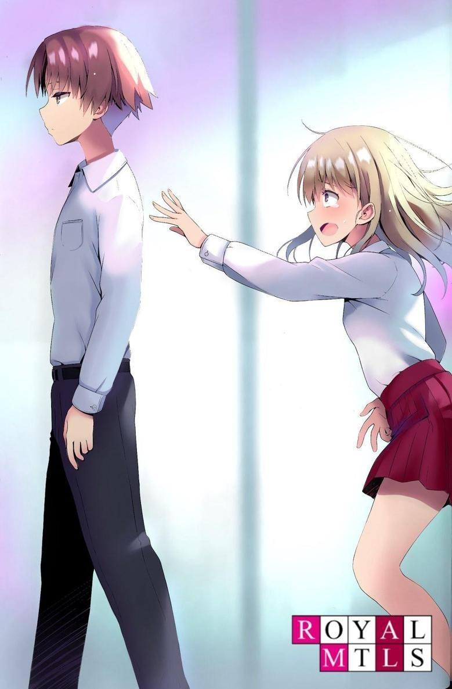
―Adiós. Espero no volver a verte. Se los dejo.
―¡No! ¡No! ¡Kiyotaka! ¡Noooo!
Su voz gritando y la voz de un adulto gritándole sin control.
Ninguna de ellas llegó a lo más profundo de mis oídos. No me interesaban.
Salí del hospital y volví al coche que me esperaba.
Una figura salió del lado del copiloto, agitando la mano en el aire.
―H-Hola, Kiyotaka-kun. Encantado de conocerte, me llamo Kamogawa-Había visto esta cara antes. Eso pensé, pero no le respondí nada y me acomodé en el asiento trasero.
―...No es nada, jaja. Espero que lo olvides.
Sonrió, se rascó la cabeza y miró hacia delante.
―Empieza a conducir.
―Entendido, señor.
Me senté solo en el silencioso coche y miré el paisaje por la ventanilla.
―¿Qué se siente al estar fuera por primera vez?
―Nada.
No es que no tuviera curiosidad.
Es sólo que no siento nada, al menos nada a lo que pueda llamar una respuesta emocional.
―Nada, ¿eh?
Mi padre seguro que lo había pensado.
Que yo miraba por la ventana sin emociones.
Que quizá ahora no podía distinguir la diferencia entre el mundo virtual y la realidad.
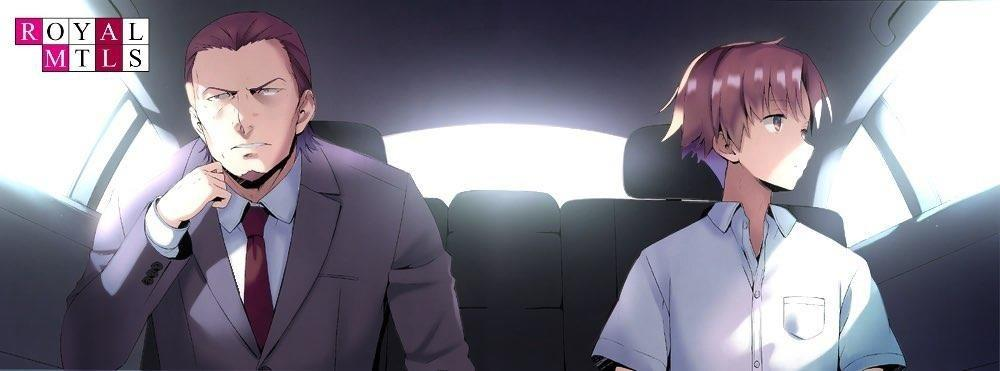
Eso fue un grave error.
Es más fácil dejar que la gente piense que todo está bajo control.
Al menos por ahora, es beneficioso para mí mantenerlo así.
No era necesario que este hombre supiera que siempre estaba afilando mis colmillos.
―Continuarás tu plan de estudios de la Habitación Blanca conmigo durante un tiempo. Volverás a las instalaciones cuando reabra la Habitación Blanca.
―Entendido.
El cambio de entorno no era obstáculo para quienes ya dominaban las habilidades adquiridas en la Habitación Blanca.
PARTE E.3
―Es una vergüenza, todo esto, ¿verdad?
Tras bajar del coche y llevar a Kiyotaka al recinto, me fui con Kamogawa a solas.
―¿Qué pasa...?
―Sólo hay una existencia final. Si seguimos la estrategia adecuada, dedicará su vida a entrenar a la gente y superará a Suzukake en la Habitación Blanca. Si hacemos eso, existe la posibilidad de que al final surja más de una persona cercana a Kiyotaka.
―Ese era el plan original, ¿no? ¿No es eso lo que planeabas hacer?
―Mi regreso a la política se está haciendo realidad ahora. Eso es lo que me hace dudar.
―No puede ser...
―Nunca lo había pensado así.
―¿Vas a convertirlo, Kiyotaka-kun, en un político?
―La estrategia de educar a la Habitación Blanca para poder transmitirla a la siguiente generación es lo que se supone que debe hacer la Habitación Blanca. Es un proyecto importante que debe llevarse a cabo si Japón quiere asumir el liderazgo en el mundo de 50 a 100 años a partir de ahora. Para mí eso es inflexible.
Pero...
―Pero, para que yo ocupe el primer puesto en el mundo político, es necesario un aliado fuerte. Lo más pronto que Kiyotaka puede convertirse en senador es a los 25 años. Yo tendré 61 para entonces. Eso es poco.
―Pero para un político, estás a tiempo una vez que has madurado.
Por supuesto, aunque Kiyotaka se convierta en parlamentario, no podrá hacer nada inmediatamente.
En teoría, sin embargo, tendría derecho a ser nombrado primer ministro a los 25
años.
Tiene potencial para ser mucho más útil que la variedad habitual de legisladores mediocres.
―¿Qué vas a hacer...?
―No tengo respuesta. Si Kiyotaka o yo controláramos el mundo político, podríamos cambiar mucho las cosas en Japón, aunque no estemos hablando de los próximos 50 o 100 años. Sin embargo, es inevitable que haya un retraso en la educación de la Habitación Blanca. Por eso estoy preocupado.
Lo más frustrante es que tiene el título de ser mi hijo.
Cuando llegue a la política, el público pensará que sólo quiero que la próxima generación siga mis pasos.
Una gran desventaja, pero creo que hay forma de sacarle partido.
Y su falta de alegría, ira, tristeza y emoción también es una gran preocupación.
Hay que mejorarlo.
―Estoy seguro de que Kiyotaka-kun será obediente, y estoy tentado de esperar mucho de él.
No puedo decir cuánto control tiene Kiyotaka sobre sí mismo.
Su mente ya está muy por delante de la nuestra.
Puede que no tenga muchas emociones, pero sus pensamientos son activos, y probablemente nos supere en dos o tres movimientos. Por otra parte, es afortunado por su ignorancia del mundo y su ingenuidad en muchos aspectos.
Todavía no ha alcanzado el nivel de pensamiento en el que estoy yo, que soy prudente.
A partir de este momento, me dispuse a cambiar mis planes.
Mi voluntad de apoderarme de este país era fuerte e inquebrantable.
―Hoy, vas a tener que quedarte conmigo un poco más, Kamogawa.
Independientemente de las medidas que decidiéramos tomar, en primer lugar, era necesario trabajar sobre Kiyotaka en lo referente a su personalidad.
―Está bien, pero... ¿qué vas a hacer?
Entonces una mano golpeó ligeramente la ventanilla del coche y Tsukishiro subió con naturalidad al asiento libre del conductor.
Este hombre no sólo tenía contactos en los partidos gobernante y de la oposición, sino también en el mundo de los negocios. Su actitud de hacer lo que fuera para ganar lo hacía arriesgado y de poco fiar, pero incluso en su vejez, seguía siendo muy bueno en lo que hacía.
―Ayanokouji-san, parece que gozas de buena salud... Veo que últimamente te llevas muy bien con la gente del Partido de la Paz.
―Eso no me importa. ¿Qué pasa con lo que te pedí que hicieras?
―Ya se hicieron los arreglos. No habrá problemas con la verificación de antecedentes.
―Bien. Y hay una cosa más que necesito que hagas por mí en el futuro.
Les conté a Tsukishiro y Kamogawa mis planes de futuro.
Mientras Kamogawa se sorprendía de principio a fin, Tsukishiro escuchaba con una sonrisa en la cara.
―Parece un plan interesante. Me gustaría decir que agradezco tu trabajo, pero me estoy haciendo viejo.
Era humilde, pero este hombre no aceptaba lo que no podía hacer.
―Eres el hombre para el trabajo. Quiero ver hasta dónde puede llegar él.
―Si me lo dejas a mí, está bien. Acepto. Cooperaré en la ejecución de tu plan. Tendremos que preparar algunas piezas que pueden faltar más adelante.
Hice un gesto para que el coche arrancara e hice que Tsukishiro pusiera en marcha el motor.
Sólo le conté a Tsukishiro, en quien no confiaba, el futuro de Kiyotaka. Pero eso no era todo lo que buscaba. También quería aprovecharme de Kijima y la PEA, los enemigos con los que finalmente tendré que lidiar.
Un año después, Ayanokouji Kiyotaka decidió matricularse en la Preparatoria de Educación Avanzada.
PALABRAS DEL AUTOR
Gracias por leer el volumen 0.
Soy Kinugasa Shougo. Mi comida favorita es el ochazuke, mi bebida favorita es el té negro y mi afición es ver el béisbol.
He estado deseando tener un perro o un gato, pero cuando los miembros de mi familia votan cuál quieren, la votación siempre se divide en 2 a 2, así que no he podido conseguir ninguno de los dos hasta ahora.
Mi problema reciente es que cuando caliento pasta congelada en el microondas durante un poco más de tiempo porque quiero que esté caliente, a menudo acabo comiéndome los fideos secos y crujientes. Incluso después de ajustar repetidamente, sigo obteniendo el mismo resultado. ¿Es culpa mía como usuario del microondas, o es culpa del microondas? Debe ser lo segundo.
--Bueno, basta de charla inútil, pasemos al tema del Volumen 0.
¿Qué les pareció este volumen especial sobre el pasado, que se consideraba prohibido en las publicaciones anteriores de Youjitsu?
El escenario de la Habitación Blanca ya existía en 2015, cuando comenzó la historia de Youjitsu, pero entonces no tenía ni idea de que profundizaría en él y lo escribiría en un solo volumen.
Como escritor, me siento muy feliz de haber podido hacerlo realidad, aunque sea de una manera especial.
Fue bastante difícil escribir este libro sin alterar el ritmo de publicación, pero espero que guste al mayor número de personas posible.
De hecho, junto con el volumen de la Habitación Blanca, hay otro volumen del año en blanco que no se había dado a conocer al público existiendo en forma material.
Se trata de la historia de la vida de Ayanokouji Kiyotaka desde el final del Volumen 0 hasta el comienzo del Año 1 Volumen 1.
En este momento, no tengo ningún plan de publicar este material en forma de libro, pero empiezo a pensar que sería interesante hacerlo si alguna vez tengo la oportunidad en el futuro.
Pues bien, damas y caballeros, ésta es una breve despedida.
Los veré de nuevo en las palabras del próximo volumen. Hasta pronto.


VISÍTANOS EN NUESTROS
DIFERENTES SITIOS
http://gladheimtranslations.blogspot.mx/
https://twitter.com/GladheimT
https://mastodon.social/@GladheimT
Si alguien desea hacer una donación
https://ko-fi.com/gladheimtranslation
https://www.buymeacoffee.com/gladheimtls
https://patreon.com/GladheimT